Úvod
Tento text vznikl pro potřeby výuky předmětu Úvod do programování na FEI VŠB-TUO. Slouží k získání přehledu o základních konceptech programovacího jazyka C. Není však plnohodnotnou náhradou za poslechy přednášek a návštěvy cvičení a programovat vás (stejně jako žádný jiný text) nenaučí, toho lze dosáhnout pouze opakovaným zkoušením a řešením různých úloh. Studentům tedy silně doporučujeme, aby přednášky a cvičení navštěvovali a hlavně aby se věnovali programování doma, alespoň hodinu denně.
V tomto textu naleznete stručný úvod o programování, překladu a ladění programů, nastavení prostředí k editaci zdrojového kódu, a zejména popis základních konstrukcí jazyka C (proměnné, podmínky, cykly, funkce, ukazatele, pole, řetězce, struktury atd.) spolu se sadou úloh k procvičení jednotlivých témat. Pomocí ikony vlevo nahoře můžete v textu rychle vyhledávat, pokud potřebujete najít informace o konkrétním tématu.
Několik poznámek k textu:
- Tento text neslouží jako kompletní průvodce jazyka C. Pro takovýto účel lze doporučit některý knižní titul, např. Učebnice jazyka C od Pavla Herouta nebo přímo standard jazyka C99.
- Jelikož je předmět UPR zaměřen na vývoj v operačním systému Linux, tak ukázky kódu a příkazů v terminálu
předpokládají použití tohoto operačního systému (konkrétně distribuce
Ubuntu). - Tento text je psán česky, nicméně primárním jazykem programování (celosvětově) je angličtina. Přeložené pojmy, které mají zavedené anglické názvy, budou v tomto textu uvedeny v závorce kurzívou.
- V tomto textu naleznete různé ukázky C kódu. Některé z nich můžete sami upravovat a dokonce i spustit rovnou v prohlížeči pomocí ikony v pravém horním rohu kódu. Ukázky budou pro zjednodušení používat názvy v češtině, nicméně jakmile už nebudete v programování úplní nováčci, silně vám doporučujeme psát zdrojové kódy v angličtině.
- Pokud v textu naleznete gramatickou či faktickou chybu nebo budete mít jakoukoliv zpětnou vazbu k obsahu či formě textu, dejte nám prosím vědět na tento e-mail nebo vytvořte issue na GitHubu.
Autory textu jsou Jan Gaura, Dan Trnka a Kuba Beránek.
Historii změn tohoto studijního textu můžete naleznout v jeho GitHub repozitáři.
Programování
Programování je proces tvorby programu, tj. sady příkazů pro počítač, který slouží k vyřešení nějakého konkrétního problému. Problémem se zde myslí nějaká úloha, kterou chceme vyřešit. Takovéto úlohy obsahují nějaký (počítačem zpracovatelný) vstup, například:
- pohyb myši
- stisk klávesy
- zvuk z mikrofonu
- textový soubor na disku
a k nim určený výstup, například:
- vykreslení obrazce či textu na monitoru
- zapsání dat do souboru na disku
- odeslání informací přes síť
Aby počítačový program korektně řešil nějakou úlohu, tak musí na všechny validní vstupy vrátit správný výstup. Pokud vstup neodpovídá zadání, tak by měl program vrátit rozumnou chybovou hlášku. Postup pro řešení nějaké úlohy daný jasně definovanými kroky se nazývá algoritmus. Zápisu (algoritmu) v nějakém konkrétním programovacím jazyce se pak říká implementace (algoritmu).
Zde je příklad úloh, které se během semestru naučíte řešit pomocí jazyka C:
- Spočítej průměr seznamu čísel
- Načti údaje o uživateli ze souboru a vypiš je v podobě tabulky
- Načti obrázek z disku, změň jeho velikost a ulož ho do jiného souboru
- Vytvoř animaci ze sady obrázků na disku
Řešením podobných úloh si osvojíte základy programování a budete poté moct řešit zajímavější úlohy, jako je například tvorba počítačové hry nebo aplikace komunikující přes internet.
Programovací jazyky
Z pohledu počítače je program sekvence příkazů (nazývaných instrukce), které může počítač vykonat k vyřešení nějakého problému. Abychom mohli počítači říct, co má vykonávat, potřebujeme mu příkazy zadat ve formě, které bude rozumět. Ač se to možná nezdá, tak počítače umí vykonávat pouze velmi jednoduché příkazy. V podstatě umí pouze provádět aritmetické a logické operace (sčítání, odčítání, násobení) s čísly a manipulovat (číst, zapisovat, přesouvat) s těmito čísly v paměti.
Veškeré složitější úkoly, jako třeba vykreslení obrázku na obrazovku, zapsání textu do dokumentu nebo simulace světa v počítačové hře je výsledkem kombinací tisíců či milionů takovýchto jednoduchých instrukcí.
Zde je ukázka jednoduchého programu, který zdvojnásobí číslo 8 pomocí příkazů MOV a ADD:
MOV EAX, 8
ADD EAX, EAX
Pokud bychom programy psali pouze pomocí těchto jednoduchých příkazů1, tak by bylo složité se v
nich vyznat, obzvláště, pokud by obsahovaly stovky, tisíce nebo dokonce miliony takovýchto příkazů.
Ideálně bychom chtěli programy zapisovat v přirozeném jazyce (Vykresli čtverec na obrazovku,
Zapiš text do dokumentu), nicméně tomu počítače nerozumí a je velmi náročné jej převést na
správnou sekvenci příkazů pro počítač, protože jazyky, které používáme, jsou často nejednoznačné a
nemají jednotnou strukturu.
1Vyzkoušíte si to v navazujícím předmětu Architektury počítačů a paralelních systémů.
Jako kompromis tak vznikly programovací jazyky, které umožňují zápis programů ve formě, která je lidem srozumitelná, ale zároveň ji lze relativně jednoduše převést na příkazy, které je schopen počítač provést. Převodu programu zapsaného v programovacím jazyce na počítačové instrukce se říká překlad (compilation) a programy, které tento překlad provádějí, se nazývají překladače (compilers) . Později si ukážeme, jak takovýto překladač použít k překladu kódu.
Zde je ukázka části programu v jazyce C:
while (je_tlacitko_zmacknuto(MEZERNIK)) {
posun_nahoru(postava);
}
I někdo, kdo se s jazykem C nikdy nesetkal, může z tohoto kusu kódu zhruba odvodit, co asi dělá, pokud ho přečte jako větu. Tento program však může být převeden na stovky až tisíce počítačových instrukcí a z takového množství příkazů už by bylo složité odvodit, k čemu je program určen.
Jazyk C
Existuje nespočet programovacích jazyků, například Python, Java, C#, PHP, Rust či JavaScript. Každý z nich má své výhody a nevýhody a záleží na konkrétním problému, který je třeba vyřešit, pro zvolení vhodného programovacího jazyka.
V tomto kurzu se budeme zabývat pouze programovacím jazykem C. Tento jazyk vytvořili Dennis Ritchie a Ken Thompson v laboratořích firmy Bell v roce 1972, tedy před více než 50 lety, a za tu dobu se nedočkal mnoha výrazných změn.
I když pro něj v dnešní době asi nenaleznete tolik pracovních nabídek (jako třeba pro JavaScript), a není primární volbou pro tvorbu webových či mobilních aplikací, vyplatí se mu rozumět a umět ho používat, a to hned z několika důvodů:
- Jazyk C lze použít na téměř všech existujících platformách a je tak velmi univerzálním jazykem. Téměř veškerý existující software obsahuje kusy kódu v jazyce C. Operační systémy (Linux, macOS, Windows, Android, iOS), prohlížeče (Chrome, Firefox, Edge), multimediální programy (Photoshop, PowerPoint, Word, BitTorrent), hry (World of Warcraft, Quake, Doom, Call of Duty, League of Legends, DOTA 2, Fortnite), vestavěná zařízení (mikročipy, pračky, řídící jednotky vesmírných letadel nebo aut). Všechny tyto věci jsou buď částečně anebo zcela poháněny jazykem C.
- Je to relativně jednoduchý jazyk, který neobsahuje velké množství funkcí, které lze naleznout ve většině modernějších jazyků. Díky tomu se dají jeho základy naučit za jeden semestr.
- Jeho úroveň abstrakce není o mnoho výše než základní počítačové instrukce. Při výuce C tak lze zároveň pochopit, jak funguje počítač a operační systém. Díky tomu lze také při správném zacházení psát velmi efektivní programy (to ale nicméně není obsahem tohoto kurzu). Pochopení toho, jak věci "na pozadí počítače" fungují, je jednou z přidanou hodnot studia jazyka C.
- Syntaxe (způsob zápisu) jazyka C ovlivnila velké množství jazyků, které vznikly po něm. Jakmile se ji naučíte, tak budete schopni rozumět syntaxi většiny současných nejpoužívanějších jazyků (C++, C#, Java, Kotlin, JavaScript, PHP, Rust, …).
Jazyk C má samozřejmě také řadu nevýhod. Vzhledem k jeho stáří a omezené sadě funkcionalit je často značně pracnější a zdlouhavější pomocí něj dosáhnout stejného výsledku než u modernějších programovacích jazyků. Nevede také programátory za ručičku – při psaní programu v jazyce C je velmi jednoduché udělat chybu, která může způsobit (v lepším případě) pád programu nebo (v horším případě) může běžící program poškodit tak, že začne vydávat chybný výstup nebo se začne chovat zcela nepředvídatelně. Tyto chyby se můžou projevit jen někdy, nebo jenom na určité kombinaci hardwaru či operačního systému, a programátor na ně není často nijak upozorněn a musí je najít ručně zkoumáním zdrojového kódu. Podobný typ chyb je také nejčastějším zdrojem bezpečnostních děr ve všech možných softwarech, které (jak už víme) téměř vždy obsahují alespoň část kódu napsaného v "Céčku".
Tím, že jazyk C existuje přes 50 let, je v něm spousta pravidel, které nemusí dávat smysl nebo nejdou odvodit a pokud je neznáte, váš program nemusí správně fungovat. Při práci s tímto jazykem se tak zkuste obrnit trpělivostí. Budete ji potřebovat 🙂.
Pokud byste se chtěli podívat, jak můžou vypadat velké programy napsané v jazyce C, zde je seznam několika vybraných populárních programů, které jsou v něm napsané. Tyto programy jsou tzv. open-source2, takže si jejich zdrojový kód můžete prohlédnout a v případě potřeby i modifikovat:
2Jejich zdrojový kód je volně k dispozici a je sdílený na internetu.
- Linux (operační systém)
- Quake III (počítačová hra)
- git (verzovací systém)
- PHP (překladač/interpret jazyka PHP)
- OBS Studio (streamovací software)
Paměť
Počítače si potřebují ukládat výsledky výpočtů do paměti, aby je později mohly opět načíst a pracovat s nimi. Je mnoho typů paměti, s kterými lze pracovat, nejběžněji se setkáme s tzv. operační pamětí (RAM). RAM znamená Random-Access Memory, tedy paměť s náhodným přístupem. To znamená, že počítač může do paměti šahat v libovolném pořadí a na libovolném místě, kde je to potřeba.
Reprezentace hodnot v paměti
Počítačová paměť uchovává informace v buňkách, které obsahují jedno číslo, které může obsahovat 256 různých hodnot. To vychází z toho, že informace je reprezentována bity, jednotkou informací, která může nabývat pouze dvě hodnoty - pravda (true) nebo nepravda (false). Každá buňka paměti obsahuje jeden byte, neboli 8 bitů.
Pracuje se zde s dvojkovou (binární) soustavou, pokud tedy máme k dispozici n bitů, tak pomocí nich můžeme reprezentovat \( 2^n \) hodnot. Např. s dvěma bity můžeme reprezentovat 4 různé hodnoty (00, 01, 10, 11), a s 8 bity (jedním bytem) můžeme reprezentovat právě 256 hodnot. Více o binární soustavě a bytech se dozvíte v předmětu Základy digitálních systémů (ZDS).
I když paměť vždy obsahuje hodnoty (čísla) v dvojkové soustavě, je důležité si uvědomit, že význam těmto hodnotám přiřazujeme my, tedy programátoři a uživatelé počítače. Pokud je v paměti hodnota 65, tak může reprezentovat například:
- počet získaných bodů studenta (interpretujeme ji jako číslo)
- písmeno
Av nějakém dokumentu (interpretujeme ji jako znak v kódování ASCII) - tmavě šedý pixel (interpretujeme ji jako barvu)
I v případě, že hodnoty v paměti interpretujeme přímo jako čísla, tak reprezentované číslo nemusí přímo odpovídat číselné hodnotě v paměti. Například hodnotu 255 uloženou v bytu paměti můžeme vnímat jako celé nezáporné číslo (unsigned integer) 255, anebo také jako celé číslo se znaménkem (signed integer) -1 v dvojkovém doplňku.1
1Můžeme si ale klidně vymyslet i reprezentaci, kde hodnota 255 v paměti bude reprezentovat
číslo 42. Nebo třeba emoji 😈. Záleží jen na nás.
Čísla v paměti tak sama o sobě nemají žádný význam, záleží pouze na tom, jak je my, a obzvláště naše programy, interpretují a jaké operace nad nimi provádějí.
Adresování paměti
Abychom se mohli odkazovat na hodnoty v paměti, tak musíme mít možnost rozlišit jednotlivé buňky od sebe. Toho dosáhneme pomocí adresy. Paměť je adresována tak, že každá paměťová buňka (každý byte) má číselnou adresu od 0 do velikosti paměti (nevčetně). Velmi zjednodušeně řečeno, pokud máte RAM paměť o velikosti 8 GiB (8 589 934 592 "bajtů"), tak můžete adresovat buňky od 0 do 85899345912.
2Programy běžně nemají přístup k celé paměti počítače (mimo jiné z bezpečnostních důvodů). Váš operační systém používá tzv. virtuální paměť, která každému běžícímu programu přiděluje určité rozsahy paměti, s kterými může pracovat. Více se dozvíte v předmětu Operační systémy.
Pokud byste programovali počítač přímo pomocí instrukcí, tak mu můžete dát například instrukci
Nastav byte na adrese 58 na hodnotu 5 nebo Přečti 4 byty začínající na adrese 1028. Při
programování v C ovšem často budou adresy skryté na pozadí a bude se o ně starat překladač, my se
budeme na konkrétní úsek paměti obvykle odkazovat jménem, které mu přiřadíme.
Nastavení prostředí
Abyste mohli efektivně programovat v C, musíte si nainstalovat, nakonfigurovat a naučit se používat sadu programů. V této kapitole naleznete stručný popis toho, jak si nastavit operační systém Linux, textový editor k psaní programů, překladač pro překlad z jazyka C do spustitelného souboru a také jak řešit chyby při psaní programů.
Pokud používáte WSL, tak jakmile budete mít vše potřebné nainstalované, projděte si návod níže.
Prvotní nastavení projektu na WSL
Pokud používáte WSL na Windows a nevíte si rady s tím, jak přeložit a zprovoznit svůj první program, zkuste následovat návod uvedený níže. Tento návod předpokládá, že již máte nainstalované WSL, editor a překladač.
Kroky 1, 3 a 4 budete dělat pokaždé, když budete chtít jít programovat.
-
Nejprve je potřeba spustit příkazovou řádku (tzv. terminál), který poběží pod Ubuntu/WSL. Dosáhnete toho tak, že z nabídky Start spustíte program
Ubuntu.-
Měl by se vám spustit terminál, jehož řádek s textem bude končit znakem
$nebo#: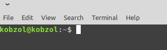
-
Pokud místo toho uvidíte terminál zakončený šipkou
>, tak jste ve Windows terminálu. To je špatně: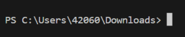
-
-
Nyní je ideální si vytvořit nějakou složku, do které budete dávat své zdrojové kódy. Můžete ji nazvat např.
upr. Spusťte tedy v terminálu příkazmkdir upr, který složku vytvoří. -
Přepněte se v terminálu do právě vytvořené složky pomocí příkazu
cd upr. -
Spusťte editor VS Code v právě aktivní složce (
upr) pomocí příkazucode .- Všimněte si tečky na konci příkazu!
-
Nyní můžete vytvořit zdrojový soubor s příponou
.c, napříkladmain.c. V liště vlevo nahoře ve VS Code klikněte naFile -> New Filea vytvořte soubor s názvemmain.cv současné složce (upr). -
Do souboru
main.cvložte nějaký C kód, např:#include <stdio.h> int main() { printf("Hello world\n"); return 0; } -
Otevřete terminál ve VS Code (v liště nahoře
View -> Terminalnebo zkratkaCtrl + J). -
Ověřte si, že jste ve složce
upr(například pomocí příkazpwd), a také že v této složce existuje soubormain.c(pomocí příkazuls). -
Přeložte tento soubor překladačem pomocí příkazu
gcc main.c -omainv terminálu. -
A finálně přeložený program spusťte pomocí příkazu
./mainv terminálu.
Operační systém
Jak už bylo zmíněno v úvodu, v UPR budeme psát a spouštět programy v operačním systém Linux. Je tak nutné, abyste si na svém počítači tento operační systém zprovoznili.
Proč Linux?
Linux je v současné době v oblasti IT téměř všude - používá ho většina webových serverů, cloudových služeb, mobilních zařízení nebo třeba i superpočítačů. Umožňuje nám ovládat počítač jednoduše pomocí textových příkazů v terminálu, díky čehož si můžeme zautomatizovat a ulehčit práci s počítačem, a zároveň můžeme trochu nahlédnout pod pokličku toho, jak počítač funguje.
Pro používání jazyka C nám Linux umožňuje velmi jednoduše překládat programy právě z terminálu,
a díky tomu, že je C na Linuxu "jako doma", tak nám to usnadní i další věci, např. používání knihoven
(kódu, který již pro nás naprogramoval někdo jiný). Ostatně i samotný Linux je napsán téměř výlučně
v jazyce C a samotný jazyk C vznikl před 50 lety pro tvorbu operačních systémů Unix, které
byly inspirací pro vznik Linuxu.
Co si mám nainstalovat?
- Pokud používáte operační systém Windows, tak si musíte Linux nainstalovat. Jako návod k tomu slouží samostatná stránka.
- Pokud používáte operační systém macOS, tak teoreticky Linux instalovat nemusíte, stačí si nastavit překladač GCC. Návod na nastavení systému macOS pro překlad C naleznete zde.
- Pokud již používáte operační systém Linux, nemusíte nic dalšího řešit a můžete přejít k nastavení editoru.
Pokud při instalaci Linuxu narazíte na problémy, které se vám nepodaří vyřešit, konzultujte je ihned s vaším cvičícím, který vám s instalací pomůže. Je nezbytné mít zprovozněný překladač GCC a Linux (nebo macOS), abyste mohli řešit úlohy do UPR.
Základy používání příkazů Linuxu/UNIXu1
Linux se v zásadě používá velmi podobně jako operační systém Windows, nicméně narozdíl od Windows, kde jste asi zvyklí ovládat počítač zejména myší, se v Linuxu běžně spousta úkonů provádí v tzv. terminálu, neboli příkazové řádce (command line), kde ovládáte počítač pomocí textových příkazů.
1Většina základních příkazů Linuxu funguje i na macOS, protože macOS je system, odvozený z UNIXu, stejně jako Linux.
Pro otevření terminálu na Linuxu zmáčkněte Ctrl + Alt + T nebo zmáčkněte klávesu Start
a vyhledejte program Terminal. Pokud používáte WSL, tak spusťte z nabídky Start program Ubuntu.
Po otevření terminálu byste měli vidět něco podobného:
Před znakem dolaru ($) vždy uvidíte adresář2, ve kterém se zrovna v terminálu nacházíte. Odpovídá
to zhruba tomu, jako když na Windows v prohlížeči souborů rozkliknete nějaký adresář a vidíte soubory,
které se v něm nachází. Pomocí příkazu cd (viz níže) se můžete mezi adresáři přepínat.
2Adresář (nebo taky složka) označuje pojmenovanou sadu souborů umístěnou na nějaké cestě (např. /home/franta/soubor.c nebo /mnt/c/users/franta/Desktop/soubor.c) na
disku. Adresáře mohou obsahovat jak soubory, tak další adresáře.
Nyní můžete do terminálu psát příkazy, pomocí kterých si můžete např. vypsat soubory v současném adresáři, vytvořit nový adresář, spustit nějaký program nebo se přesunout do jiného adresáře:
- Vypsání souborů v současném adresáři (
ls = list files)~$ ls soubor1 soubor2 slozka1 - Přepnutí se do jiného adresáře (
cd = change directory)~$ cd slozka1 ~/slozka1$ - Vytvoření adresáře (
mkdir = make directory)~$ mkdir moje-slozka ~$ ls moje-slozka - Spuštění programu
~$ ./program
Více informací o práci s terminálem a Linuxem se dozvíte na internetu. Zkuste se podívat např. na tento kurz. Zde poté naleznete tahák různých užitečných příkazů, které můžete v terminálu použít.
Instalace Linuxu
Pokud používáte operační systém Windows, tak pro použití Linuxu můžete využít jednu z následujících tří možností.
Linux není pouze jeden operační systém, ale pouze tzv. jádro (kernel) operačního systému, nad kterým vznikají tzv. distribuce, které se liší ve vizuální stránce, způsobu ovládání, správě softwarových balíčků atd. Jednou z nejpoužívanějších a také nejjednodušší distribucí Linuxu je Ubuntu. Při instalaci Linuxu vám tak doporučujeme použít právě tuto distribuci.
Windows Subsystem for Linux (doporučeno)
WSL je systém, který umožňuje nainstalovat Linux pod operačním systémem Windows tak, že se Linux
bude chovat jako program spouštěný pod Windows. Tato varianta vám umožní jednoduše sdílet data
mezi Windows a Linuxem, a také vám umožní si jednoduše pod Windows spustit Linuxový terminál, ze
kterého budete moct např. překládat své C programy.
Nejprve si musíte na Windows WSL nainstalovat. Návod pro instalaci naleznete zde.
Pokud máte aktualizovaný Windows 10/11, tak by mělo stačit spustit příkazovou řádku Windows jako administrátor1,
poté napsat wsl.exe --install a zmáčknout klávesu Enter. Jakmile se WSL nainstaluje, tak restartujte počítač.
Tento příkaz by vám měl nainstalovat distribuci Ubuntu do vašeho Windows počítače.
1Nabídka start -> Napište cmd -> Klikněte pravým tlačítkem na nalezený příkazový řádek -> Spustit jako administrátor
Poté můžete spustit terminál (bash) běžící pod Ubuntu spuštěním programu Ubuntu (např. z nabídky
Start). Tento terminál můžete používat pro práci se soubory nebo
překlad C programů.
Soubory z Windows jsou v příkazové řádce Ubuntu pod WSL dostupné na cestě
/mnt/c. Pokud byste se tak například chtěli v terminálu přesunout do složkyC:/Users/Katka/Desktop, tak v terminálu spusťte příkazcd /mnt/c/Users/Katka/Desktop.Naopak soubory z WSL jsou pod Windows dostupné na cestě
\\wsl$\Ubuntu\<cesta>. Když do adresního řádku prohlížeče souborů ve Windows napíšete\\wsl$, tak se můžete k souborům proklikat.
Jakmile budete ve WSL bash terminálu, tak si nejprve nainstalujte programy nutné pro práci s C
(zejména překladač) pomocí následujích dvou příkazů:
$ sudo apt update
$ sudo apt install build-essential gdb
Při pokusu o instalaci vás program vyzve, abyste instalaci potvrdili. Udělejte to zmáčknutím klávesy
ya potvrďte klávesou Enter.
Nativní instalace Linuxu
Nejspolehlivější variantou použití Linuxu je nainstalovat si ho přímo "na železo", tj. bez
virtualizace. Můžete jej například nastavit v režimu
dual boot, kdy se při
startu počítače můžete rozhodnout, zdali se nabootuje do Windows (či jiného operačního systému)
nebo do Linuxu. Pokud jste s Linuxem nikdy nepracovali, tak doporučujeme použít Linuxovou
distribuci Ubuntu ve verzi 24.04.
macOS
Během výuky UPR používáme překladač GCC. Jelikož ve výchozím nastavení není v macOS zahrnutý, musíme ho vlastnoručně nainstalovat.
Nejprve musíme nainstalovat nástroje příkazového řádku, tzv. Xcode Command Line Tools:
Otevřete si Terminál1 pomocí Launchpadu nebo Spotlightu (⌘ + mezerník) a zadejte následující příkaz:
1Více o práci s terminálem se dozvíte v sekci Operační systém
$ xcode-select --install
Při pokusu o instalaci vás program vyzve, abyste instalaci potvrdili. Udělejte to stisknutím klávesy
ya potvrďte klávesou Enter.
Instalace Homebrew
Abychom zjednodušili postup, nainstalujeme správce balíčků, konkrétně Homebrew, který se vám jistě ještě bude hodit.
Pro instalaci vložte do okna terminálu:
$ /bin/bash -c "$(curl -fsSL https://raw.githubusercontent.com/Homebrew/install/HEAD/install.sh)"
Jestliže jste neměli předtím nainstalované Xcode Command Line Tools, Homebrew je také nainstaluje.
⚠️ Po plné instalaci Homebrew se zobrazí odstavec:
Next steps. V něm budou uvedeny příkazy, které musíte také spustit, aby vám příkazbrewfungoval.
V případě, že máte všechno nainstalováno správně, po zadání příkazu brew v terminálu uvidíte následující:
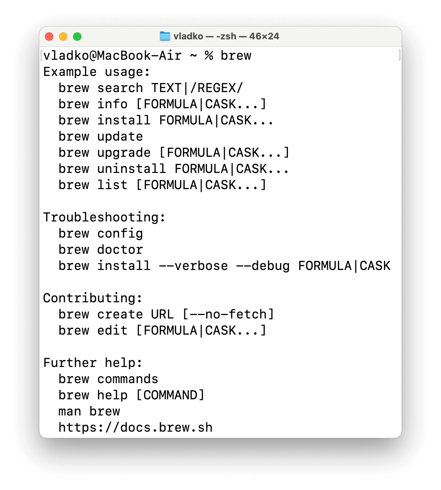
Instalace GCC
Teď můžeme jednoduše nainstalovat GCC pomocí:
$ brew install gcc
Spouštění GCC
Po instalaci nástrojů příkazového řádku můžeme zkusit použít příkaz gcc, ale ve skutečnosti se spustí jiný, zabudovaný do macOS překladač Clang.
Abychom mohli spouštět příkazy GCC, musíme použít: gcc-<verze>.
Zjistit, jakou verzi GCC máme nainstalovanou, můžeme pomocí:
$ ls -l /opt/homebrew/bin/gcc-*
Po spuštění uvidíte něco jako:
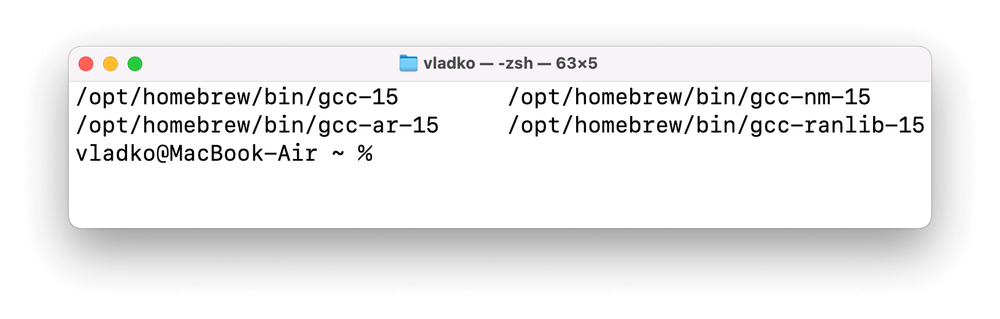
Lze vidět, že výsledek obsahuje cesty do složek překladače, ve kterých se často opakuje gcc-15, tzn. verze GCC je 15.
Takže, pro používání GCC budeme vždy psát gcc-15 .... Pokud máme jinou verzi, určitě budeme v příkazu psát jiné číslo.
Ověříme to a porovnáme s příkazem gcc:
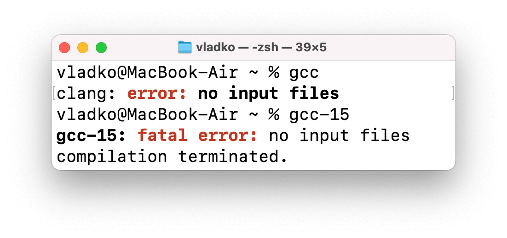
Příkaz s určením verze opravdu volá GCC.
Teď můžeme dál nastavovat prostředí. Zbytek postupu bude téměř úplně stejný jako na Linuxu, až na pár klávesových zkratek a instalačních detailů.
Vývojové prostředí
Abychom mohli přeložit a spustit nějaký program, musíme ho obvykle nejprve zapsat do
jednoho nebo více souborů ve formě tzv. zdrojového kódu (source code). K usnadnění tohoto procesu
existují textové editory a vývojová prostředí jako například Microsoft Visual Studio, Microsoft Visual Studio Code, Qt Creator, JetBrains CLion,
Code::Blocks, Vim, GNU Emacs apod. Tyto programy usnadňují psaní kódu pomocí zvýrazňování
syntaxe, automatizace překladu, spouštění a testování programů a také správy projektů.
Na cvičeních UPR budeme používat editor Visual Studio Code, který je
dostupný zdarma. Zde je stručný návod k jeho použití. Při
programování se hodí detailně znát a efektivně využívat editor, který používáte, ale pro začátek
nám budou stačit naprosté základy.
Jako alternativu lze použít CLion, plnohodnotné IDE (Integrated Development Environment) s pokročilými funkcemi, které usnadňují vývoj v C a C++.
Nabízí nativní integraci s build systémem CMake.
Instalace VS Code
-
Pokud používáte virtualizovaný nebo nativní Linux (Ubuntu), stáhněte si odsud
.debsoubor s balíčkem VS Code a nainstalujte jej (poklikáním myši na soubor nebo spuštěním příkazu$ sudo apt install ./<nazev-souboru>.deb -
Pokud používáte
WSL, tak by už měl být VS Code předinstalovaný1. Spustíte ho tak, že vbashterminálu spustíte tento příkaz:1Pokud by tomu tak nebylo, návod na instalaci VS Code na Linuxu naleznete zde.
$ code .Ten otevře VS Code v adresáři, ve kterém se zrovna v terminálu budete nacházet. Ve VS Code si poté také nainstalujte dodatečné rozšíření
Remote Development(viz návod, jak instalovat rozšíření níže).Podrobný návod, jak zprovoznit VS Code v kombinaci s WSL, naleznete zde nebo zde.
Instalace rozšíření (pomocí terminálu)
VS Code podporuje programovací jazyky pomocí rozšíření, po první instalaci VS Code tak nejprve musíme nainstalovat potřebná rozšíření pro jazyk C. V terminálu spusťte tyto příkazy:
$ code --install-extension ms-vscode.cpptools
Doporučujeme si také nainstalovat následující rozšíření pro vizualizaci paměti programů, které jsme pro vás nachystali:
$ code --install-extension jakub-beranek.memviz
Instalace rozšíření (pomocí uživatelského rozhraní)
- Spusťte Visual Studio Code
- Otevřete obrazovku rozšíření (
Ctrl+Shift+Xnebo spusťte akciInstall Extensions) - Vyhledejte rozšíření (
C/C++) a nainstalujte jej - Můžete také vyhledat
memviza nainstalovat rozšíření Memory visualizer pro vizualizaci paměti.
Časté problémy
Tato sekce obsahuje vybrané problémy, se kterými se studenti často setkávají při práci s Visual Studio Code (obzvláště na WSL).
Chybějící hlavičkové soubory
Pokud spustíte VS Code, otevřete v něm nějaký program s C kódem a budete mít červeně podtržený např. takovýto řádek:
#include <stdio.h>
je to pravděpodobně způsobeno jedním ze dvou následujících důvodů:
-
Spouštíte VS Code z Windows a ne z Ubuntu WSL terminálu. Spouštějte VS Code vždy přímo z Ubuntu terminálu, aby mělo správný přístup k systémovým souborům jazyka C.
Podle ikony dvou šipek v levém dolním rohu okna VS Code můžete rozpoznat, zdali jste připojení ve VS Code k WSL, nebo ne.
-
Pokud je u ikony napsáno WSL, tak je VS Code správně připojen k WSL terminálu:
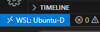
-
Pokud tam jsou pouze dvě šipky a nic více, tak jste VS Code spustili ve Windows místo ve WSL, to je špatně:
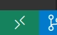
Klikněte na ikonu dvou šipek a připojte se k WSL.
- Nemáte nainstalovaný překladač (GCC). Spusťte Ubuntu terminál a nainstalujte jej, viz překlad programu.
Obecně řečeno, to, že se vám ve VS Code ukazuje nějaký problém s kódem, ještě neznamená, že tento problém v kódu opravdu je. Důležité je, co řekne překladač při překladu programu, VS Code je občas zmatené anebo není správně nastavené. Samozřejmě je ale ideální si ho správně nastavit, ať vás to neplete.
Změny ve zdrojovém kódu se nepromítají v přeloženém programu
Pokud v otevřeném zdrojovém souboru provedete nějaké změny, tak se neuloží na disk, dokud soubor neuložíte (pomocí
klávesové zkratky Ctrl + S). Občas se studentům stává, že provedou změnu, poté se snaží přeložit program, ale jejich
změny se neprojeví a studenti nerozumí, proč tomu tak je. Často je to právě proto, že soubor není uložen!
Neuložený soubor poznáte tak, že v záložce s názvem souboru je bílé kolečko:
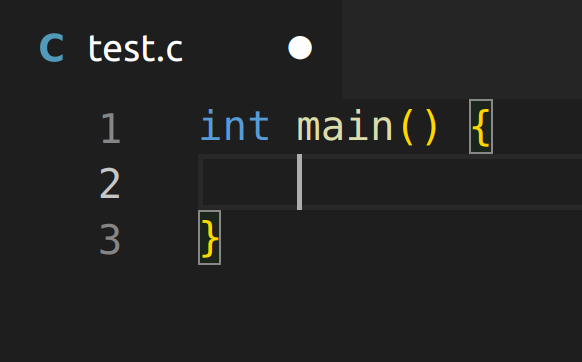
Vždy tak po provedení změn ukládejte soubor pomocí Ctrl + S, případně si můžete v nastavení (Settings) zapnout volbu
Auto Save.
Ukázka nastavení projektu
Jako vzorový projekt můžete použít tuto
šablonu. Pro otevření adresáře ve VS Code klikněte na Soubor (File) -> Otevřít adresář (Open Folder)
a vyberte nějaký adresář, ve kterém chcete programovat.
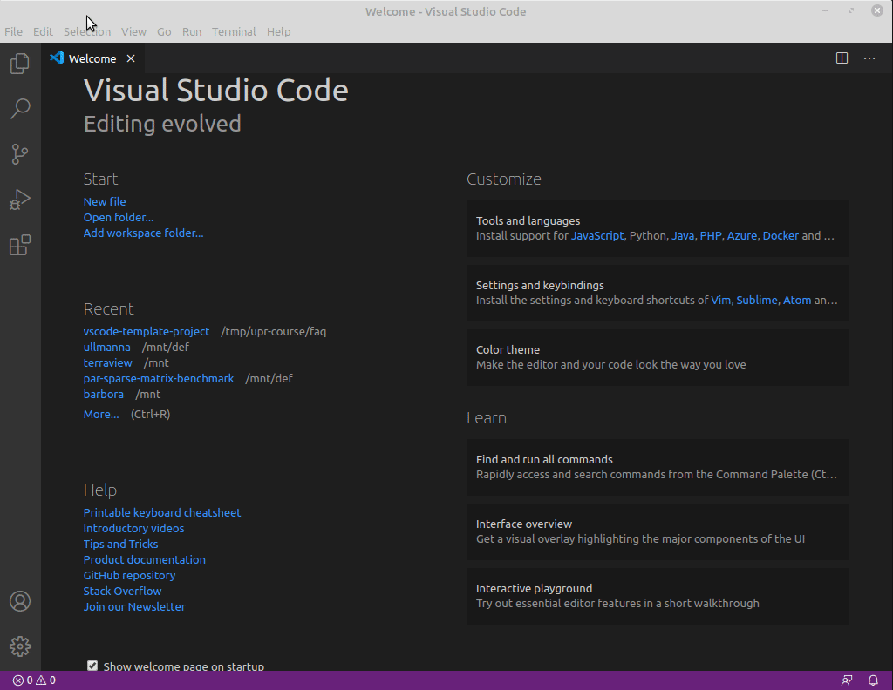
Pokročilé možnosti nastavení projektu
Pokud byste si chtěli nastavit VS Code tak, aby překládal nebo spouštěl váš program s jiným, než základním
nastavením, můžete k tomu využít konfiguraci pomocí souborů launch.json, který definuje, jak bude VS Code
váš program spouštět, případně tasks.json, pomocí kterého můžeme nastavit, jak se bude program překládat.
launch.json je možno vytvořit po kliknutí na záložku Run and Debug (Ctrl+Shift+D) a poté na tlačítko create a launch.json file (tlačítko se zobrazí, pokud máte otevřený soubor s příponou .c ve VS Code). Soubor se vytvoří v současně otevřeném adresáři, ve složce .vscode (můžete ho případně i vytvořit manuálně).
Do vygenerovaného souboru můžete zkopírovat tento obsah:
{
"version": "0.2.0",
"configurations": [
{
"name": "C program (gdb) Launch",
"type": "cppdbg",
"request": "launch",
"program": "${workspaceFolder}/main",
"args": [],
"cwd": "${workspaceFolder}",
"MIMode": "gdb",
"miDebuggerPath": "/usr/bin/gdb",
"preLaunchTask": "C compile"
}
]
}
Atributy této konfigurace poté můžete upravovat. Užitečné pro vás budou zejména tyto atributy:
- program - cesta ke spustitelnému (přeloženému) souboru, který bude konfigurace spouštět
- cwd - pracovní adresář, ve kterém se program spustí
- args - argumenty příkazového řádku předané spouštěnému programu
Pokud byste si chtěli při ladění přesměrovat obsah souboru na standardní vstup programu,
tak přidejte na konec args šipku doleva a cestu k souboru, který chcete přesměrovat na vstup:
"args": [
"<",
"${workspaceFolder}/stdin_file.stdin"
]
Dále budete muset nastavit soubor tasks.json, pro automatický překlad programu
(vytvořte jej opět ve .vscode složce projektu). Pokud tento soubor bude chybět, při pokusu o ladění programu
dostanete chybovou hlášku podobnou této:
launch: program
<cesta>/maindoes not exist
Do tasks.json si můžete zkopírovat tento obsah:
{
"version": "2.0.0",
"tasks": [
{
"type": "cppbuild",
"label": "C compile",
"command": "gcc",
"args": [
"${workspaceFolder}/main.c",
"-g",
"-o",
"${workspaceFolder}/main"
]
}
]
}
Zde jsou důležité hlavně dva atributy:
- label - název tasku pro spuštění. Tento název musí odpovídat atributu
preLaunchTaskv souborulaunch.json. - args - parametry překladače použité při překladu.
- Prvním argumentem by měla být cesta k překládanému C zdrojovému souboru.
- Dále by v
argsměla být cesta k výslednému přeloženého souboru, předaná za parametrem-o. Tato cesta musí odpovídat atributuprogramv souborulaunch.json. - Dále zde můžete předávat další parametry překladače, např. zapnout Address sanitizer
(
-fsanitize=address) nebo přilinkovat nějaké knihovny (např.-lm).
Více informací o možnostech nastavení těchto dvou souborů můžete naleznout na těchto odkazech:
Automatické formátování kódu
Pokud s programováním začínáte, tak budete ze začátku nejspíše trochu bojovat s tím, jak zformátovat zdrojový kód,
aby byl přehledný a dalo se v něm vyznat. Tuto činnost však můžete nechat plně na editoru či vývojovém prostředí.
Ve Visual Studio Code můžete použít klávesovou zkratku Ctrl + Shift + I, která vám právě otevřený soubor s kódem
automaticky zformátuje.
Můžete si dokonce editor nastavit tak, aby po každém uložení souboru kód automaticky zformátoval. Klikněte na
File -> Preferences -> Settings, poté do vyhledávacího okénka napište Format On Save a zaškrtněte tuto možnost:
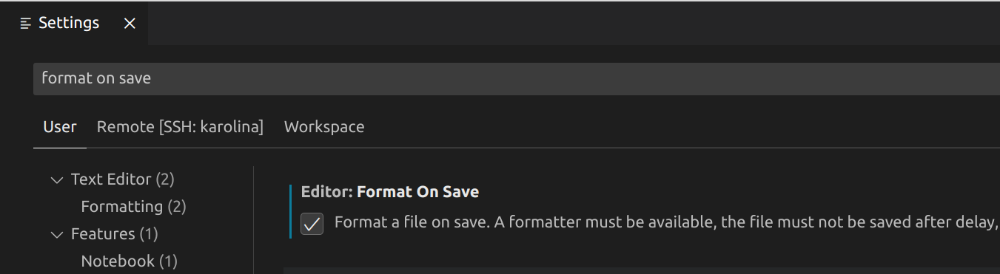
Užitečné zkratky
- Spustit program -
F5 - Naformátovat kód -
Ctrl + Shift + I - Uložit provedené změny v souboru -
Ctrl + S - Zobrazit vyhledávač akcí -
Ctrl + Shift + P
Instalace CLionu
Nejlepší způsob instalace je použití aplikace Toolbox, která vám umožní spravovat všechna vaše IDE od JetBrains. Pokud narazíte na problém, kompletní návod naleznete zde.
První projekt
Po spuštění CLionu klikněte na New Project a vyberte C Executable. Nastavte umístění projektu a můžete také zvolit standard jazyka C, který lze později změnit i v CMaku. Program spustíte pomocí
klávesové zkratky Shift + F10 nebo kliknutím na tlačítko Run.
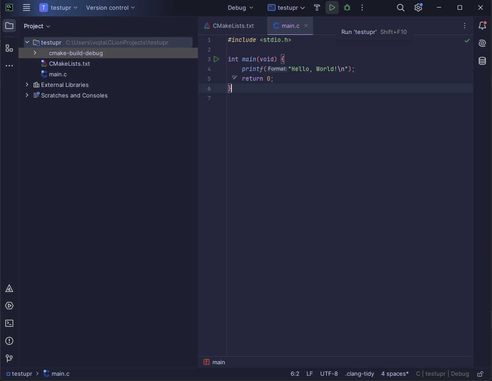
Výběr kompilátoru
Pokud chcete používat GCC kompilátor z WSL, stačí jej přepnout v nastavení.
- Stisknutím klávesové zkratky
CTRL + Shift + Aotevřete vyhledávací okno. - Napište Toolchains a stiskněte
Enter. - Pokud máte správně nainstalované WSL, mělo by se objevit v nabídce. Klikněte na něj a posuňte jej nahoru pomocí
Alt + Up. - Potvrďte kliknutím na Apply a následně OK.
⚠️ Pokud vám program nejde spustit po přepnutí na WSL, může to být způsobeno chybějícími balíčky nebo starší verzí CMaku.
Nainstalujte potřebné balíčky:
$ sudo apt-get install build-essential cmake gdb
V souboru CMakeLists.txt nastavíme starší verzi CMaku na verzi 3.21
cmake_minimum_required(VERSION 3.21)
Pokaždé, když v CMaku uděláme změnu je potřeba soubor znovu načíst. Buď si zapnete auto-reload pomocí příkazu
Auto-Reload CMake Projectnebo kliknete na soubor pravým a dáteReload CMake Project
Pokud chcete pochopit fungování CMaku, tak můžete zde.
Jak naimportovat SDL pro následující projekt můžete najít zde.
Licence Education Pack na jíne produkty JetBrains
JetBrains má spoustu jiných produktů na vývoj, ladění, práci s databázemi atd. Část z nich potřebuje pro používání licenci, o kterou můžete jako studenti požádat zdarma zde.
-
Na stránce jsou čtyři způsoby, jak licenci získat. Nejjednodušší je použít váš školní e-mail. Email je v následujícím tvaru:
<login>@vsb.cz, např.UPR0123@vsb.cz -
Po vyplnění dotazníku vám přijde potvrzovací e-mail o schválení Educational Packu. Otevřete odkaz v e-mailu a potvrďte podmínky. Poté si vytvořte účet s vaším školním e-mailem zde.
-
Stav vaší licence můžete zkontrolovat zde. Zde také uvidíte všechny produkty, na které se licence vztahuje.
-
Nakonec se stačí v Toolboxu přihlásit pod účtem, který jste si vytvořili.
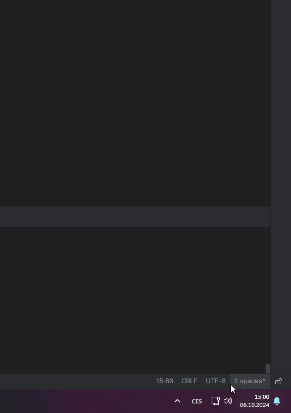
Překlad programu
Pro překlad programů, které budeme psát v jazyce C, do spustitelného (executable) souboru budeme používat program, kterému se říká překladač. Překladačů jazyka C existuje celá řada, my budeme využívat asi nejpoužívanější překladač pro Linuxové systémy s názvem GCC (GNU Compiler Collection).
Překladač GCC, spolu s dalšími potřebnými nástroji, můžete na Ubuntu v terminálu nainstalovat pomocí následujících dvou příkazů:
$ sudo apt update
$ sudo apt install build-essential gdb
Při pokusu o instalaci vás program vyzve, abyste instalaci potvrdili. Udělejte to zmáčknutím klávesy
ya potvrďte klávesou Enter.
Překlad prvního programu
Ještě než si ukážeme, jak vlastně programovací jazyk C funguje, tak zkusíme přeložit velmi jednoduchý
C program do spustitelného souboru a spustit jej.
Vytvořte soubor s názvem main.c a nakopírujte1 do něj následující C kód (později si vysvětlíme,
jak tento kód funguje):
1Kód z buněk můžete kopírovat pomocí tlačítka v pravém horním rohu buňky s kódem.
#include <stdio.h>
int main() {
printf("Hello world!\n");
return 0;
}
Tento program se nazývá
Hello world, jelikož tento text vypíše na obrazovku. Podobný jednoduchý program je zpravidla tím prvním, co programátor vytvoří, když se učí nějaký programovací jazyk.
Nyní otevřete terminál (Ctrl + Alt + T v Ubuntu), přesuňte se do složky s tímto souborem pomocí
příkazu cd, spusťte program gcc a předejte mu cestu k tomuto souboru:
$ gcc main.c -o program
Tímto příkazem řeknete "Gécécéčku", aby přeložil zdrojový soubor main.c a uložil výsledný spustitelný
soubor do souboru program2. Pokud byste přepínač -o <nazev souboru> nepoužili, tak se vytvoří spustitelný
soubor s názvem a.out.
2Na Windowsu spustitelné soubory mají obvykle příponu .exe, na Linuxu to však není běžnou praxí a spustitelné soubory typicky žádnou příponu nemají.
Pokud chcete nyní program spustit, stačí v terminálu zadat cestu k danému spustitelnému souboru.
$ ./program
Hello world!
Program by měl na výstup vytisknout text Hello world!.
Tipy pro práci s příkazovou řádkou
-
Při psaní programu budete chtít často po úpravě zdrojového kódu opětovně provést překlad a poté program spustit. Abyste to provedli v jednom terminálovém příkazu, můžete tyto dva příkazy spojit pomocí
&&:$ gcc main.c -o main && ./mainPokud překlad proběhne úspěšně, tak operátor
&&zajistí spuštění následujícího příkazu. -
Pokud nechcete příkazy v terminálu psát neustále dokola, šipkou nahoru (↑) můžete vyvolat nedávno spuštěné příkazy v terminálu.
-
Můžete používat i terminál vestavený přímo ve
Visual Studio Code(View -> Terminal).
📹 Pro lepší představu o překladu programů zde máte k dispozici ještě krátké shrnující video:
Jak překlad probíhá?
Překlad programu bude detailně vysvětlen později v sekci o linkeru. Prozatím nám bude stačit tato zkrácená verze:
Překlad programů probíhá ve dvou hlavních fázích: překlad (translation) a linkování (linking). Dohromady se oboum těmto krokům také říká kompilace (compilation).
Při překladu překladač vezme každý C zdrojový soubor, který mu předložíme, a samostatně jej přeloží do tzv. objektového souboru (object file). Takovýto soubor obsahuje již přeložené instrukce pro procesor, ale není sám o sobě spustitelný, tj. nejedná se o program, ale pouze o přeložený binární kód.
Jakmile jsou všechny zdrojové soubory přeloženy do objektových souborů, tak přichází na řadu další program, tzv. linker, který tyto objektové soubory spojí dohromady, propojí je dle potřeby, případně k nim připojí externí knihovny a na konci vytvoří finální spustitelný soubor, který lze poté spustit.
Když použijete program gcc způsobem, jaký jsme si ukázali výše, tak se na pozadí spustí překladač
a poté i linker a oba dva tyto kroky se tak provedou automaticky. Je ale možné provést je i separátně:
$ gcc -c main.c # vytvoří objektový soubor main.o
$ gcc main.o -o main # slinkování souboru main.o
Ladění programů
Tato sekce slouží k řešení často se vyskytujících problémů při programování v C. Pokud váš program padá při běhu nebo se nechová tak, jak má, tak v něm nejspíše máte nějakou chybu (tzv. bug). Proces hledání chyby, která způsobuje pád nebo špatné chování programu se pak nazývá ladění (debugging).
Zejména se podívejte na sekci o krokování!
Chyby při překladu programu
Pokud váš program nelze přeložit a překladač vypisuje nějakou chybovou hlášku, tak máte v zápisu programu nějakou chybu, obvykle v syntaxi, tedy zápisu kódu. Je dobré si danou chybovou hlášku pořádně přečíst, obvykle se odkazuje na relativně přesné místo, kde máte kód špatně, a někdy dokonce i nabízí řešení, jak problém vyřešit.
Při překladu můžete dostat například následující chybovou hlášku:
main.c: In function ‘main’:
main.c:2:2: error: ‘a’ undeclared (first use in this function)
2 | a = 0;
Tato konkrétní chyba byla způsobena tím, že byla použitá proměnná bez její předchozí deklarace. Pokud
chybě nerozumíte, zkuste ji nejprve vygooglit, ideálně pouze část, která není konkrétně závislá na
podobě vašeho projektu. Nemá cenu googlit main.c:2:2, protože tento text je závislý na tom, jak jste
si pojmenovali své soubory, ostatní programátoři nejspíše mají jiné názvy souborů. V případě této chyby
by tedy bylo lepší googlit text error: undeclared (first use in this function).
Může se stát, že překladač vypíše více chybových hlášek zároveň, i když chyba v programu je pouze jedna. Zkuste scrollovat výstupem hlášek nahoru, abyste zjistili, která chyba byla vypsána jako první, zbytek výpisu může být "planý poplach".
Pokud se vám nedaří chybu vygooglit, tak kontaktujte svého cvičícího.
Při překladu můžete použít dodatečné přepínače, při jejichž použití vydá překladač více varování o možných problémových místech ve vašem kódu:
$ gcc -Wall -Wextra -pedantic -Werror=uninitialized -Werror=vla -Werror=return-type ...
Podívejte se také do sekce Časté chyby, kde je seznam často se vyskytujících chyb.
Chyby při běhu programu
Pokud váš program tzv. "padá" při běhu, můžete zkusit následující způsoby ladění:
Address sanitizer
Tento nástroj modifikuje váš program tak, aby dokázal detekovat značné množství chyb při jeho běhu, a pokud nějakou chybu najde, tak váš program okamžitě ukončí a popíše, k jakému problému došlo.
$ gcc -g -fsanitize=address main.c -o program
Jakmile takto přeložený program spustíte a dojde k nějaké chybě, tak bude její popis vypsán na výstup.
Pokud se chyba opraví těsně po svém vzniku, je to mnohem jednodušší, než když se chyba projeví až později v úplně jiné části kódu. Doporučujeme tak vždy používat Address Sanitizer při vývoji programů v C. Ušetříte si tak spoustu času a námahy při ladění chyb.
Valgrind
Address sanitizer je velmi užitečný nástroj, ale nedokáže odhalit všechny problémové situace v programech napsaných v jazyce C. Dále existuje také nástroj Valgrind, který dokáže odhalit možných chyb více (např. čtení z nedefinované proměnné). Pokud se vás program chová "divně", a Address sanitizer v něm nenachází žádné chyby, můžete místo něj zkusit Valgrind s nástrojem Memcheck:
- Nejprve si nainstalujte Valgrind:
$ sudo apt update $ sudo apt install valgrind - A poté spusťte svůj přeložený program pod Valgrindem/Memcheckem:
$ valgrind --tool=memcheck --track-origins=yes --leak-check=full -s ./program
Valgrind a Address sanitizer nelze kombinovat, proto při použití Valgrindu nepoužívejte parametr překladače
-fsanitize=address. Stačí program přeložit pomocí gcc -g main.c -o program.
Logování
Jedním z nejjednodušších způsobů, jak se dozvědět, co se v programu děje, je jednoduše tisknout hodnoty zajímavých proměnných na výstup programu. Pokud přidáte takovýto výstup na různá místa v kódu, můžete pak podle výstupu zpětně rekonstruovat, co se při běhu programu dělo.
Krokování
Pro interaktivnější zkoumání chování programů je možné je tzv. krokovat. K tomu je potřeba nástroj, který umí program pozastavit při jeho běhu a zobrazit uživateli, co se v něm děje. Takovéto nástroje se nazývají debuggery. Při krokování se program zastaví na určitém místě (řádku) v kódu, a programátor pak může zkoumat hodnoty proměnných a spouštět program řádek po řádku.
Doporučujeme za začátku používat krokování neustále, abyste se naučili, jak se vlastně program provádí a lépe tak pochopili, co vykonávají jednotlivé příkazy, které v kódu píšete. Je to také mocný nástroj na hledání chyb v programech.
Pro vás je nejjednodušší použít krokování integrované ve VS Code:
- Klikněte na sloupeček vlevo od čísla řádku, na kterém chcete, aby se program zastavil. Objeví se tam červené kolečko (tzv. breakpoint).
- Spusťte program s laděním (
F5). Program by se na řádku s breakpointem měl zastavit. - Ve sloupci
Variablesv levé části VSCode můžete prozkoumat hodnoty proměnných. - Pomocí příkazu
Step Over(F10) program vykoná následující řádek a poté se opět zastaví. Pokud nechcete přeskakovat volání funkcí, použijteStep Into(F11).
Pokud si nainstalujete rozšíření Memory Visualizer, tak se vám při krokování zároveň bude zobrazovat vizualizace paměti běžícího programu, což se může hodit pro pochopení toho, jak se váš program chová:
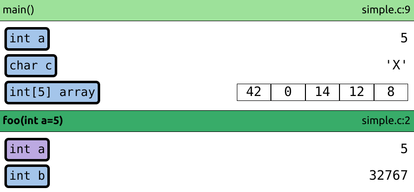
Pro správné fungování rozšíření Memory Visualizer je nutné mít debugger gdb ve verzi 12.1 (nebo novější).
Verzi gdb můžete zjistit pomocí následujícího příkazu:
$ gdb --version
VS Code používá pro ladění vašeho programu debugger
gdb. Pokud ho chcete použít manuálně, návod můžete najít například zde.
Použití AI
Jistě jste zaznamenali, že lze dnes technologie velkých jazykových modelů (LLM) a agentních systémů, jako je např. ChatGPT, Codex nebo Claude Code, využít pro spoustu úkonů spojených s kontrolou, analýzou a generováním textu i kódu, vyhledáváním informací, vysvětlováním konceptů apod. Tyto technologie mohou být skvělými pomocníky pro dodatečné vysvětlení programovacích konceptů nebo např. provádění tzv. "code review" či hledání chyb v kódu, který sami napíšete, a může vám tak usnadnit výuku programování.
Pokud byste chtěli využívat agenty a jazykové modely v UPR rozumným způsobem, stáhněte si do složky, ve které budete psát programy, soubor AGENTS.md, případně k němu navíc i CLAUDE.md, pokud používáte Claude Code.
Je ale i jeden další způsob, jak tyto modely používat, který je bohužel pro účely UPR (a ostatně i většiny ostatních programovacích předmětů na FEI) extrémně problematický. Můžete tyto modely použít k tomu, abyste si nechali vygenerovat kompletní řešení nějaké programovací úlohy. Můžeme vám rovnou říci, že nástroje typu Claude Code budou schopny velmi rychle vyřešit úplně všechny úlohy, které vám v tomto předmětu zadáme. A to způsobem, kdy ani nebudeme schopni spolehlivě rozpoznat, jestli daný kód psal student, nebo jazykový model, bez toho, abychom zaváděli určité drakonické metody sledování toho, jak programy vytváříte.
Chtěli bychom na vás apelovat, abyste jazykové modely nepoužívali pro generování kódu UPR úloh. Pokud si necháte řešení úloh vygenerovat, tak se tím absolutně nic nenaučíte. To je přitom smyslem studia na vysoké škole - naučit se, jak věci fungují na pozadí. Zastáváme názor, že programování se můžete opravdu naučit pouze tím, že budete programovat :) Tím, že budete zkoušet řešit čím dál tím složitější úlohy, budete se dostávat do situací, kdy nebudete vědět, jak daný problém vyřešit, a budete muset sami přijít na řešení.
Dnes je velmi těžké hádat, jak bude vypadat budoucnost programování, ale je jasné, že v něm AI/LLM bude hrát stěžejní roli. Pokud chcete rovnou od začátku "programovat" pouze psaním promptů, bez porozumění toho, co se děje na pozadí, tak vám v tom nic nebrání - ale nemá smysl kvůli tomu studovat vysokou školu, protože se vaše použití těchto modelů nebude nijak lišit od toho, jak jej budou používat ostatní lidi bez technického vzdělání. Zkuste si tedy prosím rozmyslet, jestli se chcete něco naučit, nebo pouze psát prompty. Pokud za sebe necháte kód úloh generovat pomocí AI, tak tento předmět pro vás nemá opravdu žádný smysl.
Na konci semestru proběhne tzv. "real-time test", kde budete muset naprogramovat netriviální úlohu v jazyce C. Na tomto testu budete programovat v kontrolovaném prostředí, kde budeme velmi striktně hlídat, abyste žádné jazykové modely nepoužívali, a nebudete mít ani přístup k internetu či mobilnímu telefonu. Pokud budete řešit domácí úlohy pomocí AI, a nenaučíte se tak programovat sami, tak tímto testem neprojdete.
Programování v C
V této kapitole naleznete popis základních konstrukcí jazyka C, které jsou základními stavebními kameny pro tvorbu programů. Ke každému tématu je k dispozici také sada úloh. Pokud úlohy zvládnete vypracovat, tak budete mít jistotu, že jste dané téma pochopili a můžete se posunout dále. Pokud nezvládnete úlohy splnit, tak můžete mít s navazujícími koncepty problém. Pokud nebudete stíhat, tak kontaktujte svého cvičícího.
Před přečtením této kapitoly si nejprve přečtěte předchozí kapitoly, zejména sekci o paměti.
Níže je přibližný seznam témat, které si během semestru ukážeme. Pořadí témat probíraných na cvičení a přednáškách se může od tohoto seznamu lišit, tento text je určen spíše jako "kuchařka", ve které se můžete k jednotlivým tématům vracet, abyste si je připomněli. Text je nicméně psaný tak, aby se dal zhruba číst v uvedeném pořadí bez toho, aby používal pojmy, které zatím nebyly vysvětleny.
Základní témata
- Syntaxe - jak vypadá syntaxe (způsob zápisu) jazyka C
- Příkazy a výrazy - jak provádět výpočty
- Proměnné - jak něco uložit a načíst z paměti
- Datové typy - jak interpretovat hodnoty v paměti
- Řízení toku - jak se rozhodovat a provádět akce opakovaně
- Funkce - jak opakovaně využít a parametrizovat opakující se kód
- Ukazatele - jak sdílet data v paměti a pracovat s adresami
- Pole - jak jednotně pracovat s velkým množstvím dat
- Text - jak v programech pracovat s textem
- Struktury - jak vytvořit vlastní datové typy
- Soubory - jak číst a zapisovat soubory
- Modularizace - jak rozdělit program do více zdrojových souborů
- Knihovny - jak využít existující kód od jiných programátorů
Všechny tyto koncepty jsou velmi univerzální a v tzv. imperativních programovacích jazycích jsou v podstatě všudypřítomné. Jakmile se je jednou naučíte, tak je budete moct využívat téměř v libovolném populárním programovacím jazyku (Java, C#, Kotlin, Python, PHP, JavaScript, Rust, C++ atd.).
Zkomprimovanou formu těchto témat můžete naleznout v taháku.
Upozornění ohledně využívání umělé inteligence
Jistě tušíte, že dnes je možné využívat nástroje umělé inteligence k tomu, aby vám pomáhaly s programováním, konkrétně aby za vás přímo generovaly kód. Tyto nástroje mohou být velmi užitečné ve chvíli, kdy už víte, co děláte, a pouze si chcete usnadnit práci. Pokud jste však na začátku, a teprve se programovat učíte, tak se z AI stane velmi zlý pán. Umí sice vyřešit jednodušší úlohy, ale když si kód pouze necháte vygenerovat za vás, nic se tím nenaučíte. A u složitějších úloh (a následujících předmětů, ve kterých budete už muset mít určitou znalost programování) už bude mít AI problém. Pokud za vás jednoduché úlohy vyřeší někdo jiný, tak nezískáte znalosti potřebné k vyřešení složitějších úloh. Nebudete si ani umět ověřit, jestli je vygenerovaný kód správný, a případně ho upravit nebo opravit. Bez této znalosti se ve světě programování neobejdete. I když je to zpočátku náročné, toto se musíte naučit jedině neustálým zkoušením, experimentováním a programováním.
Pokud odevzdáte úlohy napsané pomocí AI, a nebudete je umět vysvětlit, upravit či napsat vlastním způsobem, budeme to vnímat jako plagiarismus a podvádění, a reagovat na to odpovídající srážkou bodů.
Proto vám silně doporučujeme V PŘEDMĚTU UPR NEPOUŽÍVAT UMĚLOU INTELIGENCI. Radši potrénujte svou vlastní :)
Navazující aplikovaná témata
- TGA - jak vytvořit obrázek
- GIF - jak vytvořit animaci
- SDL - jak vytvořit interaktivní grafickou aplikaci či hru
- Chipmunk - jak simulovat fyzikální procesy
Struktura textu
V textu se občas budou objevovat ikonky označující různé sekce či důležité pojmy. Zde je jejich vysvětlení:
- 🏋: Sekce označené jako Cvičení 🏋 obsahují zadání krátkých úloh pro procvičení vysvětlované látky. Další úlohy k procvičení naleznete také v kapitole Úlohy.
- 🤔: Sekce označené jako Kvízy 🤔 obsahují ukázky C programů, ve kterých dochází k různým "zapeklitým situacím". Vaší úlohou je zamyslet se nad tím, jak takovýto program bude fungovat, a např. si tipnout, jaký výstup vypíše, či zda obsahuje tzv. nedefinované chování.
- 🤓: Kapitoly označené touto ikonou slouží jako doplňující učivo. To není nezbytně nutné zcela pochopit, abyste se mohli v textu posunout dále. Pokud tedy nebudete stíhat nebo toho na vás bude moc, můžete tyto sekce prozatím přeskočit, nicméně později byste se k nim měli vrátit.
- 💣: Označuje situace, při kterých dochází k nedefinovanému chování. Tyto situace prostudujte obzvláště pečlivě!
- 📹: Označuje videozáznam s doplňujícím vysvětlením učiva.
Pouze si o programování číst nestačí k tomu, abyste se naučili programovat! Proto si co nejvíce cvičení, kvízů a úloh vypracujte a naprogramujte, jedině tak se v programování zlepšíte.
Základy syntaxe
C je (programovací) jazyk a jako každý jazyk má svá pravidla, která je nutno dodržovat.
Například v češtině musíme dodržovat určitá pravidla a zvyklosti, abychom byli schopni výsledný
text pochopit. Věty jsme, M y máma, táta a nebo .o dku d! ty z, jsi nedávají smysl,
protože obsahují interpunkční znaménka na špatných místech, větné členy jsou ve špatném pořadí
a některá slova obsahují mezery na místech, kam nepatří. Stejně tak v jazyce C můžete velmi jednoduše
napsat program, kterému překladač nebude rozumět a překlad poté skončí se
syntaktickou chybou (syntax error). Na syntax C si musíte postupně zvyknout, poté už podobné chyby
budete schopni snadno vyřešit.
Zde je asi nejkratší možný program v jazyce C:
int main() {
return 0;
}
Tento program nic nedělá, pouze se zapne a poté vypne. V programu je pouze funkce
s názvem main. Funkce si popíšeme později, prozatím budeme psát kód vždy uvnitř funkce main,
tj. mezi složené závorky { }, na řádky před return 0;. Jednotlivé prvky programu si
postupně vysvětlíme v následujících sekcích, prozatím si však všimněte, že bílé znaky (whitespace)1
jsou obvykle překladačem ignorovány. Například
1Bílé znaky jsou (neviditelné) znaky, které reprezentují mezery v textu, tj. odřádkování, mezerník, tabulátor atd.
int
main() {
return 0;
}
reprezentuje úplně stejný program. Nicméně asi sami uznáte, že pokud bychom s bílými znaky nakládali takto nerozvážně, tak by zdrojový kód byl pro lidi špatně čitelný. Ideální je nastavit si automatické formátování přímo v editoru kódu, abyste nad formátováním vůbec nemuseli přemýšlet.
Bílé znaky nicméně nejsou ignorovány úplně na všech místech. Později se dozvíme, že například v řetězcích
jsou bílé znaky brány jako součást textu. Nemůžeme také rozdělovat mezerami názvy (např. in t nebo
ma in) v programu výše by způsobily chybu při překladu).
Komentáře
Abychom mohli v následujících sekcích popisovat kusy kódu, ukážeme si teď komentáře. Jedná se o text ve zdrojovém kódu, který je určen pro programátory, a ne pro překladač, který je zcela ignoruje. Bez komentářů bychom nemohli do zdrojového kódu dodávat poznámky, protože překladač by jinak měl snahu je interpretovat jako C kód. Komentáře v kódu obvykle poznáte snadno, protože je váš editor bude vykreslovat jinou barvou než zbytek kódu.
V C existují dva typy komentářů:
- Řádkové komentáře - pokud do kódu napíšete
//, tak vše za těmito lomítky až do konce řádku se bude brát jako komentář.// komentář 1 int main() { // komentář 2 return 0; // komentář 3 } - Blokové komenáře - pokud do kódu napíšete
/*, tak bude jako komentář označen všechen následující text, dokud nedojde k ukončení komentáře pomocí*/.int main() { /* zde je komentář zde taky a tady taky */ return 0; }
Ze začátku je asi jednodušší používat řádkové komentáře, ve VS Code můžete použít klávesovou zkratku
Ctrl + / pro zakomentování/odkomentování řádku kódu. Pokud vám přijde nějaký kus kódu komplikovaný,
tak si k němu zkuste dopsat komentář, který vysvětlí, proč byl kód napsán právě takto (případně vyloženě popište, co kód dělá).
Porozumíte tak kódu snadněji, až se k němu např. za měsíc vrátíte.
Klíčová slova
Klíčová slova (keywords) jsou vestavěné názvy, kterým překladač přiřazuje speciální
význam. V textovém editoru je typicky poznáte tak, že budou zabarvená jinou barvou než názvy
vytvořené programátorem. Například v tomto kódu jsou int a return klíčová slova:
int main() {
return 0;
}
Během semestru se postupně naučíte, k čemu se jednotlivá klíčová slova používají. Jejich kompletní seznam můžete najít například zde.
Speciální znaky
Při programování (jak už v C, tak i v jiných jazycích) budete používat spousty symbolů, které běžně
asi často nevyužíváte (například [, ], {, }, <, >, =, %, #, &, *, ;, \,
", '). Obzvláště pokud pro programování budete používat českou klávesnici, je dobré si ze začátku
najít nějaký tahák (např. tento),
abyste nemuseli pokaždé zdlouhavě vzpomínat, na které klávese se daný znak nachází.
Formátování kódu
Už víme, že překladač ignoruje bílé znaky a celkové formátování kódu. Nicméně programátorům obvykle velmi záleží na tom, jaké má kód odsazení, zarovnání, závorkování atd. Existuje mnoho stylů, pomocí kterých můžete kód formátovat. Například programátoři se dokážou pohádat o tom, zda složené závorky na začátku bloku psát na stejném:
if (...) {
}
while (...) {
}
nebo novém řádku:
if (...)
{
}
while (...)
{
}
Jaký styl formátování použijete je na vás, nicméně obecně platným pravidlem je, že byste se měli držet ve svých programech jednotného stylu a nemíchat více stylů dohromady.
Pokud budete využívat automatické formátování ve vašem editoru, tak toto nemusíte vůbec řešit, protože editor bude kód formátovat automaticky za vás.
Cvičení 🏋
- Vytvořte si ve VS Code soubor pojmenovaný např.
main.c(File -> New File…) a nakopírujte nebo napište do něj "prázdný" C program ukázaný výše. Zkuste program přeložit a spustit. - Zkuste do kódu přidat komentáře nebo bílé znaky (např. prázdné řádky nebo mezery). Otestujte, že překladač tyto věci při překladu ignoruje.
- Zkuste v programu záměrně vložit mezeru např. do slova
mainneboint. Podívejte se, jakou chybovou hlášku vám ukáže překladač.
Vykonávání programů
Jak už víme, programy jsou sekvence příkazů pro počítač, který je provádí
instrukci po instrukci (resp. řádek po řádku). Jakmile počítač vykoná jeden řádek vašeho programu, tak skočí
na řádek níže, dokud nedojde na konec programu. Aby počítač věděl, kterou instrukci má provést
jako první, tak mu musíme říct, kde má začít. K tomu přesně slouží funkce (pojmenovaný
blok kódu) se speciálním názvem main:
int main() {
// ZDE
return 0;
}
Výše zmíněný program se po překladu a spuštění začne vykonávat na prvním řádku
funkce main, a jakmile provede všechny řádky, tak program skončí. Tento program je
v podstatě prázdný, takže se pouze zapne a vypne. Prozatím budeme veškerý kód psát dovnitř funkce
main, mezi složené závorky ({, }) a před řádek return 0; (tedy na místo komentáře ZDE).
Později si vysvětlíme, jak tato funkce funguje, prozatím to berte tak,
že v programu vždy musí funkce main být, aby počítač věděl, odkud začít vykonávání kódu.
Příkazy
Programy v C se skládají z příkazů (statements). Příkaz říká počítači, co má provést, na mnohem vyšší úrovni než instrukce - jeden C příkaz může být přeložen překladačem na desítky instrukcí pro procesor. Existuje mnoho různých typů příkazů, které naleznete v následujících sekcích. Většina příkazů nějakým způsobem pracuje s výrazy, začneme tedy jejich popisem.
Výrazy
Jak už vyplývá z jeho názvu, hlavní funkcí počítače je něco počítat. Jedním ze
základních konstrukcí jazyka C (i jiných programovacích jazyků) tak je možnost vypočítat různé hodnoty.
Něco, co se dá vypočítat (tak, aby výsledkem byla nějaká hodnota), se nazývá výraz (expression).
Příkladem asi nejjednoduššího výrazu je číslo, např. 5. Takovýto výraz již není nutné dále vyhodnocovat,
jeho hodnota je prostě 5. Pokud v programu použijete přímo hodnotu nějakého čísla (popř. něčeho
jiného, jak uvidíme později), tak se takový výraz označuje jako literál (literal).
V C můžeme s výrazy provádět různé operace pomocí operátorů. Můžeme například použít operátor +
s dvěma výrazy, čímž vznikne složitější výraz: 5 + 5, který se v programu vyhodnotí na hodnotu 10.
O operátorech si více povíme v kapitole o datových typech.
Výpis výrazů
Abyste si ze začátku mohli jednoduše zobrazit hodnoty výrazů, tak si ukážeme kód, pomocí kterého můžete vypsat text na výstup programu (do terminálu). K výpisu textu můžete použít příkaz
printf("<text>");
Text, který vložíte mezi uvozovky (") se vypíše na výstup programu2:
2Tento kód můžete modifikovat i spustit přímo v prohlížeči. Stačí kliknout na ikonu
vpravo nahoře nebo stisknout Ctrl+Enter.
#include <stdio.h>
int main() {
printf("Hello world!\n");
return 0;
}
Abyste printf mohli použít, musíte na začátek programu vložit řádek #include <stdio.h>.
Tento řádek i printf zatím berte jako "black box", později si
vysvětlíme, jak přesně fungují.
V zadaném textu můžete používat určité speciální znaky. Například sekvence znaků \n způsobí, že
na výstupu dojde k odřádkování (newline), po kterém se text začne vypisovat na dalším řádku:
#include <stdio.h>
int main() {
printf("Prvni radek\nDruhy radek");
return 0;
}
Abyste mohli tisknout hodnoty výrazů, můžete použít zástupné znaky (placeholders). Pokud chcete
vypsat číselnou hodnotu na výstup programu, stačí v textu použít zástupný znak %d, za uvozovky
přidat čárku a doplnit výraz na místo určené komentářem:
#include <stdio.h>
int main() {
printf("Cislo: %d\n", /* Hodnota tohoto výrazu se vypíše na výstup */ 1);
return 0;
}
Když chcete vypsat například výsledek vyhodnocení výrazu 10 + 5, tak stačí napsat:
printf("%d\n", 10 + 5); a na výstup programu by se měl vypsat text 15.
Pokud chcete vytisknout více hodnot, tak prostě řádek s printf(…); zkopírujte a na uvedené místo
vložte jiný výraz. Počítač provádí programy řádek po řádku, odshora dolů. Doplňte na místo komentáře
do programu níže nějaký výraz a zkuste uhodnout, co se vypíše na výstup po přeložení a spuštění programu.
#include <stdio.h>
int main() {
printf("%d\n", 1);
printf("%d\n", /* tady vložte výraz */);
return 0;
}
Cvičení 🏋
Zkuste si na místo komentáře doplnit několik výrazů (např. 5 + 8, 8 * 3, 12 * (2 + 3)),
přeložit program, spustit ho a podívat se, co vypíše na výstup, abyste si vyzkoušeli vyhodnocování
výrazů. Zkuste to na svém počítači pomocí editoru a překladače,
ne pouze v prohlížeči!
Datové typy
Každý výraz má svůj datový typ, který udává, jak je hodnota výrazu v programu interpretována a také jaké operace má smysl nad výrazem dělat. Více o datových typech a operátorech se dozvíte v sekci Datové typy.
Příkazy vs výrazy
Jakmile se budete postupně učit o jednotlivých konstrukcích jazyka C, je důležité uvědomit si, jaký je rozdíl mezi výrazem (něco, co se dá vypočítat) a příkazem, pomocí kterého počítači říkáme, aby něco (s nějakým výrazem) udělal (například vypsal ho na výstup, zapsal do paměti atd.).
Vedlejší efekty
Pokud chcete pouze vypočítat výraz ("jen tak"), mimo nějaký příkaz, stačí za něj dát středník. Tím ze samostatného výrazu uděláte příkaz:
1 + 1; // vypočte se `2`, výsledek se na nic nepoužije
Toto má smysl dělat pouze u výrazů, které mají nějaký vedlejší efekt (side effect), který způsobí, že při provádění výrazu se v programu něco změní. Jinak by výraz sám o sobě byl vypočten, ale nic dalšího by se nestalo. O výrazech, které umí produkovat vedlejší efekty, se dozvíte v pozdějších sekcích.
Proměnné
Aby programy mohly řešit nějaký úkol, tak si téměř vždy musí umět něco zapamatovat. K tomu slouží tzv. proměnné (variables). Proměnné nám umožňují pracovat s pamětí počítače (RAM) intuitivním způsobem - část paměti si pojmenujeme nějakým jménem a dále se na ni tímto jménem odkazujeme. Do proměnné poté můžeme uložit nějakou hodnotu, čímž si ji počítač "zapamatuje". Tuto hodnotu můžeme později v programu přečíst anebo ji změnit.
Příklady použití proměnných:
- Ve webové aplikaci si číselná proměnná pamatuje počet návštěvníků. Při zobrazení stránky se hodnota proměnné zvýší o 1.
- Ve hře si číselná proměnná pamatuje počet životů hráčovy postavy. Pokud dojde k zásahu postavy nepřítelem, tak se počet životů sníží o zranění (damage) nepřítelovy zbraně. Pokud hráč sebere lékárníčku, tak se počet jeho životů opět zvýší.
- V terminálu si proměnná reprezentující znaky pamatuje text, který byl zadán na klávesnici.
Definice
Proměnné jsou jedním z nejzákladnějších a nejčastěji používaných stavebních kamenů většiny programů, během semestru se s nimi budeme setkávat neustále. Není tak náhodou, že jedním z nejzákladnějších příkazů v C je právě vytvoření proměnné. Tím řekneme počítači, aby vyčlenil (tzv. naalokoval) místo v paměti, které si v programu nějak pojmenujeme a dále se na něho pomocí jeho jména můžeme odkazovat1.
1O tom, jak přesně tato alokace paměti probíhá, se dozvíte později v sekci o práci s pamětí.
Takto vypadá příkaz definice (vytvoření) proměnné s názvem vek s datovým typem int:
int vek;
Jakmile proměnnou nadefinujeme, tak z ní můžeme buď číst anebo zapisovat paměť, kterou tato proměnná
reprezentuje, pomocí jejího názvu (zde vek).
Platnost
Proměnná je platná (lze ji používat) vždy od místa (řádku) definice do konce bloku, ve kterém byla
nadefinována. Bloky jsou kusy kódu ohraničené složenými závorkami ({ a }):
int main() {
// zde není platné ani `a`, ani `b`
int a;
// zde je platné pouze `a`
{
// zde je platné pouze `a`
int b;
// zde je platné `a` i `b`
} // zde končí platnost proměnné `b`
// zde je platné pouze `a`
return 0;
} // zde končí platnost proměnné `a`
Všimněte si, že bloky lze vnořovat (lze vytvořit blok v bloku), a proměnné jsou platné i ve vnořených blocích. Oblast kódu, ve které je proměnná validní, se nazývá (variable) scope.
Datový typ
int před názvem proměnné udává její datový typ, o kterém pojednává následující kapitola.
Prozatím si řekněme, že int je zkratka pro integer, tedy celé číslo. Tím říkáme programu, že má
tuto proměnnou (resp. paměť, kterou proměnná reprezentuje) interpretovat jako celé číslo se znaménkem.
Inicializace
Do proměnné bychom měli při jejím vytvoření rovnou uložit nějaký výraz, který musí být stejného datového typu jako je typ proměnné:
int a = 10;
int b = 10 + 15;
Obecná syntaxe pro definici proměnné je
<datový typ> <název>;
popřípadě
<datový typ> <název> = <výraz>;
pokud použijeme inicializaci.
Všimněte si, že na konci definice proměnné vždy musí následovat středník (;). Opomenutí středníku na konci příkazu je velmi častá chyba, která často končí těžko srozumitelnými chybovými hláškami při překladu. Dávejte si tak na středníky pozor, obzvláště ze začátku.
Vždy inicializujte proměnné!
Je opravdu důležité do proměnné vždy při její definici přiřadit nějakou úvodní hodnotu. Pokud to neuděláme, tak její hodnota bude nedefinovaná (undefined). Čtení hodnoty takovéto nedefinované proměnné způsobuje nedefinované chování (undefined behaviour, UB)2 programu. Pokud k tomu dojde, tak si překladač s vaším programem může udělat, co se mu zachce, a váš program se poté může chovat nepředvídatelně.
2Situace, které můžou způsobit nedefinované chování, budou dále v textu označené pomocí ikony 💣.
Proto vždy dávejte proměnným iniciální hodnotu!
Čtení
Pokud v programu použijeme název platné proměnné, tak vytvoříme výraz, který se vyhodnotí jako její současná hodnota:
#include <stdio.h>
int main() {
int a = 5;
int b = a; // hodnota `b` je 5
int c = b + a + 1; // hodnota `c` je 11
printf("a = %d, b krat 2 = %d, c = %d", a, b * 2, c);
return 0;
}
Proměnnou (resp. její název) tak lze použít kdekoliv, kde je očekáván výraz (pokud sedí datové typy).
Pro výpis hodnot proměnných na výstup programu můžete použít printf.
Hodnoty proměnných můžete zkoumat také krokováním pomocí debuggeru.
Zápis
Pokud by proměnná měla pouze svou původní hodnotu, tak by nebyla moc užitečná. Hodnoty proměnných naštěstí jde měnit. Můžeme k tomu použít výraz přiřazení (assignment):
#include <stdio.h>
int main() {
int a = 5; // hodnota `a` je 5
printf("%d\n", a);
a = 8; // hodnota `a` je nyní 8
printf("%d\n", a);
return 0;
}
Obecná syntaxe pro přiřazení do proměnné je
<název proměnné> = <výraz>
Opět musí platit, že výraz musí být stejného typu3, jako je proměnná, do které přiřazujeme. Na konci
řádku také nesmí chybět středník. Přiřazení je příklad výrazu, který má vedlejší efekt.
Abychom z něj udělali příkaz, musíme za něj dát středník ;.
3C umožňuje automatické (tzv. implicitní) konverze mezi některými datovými typy, takže typ výrazu nemusí být nutně vždy stejný. Tyto konverze se nicméně často chovají neintuitivně a překladač vás před nimi obvykle nijak nevaruje, i když vrátí výsledek, který nedává smysl. Snažte se tak ze začátku opravdu vždy používat odpovídající typy. Více se dozvíte v sekci o datových typech.
Jak přiřazení funguje? Počítač se podívá, na jaké adrese v paměti daná proměnná leží, a zapíše do paměti hodnotu výrazu, který do proměnné zapisujeme, čímž změní její hodnotu v paměti. Z toho vyplývá, že dává smysl zapisovat hodnoty pouze do něčeho, co má adresu v paměti4. Například příkaz
5 = 8;nedává smysl.5je výraz, číselná hodnota, která nemá žádnou adresu v paměti, nemůžeme tak do ní nic zapsat. Stejně tak jako nedává smysl říctČíslo 5 odteď bude mít hodnotu 8.4Zatím známe pouze proměnné, později si však ukážeme další možnosti, jak vytvořit "něco, co má adresu v paměti", a co tak půjde použít na levé straně výrazu přiřazení
=.
Kde vytvářet proměnné?
Proměnnou vždy vytvářejte (deklarujte) až na místě v programu, kde ji opravdu budete poprvé potřebovat. Bude pak mnohem
jasnější, k čemu se proměnná využívá, kde opravdu začíná její platnost, a kde naopak ještě není potřeba.
Pokud byste všechny proměnné vytvořili na začátku funkce (bloku kódu, např. main)5, tak nebude zřejmé, k čemu vlastně
jednotlivé proměnné jsou, a může se vám jednoduššeji stát, že proměnnou omylem použijete v kusu kódu, se kterým nesouvisí.
5Pokud už jste se s jazykem C dříve setkali, možná jste byli přesvědčeni, že musíte všechny proměnné deklarovat
již na začátku každé funkce. Vězte, že tomu tak není již zhruba 25 let, od standardu C99 :)
Definice více proměnných najednou
Pokud potřebujete vytvořit více proměnných stejného datového typu, můžete použít více názvů
oddělených čárkou za datovým typem proměnné. Takto například lze vytvořit tři celočíselné proměnné
s názvy x, y a z:
int x = 1, y = 2, z = 3;
Doporučujeme však tento způsob tvorby více proměnných spíše nepoužívat, aby byl kód přehlednější.
Cvičení 🏋
- Zkuste napsat program, který vytvoří několik proměnných, přečte a změní jejich hodnoty
a pak je vypíše na výstup programu (k výpisu využijte
printf, který jsme si již ukázali dříve). - Použijte debugger, abyste se interaktivně za běhu programu podívali, jaké jsou hodnoty jednotlivých proměnných a jak se měni v čase po provedení přiřazení.
Více úloh naleznete zde.
Kvíz 🤔
-
Co vypíše následující program?
#include <stdio.h> int main() { int a = 5; printf("a\n"); return 0; }Odpověď
Program vypíše znak
a, jelikož vše uvnitř uvozovek se bere jako text. Aby program vypsal hodnotu proměnnéa, museli bychom použít např. příkazprintf("a=%d\n", a);. -
Co vypíše následující program?
#include <stdio.h> int main() { int a = 5; printf("%d\n", a); a = 8; return 0; }Odpověď
Program vypíše znak
5, protože v době, kdy proměnnou vypisujeme, tak je její hodnota5. Po vypsání proměnné sice její hodnotu změníme na8, ale poté už ji nevypíšeme a program skončí. -
Co vypíše následující program?
#include <stdio.h> int main() { int a = 5; a + 1; printf("%d\n", a); return 0; }Odpověď
Program vypíše znak
5. Provedeme sice výraza + 1, který se vyhodnotí jako6, ale výsledek tohoto výrazu se "zahodí", nijak tedy neovlivní další chování programu. Abychom změnili hodnotu proměnnéa, museli bychom výsledek tohoto výrazu zpět do proměnné uložit:a = a + 1;. Vyzkoušejte si to. -
Co vypíše následující program?
#include <stdio.h> int main() { int a = 5; int b = a; a = 8; printf("%d\n", a); printf("%d\n", b); return 0; }Odpověď
Program vypíše:
8 5Při definici proměnné
bjsme ji inicializovali hodnotou proměnnéa. Výrazase tedy vyhodnotil jako hodnota5, která byla uložena do proměnnéb. Dále však už spolu proměnné nesouvisí, změna hodnoty proměnnéatedy nijak neovlivní hodnotu uloženou v proměnnéb. -
Co vypíše následující program?
#include <stdio.h> int main() { printf("%d\n", a); int a = 5; return 0; }Odpověď
Překlad programu skončí s chybou (
use of undeclared identifier 'a'), protože se snažíme číst hodnotu proměnné, která na daném řádku zatím nebyla nadefinována. Proměnnouamůžeme začít používat až poté, co ji nadefinujeme, tj. za řádkemint a = 5;. -
Co vypíše následující program?
#include <stdio.h> int main() { a = 5; printf("%d\n", a); return 0; }Odpověď
Překlad programu skončí s chybou (
use of undeclared identifier 'a'), protože se snažíme zapsat výraz5do proměnné, která neexistuje. Před prvním použitím proměnné ji vždy nejprve musíme nadefinovat:int a = 5;. -
Co vypíše následující program?
#include <stdio.h> int main() { int a = 1; int b = a = 5; printf("%d\n", a); printf("%d\n", b); return 0; }Odpověď
Program vypíše:
5 5Výraz přiřazení (
<promenna> = <vyraz>) se vyhodnotí jako přiřazená hodnota (<vyraz>), a takto vyhodnocený výraz lze dále v programu použít a např. přiřadit do jiné proměnné. Přiřazení se vyhodnotí následovně:int b = a = 5; // int b = 5;Nicméně jak asi sami uznáte, takovýto zápis je dosti zmatečný a nemusí být na první pohled jasné, jak se takovýto výraz vyhodnotí. Proto výsledek výrazu přiřazení raději dále nepoužívejte a přiřazení vždy používejte na samostatném řádku se středníkem.
-
Co vypíše následující program?
#include <stdio.h> int main() { int a = 1; 5 = a + 1; printf("%d\n", a); return 0; }Odpověď
Překlad programu skončí s chybou
expression is not assignable. Snažíme se zde uložit hodnotu výrazua + 1na nějaké místo v paměti, ale5žádné takové místo neoznačuje,5je prostě číselný literál s hodnotou5, který nemůžeme přepsat či změnit. -
Co vypíše následující program?
#include <stdio.h> int main() { int a; printf("%d\n", a + 1); return 0; }Odpověď
Tento program obsahuje nedefinované chování 💣, protože čteme hodnotu proměnné, která nebyla inicializována, a její hodnota je tedy nedefinovaná. Nelze tak určit, co tento program provede, překladač jej může přeložit na totální nesmysl. Takovýto program je špatně a nemá smysl zkoumat, co provede, je potřeba jej nejprve opravit tak, že proměnnou
anainicializujeme. -
Co vypíše následující program?
#include <stdio.h> int main() { int a = a + 1; printf("%d\n", a); return 0; }Odpověď
Tento program obsahuje nedefinované chování 💣, stejně jako předchozí ukázka. Při inicializaci proměnné
apoužíváme její hodnotu, která ale v té době není definovaná. Je to jako kdybychom napsaliint a; a = a + 1; -
Co vypíše následující program?
#include <stdio.h> int main() { printf("cislo: %d\n"); return 0; }Odpověď
Tento program obsahuje nedefinované chování 💣. Pokud při použití příkazu
printfv textu mezi uvozovkami použijeme zástupný znak (%d), musíme za každý takovýto použitý znak předat této funkci také nějaký celočíselný výraz. V opačném případě bude chování programu nedefinované.
Globální proměnné
Proměnné, které jsme si ukázali, byly vytvářeny uvnitř funkcí (tj. ne na nejvyšší úrovni souboru). Takovéto proměnné se nazývají lokální proměnné. Pokud chceme, aby k nějaké proměnné byl přístup odkudkoliv v programu, tak můžeme vytvořit proměnnou na úrovni souboru. Takovéto proměnné se nazývají globální.
V rámci jednoho souboru lze globální proměnnou použít od místa, kde je definována, až po konec souboru:
#include <stdio.h>
// zde nelze použít proměnnou `globalni_promenna`
int globalni_promenna = 1;
// zde lze použít proměnnou `globalni_promenna`
int main() {
// zde lze použít proměnnou `globalni_promenna`
globalni_promenna += 1;
printf("%d\n", globalni_promenna);
return 0;
}
void funkce2() {
// zde lze použít proměnnou `globalni_promenna`
printf("%d\n", globalni_promenna);
}
Iniciální hodnota
Narozdíl od lokálních proměnných, globální proměnné se nainicializují na hodnotu 01, i když
jim žádnou úvodní hodnotu nedáte. I tak je ale dobrým zvykem úvodní hodnotu takovýmto proměnným dát,
aby šlo jasně vidět, že absence úvodní hodnoty není pouze nedopatřením ze strany programátora.
1Je to zajištěno tím, že jsou uloženy v sekci spustitelného souboru nazývané
.bss. Po spuštění programu jsou tak automaticky vynulovány.
(Ne)používání globálních proměnných
Globální proměnné jsou zde zmíněny pro úplnost, nicméně doporučujeme je používat spíše zřídka, obzvláště pokud půjde o globální proměnné, které půjde měnit (tj. pokud to nebudou konstanty). Obecně řečeno, na čím více místech je proměnná dostupná, tím složitější je přemýšlení nad tím, jak přesně s ní pracovat, proto je lepší používat proměnné lokální, pokud to jde.
Když je proměnná globální, tak je k ní přístup v podstatě odkudkoliv v programu. To sice zní neškodně, ba i užitečně, nicméně přináší to s sebou značné nevýhody, pokud lze proměnnou zároveň měnit. Jakmile totiž lze proměnnou odkudkoliv změnit, snadno se vám může stát, že nějaký kus programu vám bude hodnotu takovéto proměnné měnit "pod rukama", a bude obtížné najít kód, který danou proměnnou změnil (a také důvod, proč ji změnil).
Globální proměnné také mohou způsobovat problémy, pokud ve vašem problému budete využívat více jader procesoru. Tzv. paralelní programy nicméně nebudeme v tomto předmětu řešit, více se o nich dozvíte například v předmětu Architektury počítačů a paralelních systémů.
Konstanty
V určitých případech můžeme chtít mít proměnné s konstantní hodnotou, které by se neměly v průběhu programu měnit. Takové proměnné se nazývají konstanty (constants).
Abychom zamezili nechtěné změně hodnoty konstanty, můžeme datový typ proměnné označit
klíčovým slovem const, který umístíme před1 název datového typu.
Pokud bychom se snažili o změnu proměnné s takovýmto datovým typem, překladač nám to nedovolí.
1Modifikátor const lze umístit i za datový typ. Někteří programátoři o umístění tohoto
modifikátoru vedou
vášnivé diskuze. Důležité
hlavně je, abyste ve volbě umístění modifikátorů byli konzistentní a používali je na všech místech
stejně.
int main() {
const int a = 5;
a = a + 1; // chyba, nelze přeložit
return 0;
}
Použití konstant může mít několik důvodů:
-
V programech někdy opakovaně používáme konstantní hodnoty, které mají pevně danou hodnotu. Při čtení zdrojového kódu nemusí být jasné, co takového hodnoty znamenají (v takovém případě se hanlivě označují jako "magické konstanty"). Abychom takového hodnoty pojmenovali, můžeme je uložit do konstantní proměnné. Při čtení programu pak bude zřejmé, co reprezentují. Porovnejte variantu s nepopsanými číselnými hodnotami:
float vypocti_cenu(float cena) { return cena * (1 + 0.21); } float vypocti_odvod(float celkova_cena, bool dph) { if (dph) { return celkova_cena * 0.21; } else { return 0; } }s variantou využívající pojmenované konstanty:
const float DPH = 0.21f; float vypocti_cenu(float cena) { return cena * (1 + DPH); } float vypocti_odvod(float celkova_cena, bool dph) { if (dph) { return celkova_cena * DPH; } else { return 0; } }Druhá varianta kódu je jistě čitelnější.
-
V určitých případech, například u konstantních řetězců, jsou data uložena v oblasti paměti, kterou nelze měnit. Pomocí
constsi můžeme pohlídat, že se takováto paměť opravdu nezmění.
Složený zápis
Často potřebujeme hodnotu proměnné pouze trochu poupravit, a ne do ní vyloženě zapsat novou hodnotu.
Běžná je například operace zvýšení hodnoty proměnné o 1 (tzv. inkrementace proměnné).
K tomu můžeme použít tento příkaz:
pocet = pocet + 1; // zvýšení hodnoty proměnné `pocet` o 1
nicméně to je docela zdlouhavé. Proto C nabízí tzv. operátory složeného zápisu (compound
assignment). Tyto operátory jsou spojené z normálního operátoru (např. +) a operátoru =, například:
+=-=*=/=
Složený zápis
<proměnná> <operátor>= <výraz>;
je ekvivalentní příkazu
<proměnná> = <proměnná> <operátor> <výraz>;
Například:
int pocet = 0;
pocet += 1; // stejné jako pocet = pocet + 1;
pocet *= 3; // stejné jako pocet = pocet * 3;
Stejně jako zápis je složený zápis příkladem výrazu s vedlejším efektem.
Inkrementace a dekrementace
Speciálním případem složeného zápisu je tzv. inkrementace (zvýšení hodnoty proměnné o jedničku) a dekrementace (snížení hodnoty proměnné o jedničku). Tyto operace jsou tak časté, že C obsahuje speciální "zkratky" pro jejich provedení. Aby to nebylo tak jednoduché, tak tyto zkratky existují ve dvou variantách:
- Postfixová:
<proměnná>++. Tento výraz se nejprve vyhodnotí jako hodnota dané proměnné, a poté (provede vedlejší efekt, který) zvýší hodnotu proměnné o jedničku. Zkuste uhodnout, co vypíše následující program:#include <stdio.h> int main() { int a = 1; int b = a++; printf("%d\n", a); printf("%d\n", b); return 0; } - Prefixová:
++<proměnná>. Tento výraz nejprve zvýší hodnotu proměnné, a až poté se vyhodnotí jako (nová, již zvýšená) hodnota dané proměnné. Zkuste uhodnout, co vypíše následující program:#include <stdio.h> int main() { int a = 1; int b = ++a; printf("%d\n", a); printf("%d\n", b); return 0; }
Dekrementace se chová totožně jako inkrementace, pouze s tím rozdílem, že snižuje hodnotu
proměnné o 1 a místo ++ používá --.
Inkrementace a dekrementace jsou opět příklady výrazů s vedlejším efektem.
Tyto zkratky jsou sice užitečné, ale také můžou vyústit v překvapivé chování díky způsobu, kterým jsou vyhodnocovány. Ze začátku je radši využívejte pouze v situacích, kdy budou použity jako příkaz, který změní hodnotu proměnné (
i++;). Jinak řečeno, raději se moc nespoléhejte na hodnotu, na kterou se inkrementace/dekrementace vyhodnotí.
Pojmenovávání proměnných
V C existují určitá pravidla pro pojmenování proměnných:
- Proměnné se nesmí jmenovat stejně jako klíčová slova, jinak by
překladač neuměl rozlišit, co je název proměnné a co klíčové slovo (například
int int;). - Název proměnné může obsahovat pouze malá (
a-z) a velká (A-Z) písmena anglické abecedy, číslice (0-9) a podtržítko (_). - Název proměnné nesmí začínat číslicí, tj.
5xnení validní název proměnné.
V programech je nutné neustále přiřazovat něčemu název, což zdaleka není tak jednoduché, jak se
může na první pohled zdát. Kromě výše zmíněných pravidel je zároveň vhodné volit názvy tak, aby byly
přehledné pro vás (a ostatní programátory, kteří váš zdrojový kód budou číst). Názvy proměnných jako
a nebo x jsou nicneříkající a kód s podobnými názvy je pak složitější pochopit. Porovnejte
následující dva úseky kódu, které se liší pouze v použitých názvech proměnných:
int c = 1337;
int x = c - y;
int d = x * z;
// vs
int zakladni_cena = 1337;
int zlevnena_cena = zakladni_cena - sleva;
int finalni_cena = zlevnena_cena * dph;
I když je druhá varianta delší, tak jde okamžitě poznat, co program počítá, narozdíl od první varianty.
Víceslovné názvy
Existuje několik zaběhlých stylistických způsobů pro zápis názvů v C, které obsahují více slov. Zde je seznam nejpoužívanějších konvencí:
- Camel case:
mujUcet,prvniKlikUzivatele - Pascal case:
MujUcet,PrvniKlikUzivatele - Snake case:
muj_ucet,prvni_klik_uzivatele - Screaming snake case:
MUJ_UCET,PRVNI_KLIK_UZIVATELE
Různé konstrukce C můžou využívat různé styly, například častá konvence je použití snake_case
pro názvy proměnných a funkcí a PascalCase pro názvy
struktur. Který styl budete používat záleží na vaší osobní preferenci,
nicméně důležité je zejména držet se jednotného stylu a nekombinovat různé styly (pro stejný
typ konstrukcí) v jednom programu.
Čeština nebo angličtina?
Pokud vám to přijde přehlednější, tak ze začátku můžete používat české názvy1 pro názvy proměnných
a dalších konstrukcí. Může tak pro vás být snadnější odlišit, kterou část kódu jste vytvořili vy (ta
bude mít český název), a co je naopak vestavěná součást C (např. int).
1Bez diakritiky.
Nicméně, jak už bylo naznačeno v úvodu, primárním jazykem programování je angličtina. Pokud byste se někdy setkali s cizím kódem a museli ho pochopit či upravit, určitě oceníte, když bude v angličtině, než kdyby byl například ve finštině. Stejně tak pokud budete sdílet svůj kód online, můžete s ním oslovit mnohem širší skupinu programátorů, když bude v angličtině, než kdyby byl v češtině.
Jakmile se tedy v programování trochu aklimatizujete, používejte ve všech svých programech raději anglické názvy.
Datové typy
Paměť počítače pracuje s jednotlivými byty, nicméně pro lidi je žádoucí používat popis dat v paměti na mnohem vyšší úrovni abstrakce, aby se nám o datech jednoduššeji přemýšlelo. Pokud programujeme textový editor, chceme se bavit o znacích, odstavcích, fontech či barvách, pokud programujeme počítačovou hru, chceme se bavit o zbraních, brnění, kouzlech či pixelech.
Přesně k tomu slouží datové typy, které popisují, jak budeme interpretovat konkrétní hodnoty daného typu v paměti, kolik bytů budou zabírat a jaké operace nad nimi budeme moct provádět. Jazyk Nejprve se podíváme na několik datových typů, které jsou vestavěné v jazyce C, a později si ukážeme, jak si vytvořit své vlastní datové typy.
Celočíselné datové typy
Asi nejpřirozenějším a nejpoužívanějším datovým typem ve většině programovacích jazyků jsou (celá) čísla. Tyto číselné datové typy nám umožňují pracovat s celými čísly, které mají typicky jednotky (1 - 8) bytů1. Počet bytů udává, jak velký rozsah mohou hodnoty daného typu obsahovat. Například číslo s 2 byty (16 bity) bez znaménka může obsahovat hodnoty 0 až 216-1. Čím více bytů, tím více zabere hodnota daného typu místa v paměti.
1I když 8 bytů (64 bitů) může znít jako málo, tak pomocí takového čísla můžeme vyjádřit 264
(neboli 18 446 744 073 709 551 616) různých hodnot, což pro naprostou většinu běžného použití čísel
bohatě stačí.
U celých číselných typů se rozlišuje, zda jsou signed (se znaménkem) nebo unsigned (bez znaménka, nezáporné). Tato vlastnost udává, jaké hodnoty může typ nabývat (tj. jestli mohou být i záporné nebo ne). Například číslem o velikosti jednoho bytu můžeme reprezentovat 256 různých hodnot:
- Pokud ho budeme interpretovat bez znaménka, tak může uchovávat hodnoty 0 až 255.
- Pokud ho budeme interpretovat se znaménkem, tak může uchovávat hodnoty -128 až 127.
C obsahuje několik základních typů celočíselných proměnných, které se liší v tom, kolik mají bytů a
jestli jsou znaménkové nebo ne. Pokud před název typu napíšeme signed, bude se jednat o znaménkový
typ, pokud použijeme unsigned, tak použijeme typ bez znaménka. Většina typů je implicitně se
znaménkem, tj. int je to samé jako signed int. V následující tabulce je seznam nejčastějších
celočíselných typů2:
2Počet bytů (a znaménkovost u typu char) záleží na kombinaci použitého hardwaru,
operačního systému a překladače. Zde jsou uvedeny hodnoty, se kterými se můžete
nejčastěji setkat na 64-bitovém x86 Linuxovém systému s překladačem GCC při použití
dvojkového doplňku.
| Název | Počet bytů | Rozsah hodnot | Se znaménkem |
|---|---|---|---|
char nebosigned char | 1 | [-128; 127] | |
unsigned char | 1 | [0; 255] | |
short nebosigned short | 2 | [-32 768; 32 767] | |
unsigned short | 2 | [0; 65 535] | |
int nebosigned int | 4 | [-2 147 483 648; 2 147 483 647] | |
unsigned int | 4 | [0; 4 294 967 295] | |
long nebosigned long | 8 | [-9 223 372 036 854 775 808; 9 223 372 036 854 775 807] | |
unsigned long | 8 | [0; 18 446 744 073 709 551 615] |
Každý vestavěný datový typ (char, short, int) a modifikátor znaménkovosti (signed, unsigned)
je zároveň klíčovým slovem.
Pokud ze začátku nebudete vědět, který typ zvolit, tak pro základní aritmetické operace používejte
ze začátku typy se znaménkem s 4 byty, tedy int. Tento typ je také implicitně použit, když v programu
použijete číselný výraz, například výraz 1 má datový typ int3.
3Pouze pokud by výraz nešel reprezentovat typem int, použije se číselný typ s více byty.
Typ
charje speciální v tom, že zároveň běžně reprezentuje textové znaky v ASCII kódování. Více o reprezentaci textu v programech se dozvíte v sekci o řetězcích.
Operace s číselnými typy
C umožňuje provádět operace nad vestavěnými datovými typy pomocí tzv. operátorů. Při práci s
výrazy celočíselných typů lze provádět běžné aritmetické operace +, -, /, * nebo % (zbytek
po dělení). Například 5 + 8 nebo 2 * 16 tak bude obvykle fungovat tak, jak byste očekávali. Je si
ale třeba dát pozor na několik zrádných věcí:
- Při dělení dvou celočíselných čísel pomocí operátoru
/dochází k celočíselnému dělení, tj. například výsledek výrazu5 / 2je2, a ne2.5. Pokud chcete provádět dělení desetinných čísel, musíte použít odpovídající datový typ. Zkuste si to:#include <stdio.h> int main() { printf("%d\n", 5 / 2); return 0; } - Jelikož mají čísla v počítači omezenou přesnost (typicky několik jednotek bytů), tak může při matematických
operacích dojít k tzv. přetečení (overflow). Například pokud vynásobíme jednobytové číslo
50hodnotou10, tak bychom očekávali výsledek500, nicméně tak velké číslo nelze v jednom bytu reprezentovat. Výsledkem místo toho bude244(500 % 256), pokud se jedná o číslo bez znaménka, nebo-12, pokud jde o číslo se znaménkem. Podobné výsledky jsou silně neintuitivní, pokud tedy váš program vrácí zvláštní číselný výsledek, zkontrolujte si, jestli neprovádíte operace, při kterých mohlo dojít k přetečení. - C provádí implicitní konverze mezi datovými typy, které mohou změnit datový typ výrazů, které používáte, bez vašeho vědomí. Je tak (obzvláště ze začátku) vhodné ujistit se, že provádíte operace mezi stejnými datovými typy.
- Stejně jako v matematice, tak i v C záleží u operátorů na jejich prioritě a asociativitě.
Seznam všech operátorů spolu s jejich prioritiou naleznete zde.
Například výsledek výrazu
1 + 2 * 3je7, a ne9. Pokud budete chtít prioritu ovlivnit, můžete výrazy uzávorkovat, abyste jim dali větší přednost:(1 + 2) * 3se vyhodnotí jako9.
Kromě základních aritmetických operací C podporuje také bitové operace:
- AND: operátor
& - OR: operátor
| - XOR: operátor
^
Zkuste si procvičit, jestli správně rozumíte, jak C vyhodnocuje výrazy, na této stránce.
Cvičení 🏋
Zkuste napsat jednoduchý program, který vypočítá různé matematické výrazy a vypíše je na výstup. Vyhodnocování výrazů si můžete procvičit zde nebo zde.
Tabulka aritmetických operátorů
Zde je pro přehlednost tabulka se základními aritmetickými operátory. Datový typ výsledku těchto operátorů záleží na datovém typu jejich parametrů.
| Operátor | Popis | Příklad |
|---|---|---|
+ | Sečtení | 1 + 5 |
- | Odečtení | 2.3 - 4.8 |
* | Násobení | 3 * 8 |
/ | Dělení | 4 / 2 |
% | Zbytek po dělení (modulo) | 5 % 2 |
& | Bitový součin | 12 & 4 |
| | Bitový součet | 12 | 4 |
~ | Bitová negace | ~8 |
^ | Bitový XOR | 14 ^ 18 |
<< | Bitový posun doleva | 137 << 2 |
>> | Bitový posun doprava | 140 >> 3 |
O dalších typech operátorů se postupně dozvíte během semestru. Plný seznam C operátorů naleznete zde.
Hexadecimální a oktální zápis čísel
V C můžete zapisovat číselné hodnoty také pomocí oktální (osmičkové) či hexadecimální (šestnáctkové)
soustavy. Čísla začínající na 0 budou interpretována jako osmičková soustava, čísla začínající na
0x budou interpretována jako šestnáctková soustava:
#include <stdio.h>
int main() {
int a = 13; // hodnota 13
int b = 015; // hodnota 13
int c = 0xD; // hodnota 13
printf("%d\n", a);
printf("%d\n", b);
printf("%d\n", c);
return 0;
}
Kvíz 🤔
-
Co vypíše následující program?
#include <stdio.h> int main() { printf("%d\n", 1 + 3 * 8 - 2); return 0; }Odpověď
Program vypíše
23. -
Co vypíše následující program?
#include <stdio.h> int main() { int a = 1 + 4 * 2; int b = a + 2 * a; printf("%d\n", (b + 1) * 2); return 0; }Odpověď
Program vypíše
56.
Desetinné číselné typy
Pokud budete chtít provádět výpočty s desetinnými čísly, tak můžete využít datové typy s tzv. plovoucí řádovou čárkou (floating point numbers). Hodnoty těchto datových typů umožňují pracovat s čísly, které se skládají z celé a z desetinné části. Díky tomu, jak jsou navržena, tato čísla dokáží reprezentovat jak velmi malé, tak velmi velké hodnoty (za cenu menší přesnosti desetinné části).
V C jsou dva základní vestavěné datové typy pro práci s desetinnými čísly, které se liší velikostí (a tedy i tím, jak přesně dokáží desetinná čísla reprezentovat). Oba dva typy jsou znaménkové:
| Název | Počet bytů | Rozsah hodnot | Přesnost | Se znaménkem |
|---|---|---|---|---|
float | 4 | [-3.4x1038; 3.4x1038] | ~7 des. míst | |
double | 8 | [-1.7x10308; 1.7x10 308] | ~16 des. míst |
Slovo double pochází z pojmu "double precision", tedy dvojitá přesnost (typ float se také někdy
označuje pomocí "single precision").
Pokud chcete v programu vytvořit výraz datového typu double, stačí napsat desetinné číslo (jako
desetinný oddělovač se používá tečka, ne čárka): 10.5, -0.73. Pokud chcete vytvořit výraz typu
float, tak za toto číslo ještě přidejte znak f: 10.5f, -0.73f.
Formátovaný výstup desetinných čísel
Pokud chcete vytisknout na výstup hodnotu datového typu float nebo double, můžete použít
zástupný znak %f:
printf("Desetinne cislo: %f\n", 1.0);
Jednoduché použití zástupného znaku %f však způsobí, že se desetinné číslo vypíše v rozvoji,
tj. pro číslo 1.0 se vypíše do termínálu 1.000000.
Abychom mohli specifikovat, kolik číslic chceme vypsat za desetinnou tečkou, musíme k zástupnému znaku
doplnit formátování. Pro datový typ float a double používáme následující syntaxi:
printf("Desetinne cislo: %.2f\n", 1.0);
kde před zástupný znak f napíšeme . a doplníme požadovaným počtem číslic za desetinnou tečkou.
Takto specifikovaný řetězec se zástupným znakem již vytiskne číslo 1.00.
Přesnost desetinných čísel
Je třeba si uvědomit, že desetinná čísla v počítači mají pouze konečnou přesnost a jsou reprezentována v dvojkové soustavě:
- V počítači nelze reprezentovat iracionální čísla s nekonečnou přesností. Pokud tedy chcete do paměti
uložit například hodnotu
π, budete ji muset zaokrouhlit. - Kvůli použití dvojkové soustavy některé desetinné hodnoty nelze vyjádřit přesně. Například číslo
\( \frac{1}{3} \) lze v desítkové soustavě vyjádřit zlomkem, ale v dvojkové soustavě toto číslo
má nekonečný desetinný rozvoj (
0.010101…) a opět tedy nelze vyjádřit přesně:#include <stdio.h> int main() { printf("%f\n", 1.0 / 3.0); return 0; }
Konverze na celé číslo
Pokud budete konvertovat desetinné číslo na celé číslo, tak dojde k "useknutí" desetinné části:
#include <stdio.h>
int main() {
printf("%d\n", (int) 1.6);
printf("%d\n", (int) -1.6);
return 0;
}
Toto chování odpovídá zaokrouhlení k nule, tj. kladná čísla se zaokrouhlí dolů a záporná čísla nahoru.
Kvíz 🤔
-
Co vypíše následující program?
#include <stdio.h> int main() { printf("%d\n", 1.5); return 0; }Odpověď
Tento program obsahuje nedefinované chování 💣. Pokud při použití příkazu
printfv textu mezi uvozovkami použijeme zástupný znak%d, musíme za čárkou předat výraz datového typu celého čísla. Zde jsme ale předali výraz datového typu desetinného čísla. -
Co vypíše následující program?
#include <stdio.h> int main() { float a = 2.0f; float b = 5.0f; int c = b / a; printf("%d\n", c); return 0; }Odpověď
Program vypíše
2, protože výraz desetinného číselného typub / a, který se vyhodnotil na2.5, byl poté uložen do proměnné celočíselného typu, která si z něj ponechala pouze celou část, tj.2.
Pravdivostní typy
Posledním základním datovým typem, který si ukážeme, je pravdivostní typ
Booleovské logiky. Hodnoty tohoto datového typu mají
pouze dvě možné varianty - pravda (true) nebo nepravda (false). Tento typ se hodí
zejména pro různé logické operace, například porovnávání hodnot (Je a menší než b? - ano/ne).
V C se Booleovský datový typ nazývá _Bool. Nicméně tento název je docela krkolomný, obvykle se
proto používá spíše název bool. Abyste ho mohli použít, tak na začátek programu musíte vložit řádek
#include <stdbool.h>. Později si vysvětlíme, co tento řádek
dělá.
#include <stdbool.h>
#include <stdio.h>
int main() {
bool venku_je_hezky = true;
bool upr_je_slozite = false;
printf("%d\n", venku_je_hezky);
printf("%d\n", upr_je_slozite);
return 0;
}
Jak lze v ukázce výše vidět, true reprezentuje pravdivý Booleovský výraz a false nepravdivý
Booleovský výraz a bool hodnoty lze vytisknout na výstup stejným způsobem jako celočíselné hodnoty.1
Hodnoty Booleovského typu obvykle zabírají v paměti jeden byte.
1Při výpisu dojde ke konverzi boolu na celé číslo.
Logické operace
V (Booleovské) logice existují tři základní operátory:
- logický součin (AND):
platí X a zároveň Y - logický součet (OR):
platí X nebo Y - logická negace (NOT):
neplatí X
Tyto logické operace lze v C použít pomocí následujících operátorů:
- AND:
&& - OR:
|| - NOT:
!
Tyto operátory můžete použít mezi dvěma výrazy datového typu bool. Například:
bool je_muz = true;
bool je_zena = false;
bool je_clovek = je_muz || je_zena; // true || false -> true
bool je_rodic = true;
bool je_otec = je_rodic && je_muz; // true && true -> true
bool je_matka = je_rodic && !je_otec; // true && !true -> true && false -> false
Pro připomenutí, zde je pravdivostní tabulka těchto logických operátorů:
X | Y | X && Y | X || Y | !X |
|---|---|---|---|---|
false | false | false | false | true |
false | true | false | true | true |
true | false | false | true | false |
true | true | true | true | false |
Porovnávání hodnot
Při programování často potřebujete porovnat hodnoty mezi sebou:
Má Jarda více bodů než Kamil?Má uživatelovo heslo více než 5 znaků?Má Lenka na účtu alespoň 100 dolarů?
K tomu slouží šest základních porovnávacích operátorů:
- Rovná se2:
==2Zde si dávejte velký pozor na rozdíl mezi
=(přiřazení hodnoty) a==(porovnání dvou hodnot). Záměna těchto dvou operátorů je častou začátečnickou chybou a vede k obtížně nalezitelným chybám. - Nerovná se:
!= - Větší:
> - Větší nebo rovno:
>= - Menší:
< - Menší nebo rovno:
<=
Porovnávat mezi sebou můžete libovolné hodnoty dvou stejných datových typů. Výsledkem porovnání
je výraz datového typu bool:
int jarda_body = 13;
int kamil_body = 10;
bool remiza = jarda_body == kamil_body; // false
bool vyhra_jardy = jarda_body > kamil_body; // true
int delka_hesla = 8;
bool heslo_moc_kratke = delka_hesla <= 5; // false
Dávejte si ovšem pozor na to, že pouze operátory == a != lze použít univerzálně na všechny datové typy.
Například použít < pro porovnání dvou Booleovských hodnot obvykle nedává valný smysl, operátory
<, <=, > a >= jsou obvykle využívány pouze pro porovnávání čísel.
Porovnávání hodnot můžete zkombinovat s logickými operátory pro vyhodnocení komplexních pravdivostních výrazů:
#include <stdbool.h>
#include <stdio.h>
int main() {
int delka_hesla = 8;
bool email_overen = false;
int rok_narozeni = 1994;
bool uzivatel_validni = delka_hesla >= 9 && (email_overen || rok_narozeni > 1990); // false
bool uzivatel_validni2 = delka_hesla >= 9 && email_overen || rok_narozeni > 1990; // true
printf("%d\n", uzivatel_validni);
printf("%d\n", uzivatel_validni2);
return 0;
}
Zde je opět třeba dávat si pozor na prioritu operátorů
(například && má větší prioritu než ||) a v případě potřeby výrazy uzávorkovat. Pokud si zkusíte
přeložit tento program, tak vás dokonce překladač bude varovat před tím, že jste výraz neuzávorkovali a
může tak vracet jiný výsledek, než očekáváte.
Tabulka logických operátorů
Zde je pro přehlednost tabulka s logickými operátory.
Datový typ výsledku je u těchto operátorů vždy bool.
| Operátor | Popis | Příklad |
|---|---|---|
&& | Logický součin (AND) | a == b && c >= d |
|| | Logický součet (OR) | a < b || c == d |
! | Logická negace (NOT) | !(a > b && c < d) |
== | Rovná se | a == 5 |
!= | Nerovná se | a != 5 |
> | Větší než | a > 5 |
>= | Větší nebo rovno než | a >= 5 |
< | Menší než | a < 5 |
<= | Menší nebo rovno než | a <= 5 |
Zkrácené vyhodnocování
Při vyhodnocování Booleovských výrazů s logickými operátory se v C používá tzv. zkrácené vyhodnocování
(short-circuit evaluation). Například pokud se vyhodnocuje výraz a || b, tak může dojít k následující
situaci:
- Počítač vše provádí v sekvenčních krocích, tj. nejprve vyhodnotí
a. - Pokud má výraz
ahodnotutrue, tak už je jasné, že celý výraza || bbude mít hodnotutrue. - K vyhodnocení výrazu
btak už nedojde, protože je to zbytečné.
Toto chování může urychlit provádění programu, protože přeskakuje provádění zbytečných příkazů,
nicméně může také způsobit nečekané chyby. Pokud by například vyhodnocení výrazu b obsahovalo nějaké
vedlejší efekty, které se projeví při jeho provedení (například
změna hodnoty v paměti), tak může být problematické, pokud se vyhodnocení tohoto výrazu zcela
přeskočí. Pokud si pamatujete na inkrementaci,
tak ta je jedním z případů výrazů, které mají vedlejší efekt (změnu hodnoty proměnné).
Konverze
Pokud se pokusíte o převod celého či desetinného čísla na bool, tak můžou nastat dvě varianty:
- Pokud je číslo nenulové, výsledkem bude
true. - Pokud je číslo nula, výsledkem bude
false.
V opačném směru (konverze bool u na číslo) dojde k následující konverzi:
truese převede na1falsese převede na0
Kvíz 🤔
-
Co vypíše následující program?
#include <stdio.h> #include <stdbool.h> int main() { int pocet_zidli = 14; int pocet_lidi = 8; int pocet_znicenych_zidli = 4; bool dostatek_zidli = (pocet_zidli - pocet_znicenych_zidli) >= pocet_lidi; bool dostatek_lidi = pocet_lidi >= 6; bool party_pripravena = dostatek_zidli && dostatek_lidi; printf("Party: %d\n", party_pripravena); return 0; }Odpověď
Program vypíše
Party: 1. -
Co vypíše následující program?
#include <stdio.h> #include <stdbool.h> int main() { int a = 5; int b = 4; bool x = a >= 3 || (b = 8); printf("a=%d\n", a); printf("b=%d\n", b); printf("x=%d\n", x); return 0; }Odpověď
Program vypíše:
a=5 b=4 x=1Výraz přiřazení
b = 8se neprovede kvůli zkrácenému vyhodnocování, hodnota proměnnébse tak nezmění. Raději nepoužívejte výrazy obsahující vedlejší efekty v kombinaci s||a&&.
Explicitní konverze
Někdy potřebujete převést hodnoty mezi různými datovými typy. K tomu slouží operátor přetypování
(cast operator), který má syntaxi (<datový typ>) <výraz> a převede výraz na daný datový typ.
Například (short) 1 převede výraz 1 z typu int na short. Je dobré si uvědomit, k čemu může
dojít při převodu mezi různými datovými typy:
- Pokud je cílový datový typ menší a převáděnou hodnotu v něm nelze reprezentovat, tak dojde k
oseknutí hodnoty. V důsledku způsobu reprezentace hodnot v počítači takováto operace odpovídá
zbytku po dělení:
unsigned short a = 256; (unsigned char) a // hodnota tohoto výrazu je 0 (256 % 256) - Pokud převádíte znaménkový typ na bezznaménkový a hodnota převáděného výrazu je záporná, tak nedojde
k intuitivnímu použití absolutní hodnoty1. V důsledku způsobu reprezentace hodnot v počítači takováto
operace odpovídá přičtení dané hodnoty k maximální možné hodnotě cílového typu:
signed char c = -50; (unsigned char) c // hodnota tohoto výrazu je 206 (256 - 50)1K tomu můžete použít například funkci abs.
Převod z desetinné hodnoty na celočíselnou hodnotu
Často se hodí převádět mezi desetinnými a celočíselnými typy. Při převodu z desetinné hodnoty na celočíselnou dojde k zaokrouhlení směrem k nule:
#include <stdio.h>
int main() {
float a = 5.8;
float b = -7.2;
printf("Kladne cislo zaokrouhlene: %d\n", (int) a);
printf("Zaporne cislo zaokrouhlene: %d\n", (int) b);
return 0;
}
Pokud se chcete dozvědět více o tom, proč konverze mezi typy fungují tak, jak fungují, tak se podívejte na to, jak funguje dvojkový doplněk.
Řízení toku
Pokud by počítače program vždy pouze vykonaly od začátku do konce a provedly pokaždé ty stejné operace, tak by nebyly moc užitečné. Sice by zvládly něco rychle vypočítat, ale už ne se rozhodovat, jakou operaci mají provést, nebo nějakou operaci provádět opakovaně, což jsou velmi užitečné vlastnosti.
Instrukce programu se běžně vykonávají ("tečou") jedna po druhé ("odshora dolů"). C obsahuje příkazy pro tzv. řízení toku (control flow), které můžou toto vykonávání instrukcí ovlivnit:
- Podmínky umožňují vykonat kus kódu, pouze pokud platí nějaký výraz (Booleovského typu). Díky tomu se může program rozhodnout, zda má nějakou operaci provést, nebo ne, v závislosti na vstupu.
- Cykly umožňují vykonávat kus kódu opakovaně. Díky tomu můžeme například provést nějakou operaci pro všechny prvky ze vstupu programu anebo ji provádět, dokud nedojde ke splnění nějaké podmínky.
Ač se to možná nezdá, tak použití výrazů, proměnných, podmínek a cyklů bohatě stačí k tomu, abyste byli schopni napsat libovolný počítačový program. Pomocí těchto tří jednoduchých konstrukcí byste tak teoreticky mohli vytvořit třeba textový editor, hru nebo i celý operační systém. Nicméně, pokud bychom využívali pouze tyto konstrukce, tak ve větších programech by bylo složité se zorientovat a byly by také dost neefektivní. V následujících sekcích se tak dozvíte o několika dalších konstrukcích, které vám můžou programování usnadnit.
Podmínky
V programech se často potřebujeme rozhodnout, co by se mělo stát v závislosti na hodnotě nějakého výrazu:
- Pokud uživatel nakoupil zboží v posledním týdnu, odešli mu e-mail.
- Zadal uživatel správné heslo? Pokud ano, tak ho přesměruj na jeho profil. Pokud ne, tak zobraz chybovou hlášku.
- Jaké má uživatel konto? Pokud kladné, tak ho vykresli zelenou barvou, pokud záporné, tak červenou a pokud nulové, tak černou.
V C můžeme provádět takováto rozhodnutí pomocí podmíněných příkazů (conditional statements)
if a switch, případně pomocí ternárního operátoru.
Příkaz if
Základním příkazem pro tzv. podmíněné vykonání kódu je příkaz if:
if (<výraz typu bool>) {
// blok kódu
}
Pokud se výraz v závorce za if vyhodnotí jako true (pravda), tak se provede
blok kódu za závorkou tak, jak jste zvyklí, a poté bude program
dále pokračovat za příkazem if. Pokud se však výraz vyhodnotí jako false (nepravda), tak se blok
kódu za závorkou vůbec neprovede. V následujícím programu zkuste změnit výraz uvnitř závorek za if
tak, aby se blok v podmínce vykonal:
#include <stdio.h>
int main() {
int delka_hesla = 5;
printf("Kontroluji heslo...\n");
if (delka_hesla > 5) {
printf("Heslo je dostatecne dlouhe\n");
}
printf("Kontrola hesla dokoncena\n");
return 0;
}
Booleovské výrazy použité v podmíněných příkazech se označují jako podmínky (conditions), protože podmiňují vykonávání programu.
Anglické slovo
ifznamená v češtiněJestliže. Všimněte si tak, že kód výše můžete přečíst jako větu, která bude mít stejný význam jako uvedený C kód:Jestliže je délka hesla větší než pět, tak (proveď kód v bloku).
Provádění alternativ
Často v programu chceme provést právě jednu ze dvou (nebo více) alternativ, opět v závislosti na hodnotě
nějakého výrazu (podmínky). To sice můžeme provést pomocí několika if příkazů za sebou:
if (body > 90) { znamka = 1; }
if (body <= 90 && body > 80) { znamka = 2; }
if (body <= 80 && body > 50) { znamka = 3; }
...
Nicméně to může být často dosti "ukecané", protože se musíme v každé podmínce ujistit, že již nebyla splněna předchozí podmínka, jinak by se mohla provést více než jedna alternativa.
Jazyk C tak umožňuje přidat k příkazu if další příkaz, který se provede pouze v případě, že podmínka
"ifu" není splněna. Takto lze řetězit více podmínek za sebou, kdy v každé následující podmínce víme,
že žádná z předchozích nebyla splněna. Dosáhneme toho tak, že za blokem podmínky if použijeme klíčové
slovo else ("v opačném případě"):
if (<výraz typu bool>) {
// blok kódu
} else ...
Pokud za blok podmínky if přidáte else, tak se program začne vykonávat za else, pokud výraz
podmínky není splněn. Za else pak může následovat:
-
Blok kódu, který se rovnou provede:
if (body > 90) { // blok A } else { // blok B } // XPokud platí
body > 90, provede se blok A, pokud ne, tak se provede blok B. V obou případech bude dále program vykonávat kód od boduX. -
Další
ifpodmínka, která je opět vyhodnocena. Takovýchto podmínek může následovat libovolný počet:if (body > 90) { // blok A, více než 90 bodů } else if (body > 80) { // blok B, méně než 91 bodů, ale více než 80 bodů } else if (body > 70) { // blok C, méně než 81 bodů, ale více než 70 bodů } // XTakovéto spojené podmínky se vyhodnocují postupně shora dolů. První podmínka
if, jejíž výraz je vyhodnocen jakotrue, způsobí, že se provede blok této podmínky, a následně program pokračuje za celou spojenou podmínkou (bodX).Na konec spojené podmínky můžete opět vložit klíčové slovo
elses blokem bez podmínky. Tento blok se provede pouze, pokud žádná z předchozích podmínek není splněna:if (body > 90) { // blok A, více než 90 bodů } else if (body > 80) { // blok B, méně než 90 bodů, ale více než 80 bodů } else { // blok C, méně než 81 bodů }Všimněte si, že tento kód opět můžeme přečíst jako intuitivní větu. Pokud je počet bodů vyšší, než 90, tak proveď A. V opačném případě, pokud je vyšší než 80, tak proveď B. Jinak proveď C.
Cvičení 🏋
Upravte následující program, aby vypsal:
Student uspel s vyznamenanim, pokud je hodnota proměnnébodyvětší než90.Student uspel, pokud je hodnota proměnnébodyv (uzavřeném) intervalu[51, 90].Student neuspel, pokud je hodnota proměnnébodymenší než51.
#include <stdio.h>
int main() {
int body = 50;
printf("Student uspel\n");
return 0;
}
Vnořování podmínek
Někdy potřebujeme vyhodnotit složitou podmínku (nebo sadu podmínek). Jelikož if je příkaz
a bloky kódu mohou obsahovat libovolné příkazy, tak vám nic nebrání v tom příkazy if vnořovat:
#include <stdio.h>
int main() {
int delka_hesla = 4;
int delka_jmena = 3;
if (delka_hesla > 5) {
if (delka_jmena > 3) {
printf("Uzivatel byl zaregistrovan\n");
} else {
printf("Uzivatelske jmeno neni dostatecne dlouhe\n");
}
} else {
printf("Heslo neni dostatecne dlouhe\n");
}
return 0;
}
Cvičení 🏋
Upravte hodnotu proměnných delka_hesla a delka_jmena v programu výše tak, aby program
vypsal Uzivatel byl zaregistrovan. Neměňte v programu nic jiného.
Vynechání složených zárovek
Za if nebo else můžete vynechat složené závorky ({, }). V takovém případě se bude podmínka
vztahovat k (jednomu) příkazu následujícímu za if/else:
if (body > 80) printf("Student uspel\n");
else printf("Student neuspel\n");
Zejména ze začátku za podmínkami vždy však raději používejte složené závorky, abyste předešli případným chybám a učinili kód přehlednějším.
Kvíz 🤔
-
Co vypíše následující program?
#include <stdio.h> int main() { int a = 2; if (a >= 3) { printf("a >= 3\n"); } else if (a >= 2) { printf("a >= 2\n"); } else if (a >= 1) { printf("a >= 1\n"); } return 0; }Odpověď
Program vypíše
a >= 2. Příkazif, za kterým následuje sada návazných příkazůelse if, případně na poslední pozicielse, se vyhodnocuje shora dolů. Provede se blok kódu prvníhoifu, jehož podmínka (výraz v závorce) se vyhodnotí jakotrue, což je v tomto případě podmínkaelse if (a >= 2). I když jistě platí i podmínkaa >= 1, tak blok kódu za poslednímelse ifse zde neprovede, protože se už provedl blok kódu za dřívější podmínkou. -
Co vypíše následující program?
#include <stdio.h> int main() { int a = 2; if (a >= 3) { printf("a >= 3\n"); } else if (a >= 2) { printf("a >= 2\n"); } if (a >= 1) { printf("a >= 1\n"); } return 0; }Odpověď
Program vypíše:
a >= 2 a >= 1Všimněte si, že před posledním příkazem
ifneníelse! To znamená, že se jedná o nezávislý příkazif, který nijak nesouvisí s prvním příkazemifnad ním. Kvůli toho se tento příkaz provede, i když byl předtím proveden blok za podmínkouelse if (a >= 2).V běžném programu by byl tento kód formátován spíše následovně:
int a = 2; if (a >= 3) { printf("a >= 3\n"); } else if (a >= 2) { printf("a >= 2\n"); } if (a >= 1) { printf("a >= 1\n"); }S tímto formátováním je mnohem jednodušší rozpoznat, že spolu tyto dva příkazy
ifnesouvisí. -
Co vypíše následující program?
#include <stdio.h> int main() { int a = 1; int b = 4; if (a > 1) { if (b == 4) { printf("b == 4\n"); } else { printf("b != 4\n"); } } return 0; }Odpověď
Tento program nevypíše nic. Podmínka
a > 1se vyhodnotí jakofalse, takže blok kódu za touto podmínkou se vůbec nevykoná. -
Co vypíše následující program?
#include <stdio.h> int main() { int a = 1; if (a = 2) { printf("a se rovna dvoum\n"); } return 0; }Odpověď
Tento program vypíše
a se rovna dvoum. Pozor na to, že operátor přiřazení[x] = [y]přiřadí výraz[y]do[x], a vyhodnotí se jako hodnota[y]. V tomto případě se tedy do proměnnéauloží hodnota2, a jelikož2se po převodu naboolvyhodnotí jako pravda (true), se tělo příkazuifprovede. Záměna přiřazení (=) a==(porovnání) je častou začátečnickou chybou.
Příkaz switch
🤓 Tato sekce obsahuje doplňující učivo. Pokud je toho na vás moc, můžete ji prozatím přeskočit a vrátit se k ní později.
V případě, že byste chtěli provést rozlišný kód v závislosti na hodnotě nějakého výrazu,
a tento výraz (např. hodnota proměnné) může nabývat většího množství různých hodnot, tak může být
zdlouhavé použít spoustu ifů:
if (a == 0) {
...
}
else if (a == 1) {
...
}
else if (a == 2) {
...
}
...
Jako jistá zkratka může sloužit příkaz switch. Ten má následující syntaxi:
switch (<výraz>) {
case <hodnota A>: <blok kódu>
case <hodnota B>: <blok kódu>
case <hodnota C>: <blok kódu>
...
}
Tento příkaz vyhodnotí výraz v závorce za klíčovým slovem switch. Pokud se v bloku kódu za závorkou
nachází klíčové slovo case následované hodnotou odpovídající hodnotě výrazu, tak program začne vykonávat
blok kódu, který následuje za tímto case. Dále se program bude vykonávat sekvenčně až do bloku switche
(při tomto vykonávání už se klíčová slovo case i hodnoty za ním ignorují)1.
1Toto chování se anglicky označuje jako fallthrough.
Tento program vypíše 52, protože předaný výraz má hodnotu 5, takže program skočí na blok za
case 5 a dále pokračuje sekvenčně až do konce bloku switch příkazu.
#include <stdio.h>
int main() {
switch (5) {
case 0: printf("0");
case 1: printf("1");
case 5: printf("5");
case 2: printf("2");
}
return 0;
}
Klíčové slovo default
Do bloku kódu příkazu switch lze předat i blok pojmenovaný default, na který program skočí v
případě, že se nenalezne žádný case s odpovídající hodnotou:
#include <stdio.h>
int main() {
switch (10) {
case 0: printf("0");
case 1: printf("1");
case 5: printf("5");
case 2: printf("2");
default: printf("nenalezeno");
}
return 0;
}
Klíčové slovo break
Velmi často chceme provést pouze jeden blok kódu u jednoho case a nepokračovat po něm až do konce
celého switch bloku. Běžně se tedy za každým case blokem používá příkaz break, který ukončí
provádění celého switch příkazu:
#include <stdio.h>
int main() {
switch (1) {
case 0: printf("0"); break;
case 1: printf("1"); break;
case 2: printf("2"); break;
default: printf("nenalezeno");
}
return 0;
}
Hodnota za case
Hodnota za klíčovým slovem case musí být konstantní, jinak řečeno musí to být hodnota známá již v
době překladu programu, např. literál. Za case tak nelze dát např.
výraz obsahující název proměnné.
Použití příkazu switch
Výraz v závorce za switch vestavěný datový typ, v podstatě se zde dá použít pouze celé číslo.
Nelze jej použít např. na porovnávání struktur či řetězců.
Jeho chování také může být matoucí, pokud se za jednotlivými case konstrukcemi nepoužije příkaz
break. Proto tak doporučujeme ze začátku používat pro podmíněné vykonávání spíše příkaz if.
Ternární operátor
🤓 Tato sekce obsahuje doplňující učivo. Pokud je toho na vás moc, můžete ji prozatím přeskočit a vrátit se k ní později.
Občas se nám může hodit vytvořit výraz, který bude mít hodnotu jednoho ze dvou konkrétních výrazů, v závislosti na hodnotě nějaké podmínky. Například pokud bychom chtěli přiřadit minimum ze dvou hodnot do proměnné, tak to můžeme napsat takto:
int a = 1;
int b = 5;
int c = 0;
if (a < b) {
c = a;
} else {
c = b;
}
Všimněte si, že do proměnné c ukládáme buď výraz a nebo výraz b, v závislosti na tom, jaká je
hodnota podmínky a < b.
Jelikož je tato situace relativně častá, a její vyřešení pomocí příkazu if je relativně zdlouhavé,
tak jazyk C obsahuje zkratku v podobě ternárního operátoru (ternary operator). Tento výraz
má následující syntaxi:
<výraz X typu bool> ? <výraz A> : <výraz B>
Pokud je výraz X pravdivý, tak se ternární operátor vyhodnotí jako hodnota výrazu A, v opačném
případě se vyhodnotí jako hodnota výrazu B. Uhodnete, co vypíše následující program?
#include <stdio.h>
int main() {
int a = 1;
int b = 5;
int c = (a >= b) ? a - b : a + b;
printf("%d\n", c);
return 0;
}
Cykly
Ve svých programech budete často chtít provádět nějakou operaci opakovaně, například:
- Pro každý záznam v databázi vypiš řádek do souboru.
- Pošli zprávu každému účastníkovi chatu.
- Načítej řádky ze souboru, dokud nedojdeš na konec souboru.
Pokud bychom vždy pouze přidávali nové příkazy pod sebe, tak, jak to zatím známe, abychom nějaký příkaz provedli vícekrát, tak by naše programy jednak byly nejspíše dost dlouhé. Nejspíše bychom bychom neustále kopírovali ("copy-pastovali") velmi podobný kód:
printf("0\n");
printf("1\n");
printf("2\n");
...
což by vedlo k nepřehledným programům1. Pokud bychom navíc našli v programu chybu, museli bychom ji opravit na všech místech, kam jsme kód zkopírovali.
1Představte si, že chcete na výstup programu nebo do souboru vypsat třeba tisíc různých řádků textu.
Ani s kopírováním kódu bychom si však nevystačili, pokud bychom potřebovali provádět kód opakovaně
v závislosti na vstupu programu. Představte si situaci, kdy nám uživatel na vstup programu zadá číslo,
kolikrát má náš program vypsat nějaký řádek textu na výstup. Uživatel se při každém spuštění programu
může rozhodnout pro jiné číslo, 0, 1, 42, 1000. Program však zůstává stále stejný - už při
tvorbě (psaní) programu se musíme rozhodnout, kolik příkazů pro výpis do něj vložíme. Poté se program
přeloží na spustitelný soubor a poté už naši volbu nemůžeme
jednoduše změnit. Takovýto program bychom tedy zatím (pouze pomocí proměnných a podmínek) neměli jak
naprogramovat.
Proto programovací jazyky nabízí tzv. cykly (loops), pomocí kterých můžeme jednoduše říct počítači, aby určitý blok kódu opakoval, kolikrát budeme chtít. Díky tomu může program i s pouze několika málo řádky kódu říct počítači, aby provedl spoustu instrukcí. Jazyk C nabízí dva základní typy cyklů, while a for.
Další motivací pro využití cyklů je to, že moderní procesory počítačů mají běžně frekvence od 1 do 4 GHz, takže za vteřinu zvládnou provést několik miliard taktů a během každého taktu navíc až desítky různých operací. Jistě si dovedete představit, že s pouze sekvenčním zápisem kódu bychom tento potenciál nemohli naplno využít. I když jeden řádek C kódu může být přeložen až na desítky procesorových instrukcí, tak i kdybychom zvládli napsat program se stovkami milionů řádek, pořád bychom takovýmto programem "zabavili" procesor na pouhou vteřinu. Běžící programy tak obvykle tráví většinu času právě prováděním nějakého cyklu.
Cyklus while
Nejjednodušším cyklem v C je cyklus while ("dokud"):
while (<výraz typu bool>) {
// blok cyklu
}
Funguje následovně:
- Nejprve se vyhodnotí (Booleovský) výraz v závorce za
whilea provede se bod 2. - Pokud:
- Je výraz pravdivý, tak se provede blok1 cyklu a dále se pokračuje opět bodem 1.
1Blok cyklu se také často nazývá jako tělo (body) cyklu.
- Není výraz pravdivý, tak se provede bod 3.
- Je výraz pravdivý, tak se provede blok1 cyklu a dále se pokračuje opět bodem 1.
- Program pokračuje za cyklem
while.
Jinak řečeno, dokud bude splněná podmínka za while, tak se budou opakovaně provádět příkazy uvnitř
těla cyklu. Vyzkoušejte si to na následujícím příkladu:
#include <stdio.h>
int main() {
int pocet = 0;
while (pocet < 5) {
printf("Telo cyklu se provedlo, hodnota promenne pocet=%d\n", pocet);
pocet = pocet + 1;
}
return 0;
}
Tento kód opět můžeme přečíst jako větu: Dokud je hodnota proměnné pocet menší než pět, prováděj tělo cyklu. Jedno vykonání těla cyklu se nazývá iterace. Cyklus v ukázce výše tedy provede pět iterací,
protože se tělo cyklu provede pětkrát.
Pokud výraz za while není vyhodnocen jako pravdivý v momentě, kdy se while začne vykonávat, tak
se tělo cyklu nemusí provést ani jednou (tj. bude mít nula iterací).
Nekonečný cyklus
Je důležité dávat si pozor na to, aby cyklus, který použijeme, nebyl nechtěně nekonečný
(infinite loop), jinak by náš program nikdy neskončil. Zkuste v kódu výše zakomentovat nebo odstranit
řádek pocet = pocet + 1; a zkuste program spustit. Jelikož se hodnota proměnné pocet nebude nijak
měnit, tak výraz pocet < 5 bude stále pravdivý a cyklus se tak bude provádět neustále dokola.
Této situaci se lidově říká "zacyklení"2.
2Pokud program spouštíte v terminálu a zacyklí se, můžete ho přerušit pomocí klávesové zkratky Ctrl + C.
Pokud jej spustíte v prohlížeči, tak poté radši restartujte tuto stránku pomocí F5 :)
Pokud se vám někdy stalo, že se program, který jste zrovna používali, "zaseknul" a přestal reagovat na váš vstup, mohlo to být právě například tím, že v něm nechtěně došlo k provedení nekonečného cyklu (došlo k zacyklení).
Řídící proměnná
Provést úplně identický kód opakovaně se někdy hodí, ale většinou chceme provést v těle cyklu trochu jiné příkazy, v závislosti na tom, která iterace se zrovna vykonává. K tomu můžeme použít proměnnou, která si budeme pamatovat, v jaké iteraci cyklu se nacházíme, a podle ní se poté provede odpovídající operace. Takováto proměnná se obvykle označuje jako řídící proměnná (index variable).
Například pokud chceme něco provést pouze v první iteraci cyklu, můžeme použít příkaz if s podmínkou, ve které zkontrolujeme aktuální hodnotu řídící proměnné:
#include <stdio.h>
int main() {
int i = 0;
while (i < 5) {
if (i == 0) {
printf("Prvni iterace\n");
}
printf("Hodnota i=%d\n", i);
i += 1;
}
return 0;
}
Řídící proměnná je zde i - tento název se pro řídící proměnné pro jednoduchost často používá.
Cvičení 🏋
Upravte kód výše tak, aby program vypsal Posledni iterace při provádění poslední
iterace cyklu. Zkuste poté kód upravit tak, aby fungoval pro libovolný počet iterací (tj.
ať už bude počet iterací libovolný, kód v těle i podmínce samotného cyklu musí zůstat stejný).
Řízení toku cyklu
V cyklech můžete využít dva speciální příkazy, které fungují pouze uvnitř těla (bloku kódu) nějakého cyklu:
- Příkaz
continue;způsobí, že se přestane vykonávat tělo cyklu, a program bude pokračovat ve vykonávání na začátku cyklu (tedy uwhilena vyhodnocení výrazu).continuelze chápat jako skok na další iteraci cyklu. Zkuste uhodnout, co vypíše následující kód:#include <stdio.h> int main() { int pocet = 0; while (pocet < 10) { pocet = pocet + 1; if (pocet < 5) { continue; } printf("Hodnota: %d\n", pocet); } return 0; } - Příkaz
break;způsobí, že se cyklus přestane vykonávat a program začne vykonávat kód, který následuje za cyklem. Cyklus se tak zcela přeruší. Zkuste uhodnout, co vypíše následující kód:#include <stdio.h> int main() { int pocet = 0; while (pocet < 10) { if (pocet * 2 > 12) { break; } printf("Hodnota: %d\n", pocet); pocet = pocet + 1; } return 0; }
Tip pro návrh cyklů while
Příkaz break lze také někdy použít k usnadnění návrhu cyklů. Pokud potřebujete napsat while cyklus
s nějakou složitou podmínkou ukončení, ze které se vám motá hlava, zkuste nejprve vytvořit "nekonečný"
cyklus pomocí while (1) { … }, dále vytvořte tělo cyklu a až nakonec vymyslete podmínku,
která cyklus ukončí pomocí příkazu break:
#include <stdio.h>
int main() {
int pocet = 0;
int pocet2 = 1;
while (1) {
printf("Hodnota: %d\n", pocet);
pocet = pocet + 1;
pocet2 += pocet * 2;
if (pocet > 10) break;
if (pocet2 > 64) break;
}
return 0;
}
Nemusíte tak hned ze začátku vymýšlet výraz pro while, na čemž byste se mohli zaseknout.
Místo while (1) můžete použít také while (true). Nezapomeňte ale na
vložení řádku
#include <stdbool.h>
na začátek programu!
Vnořování cyklů
Stejně jako podmínky, i cykly jsou příkazy, a můžete je tak používat libovolně v blocích C kódu
a také je vnořovat. Chování vnořených cyklů může být ze začátku
trochu neintuitivní, proto je dobré si je procvičit. Zkuste si pomocí
debuggeru krokovat následující kód, abyste pochopili, jak se
provádí, a zkuste odhadnout, jakých hodnot budou postupně nabývat proměnné i a j. Poté odkomentujte
výpisy printf a ověřte, jestli byl váš odhad správný:
#include <stdio.h>
int main() {
int i = 0;
while (i < 3) {
// printf("i: %d\n", i);
int j = 0;
while (j < 4) {
// printf(" j: %d\n", j);
j = j + 1;
}
i = i + 1;
}
printf("Konec programu\n");
return 0;
}
Pro každou iteraci "vnějšího" while cyklu se provedou čtyři iterace "vnitřního" while cyklu.
Dohromady se tak provede celkem 3 * 4 iterací.
Cyklus do while
Cyklus while má také alternativu zvanou do while. Tento cyklus má následující syntaxi:
do {
// tělo cyklu
}
while (<výraz typu bool>);
Tento kód můžeme číst jako Prováděj <tělo cyklu>, dokud platí <výraz>.
Jediný rozdíl mezi while a do while je ten, že v cyklu do while se výraz, který určuje, jestli
se má provést další iterace cyklu, vyhodnocuje až na konci cyklu. Tělo cyklu tak bude pokaždé provedeno
alespoň jednou (i kdyby byl výraz od začátku nepravdivý).
Pokud pro to nemáte zvláštní důvod, asi není třeba tento typ cyklu používat.
Kvíz 🤔
-
Co vypíše následující program?
#include <stdio.h> #include <stdbool.h> int main() { int a = 0; int b = 8; while (true) { if (a > 2) { printf("Hodnota a = %d\n", a); } a = a + 2; if (a >= b) { break; } } return 0; }Odpověď
Program vypíše:
Hodnota a = 4 Hodnota a = 6V každé iteraci cyklu se hodnota proměnné
azvýší o dvojku. Pokud je na začátku iterace hodnotaavětší, než dva, tak se vypíše její hodnota. V čtvrté iteraci cyklu se hodnota proměnnéazvýší na osm. Poté se podmínka příkazuifvyhodnotí jakotrue, takže se provede příkazbreak, který provádění cyklu ukončí. Hodnota proměnnéase tak vypíše pouze dvakrát. -
Co vypíše následující program?
#include <stdio.h> #include <stdbool.h> int main() { int a = 0; int b = 8; while (true) { if (a > 2) { printf("Hodnota a = %d\n", a); } if (a >= b) { break; } a = a + 2; } return 0; }Odpověď
Program vypíše:
Hodnota a = 4 Hodnota a = 6 Hodnota a = 8V každé iteraci cyklu se hodnota proměnné
azvýší o dvojku. Pokud je na začátku iterace hodnotaavětší, než dva, tak se vypíše její hodnota. V páté iteraci cyklu je hodnota proměnnéaosm, takže se cyklus ukončí příkazembreak. Všimněte si rozdílu pořadí příkazuifa zvýšení hodnoty proměnnéav tomto a předchozím příkladu. -
Co vypíše následující program?
#include <stdio.h> int main() { int a = 0; int b = 6; while (a > b) { printf("Hodnota b = %d\n", b); b = b + 1; } return 0; }Odpověď
Program nevypíše nic, protože podmínka
a > bse vyhodnotí jakofalse. Tělo cyklu se tak neprovede ani jednou.
Cyklus for
V programech velmi často potřebujeme vykonat nějaký blok kódu přesně n-krát:
- Projdi
nřádků ze vstupního souboru a sečti jejich hodnoty. - Pošli zprávu všem
núčastníkům chatu. - Vystřel přesně třikrát ze zbraně.
I když pomocí cyklu while můžeme vyjádřit provedení n iterací, je to relativně zdlouhavé,
protože je k tomu potřeba alespoň tří řádků kódu:
- Inicializace cyklu: vytvoření řídící proměnné, která se bude kontrolovat v cyklu
- Kontrola výrazu: kontrola, jestli už řídící proměnná dosáhla požadované hodnoty
- Operace na konci cyklu: změna hodnoty řídící proměnné
int i = 0; // inicializace řídící proměnné
while (i < 10) { // kontrola hodnoty řídící proměnné
// tělo cyklu
i += 1; // změna hodnoty řídící proměnné
}
Cyklus for existuje, aby tuto častou situaci zjednodušil. Kód výše by se dal pomocí cyklu for
přepsat takto:
for (int i = 0; i < 10; i += 1) {
// tělo cyklu
}
Jak lze vidět, for cyklus v sobě kombinuje inicializaci cyklu, kontrolu výrazu a provedení příkazu
po každé iteraci. Obecná syntaxe tohoto cyklu vypadá takto:
for (<příkaz A>; <výraz typu bool>; <příkaz B>) {
// tělo cyklu
}
Takovýto cyklus se vykoná následovně:
- Jakmile se cyklus začne vykonávat, nejprve se provede příkaz
A. Zde se typicky vytvoří řídící proměnná s nějakou počáteční hodnotou. - Zkontroluje se výraz. Pokud není pravdivý, cyklus končí a program pokračuje za cyklem
for. Pokud je pravdivý, provede se tělo cyklu a program pokračuje bodem 3. - Provede se příkaz
Ba program pokračuje bodem 2.
Výraz v příkazu
formůže chybět, v takovém případě se pokládá automaticky zatrue. Zároveň platí, že středníkem (;) lze vyjádřit tzv. prázdný příkaz, který nic neprovede. Všechny tři části cyklufortak můžou chybět, v tom případě se pak jedná o nekonečný cyklus:for (;;) { ... }
Cvičení 🏋
- Napište program, který pomocí cyklu
forna výstup vypíše čísla od 0 do 9 (včetně). - Vypište na výstup řádek
Licha iteracev každé liché iteraci cyklu a řádekSuda iteracev každé sudé iteraci tohoto cyklu.
Kvíz 🤔
-
Co vypíše následující program?
#include <stdio.h> int main() { int a = 5; for (; a >= 0; a = a - 1) { printf("iterace %d\n", a); } printf("a = %d\n", a); return 0; }Odpověď
Program vypíše:
iterace 5 iterace 4 iterace 3 iterace 2 iterace 1 iterace 0 a = -1Při poslední iteraci cyklu se hodnota proměnné
azmenší z0na-1, poté už se podmínka cyklu vyhodnotí nafalsea cyklus skončí.Všimněte si, že definice a inicializace řídící proměnné je mimo cyklus, jinak bychom k této proměnné po ukončení provádění cyklu již neměli přístup. Definice řídící proměnné před cyklem se nám může občas hodit, pokud bychom s hodnotou řídící proměnné chtěli pracovat dále za cyklem (například abychom zjistili, kolik iterací cyklus provedl).
-
Co vypíše následující program?
#include <stdio.h> int main() { for (int a = 0; a <= 5; a = a + 1) { printf("iterace %d\n", a); if (a <= 2) { a = a + 1; } } return 0; }Odpověď
Program vypíše:
iterace 0 iterace 2 iterace 4 iterace 5Pokud je při provádění iterace cyklu hodnota
amenší nebo rovno dvěma, tak se hodnotaav iteraci zvýší o jedničku dvakrát (jednou uvnitř příkazuifa jednou na konci iterace cyklufor). -
Co vypíše následující program?
#include <stdio.h> int main() { for (int a = 0; a = 5; a = a + 1) { printf("iterace %d\n", a); } return 0; }Odpověď
Program bude neustále vypisovat hodnotu proměnné
a, protože výraza = 5se vyhodnotí jako5, a toto číslo se při převodu naboolvyhodnotí jako pravda (true), takže tento cyklus je nekonečný. Záměna přiřazení (=) a==(porovnání) je častou začátečnickou chybou.
Funkce
Zatím jsme veškerý kód psali pouze na jedno místo v programu, do "mainu". Jakmile programy začnou být větší a větší, tak začne také být neustále těžší a těžší se v nich zorientovat a udržet je celé v hlavě, abychom nad nimi mohli přemýšlet. Zároveň se nám v programu brzy začnou objevovat úseky kódu, které jsou téměř totožné, ale liší se v drobných detailech. Chtěli bychom tak mít možnost takovýto kód napsat pouze jednou a tyto měnící se detaily do něj pouze "dosadit". K rozdělení kódu programu do sady ucelených částí a jejich parametrizaci slouží funkce (functions).
Funkce je pojmenovaný blok kódu, na který se můžeme odkázat v jiné části programu a vykonat tak
kód, který se ve funkci nachází. S jednou funkcí už jsme se setkali. Jedná se o funkci main, jejíž
kód je proveden při spuštění programu. My si nicméně můžeme vytvořit vlastní funkce. Zde je
příklad vytvoření, tj. definice (definition) jednoduché funkce s názvem1 vypis_text:
1Pravidla pro pojmenovávání funkcí jsou totožná s pravidly pro pojmenovávání proměnných.
void vypis_text() {
printf("Ahoj\n");
}
Před názvem funkce je nutné uvést datový typ (zde je uveden typ void). Níže
bude vysvětleno, k čemu tento typ slouží.
Tento blok2 kódu se přeloží na instrukce a bude existovat v přeloženém programu stejně jako funkce
main, nicméně sám o sobě se nezačne provádět. Abychom kód této funkce provedli, musíme ji tzv.
zavolat (call). To provedeme tak, že napíšeme název této funkce a za něj dáme
závorky (()):
2Stejně jako u cyklů se bloku kódu funkce často říká tělo funkce (function body).
#include <stdio.h>
void vypis_text() {
printf("Ahoj\n");
}
int main() {
vypis_text(); // zavolání funkce vypis_text
return 0;
}
Zavolání funkce je výraz, při jehož vyhodnocení dojde k provedení kódu funkce, která se volá.
Když se v programu nahoře ve funkci main vykoná řádek vypis_text();, tak se začne vykonávat kód
funkce vypis_text. Jakmile se příkazy z této funkce vykonají, tak program bude pokračovat ve funkci
main.
Pomocí volání funkcí můžeme mít kus kódu v programu zapsán pouze jednou ve funkci, a poté ho můžeme spouštět z různých částí programu, podle toho, kdy se nám to zrovna bude hodit.
Funkce
mainje zavolána při spuštění programu, čímž dojde k tomu, že se začnou vykonávat její příkazy.
Parametrizace funkcí
Funkcím můžeme přiřadit vstupy zvané parametry (parameters). Parametry jsou proměnné dostupné
uvnitř funkce, jejichž hodnotu nastavujeme při zavolání dané funkce. Například následující funkce
vypis_cislo má parametr cislo s datovým typem int.
#include <stdio.h>
void vypis_cislo(int cislo) {
printf("Cislo: %d\n", cislo);
}
int main() {
vypis_cislo(5);
return 0;
}
Při zavolání funkce musíme pro každý její parametr do závorek dát hodnotu odpovídajícího datového typu.
Zde je jediný parameter typu int, takže při zavolání této funkce musíme do závorek dát jednu hodnotu
datového typu int: vypis_cislo(5). Před spuštěním příkazů ve funkci dojde k tomu, že se každý
parametr nastaví na hodnotu předanou při volání funkce3. Při zavolání vypis_cislo(5) si tak můžete
představit, že se vykoná následující kód:
3Hodnoty (výrazy) předávané při volání funkce se nazývají argumenty (arguments). Při
volání vypis_cislo(5) se tedy do parametru cislo nastaví hodnota argumentu 5.
{
// nastavení hodnot parametrů
int cislo = 5;
// tělo funkce
printf("Cislo: %d\n", cislo);
}
Je důležité si uvědomit, že při každém zavolání funkce můžeme použít různé hodnoty argumentů:
#include <stdio.h>
void vypis_cislo(int cislo) {
printf("Cislo: %d\n", cislo);
if (cislo < 0) {
printf("Predane cislo je zaporne\n");
} else {
printf("Predane cislo je nezaporne\n");
}
}
int main() {
vypis_cislo(5);
vypis_cislo(1 + 8);
int x = -10;
vypis_cislo(x);
return 0;
}
Parametrů mohou funkce brát libovolný počet, nicméně obvykle se používají jednotky (maximálně cca 5) parametrů, aby funkce a její používání (volání) nebylo příliš složité. Jednotlivé parametry jsou odděleny v definici funkce i v jejím volání čárkami:
#include <stdio.h>
void vypis_cisla(int a, int b) {
printf("Cislo a: %d\n", a);
printf("Cislo b: %d\n", b);
}
int main() {
vypis_cisla(5 + 5, 11 * 2);
return 0;
}
Pomocí parametrů můžeme vytvořit kód, který není "zadrátovaný" na konkrétní hodnoty, ale umí pracovat s libovolnou hodnotou vstupu. Díky toho lze takovou funkci využít v různých situacích bez toho, abychom její kód museli kopírovat. Příklady použití parametrů funkcí:
- Funkci
vypis_ctverec, která přijme jako parametr číslona vypíše na výstup čtverec tvořený znakyxo straněn. - Funkci
vykresli_pixel, která přijme jako parametry souřadnici na obrazovce a barvu a vykreslí na obrazovce na dané pozici pixel s odpovídající barvou.
Cvičení 🏋
Zkuste naprogramovat funkci vypis_ctverec. Další zadání jednoduchých funkcí naleznete
zde.
Návratová hodnota funkcí
Nejenom, že funkce mohou přijímat vstup, ale umí také vracet výstup. Datový typ uvedený před názvem
funkce udává, jakého typu bude tzv. návratová hodnota (return value) dané funkce. V příkladech
výše jsme viděli datový typ void. Tento datový typ je speciální, protože říká, že funkce nebude
vracet nic. Pokud funkce má návratový typ void, tak nevrací žádnou hodnotu - pokud zavoláme
takovouto funkci, tak se sice provede její kód, ale výraz zavolání nevrátí žádnou hodnotu:
void funkce() {}
int main() {
// chyba při překladu, funkce nic nevrací
int x = funkce();
return 0;
}
Často bychom nicméně chtěli funkci, která přijme nějaké hodnoty (parametry), vypočte nějakou hodnotu
a poté ji vrátí. Toho můžeme dosáhnout tak, že funkci dáme návratový typ jiný než void a poté
ve funkci použijeme příkaz return <výraz>;. Při provedení tohoto výrazu
se přestane funkce vykonávat a její volání se vyhodnotí hodnotou předaného výrazu. Zde je příklad
funkce, která bere jako vstup jedno číslo a spočítá jeho třetí mocninu:
#include <stdio.h>
int treti_mocnina(int cislo) {
return cislo * cislo * cislo;
}
int main() {
printf("%d\n", treti_mocnina(5 + 1));
return 0;
}
Jak probíhá vyhodnocování funkcí si můžete procvičit zde.
Příkazů return může být ve funkci více:
int absolutni_hodnota(int cislo) {
if (cislo >= 0) {
return cislo;
}
return -cislo;
}
Nicméně je důležité si uvědomit, že po provedení příkazu return už funkce dále nebude pokračovat:
int zvetsi(int cislo) {
return cislo + 1;
printf("Provadi se funkce zvetsi\n"); // tento řádek se nikdy neprovede
}
Pokud má funkce jakýkoliv jiný návratový typ než
void, tak v ní musí být vždy proveden příkazreturn! Pokud k tomu nedojde, tak program může začít vykazovat nedefinované chování 💣 a může se tak chovat nepředvídatelně. Například následující funkce je špatně, protože pokud hodnota parametrucislobude nezáporná, tak se ve funkci neprovede příkazreturn:int absolutni_hodnota(int cislo) { if (cislo < 0) { return -cislo; } }
Pokud má funkce návratový typ void, tak její provádění můžeme ukončit pomocí příkazu return;
(zde nepředáváme žádný výraz, protože funkce nic nevrací).
Syntaxe
Syntaxe funkcí v C vypadá takto:
<datový typ> <název funkce>(<dat. typ par. 1> <název par. 1>, <dat. typ par. 2> <název par. 2>, …) {
// blok kódu
}
Datovému typu, názvu funkce a jejím parametrům se dohromady říká signatura (signature) funkce. Abychom věděli, jak s danou funkcí pracovat (jak ji volat), tak nám stačí znát její signaturu, nemusíme nutné znát obsah jejího těla.4
4Tento fakt bude důležitý později.
Výhody funkcí
Zde je pro zopakování uveden přehled výhod používání funkcí:
- Znovupoužitelnost kódu Pokud chcete stejný kód použít na více místech programu, nemusíte ho "copy-pastovat". Stačí ho vložit do funkce a tu poté opakovaně volat.
- Parametrizace kódu Pokud chcete spouštět stejný kód s různými vstupními hodnotami, stačí udělat funkci, která dané hodnoty přijme jako parametry (a případně vrátí výsledek výpočtu jako svou návratovou hodnotu).
- Abstrakce Když rozdělíte logiku programu do sady funkcí, tak si značně usnadníte přemýšlení nad
celým programem. Jednotlivé funkce budete moct testovat a přemýšlet nad nimi separátně, nezávisle na
zbytku programu. Pomocí používání funkcí také bude mnohem přehlednější čtení programu, protože bude
stačit číst, co se provádí (která funkce se volá) a ne jak se to provádí (jaké příkazy jsou v těle
funkce). Takovýhle kód pak lze číst téměř jako větu v přirozeném jazyce:
int zivot = vrat_zivoty_hrace(id_hrace); zivot = zivot - vypocti_zraneni_prisery(id_prisery); nastav_zivoty_hrace(id_hrace, zivot); - Sdílení kódu Pokud budete chtít použít kód, který napsal někdo jiný, tak toho můžete dosáhnout právě používáním funkcí, které vám někdo nasdílí.
Umístění funkcí
Funkce v C musíme psát vždy na nejvyšší úrovni souboru. V C tedy například není možné definovat funkci uvnitř jiné funkce:
int main() {
int test() { }
}
Důležité je ale také to, kam přesně funkci ve zdrojovém kódu umístíte. Abyste mohli nějakou funkci zavolat, tak její definice se musí v kódu nacházet nad řádkem, kde funkci voláte. Tento kód tak nebude fungovat:
int main() {
vypis_text();
return 0;
}
void vypis_text() {
// ...
}
Proč tomu tak je, a jak lze toto pravidlo obejít, si řekneme později.
Proč název "funkce"?
Možná vás napadlo, že název funkce zní podobně jako funkce v matematice. Není to náhoda, funkce v programech se tak opravdu dají částečně chápat – berou nějaký vstup (parametry) a vracejí výstup (návratovou hodnotu). Například následující matematickou funkci:
\( f(x) = 2 * x \)
můžeme v C naprogramovat takto:
int f(int x) {
return 2 * x;
}
Aby ale funkce v C splňovala požadavky matematické funkce, musí být splněno několik podmínek:
- Funkce nesmí mít žádné vedlejší efekty. To znamená, že by měla pouze provést výpočet na základě vstupních parametrů a vrátit vypočtenou hodnotu. Neměla by číst ani modifikovat globální proměnné nebo například pracovat se soubory na disku či komunikovat po síti.
- Funkce musí mít návratový typ jiný než
void, aby vracela nějakou hodnotu. Z toho také vyplývá, že funkce s návratovým typemvoidby měla mít nějaké vedlejší efekty, jinak by totiž nemělo smysl ji volat (protože nic nevrací). - Pokud je funkce zavolána se stejnými hodnotami parametrů, musí vždy vrátit stejnou návratovou hodnotu. Této vlastnosti se říká idempotence. Jelikož jsou počítače deterministické, tato vlastnost by měla být triviálně splněna, pokud funkce neobsahuje žádné vedlejší efekty.
Funkce splňující tyto vlastnosti se nazývají čisté (pure). S takovýmito funkcemi je jednodušší pracovat a přemýšlet nad tím, co dělají, protože si můžeme být jistí, že nemodifikují okolní stav programu a pouze spočítají výsledek v závislosti na svých parametrech. Pokud to tedy jde, snažte se funkce psát tímto stylem (samozřejmě ne vždy je to možné).
V předmětu Funkcionální programování budete pracovat s funkcionálními programovacími jazyky, ve kterých je právě většina funkcí čistých.
Kvíz 🤔
-
Co vypíše následující program?
#include <stdio.h> void zmen_cislo(int cislo) { cislo = 5; } int main() { int cislo = 8; zmen_cislo(cislo); printf("%d\n", cislo); return 0; }Odpověď
Program vypíše
8. Při volánízmen_cislose uvnitř této funkce vytvoří nová lokální proměnná pro parametrcisloa uloží se do ní hodnota z odpovídajícího předaného argumentu. Změna hodnoty tohoto parametru uvnitřzmen_cislonijak neovlivní proměnnoucislouvnitř funkcemain.Můžete si to představit tak, že se při zavolání této funkce provedl cca takovýto kód:
{ // nastavení parametru int cislo = 8; // kód funkce cislo = 5; }To, že se zde parametr jmenuje stejně jako proměnná, kterou předáváme jako argument, nemá žádný speciální význam. Funkci jsme mohli klidně zavolat např. takto:
zmen_cislo(1 + 9). Z toho je zřejmé, že změna hodnoty parametru nijak neovlivní předaný argument.Mimochodem, tím, že
zmen_cislonic nevrací a nemá žádný vedlejší efekt, tak v podstatě ani nemá žádný smysl. Je to pouze ukázka. -
Co vypíše následující program?
#include <stdio.h> void vytvor_promennou() { int x = 5; } int main() { vytvor_promennou(); printf("%d\n", x); return 0; }Odpověď
Tento program se nepřeloží, protože uvnitř funkce
mainneexistuje proměnná s názvemx. Lokální proměnné jsou dostupné pouze v rámci bloku, ve kterém byly nadefinovány. Proměnnouxtak lze použít pouze v kódu uvnitř funkcevytvor_promennou. -
Co vypíše následující program?
#include <stdio.h> void vypis_soucet(int x) { int soucet = x + b; printf("%d\n", soucet); } int main() { int a = 5; int b = 8; vypis_soucet(a); return 0; }Odpověď
Tento program se nepřeloží, protože uvnitř funkce
vypis_soucetneexistuje proměnná s názvemb. Na řádku, kde funkci voláme, sice existuje proměnnábuvnitř funkcemain, ale to s tím nijak nesouvisí - co kdybychomvypis_soucetvolali z nějakého jiného místa programu, kde by žádná proměnnábneexistovala? Funkce má přístup pouze ke svým lokálním proměnným a parametrům (případně také ještě ke globálním proměnným). Pokud chceme nějakou hodnotu z jedné funkce použít v jiné funkci, musíme ji předat jako parametr:void vypis_soucet(int x, int b) { int soucet = x + b; printf("%d\n", soucet); } int main() { int a = 5; int b = 8; vypis_soucet(a, b); return 0; } -
Co vypíše následující program?
#include <stdio.h> int vrat_cislo(int x) { return x; } int main() { int cislo = 5; vrat_cislo(cislo) = 8; printf("%d\n", cislo); return 0; }Odpověď
Tento program se nepřeloží, protože se snažíme provést operaci přiřazení (
=), ale na levé straně od rovnítka není místo v paměti (např. proměnná), do které bychom mohli hodnotu8zapsat. Volání funkce je výraz, který se vyhodnotí jako návratová hodnota, kterou tato funkce vrátí. Je to jako bychom napsali toto:5 = 8;Což zřejmě nedává smysl, a proto se program nepřeloží.
-
Co vypíše následující program?
#include <stdio.h> int umocni(int x) { return x * x; } int main() { int cislo = 5; umocni(cislo); printf("%d\n", cislo); return 0; }Odpověď
Program vypíše
5. Volání funkceumocnisice vrátí hodnotu25, ale tato hodnota se okamžitě "zahodí", protože ji nikam neuložíme. Hodnota proměnnécislose tak nezmění. Aby program vypsal25, tak bychom museli návratovou hodnotu z volání funkce uložit zpět do proměnnécislo:cislo = umocni(cislo); -
Co vypíše následující program?
#include <stdio.h> void vypis_cislo(int x) { if (x < 0) { return; } printf("cislo = %d\n", x); } int main() { vypis_cislo(1); vypis_cislo(-1); return 0; }Odpověď
Program vypíše
cislo = 1. Při volánívypis_cislo(-1)bude splněna podmínka uvnitřvypis_cislo, takže dojde k ukončení provádění funkce příkazemreturn;a nedojde tak k vypsání tohoto záporného čísla. -
Co vypíše následující program?
#include <stdio.h> int vypocet(int x) { if (x > 5) { return x + 1; } return x * 2; } int main() { int a = 6; int b = 4; int c = vypocet(vypocet(a) + vypocet(b)); printf("%d\n", c); return 0; }Odpověď
Program vypíše
16. Není zde žádná zrada :) Nejprve se vyhodnotívypocet(a)na7, potévypocet(b)na8, a poté se zavolávypocet(7 + 8), který se vyhodnotí na16. Vyhodnocování výrazů a volání funkcí si můžete procvičit zde. -
Co vypíše následující program?
#include <stdio.h> int cislo = 1; void uprav_promennou() { cislo = 2; } int main() { printf("%d\n", cislo); uprav_promennou(); printf("%d\n", cislo); return 0; }Odpověď
Program vypíše:
1 2Jelikož je proměnná
cisloglobální, tak k ní mají přístup funkceuprav_promennouimain. Změna této proměnné ve funkciuprav_promennouse tedy promítne, když budeme číst hodnotu této proměnné ve funkcimain.
Rekurze
🤓 Tato sekce obsahuje doplňující učivo. Pokud je toho na vás moc, můžete ji prozatím přeskočit a vrátit se k ní později.
Pokud funkce obsahuje volání sama sebe, tak tuto situaci nazýváme rekurzí (recursion). Pro řešení některých problémů může být přirozené rozdělovat je na čím dál tím menší podproblémy, dokud se nedostaneme k podproblému, který je dostatečně jednoduchý, abychom ho vyřešili rovnou. Toto můžeme modelovat právě rekurzí, kdy voláme stejnou funkci s různými argumenty, dokud se nedostaneme k hodnotám, pro které umíme problém vyřešit jednoduše, a v ten moment rekurzi ukončíme.
Jedním z jednoduchých problémů, na kterém můžeme rekurzi demonstrovat, je výpočet faktoriálu. Faktoriál lze nadefinovat například takto:
\(n! = n * (n - 1)!\)
Vidíme, že tato samotná definice je "rekurzivní": pro výpočet faktoriálu n musíme znát hodnotu
faktoriálu n - 1. Výpočet faktoriálu můžeme provést například následující funkcí:
int faktorial(int n) {
if (n <= 1) return 1;
return n * faktorial(n - 1);
}
Pokud je parametr n menší než 1, umíme faktoriál vypočítat triviálně. Pokud ne, tak spočteme
faktoriál n - 1 a vynásobíme ho hodnotou n. Je důležité si uvědomit, v jakém pořadí zde probíhá
výpočet. Například při volání factorial(4):
- Zavolá se
factorial(4). factorial(4)zavoláfactorial(3).factorial(3)zavoláfactorial(2).factorial(2)zavoláfactorial(1).factorial(1)vrátí1.factorial(2)vrátí2 * 1.factorial(3)vrátí3 * 2 * 1.factorial(4)vrátí4 * 3 * 2 * 1.
Nejprve tak dojde k vypočtení factorial(1), poté factorial(2) atd. Výpočet je tak v jistém
smyslu "otočen". Zkuste si výpočet faktoriálu odkrokovat, abyste
si ujasnili, jak výpočet probíhá.
Přetečení zásobníku
Je důležité dávat si pozor na to, abychom vždy ve funkci měli podmínku, která rekurzi ukončí. Jinak by se funkce volala "donekonečna", dokud by nakonec nedošlo k přetečení zásobníku.
Funkce standardní knihovny
Když už nyní víme, co jsou to funkce, tak si můžeme vysvětlit, odkud se berou některé funkce, které jsme doposud používali, i když jsme je sami nenapsali.
Například výraz printf("…") je volání funkce s názvem printf. Tato funkce pochází ze
standardní knihovny C (C standard library). Jedná se o sadu užitečných funkcí, které jsou tak
často využívané, že jsou implicitně překladačem přidány k vašemu programu, abyste je mohli jednoduše
využívat a nemuseli ztrácet čas jejich psaním v každém programu od nuly.
Tyto funkce se starají například o následující oblasti:
- Čtení ze vstupu programu a zápis na výstup programu (například funkce
printf) - Dynamická alokace paměti
- Čtení a zápis souborů na disku
- Generování náhodných čísel
- Práce s textem
- Práce s časem a datem
a mnoho dalších.
Abychom mohli tyto funkce používat, potřebujeme do našich programů vložit kód, který obsahuje
signatury těchto funkcí. Toho dosáhneme pomocí použití preprocesoru
– zde se dozvíte, jak funguje příkaz #include <…>, který jsme doposud používali jako "black box".
Seznam funkcí dostupných v standardní knihovně můžete naleznout například zde.
Jak je standardní knihovna C připojena k vašim programům a jak si vytvořit vlastní knihovnu se dozvíme později v sekci o knihovnách.
Preprocesor
Než je váš zdrojový soubor přeložen na strojové instrukce, tak jej
překladač nejprve prožene tzv. preprocesorem
(preprocessor). Tento program nedělá nic jiného, než že projde váš zdrojový kód a zpracuje řádky
se speciálními příkazy začínajícími na #.
Ukážeme si dva typy příkazů, které preprocesor umí zpracovávat:
- Vkládání souborů do vašeho kódu (
#include) - Vytváření maker (
#define)
Pokud si chcete ověřit, jak vypadá váš zdrojový soubor poté, co jej zpracuje preprocesor, ale předtím, než je přeložen na strojové instrukce, můžete k tomu použít tento příkaz1:
1Místo main.c doplňte název zdrojového souboru, který chcete zpracovat preprocesorem.
$ gcc -P -E main.c
Vkládání souborů
Příkaz #include slouží ke vložení obsahu jiného souboru do vašeho zdrojového kódu. Tento příkaz
existuje ve dvou variantách:
#include <cesta k souboru>
#include "cesta k souboru"
Rozdíl mezi nimi je popsán níže.
Jakmile preprocesor narazí na tento příkaz, tak se pokusí najít soubor na uvedené cestě, zpracuje
jeho obsah (tj. vyhodnotí případné další příkazy jako #include, které v něm mohou být) a poté jeho
obsah vloží na místo, kde je #include použit. Jedná se o prosté textové nahrazení (Ctrl+C -> Ctrl+V).
Tento příkaz slouží k tomu, abychom mohli používat stejný kód ve více souborech bez toho, abychom jej museli neustále ručně kopírovat. Prozatím budeme vkládat do našeho kódu zejména soubory obsahující různé funkce standardní knihovny C. Později si ukážeme, jak vytvořit vlastní soubory, které lze vkládat, a vytvářet tak C programy sestávající se z více zdrojových souborů.
Zkuste si například tento zdrojový soubor pojmenovat jako main.c a pomocí příkazu gcc -P -E main.c
v terminálu zjistit, jak vypadá poté, co na něj byl aplikován preprocesor:
#include <stdio.h>
int main() {
printf("Hello world\n");
return 0;
}
Výstup může vypadat například takto
typedef long unsigned int size_t;
typedef __builtin_va_list __gnuc_va_list;
typedef unsigned char __u_char;
typedef unsigned short int __u_short;
typedef unsigned int __u_int;
typedef unsigned long int __u_long;
typedef signed char __int8_t;
typedef unsigned char __uint8_t;
typedef signed short int __int16_t;
typedef unsigned short int __uint16_t;
typedef signed int __int32_t;
typedef unsigned int __uint32_t;
typedef signed long int __int64_t;
typedef unsigned long int __uint64_t;
typedef __int8_t __int_least8_t;
typedef __uint8_t __uint_least8_t;
typedef __int16_t __int_least16_t;
typedef __uint16_t __uint_least16_t;
typedef __int32_t __int_least32_t;
typedef __uint32_t __uint_least32_t;
typedef __int64_t __int_least64_t;
typedef __uint64_t __uint_least64_t;
typedef long int __quad_t;
typedef unsigned long int __u_quad_t;
typedef long int __intmax_t;
typedef unsigned long int __uintmax_t;
typedef unsigned long int __dev_t;
typedef unsigned int __uid_t;
typedef unsigned int __gid_t;
typedef unsigned long int __ino_t;
typedef unsigned long int __ino64_t;
typedef unsigned int __mode_t;
typedef unsigned long int __nlink_t;
typedef long int __off_t;
typedef long int __off64_t;
typedef int __pid_t;
typedef struct { int __val[2]; } __fsid_t;
typedef long int __clock_t;
typedef unsigned long int __rlim_t;
typedef unsigned long int __rlim64_t;
typedef unsigned int __id_t;
typedef long int __time_t;
typedef unsigned int __useconds_t;
typedef long int __suseconds_t;
typedef long int __suseconds64_t;
typedef int __daddr_t;
typedef int __key_t;
typedef int __clockid_t;
typedef void * __timer_t;
typedef long int __blksize_t;
typedef long int __blkcnt_t;
typedef long int __blkcnt64_t;
typedef unsigned long int __fsblkcnt_t;
typedef unsigned long int __fsblkcnt64_t;
typedef unsigned long int __fsfilcnt_t;
typedef unsigned long int __fsfilcnt64_t;
typedef long int __fsword_t;
typedef long int __ssize_t;
typedef long int __syscall_slong_t;
typedef unsigned long int __syscall_ulong_t;
typedef __off64_t __loff_t;
typedef char *__caddr_t;
typedef long int __intptr_t;
typedef unsigned int __socklen_t;
typedef int __sig_atomic_t;
typedef struct
{
int __count;
union
{
unsigned int __wch;
char __wchb[4];
} __value;
} __mbstate_t;
typedef struct _G_fpos_t
{
__off_t __pos;
__mbstate_t __state;
} __fpos_t;
typedef struct _G_fpos64_t
{
__off64_t __pos;
__mbstate_t __state;
} __fpos64_t;
struct _IO_FILE;
typedef struct _IO_FILE __FILE;
struct _IO_FILE;
typedef struct _IO_FILE FILE;
struct _IO_FILE;
struct _IO_marker;
struct _IO_codecvt;
struct _IO_wide_data;
typedef void _IO_lock_t;
struct _IO_FILE
{
int _flags;
char *_IO_read_ptr;
char *_IO_read_end;
char *_IO_read_base;
char *_IO_write_base;
char *_IO_write_ptr;
char *_IO_write_end;
char *_IO_buf_base;
char *_IO_buf_end;
char *_IO_save_base;
char *_IO_backup_base;
char *_IO_save_end;
struct _IO_marker *_markers;
struct _IO_FILE *_chain;
int _fileno;
int _flags2;
__off_t _old_offset;
unsigned short _cur_column;
signed char _vtable_offset;
char _shortbuf[1];
_IO_lock_t *_lock;
__off64_t _offset;
struct _IO_codecvt *_codecvt;
struct _IO_wide_data *_wide_data;
struct _IO_FILE *_freeres_list;
void *_freeres_buf;
size_t __pad5;
int _mode;
char _unused2[15 * sizeof (int) - 4 * sizeof (void *) - sizeof (size_t)];
};
typedef __gnuc_va_list va_list;
typedef __off_t off_t;
typedef __ssize_t ssize_t;
typedef __fpos_t fpos_t;
extern FILE *stdin;
extern FILE *stdout;
extern FILE *stderr;
extern int remove (const char *__filename) __attribute__ ((__nothrow__ , __leaf__));
extern int rename (const char *__old, const char *__new) __attribute__ ((__nothrow__ , __leaf__));
extern int renameat (int __oldfd, const char *__old, int __newfd,
const char *__new) __attribute__ ((__nothrow__ , __leaf__));
extern FILE *tmpfile (void) ;
extern char *tmpnam (char *__s) __attribute__ ((__nothrow__ , __leaf__)) ;
extern char *tmpnam_r (char *__s) __attribute__ ((__nothrow__ , __leaf__)) ;
extern char *tempnam (const char *__dir, const char *__pfx)
__attribute__ ((__nothrow__ , __leaf__)) __attribute__ ((__malloc__)) ;
extern int fclose (FILE *__stream);
extern int fflush (FILE *__stream);
extern int fflush_unlocked (FILE *__stream);
extern FILE *fopen (const char *__restrict __filename,
const char *__restrict __modes) ;
extern FILE *freopen (const char *__restrict __filename,
const char *__restrict __modes,
FILE *__restrict __stream) ;
extern FILE *fdopen (int __fd, const char *__modes) __attribute__ ((__nothrow__ , __leaf__)) ;
extern FILE *fmemopen (void *__s, size_t __len, const char *__modes)
__attribute__ ((__nothrow__ , __leaf__)) ;
extern FILE *open_memstream (char **__bufloc, size_t *__sizeloc) __attribute__ ((__nothrow__ , __leaf__)) ;
extern void setbuf (FILE *__restrict __stream, char *__restrict __buf) __attribute__ ((__nothrow__ , __leaf__));
extern int setvbuf (FILE *__restrict __stream, char *__restrict __buf,
int __modes, size_t __n) __attribute__ ((__nothrow__ , __leaf__));
extern void setbuffer (FILE *__restrict __stream, char *__restrict __buf,
size_t __size) __attribute__ ((__nothrow__ , __leaf__));
extern void setlinebuf (FILE *__stream) __attribute__ ((__nothrow__ , __leaf__));
extern int fprintf (FILE *__restrict __stream,
const char *__restrict __format, ...);
extern int printf (const char *__restrict __format, ...);
extern int sprintf (char *__restrict __s,
const char *__restrict __format, ...) __attribute__ ((__nothrow__));
extern int vfprintf (FILE *__restrict __s, const char *__restrict __format,
__gnuc_va_list __arg);
extern int vprintf (const char *__restrict __format, __gnuc_va_list __arg);
extern int vsprintf (char *__restrict __s, const char *__restrict __format,
__gnuc_va_list __arg) __attribute__ ((__nothrow__));
extern int snprintf (char *__restrict __s, size_t __maxlen,
const char *__restrict __format, ...)
__attribute__ ((__nothrow__)) __attribute__ ((__format__ (__printf__, 3, 4)));
extern int vsnprintf (char *__restrict __s, size_t __maxlen,
const char *__restrict __format, __gnuc_va_list __arg)
__attribute__ ((__nothrow__)) __attribute__ ((__format__ (__printf__, 3, 0)));
extern int vdprintf (int __fd, const char *__restrict __fmt,
__gnuc_va_list __arg)
__attribute__ ((__format__ (__printf__, 2, 0)));
extern int dprintf (int __fd, const char *__restrict __fmt, ...)
__attribute__ ((__format__ (__printf__, 2, 3)));
extern int fscanf (FILE *__restrict __stream,
const char *__restrict __format, ...) ;
extern int scanf (const char *__restrict __format, ...) ;
extern int sscanf (const char *__restrict __s,
const char *__restrict __format, ...) __attribute__ ((__nothrow__ , __leaf__));
extern int fscanf (FILE *__restrict __stream, const char *__restrict __format, ...) __asm__ ("" "__isoc99_fscanf") ;
extern int scanf (const char *__restrict __format, ...) __asm__ ("" "__isoc99_scanf") ;
extern int sscanf (const char *__restrict __s, const char *__restrict __format, ...) __asm__ ("" "__isoc99_sscanf") __attribute__ ((__nothrow__ , __leaf__));
extern int vfscanf (FILE *__restrict __s, const char *__restrict __format,
__gnuc_va_list __arg)
__attribute__ ((__format__ (__scanf__, 2, 0))) ;
extern int vscanf (const char *__restrict __format, __gnuc_va_list __arg)
__attribute__ ((__format__ (__scanf__, 1, 0))) ;
extern int vsscanf (const char *__restrict __s,
const char *__restrict __format, __gnuc_va_list __arg)
__attribute__ ((__nothrow__ , __leaf__)) __attribute__ ((__format__ (__scanf__, 2, 0)));
extern int vfscanf (FILE *__restrict __s, const char *__restrict __format, __gnuc_va_list __arg) __asm__ ("" "__isoc99_vfscanf")
__attribute__ ((__format__ (__scanf__, 2, 0))) ;
extern int vscanf (const char *__restrict __format, __gnuc_va_list __arg) __asm__ ("" "__isoc99_vscanf")
__attribute__ ((__format__ (__scanf__, 1, 0))) ;
extern int vsscanf (const char *__restrict __s, const char *__restrict __format, __gnuc_va_list __arg) __asm__ ("" "__isoc99_vsscanf") __attribute__ ((__nothrow__ , __leaf__))
__attribute__ ((__format__ (__scanf__, 2, 0)));
extern int fgetc (FILE *__stream);
extern int getc (FILE *__stream);
extern int getchar (void);
extern int getc_unlocked (FILE *__stream);
extern int getchar_unlocked (void);
extern int fgetc_unlocked (FILE *__stream);
extern int fputc (int __c, FILE *__stream);
extern int putc (int __c, FILE *__stream);
extern int putchar (int __c);
extern int fputc_unlocked (int __c, FILE *__stream);
extern int putc_unlocked (int __c, FILE *__stream);
extern int putchar_unlocked (int __c);
extern int getw (FILE *__stream);
extern int putw (int __w, FILE *__stream);
extern char *fgets (char *__restrict __s, int __n, FILE *__restrict __stream)
__attribute__ ((__access__ (__write_only__, 1, 2)));
extern __ssize_t __getdelim (char **__restrict __lineptr,
size_t *__restrict __n, int __delimiter,
FILE *__restrict __stream) ;
extern __ssize_t getdelim (char **__restrict __lineptr,
size_t *__restrict __n, int __delimiter,
FILE *__restrict __stream) ;
extern __ssize_t getline (char **__restrict __lineptr,
size_t *__restrict __n,
FILE *__restrict __stream) ;
extern int fputs (const char *__restrict __s, FILE *__restrict __stream);
extern int puts (const char *__s);
extern int ungetc (int __c, FILE *__stream);
extern size_t fread (void *__restrict __ptr, size_t __size,
size_t __n, FILE *__restrict __stream) ;
extern size_t fwrite (const void *__restrict __ptr, size_t __size,
size_t __n, FILE *__restrict __s);
extern size_t fread_unlocked (void *__restrict __ptr, size_t __size,
size_t __n, FILE *__restrict __stream) ;
extern size_t fwrite_unlocked (const void *__restrict __ptr, size_t __size,
size_t __n, FILE *__restrict __stream);
extern int fseek (FILE *__stream, long int __off, int __whence);
extern long int ftell (FILE *__stream) ;
extern void rewind (FILE *__stream);
extern int fseeko (FILE *__stream, __off_t __off, int __whence);
extern __off_t ftello (FILE *__stream) ;
extern int fgetpos (FILE *__restrict __stream, fpos_t *__restrict __pos);
extern int fsetpos (FILE *__stream, const fpos_t *__pos);
extern void clearerr (FILE *__stream) __attribute__ ((__nothrow__ , __leaf__));
extern int feof (FILE *__stream) __attribute__ ((__nothrow__ , __leaf__)) ;
extern int ferror (FILE *__stream) __attribute__ ((__nothrow__ , __leaf__)) ;
extern void clearerr_unlocked (FILE *__stream) __attribute__ ((__nothrow__ , __leaf__));
extern int feof_unlocked (FILE *__stream) __attribute__ ((__nothrow__ , __leaf__)) ;
extern int ferror_unlocked (FILE *__stream) __attribute__ ((__nothrow__ , __leaf__)) ;
extern void perror (const char *__s);
extern int fileno (FILE *__stream) __attribute__ ((__nothrow__ , __leaf__)) ;
extern int fileno_unlocked (FILE *__stream) __attribute__ ((__nothrow__ , __leaf__)) ;
extern FILE *popen (const char *__command, const char *__modes) ;
extern int pclose (FILE *__stream);
extern char *ctermid (char *__s) __attribute__ ((__nothrow__ , __leaf__));
extern void flockfile (FILE *__stream) __attribute__ ((__nothrow__ , __leaf__));
extern int ftrylockfile (FILE *__stream) __attribute__ ((__nothrow__ , __leaf__)) ;
extern void funlockfile (FILE *__stream) __attribute__ ((__nothrow__ , __leaf__));
extern int __uflow (FILE *);
extern int __overflow (FILE *, int);
int main() {
printf("Hello world\n");
return 0;
}
Asi je zřejmé, že by nebylo praktické kopírovat ručně všechen tento kód pokaždé, když bychom chtěli něco vytisknout na výstup programu.
Relativní cesta
Cesta k souboru zadávaná v #include by měla být relativní, tj. není dobrý nápad používat něco
podobného:
#include "C:/Users/Kamil/Desktop/upr/muj_soubor.h"
Takovýto program by totiž jistě nefungoval na jiném, než vašem počítači. Z kterého adresáře se tato relativní cesta vyhodnotí je popsáno níže.
Rozdíl mezi #include <…> a #include "…"
Rozdíl mezi těmito variantami není pevně definován, nicméně většina preprocesorů (resp. překladačů) funguje takto:
-
#include <…>nejprve vyhledá zadanou cestu v tzv. systémových cestách. Jedná se o známé adresáře, ve kterých jsou uloženy jak soubory standardní knihovny C, tak i dalších knihoven, které máte v systému nainstalované. Pouze pokud se zde daný soubor nenalezne, tak se cesta vyhodnotí relativně k zdrojovému souboru, ve kterém byl#includepoužit.Seznam systémových cest si můžete vypsat pomocí příkazu
echo | gcc -E -Wp,-v -v Linuxovém terminálu. Do tohoto seznamu můžete také přidat dodatečné adresáře, pokudgccpředáte parametr-I. Více se dozvíte v sekci o knihovnách.Pokud se soubor, který chcete do vašeho kódu vložit, nachází v externí knihovně, která nepatří do vašeho projektu, je běžné používat právě
#include <>. -
#include "…"se nedívá do systémových cest, ale rovnou hledá zadanou cestu relativně k souboru, ve kterém byl#includepoužit. Tuto formu používejte, pokud budete vkládat soubory z vašeho projektu.
Makra
🤓 Tato sekce obsahuje doplňující učivo. Pokud je toho na vás moc, můžete ji prozatím přeskočit a vrátit se k ní později.
Občas můžeme chtít v programech použít stejnou hodnotu na více místech. V takovém případě se hodí danou hodnotu pojmenovat, aby bylo zřejmé, co reprezentuje. Zároveň by bylo užitečné ji nadefinovat pouze na jednom místě, abychom její hodnotu mohli jednoduše upravit bez toho, abychom při tom museli upravovat všechna místa, kde danou hodnotu používáme.
Pomocí příkazu #define <název> <hodnota> můžeme vytvořit makro (macro) s daným názvem a
hodnotou. Pokud preprocesor v kódu od řádku s #define do konce zdrojového souboru narazí na název
makra, tak tento název nahradí hodnotou makra (opět se jedná o prosté textové nahrazení, tedy
Ctrl+C -> Ctrl+V). Zkuste si například, co vypíše tento program:
#include <stdio.h>
#define CENA 25
int main() {
printf("Cena je %d\n", CENA);
printf("Dvojnasobek ceny je %d\n", CENA * 2);
return 0;
}
Představte si, že hodnotu tohoto makra používáme v programu na stovkách míst. Pokud bychom ji
potřebovali změnit, tak stačí změnit jeden řádek s #define a preprocesor se poté postará o to,
že se hodnota aktualizuje na všech použitých místech.
Makra jsou dle konvence obvykle pojmenována s "caps-lockem", tedy velkými písmeny (respektive stylem screaming snake case).
Je třeba brát na vědomí, že preprocesor opravdu dělá pouhé textové nahrazení. Například následující kód tak nedává smysl:
#define CENA 25
int main() {
CENA = 0;
return 0;
}
protože po spuštění preprocesoru se z něj stane tento (nesmyslný) kód:
int main() {
25 = 0;
return 0;
}
Makra s parametry
Makra mohou také obsahovat parametry:
#define <název_makra>(<param1>, <param2>, …) <hodnota_makra>
Tyto parametry můžete použít pro definici hodnoty. Nicméně je opět třeba dát pozor na to, že preprocesor pracuje pouze s textem, nerozumí jazyku C. Parametry tak jsou předávány čistě jako text, je tak potřeba dávat si pozor na několik věcí:
-
Priorita operátorů Pokud bychom chtěli vytvořit například makro pro výpočet druhé mocniny, můžeme ho napsat takto:
#define MOCNINA(a) a * aPokud však takovéto makro použijeme s nějakým komplexním výrazem, nemusíme dosáhnout kýženého výsledku kvůli priority operátorů:
#include <stdio.h> #define MOCNINA(a) a * a int main() { printf("%d\n", MOCNINA(1 + 1)); return 0; }Řádek s
printftotiž preprocesor změní naprintf("%d\n", 1 + 1 * 1 + 1);, což jistě není to, co jsme chtěli. Proto je dobré při použití maker s parametry obalovat jednotlivé parametry závorkami:#define MOCNINA(a) (a) * (a)Pak by zde již došlo k úpravě na
printf("%d\n", (1 + 1) * (1 + 1));, což vrátí druhou mocninu výrazu1 + 1, tedy4. -
Vedlejší efekty Pokud mají argumenty předávané do makra nějaké vedlejší efekty, je třeba si dávat pozor na to, že makro může jednoduše takovýto argument rozkopírovat a tím pádem vedlejší efekt provést vícekrát. Například při použití makra
MOCNINAvýše by zde došlo k dvojnásobené inkrementaci proměnnéx:#include <stdio.h> #define MOCNINA(a) a * a int main() { int x = 0; int mocnina = MOCNINA(x++); printf("x=%d, mocnina=%d\n", x, mocnina); return 0; }Do maker tak radši nedávejte argumenty, které způsobují vedlejší efekty.
Makra vs globální proměnné
Globální proměnné jsou také pojmenované hodnoty definované na jednom místě, proč tedy potřebujeme makra? Je to z několika důvodů:
- Makra s parametry umožňují definici hodnot či textu závislou na použitých parametrech, což globální proměnné neumožňují.
- Konstantní globální proměnné nelze použít například pro určení velikosti statických polí.
- Globální proměnné zabírají místo v paměti programu a zároveň zvyšují velikost spustitelného
souboru, protože v něm musí být uložena jejich iniciální hodnota
(pokud to tedy není
0). Makra se pouze textově nahradí během překladu programu, takže samy o sobě žádnou paměť nezabírají.
Nicméně, makra jsou občas problémová kvůli toho, že se nahrazují čistě jako text. Pokud je to tedy možné, zkuste raději použít pro definici konstant v kódu konstantní globální proměnné.
Podmíněný překlad
Makra mohou také být použity k tzv. podmíněnému překladu (conditional compilation). Pomocí
příkazů preprocesoru jako #ifdef nebo #if můžete přeložit kus kódu pouze, pokud je nadefinované
určité makro (popřípadě pouze pokud má určitou hodnotu). Toho se běžně využívá například pro tvorbu
programů, které jsou kompatibilní s více operačními systémy (např. jedna funkce může mít jinou
implementaci pro Linux a jinou pro Windows).
V UPR se s podmíněným překladem nesetkáme, více se o něm můžete dozvědět například zde.
Práce s pamětí
V sekci o paměti jsme se dozvěděli, že operační paměť počítače lze adresovat pomocí číselných adres. Prozatím jsme nicméně v našich programech s žádnými adresami explicitně nepracovali, pouze jsme vytvářeli proměnné, jejichž paměť byla spravována automaticky. V této sekci se dozvíte základy toho, jak tzv. správa paměti (memory management) funguje.
Práce s pamětí je asi nejklíčovější částí jazyka C. Je potřeba ji správně pochopit, jinak vaše programy nebudou správně fungovat a nebudete schopni odhalit, proč tomu tak je. Věnujte tedy této kapitole zvláštní pozornost.
Adresní prostor programu
Když spustíte svůj program, tak pro něj operační systém vytvoří tzv. adresní prostor (address space), což je oblast paměti, se kterou program může pracovat.1 Tato oblast je typicky rozdělena na několik částí, z nichž každá slouží pro různé typy dat:
1Díky mechanismu
virtuální paměti je tento
prostor soukromý pro váš běžící program - ostatní běžící programy do něj nemají přístup, pokud jim
to explicitně nepovolíte.
Obrázek adresního prostoru je pouze ilustrativní, různé operační systémy či běhová prostředí mohou
umísťovat jednotlivé oblasti v adresním prostoru různě.
- Zásobník Tato část uchovává automaticky spravovaná data, zejména lokální proměnné a parametry funkcí. Tuto oblast popisuje sekce o automatické paměti.
- Halda Tuto část můžete využít k dynamické alokaci paměti. To nám umožňují ukazatele, díky kterým můžeme explicitně pracovat s adresami v paměti. Tuto oblast adresního prostoru popisuje sekce o dynamické paměti.
- Globální data Tato část obsahuje globální proměnné, které žijí po celou dobu běhu programu.
- Instrukce programu Do této části paměti se při spuštění programu zkopírují jeho instrukce ze spustitelného souboru na disku. Nachází se tak v ní přeložený kód funkcí vašeho programu. Procesor poté čte instrukce, které má vykonat, právě z této části paměti. Tato paměť je obvykle chráněna proti zápisu a slouží pouze pro čtení.
Automatická paměť
Zatím jsme používali (lokální) proměnné, které vznikají a zanikají uvnitř funkcí. Nemuseli jsme se tedy nijak starat o to, kde existují v paměti. Lokální proměnné se ukládají do oblasti v paměti, kterou nazýváme zásobník (stack). Každý běžící program má vyhrazen určitou oblast adresovatelné paměti, která je použita právě jako zásobník.
Při každém zavolání funkce vznikne na zásobníku tzv. zásobníkový rámec (stack frame). V tomto rámci je vyhrazena (tzv. naalokována) paměť pro lokální proměnné volané funkce a také pro její parametry. Rámec vzniká při každém zavolání funkce, v jednu chvíli tak na zásobníku může existovat více rámců (s různými hodnotami proměnných a parametrů) pro stejnou funkci. Rámce vznikají v paměti za sebou, a jsou uvolněny v momentě, kdy se jejich funkce dokončí.1
1Rámce tak mohou vznikat nebo zanikat pouze na konci zásobníku, ne uprostřed. Proto se tato oblast nazývá zásobník, podle datové struktury, která má tuto vlastnost.
Při zavolání funkce se do paměti určené pro jednotlivé parametry v rámci nakopírují hodnoty předaných argumentů. Jakmile funkce skončí, tak je rámec, a tedy i paměť obsahující lokální proměnné a parametry dané funkce, uvolněn2.
2Uvolnění zde znamená pouze to, že program bude pokládat danou paměť za volnou k dalšímu použití.
Pokud tak například funkce bude mít lokální proměnnou s hodnotou 5 a vykonání funkce skončí, tato
hodnota v paměti zůstane, dokud nebude přepsána příštím zavoláním funkce.
V následující animaci můžete vidět sekvenci volání funkcí. Ve sloupci vpravo je zobrazen stav zásobníku při provádění tohoto programu:
- Šedé obdélníky označují zásobníkové rámce.
- Modré obdélníky znázorňují hodnoty parametrů v rámci.
- Červené obdélníky znázorňují hodnoty lokálních proměnných v rámci. Můžete si všimnout, že lokální proměnné mají nedefinovanou hodnotu, dokud do nich není nějaká hodnota zapsána, nicméně paměť pro ně již existuje od začátku provádění funkce.
- Oranžová šipka označuje, který řádek programu je právě prováděn.
Pomocí šipek v levém horním rohu animace se můžete postupně proklikat průběhem vykonání tohoto programu. Uhodnete, jaké číslo tento program vypíše?
V animaci si můžete všimnout, že rámce vždy vznikají a zanikají pouze na konci zásobníku.3 Pokud byste si chtěli tento program spustit lokálně, tak jeho zdrojový kód je dostupný níže.
3Z historických důvodů zásobník roste "dolů", tj. nové rámce se vytvářejí na nižší adrese v paměti.
Zdrojový kód programu
#include <stdio.h>
int fun1(int par) {
int res = par * 2;
if (res < 50) {
return fun1(res);
}
else { return res; }
}
int fun2(int a, int b) {
int x = a + b * 2;
int y = fun1(x);
return x + y;
}
int main() {
printf("%d\n", fun2(5, 6));
return 0;
}
Výhody automatické paměti
Používání automatické paměti má značné výhody:
- Nemusíme se starat o to, jak je paměť alokována a uvolňována, vše za nás řeší překladač, který generuje instrukce pro vytváření a uvolňování rámců při volání/dokončení provádění funkce.
- Alokace i uvolnění paměti je velmi rychlá. Jde v podstatě o provedení jediné instrukce, která si pamatuje, kde zrovna zásobník "končí" v paměti.
Pokud tedy nepotřebujete žádnou složitější funkcionalitu, první volbou by mělo být právě použití automatické paměti (tedy lokálních proměnných).
Nevýhody automatické paměti
Automatická paměť je sice velmi užitečná, nicméně někdy potřebujeme použít i jiné typy paměti, protože automatická paměť má i určité nedostatky:
- Maximální velikost zásobníku je omezena4. Nemůžeme tak na něm naalokovat větší množství paměti.
4Obvykle jde o jednotky KiB nebo MiB.
- Počet a velikost lokálních proměnných je "zadrátována" do programu během jeho překladu. Nemůžeme
tak naalokovat paměť s velikostí závislou na vstupu programu. Například pokud uživatel zadá
číslo
na my bychom chtěli vytvořit paměť prončísel, tak obvykle nestačí použití zásobníku. - Paměť lokálních proměnných a parametrů je uvolněna při dokončení provádění funkce. Jediným způsobem, jak předat hodnotu z volání funkce, je pomocí návratové hodnoty. Takto lze vrátit pouze jednu hodnotu a nelze jednoduše sdílet paměť mezi funkcemi, protože paměť lokálních proměnných je po dokončení volání funkce uvolněna a nelze ji tak použít z volající funkce.
- Argumenty předávané do funkcí se kopírují do zásobníkového rámce volané funkce a návratová hodnota se zase kopíruje zpět do rámce volající funkce. Toto kopírování může být zbytečně pomalé pro hodnoty zabírající velký počet bytů.
Abychom mohli alokovat větší množství paměti či jednoduššeji sdílet hodnoty proměnných mezi funkcemi, tak musíme mít možnost alokovat a uvolňovat paměť manuálně. K tomu ale nejprve potřebujeme vědět, jak pracovat přímo s adresami v paměti, k čemuž slouží ukazatele.
Ukazatele
Abychom v C mohli manuálně pracovat s pamětí, potřebujeme mít možnost odkazovat se na jednotlivé
hodnoty v paměti pomocí adres. Adresa je číslo, takže
bychom mohli pro popis adres používat například datový typ unsigned int1. To by ale nebyl dobrý
nápad, protože tento datový typ neumožňuje provádět operace, které bychom s adresami chtěli dělat
(načíst hodnotu z adresy či zapsat hodnotu na adresu), a naopak umožňuje provádět operace, které s
adresami dělat nechceme (například násobení či dělení adres obvykle nedává valný smysl).
1Nejnižší možná adresa je 0, takže záporné hodnoty nemá cenu reprezentovat.
Z tohoto důvodu C obsahuje datový typ, který je interpretován jako adresa v paměti běžícího programu. Nazývá se ukazatel (pointer). Kromě toho, že reprezentuje adresu, tak každý datový typ ukazatele také obsahuje informaci o tom, jaký typ hodnoty by měl být uložen v paměti na adrese obsažené v ukazateli. Poté říkáme, že ukazatel "ukazuje na" daný datový typ.
Abychom vytvořili datový typ ukazatele, vezmeme datový typ, na který bude ukazovat, a přidáme za něj
hvezdičku (*). Takto například vypadá proměnná datového typu "ukazatel na int"2:
2Je jedno, jestli hvězdičku napíšete k datovému typu (int* p) anebo k názvu proměnné
(int *p), bílé znaky jsou zde ignorovány. Pozor však na vytváření více ukazatelů na
jednom řádku.
int* ukazatel;
Je důležité si uvědomit, co tato proměnná reprezentuje. Datový typ int* zde říká, že v proměnné
ukazatel bude uloženo číslo, které budeme interpretovat jako adresu. V paměti na této adrese poté
bude ležet číslo, které budeme interpretovat jako datový typ int (celé číslo se znaménkem).
Ukazatele lze libovolně "vnořovat", tj. můžeme mít například "ukazatel na ukazatel na celé číslo"
(int**). Ukazatel ale i tehdy bude prostě číslo, akorát ho budeme interpretovat jako adresu jiné
adresy. Pro procvičení je níže uvedeno několik datových typů spolu s tím, jak je interpretujeme.
int- interpretujeme jako celé čísloint*- interpretujeme jako adresu, na které je uloženo celé číslofloat*- interpretujeme jako adresu, na které je uloženo desetinné čísloint**- interpretujeme jako adresu, na které je uložena adresa, na které je uloženo celé číslo
Někdy chceme použít "univerzální" ukazatel, který prostě obsahuje adresu, bez toho, abychom striktně
určovali, jak interpretovat hodnotu na dané adrese. V tom případě můžeme použít datový typ void*.
Velikost všech ukazatelů v programu je obvykle stejná a je dána použitým operačním systémem a překladačem. Ukazatele musí být dostatečně velké, aby zvládly reprezentovat libovolnou adresu, která se v programu může vyskytnout. Na vašem počítači to bude nejspíše 8 bytů, protože pravděpodobně používáte 64-bitový systém.
Inicializace ukazatele
Jelikož před spuštěním programu nevíme, na jaké adrese budou uloženy hodnoty, které nás budou
zajímat, tak obvykle nedává smysl inicializovat ukazatel na konkrétní adresu (např. int* p = 5;).
Pro inicializaci ukazatele tak existuje několik standardních možností:
-
Inicializace na nulu Pokud chceme vytvořit "prázdný" ukazatel, který zatím neukazuje na žádnou validní adresu, tak se dle konvence inicializuje na hodnotu
0. Takovému ukazateli se pak říká nulový ukazatel (null pointer). Jelikož datový typ výrazu0jeint, tak před přiřazením této hodnoty do ukazatele jej musíme přetypovat na datový typ cílového ukazatele:float* p = (float*) 0;Jelikož tento typ inicializace je velmi častý, standardní knihovna C obsahuje makro
NULL, které konverzi nuly na ukazatel provede za vás. Můžete jej najít například v souborustdlib.h:#include <stdlib.h> // ... float* p = NULL; -
Využití alokační funkce Pokud budete alokovat paměť manuálně, tak použijete funkce, které vám vrátí adresu jako svou návratovou hodnotu.
-
Využití operátoru adresy Pokud chcete ukazatel nastavit na adresu již existující hodnoty v paměti, můžete použít operátor adresy (address-of operator). Ten má syntaxi
&<proměnná>. Tento operátor se vyhodnotí jako adresa předané proměnné3:3Všimněte si, že pro výpis ukazatelů ve funkci
printfse používá%pmísto%d.#include <stdio.h> int main() { int x = 1; int* p = &x; printf("%d\n", x); // hodnota proměnné x printf("%p\n", p); // adresa v paměti, kde je uložena proměnná x return 0; }Výraz předaný operátoru
&se musí vyhodnotit na něco, co má adresu v paměti (většinou to bude proměnná). Nedává tedy smysl použít něco jako&5, protože 5 je číslo, které nemá samo o sobě žádnou adresu v paměti.Při použití tohoto operátoru je také třeba dávat si pozor na to, aby hodnota v paměti, jejíž adresu použitím
&získáme, stále existovala, když se budeme později snažit k této adrese pomocí ukazatele přistoupit. V opačném případu by mohlo dojít k paměťové chybě 💣.
Přístup k paměti pomocí ukazatele
Když už máme v ukazateli uloženou nějakou (validní) adresu v paměti, tak k této paměti můžeme
přistoupit pomocí operátoru dereference. Ten má syntaxi *<výraz typu ukazatel>. Při použití
tohoto operátoru na ukazateli program přečte adresu v ukazateli, podívá se do paměti a načte hodnotu
uloženou na této adrese. Podle toho, na jaký datový typ ukazatel ukazuje, se načte odpovídající
počet bytů z paměti:
#include <stdio.h>
int main() {
int cislo = 1;
int* ukazatel = &cislo;
printf("%p\n", ukazatel);
printf("%d\n", *ukazatel);
printf("%d\n", cislo);
return 0;
}
V tomto programu se do proměnné ukazatel uloží adresa proměnné cislo, a poté dojde k načtení
hodnoty (*ukazatel) této proměnné z paměti přes adresu uloženou v ukazateli.
Interaktivní vizualizace kódu
Pokud chceme do adresy uložené v ukazateli naopak nějakou hodnotu zapsat, tak můžeme operátor dereference použít také na levé straně operátoru zápisu:
#include <stdio.h>
int main() {
int cislo = 1;
int* ukazatel = &cislo;
*ukazatel = 5;
printf("%d\n", cislo);
return 0;
}
Tento program vypíše 5, protože jsme pomocí ukazatele změnili hodnotu na adrese v paměti, kde leží
proměnná cislo. Když při výpisu poté načteme hodnotu proměnné cislo, tak už v ní bude upravená
hodnota.
Interaktivní vizualizace kódu
Pokud provádíte operace přímo s proměnnou ukazatele, budete vždy pracovat "pouze" s adresou, která je v něm uložena. Pokud chcete načíst nebo změnit hodnotu, která leží v paměti na adrese uložené v ukazateli, musíte použít operátor dereference.
Pozor na rozdíl mezi
*používanou pro deklaraci datového typu ukazatel, operátorem dereference a operátorem násobení. Všechny tyto věci sice používají hvězdičku, ale jinak spolu nesouvisí. Vždy záleží na kontextu, kde jsou tyto znaky použity:// hvězdička říká, že datový typ proměnné `p` je ukazatel na `int` int* p; // hvězdička provede dereferenci návratové hodnoty funkce `vrat_ukazatel` int x = *vrat_ukazatel(); // hvězdička provede násobení dvou čísel int a = 5 * 6;
Aritmetika s ukazateli
Abychom se mohli v paměti "posouvat" o určitý kus dopředu či dozadu (relativně k nějaké adrese),
můžeme k ukazatelům přičítat či odčítat čísla. Toto se označuje jako aritmetika s ukazateli
(pointer arithmetic). Tato aritmetika má důležité pravidlo – pokud k ukazateli na konkrétní datový
typ přičteme hodnotu n, tak se adresa v ukazateli zvýší o n-násobek velikosti datového typu,
na který ukazatel ukazuje. Při aritmetice s ukazateli se tak neposouváme po jednotlivých bytech,
ale po celých hodnotách daného datového typu4.
4Z toho vyplývá, že aritmetiku nemůžeme provádět nad ukazateli typu void*, protože ty neukazují
na žádný konkrétní datový typ.
Například, pokud bychom měli ukazatel int* p s hodnotou 16 (tj. "ukazuje" na adresu 16) a
velikost intu by byla 4, tak výraz p + 1 bude ukazatel s hodnotou 20, výraz p + 2 bude
ukazatel s adresou 24 atd.
Je důležité rozlišovat, jestli při použití sčítání/odčítání pracujeme s hodnotou ukazatele anebo s hodnotou na adrese, která je v ukazateli uložena:
int x = 1;
int* p = &x;
*p += 1; // zvýšili jsme hodnotu na adrese v `p` (tj. proměnnou `x`) o `1`
p += 1; // zvýšili jsme adresu v `p` o `4` (tj. p nyní už neukazuje na `x`)
K čemu je aritmetika s ukazateli užitečná se dozvíte v sekci o práci s více proměnnými zároveň.
Kromě dereference a aritmetiky lze s ukazateli provádět také porovnávání (klasicky pomocí operátoru
==). Díky tomu můžeme zjistit, jestli se dvě adresy rovnají.
Využití ukazatelů
Jak se dozvíte v následující sekci, ukazatele jsou nezbytné pro dynamickou alokaci paměti. Hodí se také při práci s více proměnnými zároveň. Kromě toho je ale lze použít také například v následujících situacích, které všechny souvisí s předáváním adres (ukazatelů) do funkcí:
-
Změna vnějších hodnot zevnitř funkce Hodnoty argumentů předávaných při volání funkcí se do funkce kopírují, nelze tak jednoduše zevnitř funkce měnit hodnoty proměnných, které existují mimo danou funkci. To je sice samo o sobě vhodná vlastnost, protože pokud bude funkce měnit pouze své lokální proměnné, případně parametry, tak bude jednodušší se v ní vyznat. Nicméně, někdy opravdu chceme ve funkci změnit hodnoty externích proměnných.
Toho můžeme dosáhnout tak, že si do funkce místo hodnoty proměnné pošleme její adresu v ukazateli, a pomocí této adresy pak hodnotu proměnné změníme. Takto například můžeme vytvořit funkci, která vezme adresy dvou proměnných a prohodí jejich hodnoty:
#include <stdio.h> void vymen(int* a, int* b) { int docasna_hodnota = *a; // načti hodnotu na adrese v `a` *a = *b; // načti hodnotu na adrese v `b` a ulož ji na adresu v `a` *b = docasna_hodnota; // ulož uloženou hodnotu na adresu v `b` } int main() { int x = 5; int y = 10; vymen(&x, &y); printf("Po prehozeni: x=%d, y=%d\n", x, y); return 0; }Interaktivní vizualizace kódu
-
Vrácení více návratových hodnot Posílání adres proměnných do funkce můžeme využít také k tomu, abychom z funkce vrátili více než jednu návratovou hodnotu (do adres uložených v parametrech totiž můžeme zapsat "návratové" hodnoty). Toho bychom však měli využívat pouze, pokud je to opravdu nezbytné. Takovéto funkce je totiž složitější volat a nejsou čisté, protože obsahují vedlejší efekt - mění externí stav programu.
#include <stdio.h> void vrat_dve_hodnoty(int* a, int* b) { *a = 5; *b = 6; } int main() { int a = 0; int b = 0; vrat_dve_hodnoty(&a, &b); printf("a=%d, b=%d\n", a, b); return 0; } -
Sdílení hodnot bez kopírování Pokud bychom měli proměnné, které v paměti zabírají velké množství bytů (například struktury), a předávali je jako argumenty funkci, tak může být zbytečně pomalé je pokaždé kopírovat. Pokud do funkce pouze předáme jejich adresu, tak dojde ke kopii pouze jednoho čísla s adresou, nezávisle na tom, jak velká je proměnná, která je na dané adrese uložena. Ukazatele tak můžeme použít ke sdílení hodnot v paměti mezi funkcemi bez toho, abychom je kopírovali.
Konstantní ukazatele
Pokud použijeme klíčové slovo const v kombinaci s ukazateli, je
potřeba si dávat pozor na to, k čemu se tohle klíčové slovo váže. To závisí na tom, zda je const
v datovém typu před nebo za hvězdičkou. Zde jsou možné kombinace, které můžou vzniknout u
jednoduchého ukazatele:
int*- ukazatel na celé číslo. Adresu v ukazateli lze měnit, hodnotu čísla na adrese v ukazateli také lze měnit.const int*- ukazatel na konstantní celé číslo. Adresu v ukazateli lze měnit, hodnotu čísla na adrese v ukazateli nikoliv.int const *- konstantní ukazatel na celé číslo. Adresu v ukazateli nelze měnit, hodnotu čísla na adrese v ukazateli lze měnit.const int const *- konstantní ukazatel na konstantní celé číslo. Adresu v ukazateli nelze měnit, hodnotu čísla na adrese v ukazateli také nelze měnit.
Definice více ukazatelů najednou
Pokud byste chtěli vytvořit více ukazatelů
najednou, musíte si dát pozor na to, že
v tomto případě se hvězdička vztahuje pouze k jednomu následujícímu názvu proměnné. Tento kód tak
vytvoří ukazatel s názvem x, a dvě celá čísla s názvy y a z:
int* x, y, z;
Pokud byste chtěli vytvořit tři ukazatele, musíte dát hvězdičku před každý název proměnné:
int* x, *y, *z;
Kvíz 🤔
-
Co vypíše následující program?
#include <stdio.h> int main() { int a = 2; int* p = &a; p = 5; printf("%d\n", a); return 0; }Odpověď
Program vypíše
2. Přiřazenímp = 5změníme adresu uloženou v ukazatelipna5. Touto operací se tedy nijak nezmění hodnota proměnnéa, jejíž adresu ukazatel před tímto přiřazením obsahoval. Aby k tomuto došlo, museli bychom napsat*p = 5. -
Co vypíše následující program?
#include <stdio.h> int main() { int a = 2; int b = 3; int* p = &a; p = &b; *p += 1; printf("a = %d, b = %d\n", a, b); return 0; }Odpověď
Program vypíše
a = 2, b = 4. Nejprve jsme sice nastavili ukazatelpna adresu proměnnéa, ale poté jsme dopzapsali adresu proměnnéb. Řádek*p += 1;tak zvedne hodnotu v paměti na adrese, kde ležíb, o jedničku, jinak řečeno zvýší hodnotu proměnnébo jedničku. -
Co vypíše následující program?
#include <stdio.h> void zmen_ukazatel(int* p, int a) { p = &a; } int main() { int a = 2; int b = 3; int* p = &b; zmen_ukazatel(p, a); printf("%d\n", *p); return 0; }Odpověď
Program vypíše
3. Když předáme argument typu ukazatele do funkce, tak stejně jako u jiných datových typů dojde k tomu, že se ve funkci vytvoří nová proměnná a do ní se nakopíruje hodnota argumentu. Změna adresy v ukazatelipuvnitř funkcezmen_ukazateltak neovlivní adresu v ukazatelipuvnitř funkcemain. A jelikožpvmainu ukazuje na proměnnoub, tak dereference tohoto ukazatele se vyhodnotí jako hodnota3. -
Co vypíše následující program?
#include <stdio.h> int main() { int a = 2; int* p = &a; *p = 4; int b = *p; *p = 8; printf("a = %d, b = %d\n", a, b); return 0; }Odpověď
Program vypíše
a = 8, b = 4. Při vytváření proměnnébse hodnota na adrese uložené v ukazatelipuloží dob. V danou chvíli je na této adrese uložena hodnota4, proto se do proměnnébuloží právě hodnota4. Další změny hodnot na adrese uložené vpuž proměnnoubneovlivní. -
Co vypíše následující program?
#include <stdio.h> int main() { int a = 2; int* p = &a; printf("%d\n", p); return 0; }Odpověď
Tento program obsahuje nedefinované chování 💣, protože jsme použili zástupný znak
%d, který slouží k výpisu celých čísel, ale předali jsme funkciprintfargumentp, který je datového typu ukazatel.Správně můžeme buď použít zástupný znak
%p, abychom vypsali adresu uloženou v ukazateli, nebo můžeme použít dereferenci a vypsat hodnotu uloženou na adrese v ukazateli:printf("%p\n", p); printf("%d\n", *p); -
Co vypíše následující program?
#include <stdio.h> int main() { int a = 2; int b = 3; int* p = &a; int** px = &p; *px = &b; *p = 8; printf("a = %d, b = %d\n", a, b); return 0; }Odpověď
Program vypíše
a = 2, b = 8. Proměnnápxje ukazatel na ukazatel naint. Obsahuje adresu, kde v paměti leží proměnnáp. Pomocí*pxzměníme hodnotu na této adrese na&b, tj. adresu proměnnéb. V podstatě je to to stejné, jako kdybychom napsalip = &b.Zkuste si na papír nakreslit, jak tento program bude vypadat v paměti, jaké adresy/hodnoty budou v jednotlivých proměnných. Výsledek si můžete ověřit touto vizualizací.
Ukazatele na funkce
🤓 Tato sekce obsahuje doplňující učivo. Pokud je toho na vás moc, můžete ji prozatím přeskočit a vrátit se k ní později.
Ve funkcionálních jazycích1 můžeme funkce používat jako kterékoliv jiné hodnoty a provádět tak s nimi operace jako je uložení funkce do proměnné, předání funkce jako argument jiné funkci, vrácení funkce jako návratové hodnoty z jiné funkce atd. V C tyto operace s funkcemi přímo provádět nemůžeme, nicméně toto omezení lze alespoň částečně obejít použitím ukazatele na funkci (function pointer).
1Jako je např. Haskell.
Ukazatel na funkci je číslo, které neinterpretujeme jako adresu nějaké hodnoty, ale jako adresu kódu (tedy přeložených instrukcí) funkce v paměti běžícího programu. Tyto ukazatele se od běžných ukazatelů liší tím, že používají jinou syntaxi a také umožňují zavolat funkci, jejíž adresa je v ukazateli uložena.
Syntaxe
Syntaxe datového typu ukazatele na funkci vychází ze syntaxe signatury funkce a vypadá takto:
<datový typ> (*)(<parametr 1>, <parametr 2>, ...)
Zde je několik ukázek:
- Ukazatel na funkci, která vrací
inta bere parametrint:int (*)(int) - Ukazatel na funkci, která vrací
inta bere parametryintabool:int (*)(int, bool) - Ukazatel na funkci, která nic nevrací a nemá žádné parametry:
void (*)()
Ukazatel na funkci tak v podstatě odpovídá signatuře funkce, na kterou ukazuje, s tím rozdílem,
že místo názvu funkce obsahuje znaky (*).
Jelikož v definici ukazatele na funkci jsou důležité hlavně datové typy parametrů, nemusíte jednotlivé parametry pojmenovávat. Pokud ale chcete kód učinit přehlednější, můžete jim dát jména:
int (*)(int mocnina, int mocnitel);
Použití v proměnné
Pokud chcete vytvořit proměnnou (či parametr) datového typu ukazatel na funkce, tak musíte použít
speciální syntaxi. Běžně při vytváření proměnné nejprve napíšeme její datový typ a poté její název.
U ukazatele na funkci se však název proměnné nepíše až za datový typ, ale dovnitř závorek s hvězdičkou.
Takto lze vytvořit proměnnou s názvem ukazatel1, do které půjde uložit adresu funkcí, které vrací int
a berou dva parametry, oba typu int:
int (*ukazatel1)(int, int);
Inicializace a volání funkce
Pokud chcete nastavit do ukazatele na funkci nějakou hodnotu, stačí do něj přiřadit název existující funkce.
int funkce(int x) {
return x + 1;
}
int main() {
int (*ukazatel)(int) = funkce;
return 0;
}
Signatura přiřazené funkce musí odpovídat datovému typu ukazatele, nelze tak například přiřadit
funkci, která nic nevrací, do ukazatele, který má signaturu int (*)().
Jakmile máme v proměnné ukazatele na funkci uloženou adresu nějaké funkce, můžeme pomocí názvu této proměnné danou funkci zavolat.
#include <stdio.h>
int funkce(int x) {
printf("Funkce zavolana s parametrem %d\n", x);
return x + 1;
}
int main() {
int (*ukazatel)(int) = funkce;
int ret = ukazatel(1);
printf("Funkce vratila %d\n", ret);
return 0;
}
Případy použití
K čemu vlastně ukazatel na funkce může sloužit? Už víme, že pomocí funkcí můžeme parametrizovat kód, což nám umožňuje používat identický kód nad různými vstupními hodnotami bez toho, abychom tento kód museli neustále duplikovat.
Prozatím jsme pro parametrizaci používali pouze jednoduché hodnoty, jako čísla nebo pravdivostní hodnoty. Pomocí ukazatelů na funkce však můžeme parametrizovat samotný kód, který se má uvnitř nějaké funkce provést.
Představte si například, že chcete vytvořit funkci, která provede nějakou operaci (např. přičtení konstanty, vynásobení konstantou nebo vypsání na výstup) s číslem, ale pouze v případě, že toto číslo je kladné. V opačném případě by měla funkce toto číslo pouze vrátit, bez jakékoliv změny. Jak byste tuto funkci napsali, bez toho, abyste ji duplikovali pro každou operaci, která se má s kladným číslem provést?
První řešení by mohlo vypadat například takto:
#include <stdio.h>
int proved_pro_kladne(int cislo, int operace) {
if (cislo <= 0) return cislo;
if (operace == 0) {
return cislo * 3;
} else if (operace == 1) {
return cislo + 1;
} else {
printf("Cislo: %d\n", cislo);
return cislo;
}
}
int main() {
printf("%d\n", proved_pro_kladne(-1, 0));
printf("%d\n", proved_pro_kladne(1, 0));
printf("%d\n", proved_pro_kladne(1, 1));
printf("%d\n", proved_pro_kladne(1, 2));
return 0;
}
Toto řešení jistě bude fungovat, nicméně je dost nepraktické, protože musíme ve funkci
proved_pro_kladne dopředu vyjmenovat všechny možné operace, které lze s číslem provést. Pokud
bychom tak chtěli přidat novou operaci, budeme muset tuto funkci upravit. Zároveň je také dost
nepřehledné předávat funkci informaci o tom, jaká operace se má provést, pomocí proměnné typu int
(parametr operace).
Pomocí ukazatele na funkci můžeme funkci proved_pro_kladne předat kód2, který se má provést,
pokud je předané číslo kladné. Pomocí toho můžeme od sebe oddělit logiku naší funkce (kontrola,
jestli je číslo kladné či ne) a samotnou operaci, která se má provést s kladným číslem.
Pokud tak vytvoříme novou operaci, nemusíme funkci proved_pro_kladne jakkoliv upravovat, stačí
ji zavolat s jiným argumentem.
2Ve formě adresy funkce.
#include <stdio.h>
int proved_pro_kladne(int cislo, int(*operace)(int)) {
if (cislo <= 0) return cislo;
return operace(cislo);
}
int vynasob_dvema(int cislo) { return cislo * 2; }
int pricti_jednicku(int cislo) { return cislo + 1; }
int vypis(int cislo) {
printf("Cislo: %d\n", cislo);
return cislo;
}
int main() {
printf("%d\n", proved_pro_kladne(-1, vynasob_dvema));
printf("%d\n", proved_pro_kladne(1, vynasob_dvema));
printf("%d\n", proved_pro_kladne(1, pricti_jednicku));
printf("%d\n", proved_pro_kladne(1, vypis));
return 0;
}
Ukazatele na funkce nám umožňují vytvářet kód, který je více composable, jinak řečeno lze jej
skládat jako kostky Lega a nenutí nás zadrátovat všechny možné způsoby použití dopředu (jako tomu
bylo v prvním řešení s parametrem int operace).
Ještě užitečnější jsou ukazatele na funkci v kombinacemi se zpracováním více hodnot pomocí polí, kdy můžeme napsat obecnou funkci, která nějak zpracovává pole, a předat jí například ukazatel na funkci, která se má zavolat nad každým prvkem v poli. Hodí se také při práci se strukturami, kdy můžeme do atributu struktury uložit ukazatel na funkci a přidat tak individuální chování k různým hodnotám stejné struktury.
Dynamická paměť
Už víme, že pomocí automatické paměti na zásobníku nemůžeme alokovat velké množství paměti a nemůžeme ani alokovat paměť s dynamickou velikostí (závislou na velikosti vstupu programu). Abychom tohoto dosáhli, tak musíme použít jiný mechanismus alokace paměti, ve kterém paměť alokujeme i uvolňujeme manuálně.
Tento mechanismus se nazývá dynamická alokace paměti (dynamic memory allocation). Pomocí několika funkcí standardní knihovny C můžeme naalokovat paměť s libovolnou velikosti. Tato paměť je alokována v oblasti paměti zvané halda (heap). Narozdíl od zásobníku, prvky na haldě neleží striktně za sebou, a lze je tak uvolňovat v libovolném pořadí. Můžeme tak naalokovat paměť libovolné velikosti, která přežije i ukončení vykonávání funkce, díky čemuž tak můžeme sdílet (potenciálně velká) data mezi funkcemi. Nicméně musíme také tuto paměť ručně uvolňovat, protože (narozdíl od zásobníku) to za nás nikdo neudělá.
Alokace paměti
K naalokování paměti můžeme použít funkci malloc (memory
alloc), která je dostupná v souboru stdlib.h ze standardní knihovny C.
Tato funkce má následující signaturu1:
1Datový typ size_t reprezentuje bezznaménkové
celé číslo, do kterého by měla jít uložit velikost největší možné hodnoty libovolného typu. Často
se používá pro indexaci polí nebo právě určování velikosti (např. alokací).
void* malloc(size_t size);
Velikost alokované paměti
Parametr size udává, kolik bytů paměti se má naalokovat. Tuto velikost můžeme "tipnout"
manuálně, nicméně to není moc dobrý nápad, protože bychom si museli pamatovat velikosti datových
typů (přičemž jejich velikost se může lišit v závislosti na použitém operačním systému či
překladači!). Abychom tomu předešli, tak můžeme použít operátor sizeof, kterému můžeme předat datový
typ2. Tento výraz se poté vyhodnotí jako velikost daného datového typu:
2Případně výraz, v tom případě si sizeof vezme jeho datový typ.
#include <stdio.h>
int main() {
printf("Velikost int je: %lu\n", sizeof(int));
printf("Velikost int* je: %lu\n", sizeof(int*));
return 0;
}
Návratový typ void* reprezentuje ukazatel na libovolná data. Funkce malloc musí fungovat pro
alokaci libovolného datového typu, proto musí mít jako návratový typ právě univerzální ukazatel
void*. Při zavolání funkce malloc bychom měli tento návratový typ
přetypovat na ukazatel na datový typ, který alokujeme.
Při zavolání mallocu dojde k naalokování size bytů na haldě. Adresa prvního bytu této
naalokované paměti se poté vrátí jako návratová hodnota mallocu. Zde je ukázka programu, který
naalokuje paměť pro jeden int ve funkci, adresu naalokované paměti poté vrátí jako návratovou
hodnotu a naalokovaná paměť je poté přečtena ve funkci main:
#include <stdlib.h>
int* naalokuj_pamet() {
int* pamet = (int*) malloc(sizeof(int));
*pamet = 5;
return pamet;
}
int main() {
int* pamet = naalokuj_pamet();
printf("%d\n", *pamet);
free(pamet); // uvolnění paměti, vysvětleno níže
return 0;
}
Interaktivní vizualizace kódu
Iniciální hodnota paměti
Stejně jako u lokálních proměnných, i u dynamicky naalokované paměti platí, že její hodnota je zpočátku nedefinovaná. Než se tedy hodnotu dané paměti pokusíte přečíst, musíte jí nainicializovat zápisem nějaké hodnoty! Jinak bude program obsahovat nedefinované chování 💣.
Pokud byste chtěli, aby naalokovaná paměť byla rovnou při alokaci vynulována (všechny byty
nastavené na hodnotu 0), můžete místo funkce malloc použít funkci
calloc3. Případně můžete použít užitečnou funkci
memset, která vám vyplní blok paměti zadaným bytem.
3Pozor však na to, že tato funkce má jiné parametry než malloc. Očekává počet hodnot, které
se mají naalokovat, a velikost každé hodnoty.
Uvolnění paměti
S velkou mocí přichází i velká zodpovědnost, takže při použití dynamické paměti sice máme více možností, než při použití automatické paměti (resp. zásobníku), ale zároveň MUSÍME tuto paměť korektně uvolňovat (což se u automatické paměti provádělo automaticky). Pokud bychom totiž paměť neustále pouze alokovali a neuvolňovali, tak by nám brzy došla.
Abychom paměť naalokovanou pomocí funkcí malloc či calloc uvolnili, tak musíme použít funkci
free:
#include <stdlib.h>
int main() {
int* p = (int*) malloc(sizeof(int)); // alokace paměti
*p = 0; // použití paměti
free(p); // uvolnění paměti
return 0;
}
Jako argument této funkci musíme předat ukazatel navrácený z volání malloc/calloc. Nic jiného
do této funkce nedávejte, uvolňovat můžeme pouze dynamicky alokovanou paměť! Nevolejte free s
adresami např. lokálních proměnných4.
4Je však bezpečné uvolnit "nulový ukazatel", tj. free(NULL) je validní (v tomto případě funkce nic neudělá).
Jakmile se paměť uvolní, tak už k této paměti nesmíte přistupovat! Pokud byste se pokusili přečíst nebo zapsat uvolněnou paměť, tak dojde k nedefinovanému chování 💣. Nesmíte ani paměť uvolnit více než jednou.
Při práci s dynamicky alokovanou pamětí tak dbejte zvýšené opatrnosti a ideálně používejte při vývoji Address sanitizer. (Neúplný) seznam věcí, které se můžou pokazit, pokud kombinaci dynamické alokace a uvolňování paměti pokazíte, naleznete zde.
Alokace více hodnot zároveň
Jak jste si mohli všimnout ze signatury funkce malloc, můžete jí dát libovolný počet bytů.
Nemusíte se tak omezovat velikostí základních datových typů, můžete například naalokovat paměť pro
5 intů zároveň, které poté budou ležet za sebou v paměti a bude tak jednoduché k nim přistupovat
v cyklu. Jak tento koncept funguje se dozvíte v sekci o
dynamických polích.
Kdy použít dynamicky alokovanou paměť?
Řiďte se pravidlem, že pokud lze použít automatickou paměť na zásobníku,
tak ji využijte a malloc nepoužívejte. Až v momentě, kdy z nějakého důvodu nebude stačit naalokovat
paměť na zásobníku, tak se obraťe na malloc.
Seznam situací, ve kterých se může dynamická paměť hodit, se nachází v sekci o automatické paměti.
Kvíz 🤔
Podívejte se na sekci o paměťových chybách pro příklad toho, co všechno se může při práci s dynamickou pamětí a ukazateli pokazit.
Globální paměť
Posledním základním typem paměti je tzv. globální (nazývaná také statická) paměť. Tato paměť je specifická tím, že vzniká při spuštění programu a zaniká při jeho ukončení, lze ji tak používat během celé délky běhu programu.
Globální proměnné jsou umístěny v globální paměti. Je dobré si uvědomit, že tyto proměnné zároveň zabírají místo ve spustitelném souboru na disku, protože v něm musí být uložena jejich iniciální hodnota1.
1Pokud tedy nejsou inicializované na nulu).
V globální paměti také leží samotné instrukce programu, který právě běží. Jsou tam umístěné funkce, které jste napsali a které poté byly přeloženy na strojové instrukce a uloženy ve spustitelném souboru.
Pole
Nyní už známe základy alokování paměti v jazyce C, zatím ale stále umíme pracovat pouze s jednotkami proměnných. Počítače slouží k (rychlému) zpracování velkého objemu dat, a abychom je tak naplno využili, chtěli bychom zpracovávat mnoho proměnných najednou. Například:
- V dokumentu otevřeném ve Wordu můžeme mít uložené tisíce různých znaků.
- Na server v online hře může v danou chvíli být připojené velké množství hráčů a všem musíme posílat informace o stavu hry.
- Obrázky se běžně v programech reprezentují jako dvourozměrná mřížka pixelů. Například obrázek
ve stupních šedi s rozměry
1024x1024vyžaduje držet v paměti1048576bytů (čísel) reprezentujících jednotlivé pixely.
Asi si dovedete představit, že například pro reprezentaci obrázku bychom si s proměnnými, které jsme
používali doposud, nevystačili. Pokud bychom po jedné vytvářeli proměnné pixel1, pixel2,
pixel3, tak by jednak byl náš zdrojový kód obrovský a nedalo by se v něm vyznat, a také bychom
nemohli mít velikost obrázku závislou na vstupu programu, protože počet proměnných (pixelů) by byl
"zadrátovaný" ve zdrojovém kódu programu. Chtěli bychom tak mít možnost napsat kód, který bude umět
zpracovat 1, 2, 100 nebo třeba 1000 hodnot bez toho, abychom tento kód museli jakkoliv měnit.
Asi nejběžnějším a nejjednodušším způsobem, jak v paměti počítače uchovávat větší množství hodnot, je uložit všechny hodnoty jednu po druhé za sebou v paměti. Tento koncept uložení dat se nazývá pole (array)1 a je tak běžný, že ho programovací jazyky obvykle přímo podporují ve své syntaxi, a jazyk C není výjimkou.
1Způsoby, jak v paměti počítače uchovávat komplexní a rozsáhlá data, se nazývají datové struktury. Pole je jednou z nejjednodušších datových struktur.
V následujících sekcích se dozvíte, jak s poli pracovat, jak je vytvořit v automatické a dynamické paměti a jak lze v počítači reprezentovat vícerozměrná pole.
Statická pole
Pole v automatické paměti1 (na zásobníku) se označují jako statická pole (static arrays). Můžeme je vytvořit tak, že při definici proměnné za její název přidáme hranaté závorky s číslem udávajícím počet prvků v poli. Takto například vytvoříme pole celých čísel s třemi prvky:
1Pole můžete tímto způsobem vytvořit také v globální paměti, pokud vytvoříte globální proměnnou datového typu pole.
int pole[3];
Takováto proměnná bude obsahovat paměť pro 3 celá čísla (tedy nejspíše na vašem počítači dohromady 12 bytů). Počet prvků v poli se označuje jako jeho velikost (size).
Pozor na to, že hranaté závorky se udávají za název proměnné, a ne za název datového typu.
int[3] pole;je tedy špatně.
Čísla takového pole budou v paměti uložena jedno za druhým2:
2Každý zelený čtverec na tomto obrázku reprezentuje 4 byty v paměti (velikost jednoho intu).
V jistém smyslu je tak pole pouze zobecněním normální proměnné. Pokud totiž vytvoříte pole o
velikosti jedna (int a[1];), tak v paměti bude reprezentováno úplně stejně jako klasická proměnná
(int a;).
Pole lze vytvořit také na haldě pomocí dynamické alokace paměti. Všechny níže popsané koncepty jsou platné i pro dynamická pole, nicméně budeme je demonstrovat na statických polích, protože ty je jednodušší vytvořit.
Konstantní velikost statického pole
Hodnota zadaná v hranatých závorkách by měla být "konstantním výrazem", tj. buď přímo číselná hodnota anebo číselná hodnota pocházející z makra3. Pokud budete potřebovat pole dynamické velikosti, tak byste měli použít dynamickou alokaci paměti.
3Dokonce ani konstantní proměnná není v C "konstantním výrazem".
Jazyk C od verze C99 již sice povoluje dávat do hranatých závorek i "dynamické" hodnoty, tj. výrazy, jejichž hodnota nemusí být známa v době překladu:
int velikost = ...; // velikost se načte např. ze souboru
int pole[velikost];
Tato funkcionalita zvaná VLA (variable-length array)
je nicméně určená pro velmi specifické použití a nese s sebou různé nevýhody, proto ji v rámci předmětu
UPR nepoužívejte. Pokud si chcete být jisti, že se VLA ve vašem kódu nevyskytuje, překládejte své programy s
parametrem překladače -Werror=vla.
Proč ne VLA?
Zásobník má značně omezenou velikost a není určen pro alokaci velkého množství paměti4. Pokud velikost takovéhoto pole může ovlivnit uživatel programu (např. zadáním vstupu), může váš program jednoduše "shodit" (v lepším případě) nebo způsobit přepsání existující paměti (v horším případě), pokud by zadal velké číslo a došlo by k pokusu o vytvoření moc velkého pole na zásobníku. VLA má také různé problémy s kompatibilitou mezi překladači a jeho implementace překladači není zdaleka triviální.
4Můžete si například zkusit přeložit následující program:
int main() {
int pole[10000000];
return 0;
}
Při spuštění by měl program selhat na
paměťovou chybu, i když váš počítač má
pravděpodobně více než 10000000 * 4 (cca 38 MiB) paměti. Pokud chcete alokovat více než několik
stovek bytů, použijte raději dynamickou alokaci na haldě.
Alokace paměti s dynamickou velikostí na zásobníku se může hodit ve velmi specifických případech, např. při vývoji embedded zařízení nebo při vysoce efektivní práci s I/O (vstup/výstup). Nicméně pro účely běžného programování v C a předmětu UPR rozhodně není potřeba, proto se VLA prosíme zkuste vyhnout.
Počítání od nuly
Pozice jednotlivých prvků v poli se označují jako jejich indexy (array indices). Tyto pozice
se číslují od hodnoty 0 (tedy ne od jedničky, jak můžete být jinak zvyklí). První prvek pole je
tedy ve skutečnosti na nulté pozici (indexu), druhý na první pozici atd. (viz obrázek nahoře).
Počítání od nuly (zero-based indexing) je ve světě programování běžné a budete si na něj
muset zvyknout. Jeden z důvodů, proč se prvky počítají právě od nuly, se dozvíte
níže.
Z tohoto vyplývá jedna důležitá vlastnost - poslední prvek pole je vždy na indexu
<velikost pole> - 1! Pokud byste se pokusili přistoupit k prvku na indexu <velikost pole>,
budete přistupovat mimo paměť pole, což způsobí
paměťovou chybu.
Inicializace pole
Stejně jako u normálních lokálních proměnných platí, že pokud pole nenainicializujete, tak bude obsahovat nedefinované hodnoty. V takovém případě nesmíte hodnoty v poli jakkoliv číst, jinak by došlo k nedefinovanému chování 💣! K inicializaci pole můžete použít složené závorky se seznamem hodnot oddělených čárkou, které budou do pole uloženy. Pokud nezadáte dostatek hodnot pro vyplnění celého pole, tak zbytek hodnot bude nastaveno na nulu.
int a[3]; // pole bez definované hodnoty, nepoužívat!
int b[3] = {}; // pole s hodnotami 0, 0, 0
int c[4] = { 1 }; // pole s hodnotami 1, 0, 0, 0
int d[2] = { 2, 3 }; // pole s hodnotami 2, 3
Hodnot samozřemě nemůžete zadat více, než je velikost pole.
Pokud využijete inicializaci statického pole, můžete vynechat velikost pole v hranatých závorkách. Překladač v tomto případě dopočítá velikost za vás:
int p[] = { 1, 2, 3 }; // p je pole s třemi čísly, překladač si odvodí int p[3]
Přístup k prvkům pole
Abychom využili toho, že nám pole umožňují vytvořit větší množství paměti najednou, musíme mít možnost přistupovat k jednotlivým prvkům v poli. K tomu můžeme využít ukazatelů. Proměnná pole se totiž chová jako ukazatel na první prvek (prvek na nultém indexu!) daného pole, pomocí operátoru dereference tak k tomutu prvku můžeme jednoduše přistoupit:
#include <stdio.h>
int main() {
int pole[3] = { 1, 2, 3 };
printf("%d\n", *pole);
return 0;
}
Abychom přistoupili i k dalším prvkům v poli, tak můžeme využít
aritmetiky s ukazateli. Pokud chceme
získat adresu prvku na i-tém indexu, stačí k ukazateli na první prvek přičíst i5:
5Všimněte si, že při použití operátoru dereference zde používáme závorky. Je to z důvodu
priority operátorů. Výraz *pole + 2
by se vyhodnotil jako první prvek z pole pole plus 2, protože * (dereference) má větší
prioritu než sčítání.
#include <stdio.h>
int main() {
int pole[3] = { 1, 2, 3 };
printf("%d\n", *(pole + 0)); // první prvek pole
printf("%d\n", *(pole + 1)); // druhý prvek pole
printf("%d\n", *(pole + 2)); // třetí prvek pole
return 0;
}
Nyní už možná tušíte, proč se při práci s poli vyplatí počítat od nuly. Prvek na nultém indexu je totiž vzdálen nula prvků od začátku pole. Prvek na prvním indexu je vzdálen jeden prvek od začátku pole atd. Pokud bychom indexovali od jedničky, museli bychom při výpočtu adresy relativně k ukazateli na začátek pole vždy odečíst jedničku, což by bylo nepraktické.
Přistupování k prvkům pole se běžně označuje pojmem indexování pole.
Operátor přístupu k poli
Jelikož je operace přístupu k poli ("posunutí" ukazatele a jeho dereference) velmi běžná (a zároveň relativně krkolomná), C obsahuje speciální operátor, který ji zjednodušuje. Tento operátor se nazývá array subscription operator a má syntaxi
<výraz a>[<výraz b>]
Slouží jako zkratka6 za výraz
6Takovéto "zkratky", které v programovacím jazyku nepřináší novou funkcionalitu, pouze zkracují či zjednoduššují často používané kombinace příkazů, se označují jako syntactic sugar.
*(<výraz a> + <výraz b>)
Příklad:
pole[0]je ekvivalentní výrazu*(pole + 0)pole[5]je ekvivalentní výrazu*(pole + 5)
int pole[3] = { 1, 2, 3 };
pole[0] = 5; // nastavili jsme první prvek pole na hodnotu `5`
int c = pole[2]; // nastavili jsme `c` na hodnotu posledního (třetího) prvku pole
Jelikož je používání hranatých závorek přehlednější než používání závorek a hvězdiček, doporučujeme je používat pro přistupování k prvkům pole, pokud to půjde.
Pozor na rozdíl mezi tímto operátorem a definicí pole. Obojí sice používá hranaté závorky, ale jinak spolu tyto dvě věci nesouvisejí. Podobně jako se
*používá pro definici datového typu ukazatele a zároveň jako operátor dereference (navíc i jako operátor pro násobení). Vždy záleží na kontextu, kde jsou tyto znaky použity.
Použití polí s cykly
Pokud bychom k polím přistupovali po individuálních prvcích, tak bychom nemohli využít jejich plný
potenciál. I když umíme jedním řádkem kódu vytvořit například 100 různých hodnot (int pole[100];),
pokud bychom museli psát pole[0], pole[1] atd. pro přístup k jednotlivým prvkům, tak bychom
nemohli s polem efektivně pracovat. Smyslem polí je umožnit zpracování velkého množství dat jednotným
způsobem pomocí krátkého kusu kódu. Jinak řečeno, chtěli bychom mít stejný kód, který umí zpracovat
pole o velikosti 2 i 1000. K tomu můžeme efektivně využít cykly.
Často je praktické použít řídící proměnnou cyklu k tomu,
abychom pomocí ní indexovali pole. Například, pokud bychom měli pole s velikostí 10, tak ho můžeme
"projít"7 pomocí cyklu for:
7Používá se také pojem proiterovat.
#include <stdio.h>
int main() {
int pole[10] = { 1, 2, 3, 4, 5, 6, 7, 8, 9, 10 };
for (int i = 0; i < 10; i++) {
printf("%d ", pole[i]);
}
return 0;
}
Situace, kdy pomocí cyklu projdeme pole, je velmi častá a určitě se s ní mnohokrát setkáte a využijete ji. Zkuste si to procvičit například pomocí těchto úloh.
Předávání pole do funkcí
Pole můžeme (stejně jako hodnoty jiných datových typů) předávat jako argumenty do funkcí. Musíme si při tom však dávat pozor zejména na dvě věci.
Převod pole na ukazatel
Už víme, že když předáváme argumenty do funkcí, tak se jejich hodnota zkopíruje. U statických polí tomu tak ovšem není, protože pole můžou být potenciálně velmi velká a provádění kopií polí by tak potenciálně mohlo brzdit provádění programu. Když tak použijeme proměnnou pole jako argument při volání funkce, dojde k tzv. konverzi pole na ukazatel (array to pointer decay). Pole se tak vždy předá jako ukazatel na jeho první prvek:
#include <stdio.h>
void vypis_pole(int* pole) {
printf("%d\n", pole[0]);
}
int main() {
int pole[3] = { 1, 2, 3 };
vypis_pole(pole);
return 0;
}
Pro parametry sice můžete použít datový typ pole:
void vypis_pole(int pole[3]) { ... }
nicméně i v tomto případě se bude takovýto parametr chovat stejně jako ukazatel (v tomto případě
tedy int*). Navíc překladač ani nebude kontrolovat, jestli do takového parametru opravdu dáváme
pole se správnou velikostí. Pro parametry reprezentující pole tak raději rovnou používejte ukazatel,
abychom čtenáře kódu nemátli.
Předávání velikosti pole
Když ve funkci přijmeme jako parametr ukazatel na pole, tak nevíme, kolik prvků v tomto poli je. Tato informace je ale stěžejní, bez ní totiž nevíme, ke kolika prvkům pole si můžeme dovolit přistupovat. Pokud tedy ukazatel na pole předáváme do funkce, je obvykle potřeba zároveň s ním předat i délku daného pole:
int secti_pole(int* pole, int velikost) {
int soucet = 0;
for (int i = 0; i < velikost; i++) {
soucet += pole[i];
}
return soucet;
}
Výpočet velikosti pole
Abyste při změně velikosti statického pole nemuseli ručně jeho velikost upravovat na více místech v
kódu, tak můžete ve funkci, kde definujete statické pole, vypočítat jeho velikost pomocí operátoru
sizeof:
int pole[3] = { 1, 2, 3 };
printf("Velikost pole v bytech: %lu\n", sizeof(pole));
Abyste zjistili počet prvků ve statickém poli, můžete velikost v bytech vydělit velikostí každého prvku v poli:
int pole[3] = { 1, 2, 3 };
printf("Pocet prvku v poli: %lu\n", sizeof(pole) / sizeof(pole[0]));
Operátor
sizeofbude pro toto použití fungovat pouze pro statické pole a pouze ve funkci, ve které statické pole vytváříte! Pokud pole pošlete do jiné funkce, už z něj bude pouze ukazatel, pro kterýsizeofvrátí velikost ukazatele (což bude na vašem PC nejspíše8bytů). Více v kvízech níže.
Kvíz 🤔
-
Co vypíše následující program?
#include <stdio.h> int main() { int pole[3] = { 1, 4, 7 }; int a = *pole + 1; int b = *(pole + 1); printf("a = %d, b = %d\n", a, b); return 0; }Odpověď
Program vypíše
a = 2, b = 4. Jelikož má operátor dereference (*) větší prioritu než operátor sečtení (+), tak se do proměnnéauloží hodnota (2). Nejprve se totiž provede výraz*pole, kde dojde k dereferenci ukazatele na první prvek pole, čímž vznikne hodnota1, a k ní se poté přičte jednička.V případě proměnné
bse nejprve ukazatel na první prvek pole posune o jeden prvek dopředu, tj. na adresu druhého prvku pole, který má hodnotu4. Poté dojde k dereferenci adresy tohoto prvku, do proměnnébse tak uloží hodnota4. -
Co vypíše následující program?
#include <stdio.h> void prijmi_pole(int p[3]) { p[2] += 1; } int main() { int pole[3] = { 1, 2, 3 }; prijmi_pole(pole); printf("{ %d, %d, %d }\n", pole[0], pole[1], pole[2]); return 0; }Odpověď
Program vypíše
{ 1, 2, 4 }. Při předávání statického pole do funkce dojde pouze k předání ukazatele na jeho první prvek (i když má parametr typint p[3]). Pokud tedy pomocí ukazatelepzměníme hodnotu třetího prvku pole, tato změna se nám projeví i ve funkcimain, protože stále pracujeme s tou stejnou pamětí. -
Co vypíše následující program?
#include <stdio.h> int main() { int pole[3] = { 1, 2, 3 }; int *p = pole; p[1] = 5; pole[0] = 8; printf("%d, %d\n", *p, pole[1]); return 0; }Odpověď
Program vypíše
8, 5. Do ukazatelepjsme si uložili adresu prvního prvku v poli. Pomocíp[1]posuneme ukazatel o jeden prvek v paměti "dopředu" (bude tedy ukazovat na druhý prvek pole) a rovnou na tuto adresu v paměti zapíšeme hodnotu5. Poté změníme hodnotu prvního prvku pole na8. Jelikožpukazuje na první prvek v poli, tak při jeho dereferenci získáme právě hodnotu8. A jelikož jsme předtím pomocí ukazatelepzměnili druhý prvek pole na5, takpole[1]také vrátí hodnotu5. -
Co vypíše následující program?
#include <stdio.h> int main() { int pole[3] = { 1, 2, 3 }; printf("%d\n", pole); return 0; }Odpověď
Tento program obsahuje nedefinované chování 💣, protože jsme použili zástupný znak
%d, který slouží k výpisu celých čísel, ale předali jsme funkciprintfargumentpole, který je datového typu pole (resp. ukazatel na první prvek tohoto pole). -
Co vypíše následující program?
#include <stdio.h> int main() { int p[3] = { 1, 2, 3 }; for (int i = 0; i <= 3; i++) { printf("%d\n", p[i]); } return 0; }Odpověď
Tento program obsahuje nedefinované chování 💣, protože jsme přistoupili (dereferencovali) paměť mimo rozsah pole! Pole
pmá pouze tři prvky, nesmíme tedy přistoupit k indexu3či vyššímu, což se však v tomto programu stane, protože proměnnáinabývá hodnot0,1,2a3.Ať už tento program při konkrétním spuštění vypíše cokoliv, nemá cenu se tím zaobírat. Tento program obsahuje paměťovou chybu, která může způsobit pád programu, libovolnou změnu hodnot v paměti nebo cokoliv jiného. Chybu musíte nejprve odstranit, jinak program nebude správně fungovat.
-
Co vypíše následující program?
#include <stdio.h> int main() { int pole[3] = { 1, 2, 3 }; 2[pole] = 5; printf("%d\n", pole[2]); return 0; }Odpověď
Program vypíše
5. I když to vypadá zvláštně, tak jelikož je sčítání komutativní, a operátora[b]je definován jako*(a + b), tak je jedno, jestli napíšetea[b]nebob[a]. Takovýto zápis je nicméně nestandardní a nepoužívá se, tato úloha pouze měla demonstrovat, že jej takto teoreticky použít lze, a žea[b]opravdu není nic jiného, než zkratka za*(a + b). -
Co vypíše následující program?
#include <stdio.h> int main() { char pole[3]; char* ptr = pole; printf("%d\n", (int) sizeof(pole)); printf("%d\n", (int) sizeof(ptr)); return 0; }Odpověď
Program vypíše toto (na 32-bitovém systému by druhé číslo bylo pravděpodobně 4):3 8Operátor
sizeofvrátí velikost celého statického pole, pokud jej do něj předáme. Pokud však do něj dáme pouze ukazatel, taksizeofneví, jak velká paměť leží na adrese uložené v tomto ukazateli, proto nám místo toho vrátí pouze velikost daného ukazatele, což bude na 64-bitovém systému pravděpodobně8bytů. -
Co vypíše následující program?
#include <stdio.h> void print_size(char pole[3]) { printf("%d\n", (int) sizeof(pole)); } int main() { char pole[3]; print_size(pole); return 0; }Odpověď
Program pravděpodobně vypíše řádek s hodnotou 8 (na 64-bitovém systému) či 4 (na 32-bitovém systému). Pokud použijeme datový typ pole jako parametr funkce, tak se k němu překladač bude víceméně chovat jako k běžnému ukazateli. Je to z toho důvodu, že překladač neví, jak velkou paměť do funkce předáváme (můžeme tuto funkci zavolat s ukazatelem na různě velká pole!). Z toho důvodu je tak lepší pro parametry funkcí vždy používat rovnou ukazatel a ne pole, abychom zamezili nejasnostem.Tyto následující tři signatury funkce jsou tedy v podstatě totožné:
void print_size(char pole[3]); void print_size(char pole[]); void print_size(char* pole);
Dynamická pole
Pole alokovaná na zásobníku by měly mít velikost danou při překladu programu, často ale potřebujeme vytvářet pole v závislosti na vstupu programu. Například, pokud bychom chtěli vytvořit pole, které by obsahovalo všechny řádky souboru, tak dopředu nevíme, kolik těch řádků bude nějaký konkrétní soubor mít.
Ze sekce o dynamické paměti již víme,
jak alokovat libovolné množství paměti na haldě pomocí funkce malloc. Pro vytvoření
dynamického pole (dynamic array) tak stačí použít funkci malloc. Například pro vytvoření
dynamického pole pro 5 celých čísel potřebujeme naalokovat 5 * sizeof(int) bytů:
int* pole = (int*) malloc(5 * sizeof(int));
S takovouto pamětí pak můžeme pracovat jako s polem intů o velikosti 5. Jakmile již takovéto
pole nepotřebujeme, nesmíme jej samozřejmě zapomenout
uvolnit.
Změna velikosti pole
Občas potřebujeme velikost dynamického pole změnit (obvykle zvětšit). Například pokud vám uživatel zadává na vstupu seznam čísel, na začátku můžete vytvořit paměť pro 10 čísel, ale při zadání 11. čísla musíte tuto paměť zvětšit, jinak byste neměli nové číslo kam zapsat. Tento proces se nazývá realokace (reallocation) a lze jej provést například následujícím způsobem:
- Naalokujeme nové dynamické pole o požadované velikosti
- Zkopírujeme obsah původního pole do nového pole
- Uvolníme paměť původního pole
- Upravíme odpovídající ukazatel(e) v programu, aby ukazoval(y) na nově naalokované pole
Pokud se vám toto nechce programovat ručně, tak můžete také použít funkci
realloc ze standardní knihovny C, která to udělá za vás.
Tato funkce očekává původní adresu alokace z malloc/calloc a počet bytů nové alokace.
Cvičení 🏋
Zkuste naprogramovat funkci realokace, která obdrží dynamicky naalokované pole
(tedy ukazatel), jeho původní velikost a novou velikost. Funkce realokuje pole na novou velikost a
vrátí ukazatel na nově naalokované pole.
Vícerozměrná pole
Někdy potřebujeme v programech reprezentovat věci, které jsou přirozeně vícerozměrné. Typickým příkladem jsou obrázky, které lze reprezentovat jako dvourozměrnou mřížku pixelů (jeden rozměr udává řádky a druhý sloupce).
Paměťové adresy však mají pouze jeden rozměr, jelikož jsou reprezentovány
jedním číslem. Jak tedy můžeme do jednorozměrné paměti uložit vícerozměrnou hodnotu? Způsobů je více,
nicméně asi nejjednodušší je prostě "vyskládat" jednotlivé rozměry (dimenze) v paměti za sebou,
jeden rozměr za druhým. Pokud bychom například měli dvojrozměrnou mřížku1 s rozměry 5x5,
můžeme ji reprezentovat tak, že nejprve do paměti uložíme první řádek, poté druhý řádek atd.:
1Reprezentující například obrázek či matici.
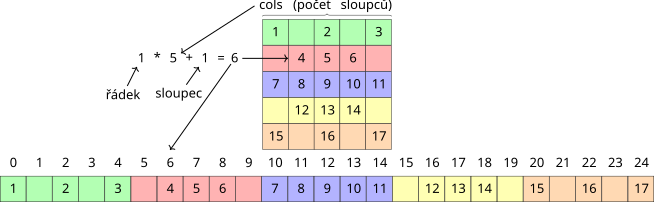
Tento koncept se označuje jako vícerozměrné pole (multidimensional array).
Způsob vyskládání dimenzí
Je na nás, v jakém pořadí jednotlivé dimenze do paměti uložíme. Pokud bychom se bavili o 2D poli, tak můžeme do paměti uložit řádek po řádku (viz obrázek výše), což se označuje jako row major ordering. Můžeme ale také do paměti vyskládat sloupec po sloupci, což se nazývá column major ordering. Je víceméně jedno, který způsob použijeme, je ale důležité se držet jednoho přístupu, jinak může dojít k záměně indexů. Indexování totiž záleží na tom, jaký způsob vyskládání použijeme. Níže předpokládáme pořadí row major.
Indexování
Při práci s dvourozměrným polem bychom chtěli pracovat s dvourozměrným indexem (řádek i, sloupec
j), nicméně při samotném přístupu do paměti pak musíme tento vícerozměrný index převést na 1D
index. A naopak, z 1D indexu bychom chtěli mít možnost získat zpět 2D index. Pro výpočet indexů 2D
pole s vyska řádky a sirka sloupci můžeme použít tyto jednoduché vzorce:
- Převod z 2D do 1D - abychom se dostali na cílovou pozici, musíme přeskočit
radekřádků, kde každý řádek másirkaprvků, a poté ještě musíme přičíst pozici sloupce (sloupec).int index_2d_na_1d(int radek, int sloupec, int sirka) { return radek * sirka + sloupec; } - Převod z 1D do 2D - pro převod z 1D indexu zpět na 2D index stačí aplikovat opačný postup.
Nejprve vydělíme 1D index počtem sloupců, abychom zjistili, na jakém jsme řádku, a poté použijeme
zbytek po dělení, abychom zjistili, na jakém jsme sloupci.
void index_1d_na_2d(int index, int sirka, int* radek, int* sloupec) { *radek = index / sirka; *sloupec = index % sirka; }
Tento koncept lze zobecnit na libovolně rozměrné pole (3D, 4D, …).
Vícerozměrné pole na zásobníku
Pokud známe v době překladu velikost a rozměry vícerozměrného pole, tak můžeme využít vícerozměrných statických polí. Při
vytváření pole stačí použít hranaté závorky pro každou dimenzi pole. Například takto lze vytvořit
2D pole s rozměry 3x3 na zásobníku:
int pole[3][3];
Výhoda takovýchto polí je, že překladač provede převod z 2D indexu na 1D index za vás, a můžete tak
toto pole přímo indexovat vícerozměrným indexem. Například první prvek pole z kódu výše lze nalézt
na pozici pole[0][0], poslední na pozici pole[2][2].
Takováto pole jsou v paměti vyskládána postupně dle jednotlivých dimenzí zleva. Nejprve tedy v
paměti leží prvek pole[0][0], poté pole[0][1], …, pole[1][1], pole[1][2] atd. Pokud
bychom měli 2D pole a první index bychom pokládali za index řádku, tak toto vyskládání odpovídá
row major pořadí.
Vícerozměrná pole v C lze zobecnit do vyšších dimenzí (můžete tak použít například
int pole[3][3][3] atd.), nicméně je dobré to nepřehánět, aby kód zůstal přehledný.
Inicializace vícerozměrných polí
Vícerozměrné pole můžete nainicializovat stejně jako klasické pole. Pro zpřehlednění kódu však také můžete použít složené závorky pro oddělení jednotlivých dimenzí:
int pole_2d[3][4] = {
{0, 1, 2, 3}, // hodnoty pro první řádek
{4, 5, 6, 7}, // hodnoty pro druhý řádek
{8, 9, 10, 11} // hodnoty pro třetí řádek
};
Vícerozměrné pole na haldě
Pokud potřebujeme vícerozměrné pole s dynamickou velikostí, stačí při volání
funkce malloc vytvořit dostatek paměti pro všechny rozměry. Pokud bychom například chtěli
naalokovat paměť pro 2D obrázek s vyska řádky a sirka sloupci, můžeme použít následující volání
funkce malloc:
int* pamet_obrazku = (int*) malloc(vyska * sirka * sizeof(int));
Nezapomeňte, že pro indexování takového pole budeme muset používat přepočet 1D/2D indexů!
Zubatá pole
🤓 Tato sekce obsahuje doplňující učivo. Pokud je toho na vás moc, můžete ji prozatím přeskočit a vrátit se k ní později.
Občas můžete narazit na situaci, kdy potřebujete vytvořit vícerozměrné pole, kde některá z dimenzí nemá fixní velikost. Například první řádek může mít dva sloupce, druhý řádek tři sloupce, třetí řádek žádný sloupec atd.
V takovém případě můžete vytvořit tzv. zubaté pole (jagged array nebo také ragged array). Zubaté pole je v podstatě "pole polí" - vytvoříte (dynamické)1 pole řádků, a každý řádek bude opět dynamické pole sloupců. Kvůli tomuto vnoření polí je nutné jako datový typ použít ukazatel na ukazatel. Následující kód vytvoří pole pěti studentů, a každému studentovi vytvoří pole s různým počtem ID předmětů, které studuje:
1Vnější pole řádků teoreticky nemusí být dynamické, ale pokud už potřebujete dynamické počty sloupců, obvykle budete chtít i dynamický počet řádků.
#include <stdlib.h>
int main() {
// Vytvoření pole studentů
int** studenti = (int**) malloc(5 * sizeof(int*));
for (int i = 0; i < 5; i++) {
// Vytvoření pole předmětů pro konkrétního studenta
studenti[i] = (int*) malloc((i + 1) * sizeof(int));
}
// Druhý předmět třetího studenta bude mít ID 5
studenti[2][1] = 5;
for (int i = 0; i < 5; i++) {
// Uvolnění pole předmětů pro konkrétního studenta
free(studenti[i]);
}
// Uvolnění pole studentů
free(studenti);
return 0;
}
Při přístupu k prvkům pole můžeme klasicky využít hranatých závorek. studenti[2] vrátí adresu
pole předmětů třetího studenta, a nad tímto polem (resp. ukazatelem) můžeme opět použít hranaté
závorky pro přístup k druhému předmětu. Zde se tak neprovádí žádný převod 2D na 1D indexy ani naopak,
protože jednotlivá pole v paměti nejsou uložena za sebou.
Všimněte si, že jednotlivé pole předmětů ("řádky" našeho vícerozměrného pole) musíme uvolňovat zvlášť, a musíme je uvolnit dříve, než uvolníme samotné pole studentů (řádků), jinak bychom už k adresám polí předmětů nesměli přistupovat.
Pokud by zubaté pole mělo tři dimenze, typ "vnějšího" pole by byl
int***, pokud čtyři dimenze, takint****atd.
Vytváření a uvolňování zubatého pole je o dost náročnější než u klasického vícerozměrného pole. To je totiž v paměti uloženo jako klasické 1D pole, které akorát indexujeme vícerozměrným indexem, kdežto zubaté pole je opravdu pole polí (polí polí...). Někdy je ovšem nutné mít různou velikost jednotlivých řádků, a tehdy zubatá pole přijdou vhod.
Text
Doposud jsme pracovali zejména s čísly, nyní se podíváme na to, jak můžeme v počítači reprezentovat znaky a jak obecně pracovat s textem. Zpracování textu je obsaženo téměř v každém programu – načítání konfiguračních souborů, zadávání příkazů z terminálu, práce s dokumenty či tabulkami, komunikace po síti a mnoho dalších činností vyžaduje práci s textem.
Nejprve si ukážeme, jak v počítači reprezentovat jednotlivé znaky, dále jak z nich vytvořit delší sekvence textu a poté jak text načítat a vypisovat.
Znaky
Už víme, že v paměti počítače je nakonec vše reprezentováno číslem, a ani textové znaky
nejsou výjimkou. Přirozeným způsobem, jak od sebe znaky odlišit, je přiřadit každému znaku jiné číslo,
například znak A můžeme reprezentovat číslem 0, znak B číslem 1 atd. Kdyby si však každý
program(átor) definoval vlastní způsob, jak převádět znaky na čísla, tak by mezi sebou programy
nemohly rozumně komunikovat, protože by si nerozuměly.
Z toho důvodu vzniklo za poslední desítky let mnoho textových kódování (character encoding), které definují, jaká čísla přiřadit jednotlivým znakům. Dnešním de-facto standardem je kódování Unicode, které obsahuje přes sto tisíc různých znaků, od dávných hieroglyfů, přes českou či anglickou abecedu, až po všelijaké emoji. Práce s kódováním Unicode však není v jazyce C přímočará, navíc pro naše potřeby vůbec není potřeba1.
1Pokud byste se o kódování znaků a Unicode chtěli dozvědět více, přečtěte si tento článek.
V rámci předmětu UPR si tak vystačíme s kódováním ASCII (American Standard Code for Information Interchange). Toto kódování sice obsahuje pouze 128 znaků (číslice, malá a velká písmena anglické abecedy, interpunkce apod.), nicméně práce s ním je díky tomu velmi jednoduchá. Je navíc podmnožinou Unicode, takže programy, které podporují Unicode kódování, si s ASCII hravě poradí. Tabulku, která uvádí, jak ASCII mapuje jednotlivé znaky na čísla, naleznete např. zde2.
2V tabulce si můžete všimnout, že čísla nejsou znakům přiřazena
zcela náhodně, například znaky reprezentující číslice 0 až 9 mají přiřazena čísla ležící za sebou
(48 - 57), a stejně je tomu i u písmen anglické abecedy. Této vlastnosti můžeme využít pro
usnadnění některých textových operací.
ASCII znaky v C
Jelikož ASCII "kóduje" pouze 128 znaků, tak pro reprezentaci ASCII znaku by nám stačilo 7 bitů.
Nicméně pracovat se sedmibitovými hodnotami by bylo poněkud nepraktické, proto se běžně ASCII znak
ukládá do jednobytového (osmibitového) čísla. V C se pro reprezentaci jednoho ASCII znaku používá
datový typ char3, s kterým jsme se
již setkali.
3C neobsahuje specializovaný typ pro jednobytové celé číslo, char tak reprezentuje jak
ASCII znak, tak i celé číslo s jedním bytem. Záleží pak na nás, jak budeme hodnotu v charu
interpretovat - jestli jako celé číslo nebo jako ASCII znak.
Pokud bychom chtěli do proměnné s typem char nějaký znak uložit, tak bychom mohli použít přímo
jeho číslo z ASCII tabulky:
char znak = 65; // tento znak bude reprezentovat písmeno A
Nicméně takto by si každý programátor musel nazpaměť pamatovat ASCII tabulku, což je dost nepraktické.
C tak nabízí zkratku v podobě znakového literálu (char literal). Pokud napíšete jeden ASCII
znak do apostrofů ('), tento výraz se vyhodnotí jako ASCII číselná hodnota daného znaku s datovým
typem char. Obvykle tak znaky v programech zadáváme v apostrofech pro zjednodušení:
char znak = 'A'; // tento znak bude reprezentovat písmeno A
Pokud bychom si chtěli ověřit, že hodnota tohoto znaku je opravdu 65, jak udává ASCII, můžeme
si ho vypsat na výstup programu jako číslo:
#include <stdio.h>
int main() {
char znak = 'A';
printf("%d\n", (int) znak);
return 0;
}
Do apostrofů nikdy nedávejte více než jeden znak! Překladač by se snažil takovýto zápis interpretovat jako vícebytový znak, což téměř jistě není to, čeho chcete dosáhnout. Pro práci s textem (více znaky najednou) slouží řetězce. Jedinou výjimkou jsou speciální znaky, které se zapisují pomocí zpětného lomítka, například:
'\n'reprezentuje znakLF, který udává, že má dojít k přechodu kurzoru na nový řádek.44Nepleťte si ho se znakem
'n', který reprezentuje klasické písmenonz abecedy.'\t'reprezentuje znakTAB, který udává, že má dojít k výpisu delší mezery.'\0'reprezentuje znakNULs číselnou hodnotou0.
Čísla vs znaky
Při používání apostrofů je mimo jiné třeba si dávat pozor na to, jestli pracujeme s číselnou hodnotou nebo se znakem, který reprezentuje nějakou číslici. Například zde:
char znak = 9;
Nedojde k uložení znaku 9 do proměnné. Bude do ní uložen znak TAB, který má v ASCII hodnotu 9
a pomocí apostrofů ho lze zapsat jako '\t'. Pokud bychom do znaku chtěli zapsat znak reprezentující
číslici 9, musíme použít buď literál '9' nebo číselnou hodnotu 57, která devítku v ASCII
reprezentuje.
Pokud byste chtěli převést ASCII znak číslice na její číselnou hodnotu, stačí od něj odečíst hodnotu
48, neboli znak '0'. '0' - '0' je 0, '5' - '0' je 5 atd. To je způsobeno tím, že číslice
mají v ASCII kódování přiřazeny sekvenční číselné hodnoty.
Řetězce
Nyní už víme, jak můžeme v C pracovat s jednotlivými (ASCII) znaky. Obvykle však chceme pracovat s delšími sekvencemi textu - řádky, větami, odstavci atd. Sekvence textu se v programovacích jazycích obvykle označují jako řetězce (strings).
Dobrá zpráva je, že pro použití řetězců v C už známe vše potřebné – řetězce nejsou nic jiného než pole znaků!
Řetězce v C
Teoreticky bychom si mohli navrhnout vlastní způsob, jak řetězce v paměti reprezentovat a jak s nimi
pracovat. Nicméně zaběhlým způsobem, jak s ASCII textem v C pracovat, a pro který C nabízí různé
funkce a základní syntaktickou podporu, je použití takzvaných řetězců zakončených nulou
(null-terminated strings). Takto reprezentovaný řetězec není nic jiného než pole
znaků, které obsahuje na svém posledním indexu znak '\0' (s číselnou hodnotou 0),
který značí konec řetězce. Například řetězec UPR by tedy v paměti počítače byl reprezentovaný takto:
Vytvoření řetězce
Pokud bychom chtěli vytvořit řetězec na zásobníku, můžeme vytvořit statické pole, umístit do něj
jednotlivé znaky řetězce a za ně přidat znak '\01:
1Pro výpis řetězce pomocí funkce printf můžeme použít zástupný znak %s.
#include <stdio.h>
int main() {
char text[4] = {'U', 'P', 'R', '\0'};
printf("%s\n", text);
return 0;
}
Pokud bychom potřebovali řetězec s dynamickou nebo velkou délkou, můžeme pro vytvoření řetězce samozřejmě použít také dynamickou paměť.
Řetězcový literál
Vytváření řetězců tímto způsobem je nicméně celkem zdlouhavé a nepřehledné. Často chceme v programu
jednoduše a rychle zapsat krátký textový řetězec tak, aby šel přehledně přečíst. K tomu můžeme využít
tzv. řetězcový literál (string literal), který lze vytvořit tak, že napíšeme text do dvojitých
uvozovek ("). Pokud tedy v našem programu vytvoříme například literál "UPR", tak se stane následující:
- Překladač při překladu uloží do výsledného spustitelného souboru pole reprezentující daný řetězec.
V tomto případě půjde o pole velikosti 4 s hodnotami
'U','P','R'a'\0'. Při spuštění programu se toto pole načte do globální paměti v sekci adresního prostoru, která je určena pouze pro čtení. Do takto vytvořeného řetězce tak nelze zapisovat, lze jej pouze číst2.2Tyto řetězce jsou pouze pro čtení zejména z toho důvodu, aby je šlo sdílet. Pokud například v programu použijete třikrát stejný řetězcový literál, překladač může v paměti pole pro tento literál vytvořit pouze jednou, aby ušetřil paměť. Kvůli toho ale musí být řetězce pouze pro čtení, pokud bychom totiž takto sdílený řetězec změnili, změnilo by to i hodnotu všech ostatních literálů, které se vyhodnotí na jeho adresu, což by bylo dost neintuitivní.
- Samotný výraz literálu se při běhu programu vyhodnotí jako adresa prvního znaku řetězce uloženého v globální paměti.
- Datový typ literálu bude
ukazatel na konstantní znak, tedy
const char*. Tento datový typ říká, že hodnotu znaku na dané adrese nelze měnit.
Pomocí řetězcového literálu si tak můžeme značne usnadnit zápis řetězců v programech, jelikož
nemusíme přemýšlet nad délkou pole, nemusíme pamatovat na umístění znaku '\0' na konec řetězce
a ani nemusíme obalovat jednotlivé znaky do apostrofů:
#include <stdio.h>
int main() {
const char* text = "UPR";
printf("%s\n", text);
return 0;
}
Je však třeba pamatovat na to, že takto vytvořené řetězce jsou opravdu pouze pro čtení, a nesmíme
tak do nich zapisovat. Pokud je budete ukládat do proměnné, tak použijte datový typ const char*,
díky kterému vás překladač bude hlídat, abyste se do takovéhoto řetězce omylem nesnažili něco zapsat.
Pokud byste chtěli použít řetězcový literál pro vytvoření řetězce, který lze měnit, můžete ho uložit
do proměnné typu char[] (tj. pole znaků):
#include <stdio.h>
int main() {
char text[] = "UPR";
text[0] = 'A';
printf("%s\n", text);
return 0;
}
V takovémto případě se hodnota z literálu překopíruje do proměnné pole znaků na zásobníku, který již lze měnit.
Pokud jsou vám řetězcové literály povědomé, je to kvůli toho, že jsme je již mnohokrát využili při volání funkce
printf.
Víceřádkové řetězcové literály
Pokud budete chtít zapsat řetězcový literál na více řádků kódu, můžete buď na konci každého
neukončeného řádku použít znak \:
const char* veta = "Ahoj \
jmenuji \
se \
Karel";
nebo každý řádek samostatně obalit uvozovkami:
const char* veta = "Ahoj"
"jmenuji"
"se"
"Karel";
Pozor však na to, že v ani jednom ze zmíněných případů nebude součástí řetězce znak odřádkování. Ten musíte vždy přidat explicitně:
const char* radky = "radek1\n\
radek2\n\
radek3\n";
// nebo
const char* radky = "radek1\n"
"radek2\n"
"radek3\n";
K čemu slouží nulový znak na konci?
U polí je trochu nepraktické to, že pokud je chceme poslat do nějaké funkce, musíme spolu s ukazatelem na první prvek pole předat také jeho velikost, aby funkce věděla, ke kolika prvkům si může dovolit přistoupit. Jiným způsobem, jak určit velikost pole, je zvolit si speciální hodnotu, která bude značit konec pole. Když kód, který s takovýmto polem bude pracovat, na tuto speciální hodnotu narazí, tak bude vědět, že dále v paměti již pole nepokračuje.
Tento mechanismus je využit právě u řetězců zakončených nulou, kde onou speciální hodnotou je právě
tzv. NUL znak, který má číselnou hodnotu 0. Například při procházení řetězce v cyklu tak nemusíme
dopředu znát jeho délku, stačí cyklus ukončit, jakmile narazíme na znak '\0'. Například funkce
pro spočtení délky řetězce by mohla vypadat takto3:
3Všimněte si, že tato funkce bere ukazatel na konstantní pole znaků.
Pokud ve funkci nepotřebujete měnit hodnoty pole, je obvykle dobrý nápad použít klíčové slovo
const před datovým typem obsaženým v poli, aby vás překladač ohlídal, že se pole nesnažíte měnit.
Do takovéto funkce pak klidně můžete poslat i pole, které ve skutečnosti měnit lze, jinak řečeno
např. char* lze bez problému převést na const char*. V opačném směru konverze není korektní.
int delka_retezce(const char* retezec) {
int delka = 0;
// dokud není znak na adrese v ukazateli roven znaku NUL
while (*retezec != '\0') {
delka = delka + 1;
retezec = retezec + 1; // posuň ukazatel o jeden znak dále
}
return delka;
}
Tato funkce postupně projde všechny znaky řetězce a počítá, kolik jich je, dokud nenarazí na
znak '\0. Pro procházení řetězce je zde použita
aritmetika s ukazateli.
Z toho vyplývá mimo jiné to, že znak NUL nemůže být použit "uprostřed" řetězce. Pokud by tomu tak
bylo, tak funkce, které by s takovýmto řetězcem pracovaly, by při nalezení tohoto znaku přestaly
řetězec zpracovávat, a jakékoliv další znaky za NUL by byly ignorovány. Uhodnete tak, co vypíše
následující program?
#include <stdio.h>
int main() {
char text[] = {'U', '\0', 'P', 'R', '\0'};
printf("%s\n", text);
return 0;
}
Řetězce jako pole
S řetězci pracujeme jako s klasickými poli znaků. Například pro získání prvního znaku řetězce můžeme použít operátor hranatých závorek:
char vrat_prvni_znak(const char* retezec) {
return retezec[0];
}
Funkce pro práci s řetězci
Standardní knihovna C obsahuje řadu funkcí, které umí s řetězci zakončenými nulou pracovat. Zde je seznam několika vybraných funkcí, které pro vás můžou být užitečné:
Zjištění délky řetězce
Funkce strlen bere jako parametr řetězec a vrací jeho délku. Jedná se o jednu z nejčastěji používaných funkcí při práci s řetězci a vyplatí se ji tak znát.
Při jejím použití je ovšem nutné si dát pozor na to, že délka provádění této funkce závisí na tom, jak je
řetězec dlouhý. Pokud bude mít řetězec milion znaků, tak bude tato funkce muset projít všech milion
znaků, dokud nenarazí na znak NUL. Dávejte si tak pozor, abyste tuto funkci nevolali zbytečně často.
Například pokud použijete funkci strlen v podmínce cyklu for:
for (int i = 0; i < strlen(retezec); i++) {
...
}
Tak se délka řetězce vypočte při každé iteraci cyklu. Pokud by tak řetězec měl milion znaků, musel by program provést bilion4 (!) operací pouze pro zjištění délky řetězce. Lepší volbou (pokud se tedy délka řetězce nemění) je tak předpočítat si jeho délku dopředu a uložit si ji do proměnné:
41 000 000 000 000
int delka = strlen(retezec);
for (int i = 0; i < delka; i++) {
...
}
Porovnání dvou řetězců
Běžnou operací, kterou bychom s řetězci chtěli udělat, je porovnat,
zdali jsou dva řetězce stejné, popřípadě který z nich je menší5. Funkce
strcmp bere dva řetězce a vrací nulu, pokud se řetězce
rovnají, zápornou hodnotu, pokud je první řetězec menší než ten druhý, a kladnou hodnotu, pokud je
druhý řetězec menší než první.
5Pro porovnávání řetězců se používá lexikografické uspořádání. Nalezne se první dvojice znaků (zleva), ve kterém se řetězce liší, a tyto dva znaky se porovnají pomocí jejich číselné (ASCII) hodnoty.
Pro porovnávání dvou řetězců nikdy nepoužívejte operátor
==! Nebude to fungovat.
Vyhledání řetězce v řetězci
Pokud chcete zjistit, jestli se v nějakém řetězci vyskytuje jiný řetězec, můžete použít funkci strstr.
Převod textu na číslo
Často můžete potřebovat převést textový zápis čísla na jeho číselnou hodnotu. K tomu můžete použít například
funkci strtol (string to long). První parametr funkce je řetězec, který chcete převést, do druhého parametru
můžete předat ukazatel na ukazatel na znak, do kterého se uloží pozice ve vstupním řetězci těsně za
načteným číslem. Posledním parametrem je soustava, ve které se má číslo načíst (obvykle to bude
desítková soustava, tedy hodnota 10). Návratovou hodnotou funkce je pak načtené číslo.
Můžete použít také funkci atoi, která je trochu
jednodušší na použití, ale při jejím použití nelze zjistit, zdali při konverzi nedošlo k chybě
(například pokud vstupní řetězec nereprezentoval číslo).
Rozsekání textu dle rozdělovače
Častou úlohou při práci s textem je rozdělení (neboli "rozsekání") jednoho řetězce na několik podřetězců na základě nějakého rozdělovacího znaku, např. mezery, čárky či středníku. Tuto úlohu můžeme naprogramovat "ručně" s pomocí cyklů a operací s ukazateli, nebo můžeme využít funkci strtok.
Tato funkce bere dva parametry. Prvním je ukazatel na řetězec, který chceme rozsekat, a druhý je řetězec s rozdělovacími znaky, podle kterých budeme první parametr rozsekávat. Když funkci zavoláme, tak projde vstupní řetězec dokud nenarazí na rozdělovač (nebo na konec řetězce), tento rozdělovač ve vstupním řetězci nahradí znakem 0 (NUL), a poté nám vrátí ukazatel na první znak podřetězce před rozdělovačem:
char radek[50] = "ahoj karle jak se mas?";
char* slovo = strtok(radek, " "); // rozděluj podle mezer
// slovo je nyní ukazatel na "ahoj"
Pokud poté chceme přistoupit na další kus řetězce za rozdělovačem, musíme zavolat funkci znovu. Abychom však funkci řekli, že má pokračovat v rozsekávání předchozího řetězce, a ne začít pracovat nad novým řetězcem, musíme ji při opakovaném volání předat jako první parametr hodnotu NULL! strtok
strtokFunkce strtok si v globální proměnné pamatuje, který řetězec zpracovávala naposledy, proto to takto funguje.
char* slovo = strtok(NULL, " ");
// slovo je nyní ukazatel na "karle"
V tomto je tato funkce trochu zvláštní, protože při následujících voláních jí musíme předat první parametr NULL.
Jakmile funkce strtok vrátí hodnotu NULL, tak již došla na konec vstupního řetězce, a dál už tedy není co rozsekávat.
Kompletní ukázka použití funkce strtok:
#include <stdio.h>
#include <string.h>
int main() {
char radek[50] = "ahoj karle jak se mas?";
char* slovo = strtok(radek, " ");
while (slovo != NULL) {
printf("Slovo: %s\n", slovo);
slovo = strtok(NULL, " ");
}
return 0;
}
Tím, že funkce
strtokupravuje vstupní řetězec, tak jí musíme předávat řetězce, které lze měnit. Nesmíte tak např. volatstrtokna řetězcovým literálem. Např. tohle je špatně:const char* text = "ahoj karle"; strtok(text, " ");
Cvičení 🏋
Pro procvičení práce s řetězci si můžete zkusit některé z těchto funkcí sami naprogramovat. Další úlohy pro práci s řetězci můžete nalézt zde.
Kvíz 🤔
-
Co vypíše následující program?
#include <stdio.h> int main() { const char* str = "hello"; printf("%c\n", str[3]); printf("%c\n", str[2]); printf("%c\n", str[1]); return 0; }Odpověď
Program vypíše:
l l eJelikož jsou řetězce poli znaků, tak při přistoupení na nějaký index řetězce získáme hodnotu datového typu znak.
-
Co vypíše následující program?
#include <stdio.h> int main() { const char* str = "hello"; for (int i = 0; i < 5; i++) { printf("%c", str[i] - 32); } printf("\n"); return 0; }Odpověď
Program vypíše
HELLO. Když se podíváte na ASCII tabulku, tak zjistíte, že rozdíl mezi čísly reprezentujícími jednotlivé znaky malé a velké anglické abecedy je32, a že znaky malé abecedy jsou reprezentovány vyššími čísly. Když tak např. od'h'odečteme hodnotu32, získáme znak'H'. Přehlednější by bylo napsat tuto konverzi jakostr[i] - ('a' - 'A')nebo použít funkcitolowerze standardní knihovny jazyka C.
Vstup a výstup
Už víme, jak v paměti počítače pracovat s (ASCII) znaky a řetězci. Nyní si ukážeme, jak můžou naše programy komunikovat s okolním světem – se soubory na disku, s terminálem, s ostatními programy běžícími na vašem počítači či s úplně jiným počítačem přes síť. Komunikace programů se obecně označuje jako I/O (input/output).
Komunikace s terminálem, souborem, tiskárnou či přes síť má samozřejmě rozlišná pravidla. Abychom v
každém programu nemuseli programovat podporu pro každý vstupní/výstupní kanál od nuly, z velké části
se o toto stará operační systém. Ten nám umožňuje komunikovat s okolním světem pomocí tzv.
souborových deskriptorů (file descriptors). Při vytvoření nového komunikačního kanálu
(například při otevření souboru) našemu programu operační systém předá nový souborový deskriptor
identifikovaný číslem. Když poté náš program chce vypsat nebo načíst data, tak musí předat operačnímu
systému číslo deskriptoru, se kterým chceme komunikovat. Můžeme například říct Vypiš text "ahoj" do souborového deskriptoru s číslem 5. Ať už je na tento deskriptor připojen soubor, terminál či něco
jiného, operační systém se postará o to, aby k němu data z našeho programu korektně dorazila.
Standardní souborové deskriptory
Každému programu při spuštění přiřadí operační systém tři základní souborové deskriptory:
-
Standardní vstup (
stdin): tento deskriptor má číslo0a používá se pro čtení vstupu. Pokud váš program spustíte z terminálu, tak dostdinu bude přesměrován text, který napíšete v terminálu. Nemusí tomu tak však být vždy. Váš program můžete například spustit z jiného programu, a předat mu vstup přímo z paměti. Nebo můžete například na vstup vašeho programu přesměrovat soubor z disku:$ ./program < soubor.txt -
Standardní výstup (
stdout): tento deskriptor má číslo1a používá se pro výpis dat. Pokud váš program spustíte z terminálu, tak data odeslaná dostdoutu se objeví na obrazovce terminálu. Opět to ale není jediná možnost,stdoutmůže být například přesměrovaný do souboru na disku:$ ./program > soubor.txtFunkce
printfposílá svůj výstup právě do deskriptorustdout.Pokud to nezměníte, tak
stdoutimplicitně používá tzv. bufferování po řádcích (line buffering). To znamená, že pokud zapíšete dostdoutpomocí některé z funkcí standardní knihovny C nějaký text, tak tento text se nejprve zapíše do dočasného pole (tzv. bufferu) v paměti. Až jakmile na výstup zapíšete znak odřádkování'\n'1, tak dojde k vyprázdnění (flush) bufferu, kdy je jeho obsah odeslán na výstup. Jinak řečeno, dokud nevypíšete znak odřádkování, váš výstup se neobjeví např. v terminálu. Bufferování po řádcích se provádí jako optimalizace, výstup (i vstup) totiž dost často brzdí vykonávání programů.1Nebo jakmile v bufferu dojde paměť.
-
Standardní chybový výstup (
stderr): tento deskriptor má číslo2a používá se pro výpis chyb a logovacích záznamů. Narozdíl odstdoutnepoužívástderrimplicitně line buffering, takže cokoliv, co do něj zapíšete, se okamžite odešle na výstup deskriptoru.
Mimo těchto standardních deskriptorů můžete ve svých programech vytvářet i další deskriptory, například pomocí otevírání souborů. Více o tom, jak fungují souborové deskriptory a vstup a výstup programu se dozvíte v předmětu Operační systémy.
Interpretace vstupních a výstupních dat
Je dobré si uvědomit, že stejně jako v operační paměti, i při komunikaci vždy
pracujeme pouze s čísly (byty), jejichž význam je dán čistě tím, jak je jejich příjemce bude interpretovat.
Pokud náš program do souboru zapíše byty 85, 80, 82, a my tento soubor otevřeme v textovém
editoru, který jej bude pokládat za ASCII soubor, zobrazí se nám text UPR. Pokud jej však otevřeme
v binárním editoru, budou to pro něj pouze tři celá čísla. Pro prohlížeč obrázků by tato čísla zase
mohla reprezentovat barevné složky RGB pixelu.
Aby tak komunikace dvou stran dávala smysl, musí se obě strany dohodnout na tom, jak budou
interpretovat přenášená data. Například u souborů se způsob interpretace obvykle udává tím, jakou
dáme souboru příponu (.txt je pokládán za textový soubor, .jpg za JPEG obrázek atd.).
Ošetření chyb
Zatím jsme předpokládali, že operace, které provádíme v programu, vždy uspějí. Například při zápisu hodnoty do proměnné jsme předpokládali, že se hodnota v paměti na adrese dané proměnné opravdu objeví a když ji pak zpátky načteme, tak se při přenosu nijak neznehodnotí.
Při načítání vstupu či vypisování dat ovšem může velmi často dojít k různým chybovým situacím. Během zápisu souboru na USB "flashku" ji můžeme omylem vytáhnout, při posílání dat přes síť nám může vypadnout připojení k internetu nebo při načítání čísla z terminálu nám může zákeřný uživatel zadat něco, co číslo ani zdaleka nepřipomíná.
Pokud tedy chceme psát robustní programy, které zvládnou korektně reagovat i na nevalidní vstup a na různé chybové situace, které mohou nastat, musíme do našich programů přidat tzv. ošetření chyb (error handling). Jedná se o obslužný kód, který reaguje na možné problémové situace a snaží se je vyřešit. Jak ošetřovat chyby při komunikaci si ukážeme v jednotlivých sekcích o vstupu a výstupu.
Vstup
Abychom mohli našim programům dávat příkazy nebo parametrizovat jejich chování, téměř vždy v nich
potřebujeme přečíst nějaké informace ze vstupu programu. V této sekci si ukážeme několik užitečných
funkcí ze standardní knihovny C, které nám to umožňují. Pro použití těchto
funkcí musíte ve svém programu vložit soubor <stdio.h>.
Načtení jednoho znaku
Pro načtení jednoho znaku ze standardního vstupu (stdin) můžeme použít funkci
getchar. Ta nám vrátí jeden znak ze vstupu, popřípadě hodnotu
makra EOF1, pokud již je vstup uzavřený a nelze z něj nic dalšího načíst nebo pokud došlo při
načítání k nějaké chybě.
1End-of-file
#include <stdio.h>
int main() {
char x = getchar();
printf("Zadaný znak: %c\n", x);
return 0;
}
Načtení řádku
Načítat vstup po jednotlivých znacích je poměrně zdlouhavé. Velmi často chceme ze vstupu načíst
delší úsek textu najednou, například celý řádek. Toho můžeme dosáhnout například použitím funkce
fgets. Ta jako parametry přijímá ukazatel na řetězec, do kterého
zapíše načítaný řádek a maximální počet znaků, který lze načíst2. Třetí parametr je
soubor, ze kterého se má vstup načíst. O souborech se dozvíte více později,
pokud chcete načítat data ze standardního vstupu, tak použijte jako třetí parametr globální proměnnou
stdin, která je nadefinována v souboru <stdio.h>. Pro jednoduché zjištění délky řetězce, do
kterého zapisujete, můžete použít operátor sizeof:
2Tato velikost je včetně znaku '\0', který je vždy zapsán na konec vstupního řetězce. Pokud
tak máte řetězec (pole) o délce 10, předejte do fgets hodnotu 10. Funkce načte maximálně 9
znaků a na konec řetězce umístí znak '\0'.
#include <stdio.h>
int main() {
char buf[80];
// načti řádek textu ze vstupu do řetězce `buf`
fgets(buf, sizeof(buf), stdin);
return 0;
}
Pokud tato funkce vrátí návratovou hodnotu NULL, tak při načítání došlo k chybě. Tuto chybu byste
tak ideálně měli nějak ošetřit:
#include <stdio.h>
int main() {
char buf[80];
if (fgets(buf, sizeof(buf), stdin) == NULL) {
printf("Nacteni dat nevyslo. Ukoncuji program\n");
return 1;
}
return 0;
}
Pokud byl na vstupu řádek ukončený odřádkováním (
\n), tak se toto odřádkování bude nacházet i v načteném řetězci po zavolánífgets! Pokud tedy takto načtený řetězec chcete například porovnat s jiným řetězcem, měli byste nejprve znak odřádkování odstranit. Více se můžete dozvědět zde.
Načtení formátovaného textu
Pokud chceme načítat text, u kterého očekáváme, že bude mít nějaký specifický formát, popřípadě chceme
text rovnou nějak zpracovat, například jej převést na číslo, můžeme použít formátované načítání vstupu
pomocí funkce scanf. Této funkci předáme tzv.
formátovací řetězec (format string), který udává, jak má vypadat vstupní text. V tomto řetězci
můžeme používat různé zástupné znaky. Za každý zástupný znak ve formátovacím řetězci scanf očekává
jeden argument s adresou, do které se má uložit načtená hodnota popsaná zástupným znakem ze vstupu.
Například tento kód načte ze vstupu dvě celá čísla:
int x, y;
scanf("%d%d", &x, &y);
Pomocí formátovacího řetězce můžeme také vyžadovat, co musí v textu být. Například scanf("x%d", …)
načte vstup pouze, pokud v něm nalezne znak 'x' následovaný číslem.
Seznam všech těchto zástupných znaků naleznete v dokumentaci.
Načítat můžeme například celá čísla (%d), desetinná čísla (%f) či znaky (%c).
Funkce
scanfnačítá data ze standardního vstupu programu (stdin). Obsahuje ovšem několik dalších variant, pomocí kterých může načítat formátovaná data z libovolného souboru (fscanf) nebo třeba i z řetězce v paměti (sscanf).
Funkce scanf je jistě užitečná, zejména u krátkých a jednoduchých programů, nicméně má také určité
problémy, které jsou popsány níže. Pokud to je tedy možné, pro načítání vstupu raději používejte
funkci fgets.
Načítání řetězců pomocí scanf
Pomocí scanf můžeme načítat také celé řetězce pomocí zástupného znaku %s. Zde si ovšem musíme
dávat pozor, abychom u něj uvedli i maximální délku řetězce, do kterého chceme text načíst3:
3Narozdíl od funkce fgets se zde musí uvést délka o jedna menší, než je délka cílového řetězce,
do kterého znaky zapisujeme.
char buf[21];
scanf("%20s", buf);
Pokud bychom použili zástupný znak %s bez uvedené velikosti cílového řetězce, snadno by se mohlo
stát, že nám uživatel zadá moc dat, které by funkce scanf začala vesele zapisovat i za paměť předaného
řetězce, což může vést buď k pádu programu (v tom lepším případě) nebo ke vzniku bezpečnostní
zranitelnosti, pomocí které by uživatel našeho programu mohl například získat přístup k počítači,
na kterém program běží (v tom horším případě):
char buf[21];
// pokud uživatel zadá více než 20 znaků, může svým vstupem začít přepisovat paměť
// běžícího programu
scanf("%s", buf);
Zpracování bílých znaků
Funkce scanf ignoruje bílé znaky (mezery, odřádkování, tabulátory atd.) mezi jednotlivými
zástupnými znaky ve formátovacím řetězci. Například v následujícím kódu je validním vstupem x8,
x 8 i x 8:
int a;
scanf("x%d", &a);
I když může toto chování být užitečné, někdy je také celkem neintuitivní. Problém může způsobovat
zejména, pokud se pro načítání vstupu kombinuje formátované načítání (scanf) s neformátovaným
načítáním (např. fgets). Funkce scanf totiž bílé znaky nechá ve vstupu ležet, pokud je
nepotřebuje zpracovat.
Následující program načítá číslo pomocí funkce scanf a poté se snaží načíst následující
řádek textu pomocí funkce fgets:
int cislo;
scanf("%d", &cislo);
char radek[80];
fgets(radek, sizeof(radek), stdin);
Pokud tomuto programu předáme text 5\nahoj, očekávali bychom, že se v řetězci radek objeví
ahoj. Nicméně funkce scanf načte číslo 5 a nechá ve vstupu ležet znak odřádkování, protože
nic dalšího načíst nepotřebuje. Funkce fgets poté uvidí znak odřádkování, načte jej a skončí
své provádění (načte prázdný řádek), což zřejmě není chování, které bychom od programu čekali.
Ošetření chyb
Funkce scanf je problematická i co se týče ošetření chyb. Její návratová hodnota sice udává, kolik
zástupných znaků ze vstupu se jí podařilo načíst, problémem však je, že pokud funkce načte třeba
pouze polovinu vstupu, tak ji už nemůžeme zavolat znovu se stejným formátovacím řetězcem, jinak by se
snažila načíst data, která již načetla. Například pokud bychom tomuto programu:
int x, y;
scanf("%d%d", &x, &y);
předali text 5 asd, tak funkce vrátí hodnotu 1, tj. načetla ze vstupu jedno číslo. Nyní ovšem už
funkci nemůžeme zavolat znovu se stejnými parametry (jakmile bychom např. ve vstupu přeskočili nevalidní
text), protože v tuto chvíli už bychom chtěli načíst pouze jedno číslo.
Parametry příkazového řádku
Další možností, jak předat nějaký vstup vašemu programu, je předat mu parametry při spuštění v terminálu:
$ ./program arg1 arg2 arg3
K těmto předaným řetězcům poté lze přistoupit ve funkci
main.
Kvíz 🤔
-
Co vypíše následující program, pokud na vstup zadáme
5?#include <stdio.h> int main() { int a; scanf("%d", a); printf("Hodnota: %d\n", a); return 0; }Odpověď
Tento program obsahuje nedefinované chování 💣. Funkce
scanfočekává pro každý zástupný znak ve svém formátovacím řetězci další argument, který musí obsahovat adresu, do které se daná hodnota ze vstupu uloží. Zde místo adresy předáváme doscanfhodnotu číselné proměnné, která navíc ani není inicializovaná, takže její předání do funkce je samo o sobě také nedefinovaným chováním. -
Co vypíše následující program, pokud na vstup zadáme
5?#include <stdio.h> int main() { int* p; scanf("%d", p); printf("Hodnota: %d\n", p); return 0; }Odpověď
Tento program obsahuje nedefinované chování 💣. Sice správně do funkce
scanfpředává adresu celého čísla, ale tato adresa je neinicializovaná! Adresy předané funkciscanfpo formátovacím řetězci jsou výstupnímu argumenty, jinak řečeno do předaných adres budou zapsány hodnoty načtené ze vstupu. Musíme tak do funkce předat validní adresu na kus paměti, kde je opravdu uloženo celé číslo, což v tomto případě neplatí. -
Co vypíše následující program, pokud na vstup zadáme
5?#include <stdio.h> int main() { int a; scanf("%s", &a); printf("Hodnota: %d\n", a); return 0; }Odpověď
Tento program obsahuje nedefinované chování 💣. Sice správně do funkce
scanfpředává adresu proměnné, ale špatného typu. Zástupný znak%svyžaduje adresu (pole) znaků, zatímco zde předáváme adresu celého čísla. -
Co vypíše následující program, pokud na vstup zadáme
Martin\nNovak?#include <stdio.h> int main() { char radek[100]; fgets(radek, sizeof(radek), stdin); const char* jmeno = radek; fgets(radek, sizeof(radek), stdin); const char* prijmeni = radek; printf("%s", jmeno); printf("%s", prijmeni); return 0; }Odpověď
Vypíše se tohle:
Novak NovakJe důležité si uvědomit, co znamená
const char* jmeno = radek;.char*je ukazatel, tedy číslo obsahující adresu. Tímto řádkem pouze říkáme, že do ukazatele s názvemjmenoukládáme adresu pole znakůradek. Řádkemconst char* prijmeni = radek;říkáme, že tuto adresu ukládáme do proměnné s názvemprijmeni. Obě dvě proměnné (jmenoaprijmeni) tedy obsahují stejnou adresu. No a jelikož si druhým voláním funkcefgetspřepíšeme původní obsah poleradek, a obě proměnné ukazují na poleradek, tak se vypíše dvakrát poslední načtený řádek.Poznámka: ve formátovacím řetězci funkce
printfjsme zde nepoužili znak odřádkování (\n), protože funkcefgetsjej uloží do poleradeka náš kód ho zde neodstranil. Takže pokud bychom ho měli i vprintf, tak by se vypsaly dva znaky odřádkování za sebou.
Výstup
Stejně jako pro načítání vstupu, i pro výpis textu na výstup nabízí standardní knihovna C sadu
užitečných funkcí, opět umístěných v souboru <stdio.h>. Stejně jako u načítání vstupu
bychom i u výstupu měli řešit ošetření chyb. Nicméně, u zápisu to
(alespoň u malých programů) není až tak nezbytné, protože chyby zápisu jsou vzácnější než chyby při
vstupu. Zdrojem dat je totiž náš program, a nemusíme tedy tak striktně kontrolovat, jestli jsou
vypsaná data validní. Tato povinnost v jistém smyslu přechází na druhou stranu, s kterou náš program
komunikuje, protože ta bude námi vypsaná data číst.
Vypsání znaku
Pro vypsání jednoho znaku na standardní výstup (stdout) můžeme použít funkci
putchar.
#include <stdio.h>
int main() {
putchar('x');
return 0;
}
Vypsání řetězce
Pro vypsání celého řetězce na stdout můžete použít funkci puts,
která zároveň za řetězcem vypíše znak odřádkování \n:
#include <stdio.h>
int main() {
puts("Ahoj");
puts("UPR");
return 0;
}
Dávejte si pozor na to, že v předaném řetězci musí být obsažen ukončovací NUL znak! Funkce puts
se bude snažit číst a vypisovat znaky ze zadané adresy, až dokud na takovýto znak nenarazí. Pokud
by tento znak v předaném řetězci nebyl, tak se bude funkce pokoušet číst nevalidní paměť za koncem
řetězce, dokud na NUL nenarazí, což by vedlo k
paměťové chybě 💣.
Vypsání formátovaného textu
K výpisu formátovaného textu na stdout můžeme použít funkci printf, s kterou jsme se již
mnohokrát setkali. Prvním parametrem funkce je formátovací řetězec, do kterého můžete dávat
zástupné znaky začínající procentem (např. %d nebo %s). Pro každý takovýto zástupný znak funkce bude očekávat jednu
hodnotu (argument) za formátovacím řetězcem, která bude zformátována na výstup. Například takto můžeme vytisknout číslo
a po něm řetězec:
const char* text = "Cislo";
int cislo = 5;
printf("Cislo %d, retezec %s: \n", cislo, text);
Jelikož jsme ve formátovacím řetězci předali dva zástupné znaky (%d - číslo a %s - řetězec), tak po řetězci musíme
do funkce printf předat jeden argument číselného typu, a poté jeden řetězec.
Zástupné znaky funkcí printf i scanf jsou obdobné, jejich seznam a různé možnosti nastavení
můžete najít v dokumentaci. Nejčastěji budeme používat tyto zástupné znaky:
%d- výpis celého čísla se znaménkem, nejčastěji datový typint%f- výpis desetinného čísla, datový typfloat%s- výpis řetězce, datový typchar*(ukazatel na znak)- Na předané adrese musí ležet řetězec, tj. pole znaků ukončené znakem
'\0'!
- Na předané adrese musí ležet řetězec, tj. pole znaků ukončené znakem
Stejně jako
scanfmá i funkceprintfrůzné varianty pro formátovaný výpis do souborů (fprintf) či do řetězce v paměti (sprintf).
Kvíz 🤔
-
Co vypíše následující program?
#include <stdio.h> int main() { int a = 1; printf("Hodnota: %f", a); return 0; }Odpověď
Tento program obsahuje nedefinované chování 💣. Říkáme funkci
printf, že chceme vypsat desetinné číslo (zástupný znak%f), ale jako argument předáváme výraz typu celé číslo (int). Tento program tedy není validní. -
Co vypíše následující program?
#include <stdio.h> int main() { int a = 1; printf("Hodnota: %d (a=%d)", a); return 0; }Odpověď
Tento program obsahuje nedefinované chování 💣. Říkáme funkci
printf, že jí předáme dvě hodnoty (dva výrazy) typu celého čísla (zástupný znak%d), ale předáváme pouze jednu hodnotu (a). Tento program tedy není validní. -
Co vypíše následující program?
#include <stdio.h> int main() { int a = 1; printf("Hodnota: %s", a); return 0; }Odpověď
Tento program obsahuje nedefinované chování 💣. Říkáme funkci
printf, že jí předáme hodnotu typu řetězec (zástupný znak%s), ale předáváme pouze hodnotu typu celé číslo (int). Tento program tedy není validní.
Vlastní datové typy
Nyní už umíme pracovat se základními datovými typy v C (celá čísla, desetinná čísla, pravdivostní hodnoty, znaky) a také umíme pracovat s jejich adresami a vytvářet jich více najednou. Doposud jsme však vždy pracovali s každým datovým typem zvlášť.
Představte si, že byste chtěli naprogramovat hru, ve které budete mít nějaké počítačem ovládané příšery1. Každá příšera může mít spoustu vlastností – jméno, počet životů, zranění, které uděluje, umístění na mapě, kořist atd. Zároveň bude takových příšer v naší hře určitě více. Mohli bychom tak příšery reprezentovat pomocí pole pro každou jeho vlastnost:
1Non-player character (NPC)
const char* prisera_jmeno[100];
int prisera_zivot[100];
int prisera_zraneni[100];
float prisera_poloha_x[100];
float prisera_poloha_y[100];
...
I když by jistě šlo programy tvořit tímto způsobem, asi sami uznáte, že to není ideální, protože to má spoustu nevýhod:
- Pokud bychom například změnili (maximální) počet příšer, museli bychom synchronizovat tuto velikost mezi všemi poli, která reprezentují jednotlivé vlastnosti příšer.
- K názvům proměnných musíme přidávat nějakou předponu (např.
prisera), abychom dali najevo, že tyto proměnné vlastně patří k jednomu logickému prvku (příšeře). - Pokud bychom chtěli jednu takovou příšeru poslat do funkce, tak by to vyžadovalo spoustu parametrů:
Celou příšeru bychom ani nemohli z funkce přímočaře vrátit, protože funkce mohou vracet pouze jednu hodnotu.int vypocti_pocet_zkusenosti( const char* prisera_jmeno, int prisera_zivot, int prisera_zraneni, float prisera_poloha_x, float prisera_poloha_y, ... ) { } - Pokud bychom chtěli příšeře přidat novou vlastnost, museli bychom přidat novou proměnnou nebo pole na všechna místa, kde s příšerami pracujeme. Například by se musely změnit parametry každé funkce, která by přijímala příšeru.
Co bychom ve skutečnosti chtěli překladači říct, je něco ve smyslu Příšera je něco, co má jméno, počet životů, zranění, pozici a kořist, a poté bychom chtěli ve funkci například říct Vytvoř pole 100 příšer:
Prisera prisery[100];
Takto bychom zlepšili úroveň abstrakce našeho kódu – v tomto konkrétním případě bychom se mohli začít
v kódu bavit o příšeře místo pouze o sadě atributů jméno, počet životů, zranění, ….
Jinak řečeno, chtěli bychom si vytvořit náš vlastní datový typ. A právě to můžeme v C udělat pomocí struktur.
Struktury jsou posledním syntaktickým prvkem C, o kterém se budeme v předmětu UPR bavit. Jazyk C sice obsahuje i několik dalších syntaktických prvků, které jsme si neukázali, ty však nejsou nutné pro tvorbu jednoduchých programů. Dále se už pouze budeme bavit o konkrétních aplikacích toho, co jsme se naučili, pro tvorbu různých typů programů.
Struktury
Struktury (structures) nám umožňují popsat nový datový typ, který se bude skládat z jednoho či více tzv. členů (members)1. Každému členu musíme určit jeho jméno a datový typ. Novou strukturu můžeme popsat pomocí tzv. deklarace struktury:
1Můžete se setkat také s názvy atribut (attribute), vlastnost (property) nebo field. V kontextu struktur C označují všechny tyto názvy jedno a to samé - člena struktury.
struct <název struktury> {
<datový typ prvního členu> <název prvního členu>;
<datový typ druhého členu> <název druhého členu>;
<datový typ třetího členu> <název třetího členu>;
...
};
Při deklaraci struktury nezapomínejte na finální středník za složenými závorkami, je povinný.
Například, pokud bychom chtěli vytvořit datový typ reprezentující příšeru, která má své jméno
a počet životů, můžeme deklarovat následující strukturu:
struct Prisera {
const char* jmeno;
int pocet_zivotu;
};
Tento kód sám o sobě nic neprovádí! Pouze pomocí něj říkáme překladači, že vytváříme nový datový
typ s názvem struct Prisera. Poté nám překladač umožní dále v programu vytvořit například lokální
proměnnou tohoto datového typu:
// lokální proměnná s názvem `karel` a datovým typem `struct Prisera`
struct Prisera karel;
Pro pojmenovávání struktur používejte v rámci předmětu UPR jmennou konvenci
PascalCase.
Struktury jsou plnohodnotnými datovými typy. Můžete tak vytvářet ukazatele na struktury, pole struktur, můžete použít struktury jako členy jiné struktury atd.
Reprezentace struktury v paměti
Pokud vytvoříme proměnnou datového typu struktury, tak překladač naalokuje paměť pro všechny
členy této struktury. V případě výše by proměnná karel obsahovala nejprve byty pro ukazatel
const char* a poté byty pro int. Členové struktury budou v paměti uloženi ve stejném pořadí,
v jakém byli popsáni při deklaraci struktury. Neznamená to ovšem, že musí ležet hned za sebou!
Překladač se může rozhodnout mezi členy struktury v paměti vložit mezery (tzv. padding) kvůli
urychlení provádění programu. Více detailů se můžete dozvědět v podkapitole
Reprezentace struktur v paměti.
Prozatím si zapamatujte, že pro zjištění velikosti struktury v bytech (například při dynamické
alokaci paměti) vždy používejte operátor
sizeof a nesnažte se velikost
"tipovat" ručně.
Umístění a platnost struktur
Stejně jako u proměnných platí, že strukturu lze používat pouze v oblasti, ve které je platná (v jejím tzv. scopu). Narozdíl od funkcí lze struktury deklarovat i uvnitř funkcí, nicméně nejčastěji se struktury deklarují na nejvyšší úrovni souboru (tzv. global scope), stejně jako funkce.
Inicializace struktury
Stejně jako u základních datových typů a polí platí, že pokud lokální proměnné s datovým typem nějaké struktury nedáte počáteční hodnotu, tak bude její hodnota nedefinovaná 💣. Strukturu můžete nainicializovat pomocí složených závorek se seznamem hodnot pro jednotlivé členy struktury:
struct Prisera karel = { "Karel", 100 };
Stejně jako u polí platí, že hodnoty, které nezadáte, se nainicializují na nulu:
struct Prisera karel = {}; // `jmeno` i `pocet_zivotu` bude `0`
struct Prisera karel = { "Karel" }; // `jmeno` bude "Karel", `pocet_zivotu` bude `0`
Abyste si nemuseli pamatovat pořadí členů struktury při její inicializaci, můžete jednotlivé členy nainicializovat explicitně pomocí tečky a názvu daného členu:
struct Prisera karel = { .pocet_zivotu = 100, .jmeno = "Karel" };
Jednotlivé hodnoty členům se přiřazují zleva doprava, takže pokud použijete název nějakého členu více než jednou, "zvítězí" poslední zadaná hodnota. Tomuto se však vyhněte, a ani nekombinujte inicializaci pomocí pořadí a pomocí názvů členů. Takovýto kód by totiž byl značně nepřehledný.
Přístup ke členům struktur
Abychom mohli číst a zapisovat jednotlivé členy struktur, můžeme použít operátor
přístupu ke členu (member access operator), který má syntaxi <výraz typu struktura>.<název členu>:
#include <stdio.h>
struct Osoba {
int vek;
int pocet_pratel;
};
int main() {
struct Osoba martina = { .vek = 18, .pocet_pratel = 10 };
martina.vek += 1; // přístup k členu `vek`
martina.pocet_pratel += 20; // přístup k členu `pocet_pratel`
printf("Martina ma %d let a ma %d pratel\n", martina.vek, martina.pocet_pratel);
return 0;
}
Pokud máme k dispozici pouze ukazatel na strukturu, tak je přístup k jejím členům trochu nepraktický
kvůli prioritě operátorů. Operátor
dereference (*) má totiž menší prioritu než operátor přístupu ke členu (.). Abychom tak nejprve
z ukazatele na strukturu načetli její hodnotu a až poté přistoupili k jejímu členu, museli bychom
použít závorky:
void pridej_pratele(struct Osoba* osoba) {
(*osoba).pocet_pratel++;
}
Jelikož ukazatele na struktury jsou využívány velmi často, C nabízí pro tuto situaci zkratku v
podobě operátoru přístupu k členu přes ukazatel (member access through pointer), který má
syntaxi <ukazatel na strukturu>-><název členu>:
void pridej_pratele(struct Osoba* osoba) {
osoba->pocet_pratel++;
}
Operátor -> je čistě syntaktickou zkratkou, tj. platí *(ukazatel).clen == ukazatel->clen.
Vytváření nových jmen pro datové typy
Možná vás napadlo, že psát při každém použití struktury klíčové slovo struct před jejím názvem je
zdlouhavé. C umožňuje dávat datovým typům nové názvy, aby se nám s nimi lépe pracovalo. Lze toho
dosáhnout pomocí syntaxe typedef <datový typ> <jméno>;:
typedef int teplota;
int main() {
teplota venkovni = 24;
return 0;
}
Pomocí typedef vytvoříme nové jméno pro datový typ, pomocí kterého se pak na tento typ můžeme
odkazovat (původní název datového typu to však nijak neovlivní a můžeme ho stále používat). Opět
platí, že takto vytvořené jméno lze použít pouze v oblasti (scopu), kde byl typedef použit.
Obvykle se používá na nejvyšší úrovni souboru.
U struktur si pomocí typedef můžeme zkrátit jejich název, typicky ze struct <nazev> na <nazev>:
struct Osoba {
int vek;
};
typedef struct Osoba Osoba;
int main() {
Osoba jiri;
return 0;
}
Toto lze ještě více zkrátit, pokud deklaraci struktury použijeme přímo na místě datového typu v
typedef:
typedef struct Osoba {
int vek;
} Osoba;
A konečně, abychom nemuseli jméno struktury opakovat dvakrát, můžeme vytvořit tzv. anonymní
strukturu (anonymous structure) bez názvu, a jméno jí přiřadit až pomocí typedef.
typedef struct {
int vek;
} Osoba;
Právě takto se obvykle deklarují struktury v C.
Použití struktur ve strukturách
Jelikož deklarace struktury vytvoří nový datový typ, nic vám nebrání v tom používat struktury jako členy jiných struktur3:
3Lze si můžete všimnout, že vnořené struktury lze inicializovat stejně jako proměnné struktur,
tj. pomocí složených závorek {}.
typedef struct {
float x;
float y;
} Poloha;
typedef struct {
const char* jmeno;
int cena;
} Vec;
typedef struct {
int pocet_zivotu;
Poloha poloha;
Vec korist[10];
} Prisera;
int main() {
Prisera prisera = { .pocet_zivotu = 100, .poloha = { .x = 0, .y = 0 } };
return 0;
}
Díky tomu můžeme vytvářet celé hierarchie datových typů, což může značně zpřehlednit náš program, protože můžeme pracovat s kódem na vyšší úrovni abstrakce.
Rekurzivní struktury
Pokud bychom chtěli použít jako člena struktury tu stejnou strukturu (například struktura
Osoba může mít člen matka opět s datovým typem Osoba), nemůžeme takovýto člen uložit ve
struktuře přímo, můžeme tam uložit pouze jeho adresu4:
4Zde si můžete všimnout, že musíme použít struct Osoba pro datový typ členu matka. Je to z
toho důvodu, že v momentě, kdy tento člen definujeme, tak ještě není platný typedef, ve kterém se
struktura nachází, takže datový typ Osoba zatím neexistuje. Nové jméno pro datový typ lze používat
až za středníkem daného typedefu. V tomto případě také nemůžeme vytvořit strukturu jako anonymní,
ale musíme ji rovnou pojmenovat (typedef struct Osoba ...).
typedef struct Osoba {
int vek;
struct Osoba* matka;
} Osoba;
Je to proto, že pokud by Osoba byla definována pomocí Osoby, tak by došlo k rekurzivní definici,
kterou nelze vyřešit. Nešlo by totiž určit velikost Osoby - její velikost by závisela na velikosti
jejího členu matka, jehož velikost by závisela na velikosti jeho členu matka atd. Proto tedy musíme
v tomto případě použít ukazatel, který má fixní velikost, ať už ukazuje na jakýkoliv typ.
Kvíz 🤔
-
Co vypíše následující program?
#include <stdio.h> typedef struct { int vek; } Osoba; int main() { Osoba karel = { .vek = 18 }; Osoba jana = { .vek = 22 }; karel.vek = 19; printf("Vek Jany: %d\n", jana.vek); return 0; }Odpověď
Program vypíše
Vek Jany: 22. I když mají proměnnékarelajanastejný datový typ (Osoba), jedná se o dvě samostatné proměnné, a každá z nich má tak vlastní kopii atributuvek. Takže pokud změníme věk Karla, nebude to mít vliv na věk Jany. Stejně by to fungovalo, pokud bychom měli např. dvě proměnnéint xaint ya upravili pouzex. Jistě byste také nečekali, že tato akce změní hodnotuy.
Paměťová reprezentace struktur
🤓 Tato sekce obsahuje doplňující učivo. Pokud je toho na vás moc, můžete ji prozatím přeskočit a vrátit se k ní později.
V této kapitole si popíšeme, jak se překladač rozhoduje o tom, kolik bytů budou v paměti zabírat proměnné struktur, které vytváříme v našich programech.
Když vytvoříme proměnnou struktury v paměti, tak bychom si intuitivně mohli myslet, že překladač jednotlivé členy struktury "vysází" v paměti jeden za druhým. Nicméně není tomu tak vždy. Z důvodu dodržení tzv. zarovnání (alignment) jednotlivých datových typů členů struktury se totiž překladač může rozhodnout mezi tyto členy vložit nějaké byty navíc.
Zarovnání
Každý datový typ v jazyce C má kromě své velikosti (počet bytů, které zabírá v paměti) také tzv.
zarovnání. Jedná se o číslo, které říká, na jakých adresách v paměti by ideálně měly být umístěny
hodnoty tohoto datového typu. Zarovnání n říká, že daný datový typ může ležet na adresách, které
jsou dělitelné číslem n. Takže např. datový typ se zarovnáním 4 může ležet na adresách 4, 8,
12, 200 nebo 512, neměl by však ležet např. na adresách 1, 3 nebo 134, protože ty nejsou
dělitelné čtyřkou. Mohli bychom říct, že pro zarovnání 4 jsou adresy 4 nebo 8 zarovnané
(aligned), zatímco adresy 3 nebo 134 jsou nezarovnané (unaligned).
Zarovnání existuje z toho důvodu, že některé typy procesorů jsou navrženy tak, že jednoduše nezvládnou načítat hodnoty z adres, které nesplňují zarovnání daného datového typu. Některé jiné procesory to zase sice zvládnou, ale mnohem méně efektivněji, než kdybychom načítali hodnoty ze zarovnaných adres.
Pokud to v našem programu neupravíme, tak primitivní datové typy mají zarovnání stejné, jako je jejich velikost, a struktury mají zarovnání nastavené na nejvyšší zarovnání ze všech datových členů typů dané struktury.
Zde jsou ukázky zarovnání pro několik základních datových typů:
char: zarovnání1int: zarovnání je stejné velikost (tedy typicky4)float: zarovnání4char*: zarovnání je stejné velikost (tedy typicky8)
Struktury a zarovnání
Zarovnání jednotlivých datových typů ovlivňuje to, jak překladač rozmístí jednotlivé členy struktur v paměti. Bude se totiž snažit o to, aby každý člen struktury ležel na adrese, která bude zarovnaná vzhledem k datovému typu daného členu. Vezměme si například následující strukturu:
Poznámka: ve všech případech níže budeme předpokládat, že
shortzabírá2byty,intzabírá4byty, a ukazatel zabírá8bytů.
typedef struct {
char a;
int b;
} Str1;
Jelikož char zabírá 1 byte a int zabírá 4 byty, mohli bychom si myslet, že sizeof(Str1)
bude 5. Nicméně překladač musí zajistit, že člen b bude ležet na adrese, která bude zarovnaná
na 4 byty, protože zarovnání datového typu int je 4. Dejme tomu, že by proměnná typu Str1
ležela třeba na adrese 16, tj. i člen a by ležel na adrese 16. Pokud by překladač umístil člen
b na adresu 17, tak by tento člen ležel na nezarovnané adrese1:
1Každá čtvercová buňka reprezentuje jeden byte. V pravém horním rohu buňky je znázorněna adresa buňky. Šedé buňky označují byty paddingu. Čerchované buňky obsahují nezarovnaná data.
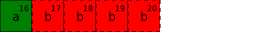
Z tohoto důvodu překladač vloží za a tři byty tzv. výplně (padding). Tyto byty nebudou k
ničemu využívány, budou sloužit pouze k tomu, aby byl člen b správně zarovnaný. Struktura tedy bude
v paměti uložena takto, její velikost bude 8 bytů a její zarovnání budou 4 byty:
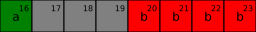
Překladač ovšem nevkládá výplň pouze mezi jednotlivé členy struktur. Někdy musí vložit výplň i na
samotný konec struktury. Podívejme se na následující strukturu Str2:
typedef struct {
int b;
char a;
} Str2;
Mohlo by se zdát, že zde být výplň být nemusí, protože int může ležet "na začátku" struktury,
a char má zarovnání 1, takže může ležet kdekoliv. Co by se ovšem stalo, kdybychom tyto struktury
uložili za sebe do paměti v poli?
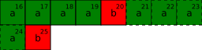
První struktura v poli by byla zarovnaná správně, ale druhá (případně ty další) už ne! Z toho důvodu
musí překladač zajistit, že budou správně zarovnaní nejenom všichni členové struktury, ale i struktura
samotná. Zarovnání struktury se rovná nejvyššímu zarovnání ze všech členů struktury, v tomto případě
to bude 4. Překladač tak musí zajistit, aby všechny struktury Str2 (i když budou ležet v poli za
sebou) ležely na adresách, které budou násobky 4. Z tohoto důvodu zde překladač vloží 3 byty výplně
i na konec struktury, aby byly proměnné této struktury správně zarovnané:
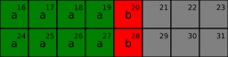
Minimalizace velikosti struktury
Obecně bychom se měli snažit velikosti struktur minimalizovat, abychom v našich programech neplýtvali pamětí. Existují různé atributy, kterými můžeme např. překladači říct, aby zarovnání ignoroval, to ovšem nemusí být dobrý nápad, protože poté náš program na určitých procesorech nemusí vůbec fungovat.
Univerzálnějším a bezpečnějším řešením je seřadit členy struktury tak, abychom minimalizovali výplň. Obecná poučka zní řadit členy podle jejich velikosti, od největšího po nejmenší. Porovnejte například následující dvě struktury:
-
Neseřazené členy, velikost
24bytů,10bytů výplně:typedef struct { char a; int b; char c; const char* d; } Str3;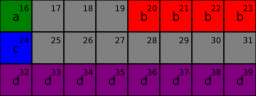
-
Seřazené členy, velikost
16bytů,2byty výplně:typedef struct { const char* a; int b; char c; char d; } Str4;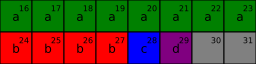
Kvíz 🤔
Zde je několik ukázek struktur, na kterých si můžete otestovat své znalosti zarovnání a výplně.
-
S1typedef struct { int a; const char* b; } S1;Velikost a zarovnání
Velikost
16bytů, zarovnání8bytů, výplň4byty.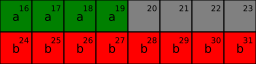
-
S2typedef struct { char a[4]; char b; } S2;Velikost a zarovnání
Velikost
5bytů, zarovnání1byte, výplň0bytů. Členamá sice také4byty, jakoint, nicméně jelikož je zarovnání datového typucharpouze1, tak i zarovnání tohoto pole je1. A jelikož členbmůže taktéž ležet na libovolné adrese, tak zde není přidána žádná výplň.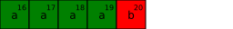
-
S3typedef struct { short a; char b; char c; int d; } S3;Velikost a zarovnání
Velikost
8bytů, zarovnání4byty, výplň0bytů.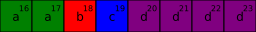
Struktury a funkce
Pomocí struktur si můžeme vytvořit nový datový typ, což pomáhá přehlednosti programů, protože se
díky tomu můžeme v programech vyjadřovat pomocí pojmů z oblasti (tzv. domény), kterou se náš program
zabývá (Student, Příšera, Munice, Letadlo, Volant atd.) a ne pouze pomocí pojmů, kterým
rozumí počítač (číslo, znak, pravdivostní hodnota).
Abychom pracovali s ještě vyšší úrovní abstrakce, bylo by užitečné, pokud bychom mohli k
vlastním datovým typům nadefinovat také vlastní operace, které by s nimi uměly pracovat. Některé
programovací jazyky umožňují provádět tzv.
přetěžování operátorů (operator overloading),
pomocí kterého můžeme například umožnit používání operátorů jako je + s vlastními datovými typy.
C toto sice neumožňuje, nicméně chování můžeme k námi vytvořeným strukturám přidat pomocí funkcí.
Často tak k naší struktuře chceme vytvořit sadu funkcí, které s ní budou pracovat. V C pro tento koncept neexistuje žádná syntaktická podpora. Obvykle se tak prostě takovéto funkce pojmenují tak, aby začínaly názvem struktury, ke které jsou přidružené, a přebírají ukazatel na tuto strukturu jako svůj první parametr1:
1Ukazatel se používá, abychom nemuseli struktury při předávání do funkcí kopírovat (mohou být relativně velké) a abychom je mohli případně zevnitř funkcí modifikovat.
#include <stdbool.h>
#include <stdio.h>
typedef struct {
float x;
float y;
} Poloha;
typedef struct {
const char* jmeno;
int skore;
Poloha poloha;
} Hrac;
void hrac_posun(Hrac* hrac, int x, int y) {
hrac->poloha.x += x;
hrac->poloha.y += y;
}
void hrac_pridej_skore(Hrac* hrac, int skore) {
hrac->skore += skore;
if (hrac->skore > 100) {
hrac->skore = 100;
}
}
bool hrac_vyhral(Hrac* hrac) {
return hrac->skore == 100;
}
int main() {
Hrac hrac = { .jmeno = "Jindrich", .skore = 40, .poloha = { .x = 10, .y = 20 } };
hrac_posun(&hrac, 5, -8);
hrac_pridej_skore(&hrac, 70);
printf("Hrac vyhral: %d\n", hrac_vyhral(&hrac));
return 0;
}
Pokud vytvoříme vhodné datové typy (struktury) a budeme s nimi pracovat pomocí funkcí, tak by se naše programy měly přibližovat k tomu, aby je šlo číst jako plynulý a přehledný text.
Vytváření vlastních datových typů, které mají přidružené chování, je jedním z rysů tzv. Objektově orientovaného programování.
Struktury jako návratový typ funkce
Jelikož struktury mohou obsahovat více datových typů, můžete pomocí nich také obejít fakt, že funkce mohou vracet pouze jednu hodnotu:
typedef struct {
float x;
float y;
} Poloha;
Poloha vrat_pocatecni_polohu() { ... }
Cvičení 🏋
Vyzkoušejte si práci se strukturami a funkcemi zde.
Kvíz 🤔
-
Co vypíše následující program?
#include <stdio.h> typedef struct { int vek; } Osoba; void oslav_narozeniny(Osoba osoba) { osoba.vek += 1; } int main() { Osoba milan = { .vek = 17 }; oslav_narozeniny(milan); printf("Vek Milana: %d\n", milan.vek); return 0; }Odpověď
Program vypíše
Vek Milana: 17. Stejně jako u ostatních datových typů, tak i u struktur platí, že při předávání hodnot struktur do funkcí dojde ke kopii předávané hodnoty. Když tedy změníme hodnotu členuvekuvntř funkceoslav_narozeniny, nijak se to neprojeví v proměnnémilanve funkcimain. Abychom strukturu mohli upravit, museli bychom do funkce předat její adresu a změnit typ parametru naOsoba* osoba. -
Co vypíše následující program?
#include <stdio.h> typedef struct { char* jmeno; } Osoba; void uprav_jmeno(Osoba osoba) { osoba.jmeno[0] = 'k'; } int main() { char jmeno[] = "Karel"; Osoba karel = { .jmeno = jmeno }; uprav_jmeno(karel); printf("Jmeno Karla: %s\n", karel.jmeno); return 0; }Odpověď
Program vypíše
Jmeno Karla: karel. Do funkceuprav_jmenose sice předá struktura pomocí kopie, nicméně uvnitř funkce přistoupíme na adresu uloženou v členujmenoa změníme hodnotu v paměti na této adrese. Jelikož na této adrese leží polejmenouvnitř funkcemain, a proměnnákarelobsahuje ukazatel na tu stejnou adresu v paměti, tak se tato změna projeví při výpisu jména proměnnékarel.
Soubory
V sekci o vstupu a výstupu jsme si ukázali, jak pracovat se souborovými
deskriptory stdin a stdout pro základní komunikaci s okolním světem (obvykle s terminálem).
Nyní si ukážeme, jak si vytvořit vlastní souborové deskriptory pomocí otevírání souborů na disku.
Použijeme k tomu funkce ze standardní knihovny C, které se opět nachází v souboru <stdio.h>.
Stejně jako u obecného vstupu a výstupu platí, že soubor na disku je pouze seznamem čísel (bytů). Jejich význam je dán čistě tím, jak je budeme interpretovat. Stejný soubor může být například:
- Textovým editorem pokládán za textový dokument
- Prohlížečem obrázků pokládán za obrázek
- Hudebním přehrávačem pokládan za zvukovou nahrávku
Obvykle souborům dáváme přípony (.txt, .jpg, .mp3 atd.), abychom dali najevo, jak by se
daný soubor měl interpretovat. Samotná přípona však sama o sobě nic neznamená. Změnou přípony z
.txt na .jpg sice můžeme změnit způsob interpretace souboru, samotná data v něm však zůstanou
stále stejná – pokud v souboru předtím nebyla data ve formátu JPEG,
změna přípony tento stav nijak nezmění a soubor se nám tak nejspíše jako obrázek nepodaří otevřít.
Nejprve si ukážeme, jak můžeme otevírat soubory na disku, a poté jak do otevřených souborů zapisovat nebo z nich číst data.
Otevírání souborů
Abychom mohli s nějakým souborem začít pracovat, musíme ho nejprve v našem programu otevřít, aby
byl vytvořen souborový deskriptor, do kterého pak můžeme zapisovat či z něj číst data. K tomu slouží
funkce fopen, která má následující
signaturu:
FILE* fopen(const char* filename, const char* mode);
Cesta k souboru
Jako svůj první parametr funkce fopen očekává řetězec s cestou k souboru, který má být otevřen.
Cestu můžete zadat dvěma způsoby:
- Absolutní cesta (absolute path) je cesta, která začíná kořenovým adresářem souborového
systému, například
/home/student/upr/soubor.txt1. Aby byla cesta absolutní, musí na Linuxu začínat dopředným lomítkem.1Na Windows by podobná cesta mohla vypadat například takto:
C:\Users\student\upr\soubor.txt. - Relativní cesta (relative path) se vyhodnotí relativně k tzv. pracovnímu adresáři
(working directory) běžícího programu. Pokud spustíte váš program z terminálu, tak se pracovní
adresář implicitně nastaví na adresář, ze kterého jste program spustili. Pokud tedy například spustíte
váš program z adresáře
/home/student/upra funkcifopenpředáte cestusoubor.txt, tak se funkce pokusí otevřít soubor na cestě/home/student/upr/soubor.txt.
Při zadávání cesty můžete využít speciální odkazy . a .., které jsou užitečné zejména u relativních
cest:
- Odkaz
.se odkazuje na současný adresář,./soubor.txtje tedy to samé jakosoubor.txt. - Odkaz
..se odkazuje na rodičovský adresář,../data/abc.txttedy říká:Podívej se do rodičovského adresáře, tam vyhledej adresář data a v něm soubor abc.txt.
Nepokoušejte se však zadávat cesty k neexistujícím adresářům. fopen sice umí vytvořit nový soubor
(pokud použijete odpovídající mód), neexistující adresář za vás nicméně nevytvoří.
Doposud jsme používali prvky C, které byly vesměs nezávislé na použitém operačním systému. Jakmile ale naše programy začnou interagovat se souborovým systémem (file system), budeme muset začít respektovat zákonitosti operačního systému, na kterém náš program poběží. Proto například u cesty k souborům vždy používejte dopředná lomítka (
/) pro oddělování adresářů, pokud program budete spouštět na Linuxu.
Mód otevření
Druhým parametrem funkce fopen je řetězec, jehož obsah určuje, v jakém módu (mode) se má
soubor otevřít. Kompletní seznam všech kombinací módů naleznete v
dokumentaci, zde je seznam běžných variant:
| Mód | Možné operace | Co se stane, když už soubor existuje? | Co se stane, když soubor neexistuje? |
|---|---|---|---|
"r" | Čtení | chyba | |
"w" | Zápis | obsah souboru je smazán | soubor je vytvořen |
"a" | Zápis na konci | soubor je vytvořen | |
"r+" | Čtení, zápis | chyba | |
"w+" | Čtení, zápis | obsah souboru je smazán | soubor je vytvořen |
"a+" | Čtení, zápis na konci | soubor je vytvořen |
Při otevírání souboru si musíte rozmyslet, jestli z něj chcete číst, zapisovat do něj nebo provádět
obojí. Zároveň si musíte určit, jestli chcete soubor vytvořit v případě, že neexistuje, popřípadě
jestli má být jeho obsah smazán, pokud už existuje. Podle těchto vlastností si pak zvolte odpovídající
mód otevření souboru. Nejběžněji používanými módy jsou "r" pro čtení ze souboru a "w" pro zápis
do souboru.
Textový vs binární režim
Pokud použijete jeden ze základních módů, soubor se otevře v tzv. textovém režimu. V tomto režimu
dochází ke konverzi určitých bytů při čtení a zápisu ze souboru. Asi nejdůležitějším znakem, který
je takto konvertován, je '\n', neboli odřádkování (newline). Různé operační systémy totiž
při interpretaci souborů používají různé znaky pro odlišení situace, kdy má dojít k přesunu kurzoru
na nový řádek:
LF: Linux a macOS2 používají pro konec řádku přímo ASCII znakLF (line feed), který lze v C zapsat jako'\n'.2V dávných dobách používal Mac OS pro odřádkování pouze znak
CR.CRLF: Windows používá pro konec řádku dvojici ASCII znakůCR (carriage return)aLF(v tomto pořadí).CRlze v C zapsat jako'\r'.
Na Windows tak při zápisu do souborů otevřených v textovém módu dojde ke konverzi znaku odřádkování
\n na dvojici znaků \r\n. Stejně tak při načítání dat ze souboru se dvojice znaků \r\n převedou
na \n. Na Linuxu textový mód v podstatě nic nedělá, protože se zde pro odřádkování používá přímo
znak \n.
Pokud byste však chtěli mít jistotu, že opravdu k žádné konverzi nedojde, a budete zapisovat data,
která nemají být interpretována jako text, můžete na konec módu přidat znak b. Poté se soubor
otevře v tzv. binární režimu, kde k žádné konverzi nedochází. Mód "rb" tak například říká
Otevři soubor pro čtení v binárním režimu.
Pokud byste chtěli explicitně říct, že se má použít textový režim, můžete na konec módu přidat znak
t. Například mód"rt"je ekvivalentní s módem"r"a označuje otevření souboru pro textové čtení.
Ošetření chyb
Jakmile řeknete funkci fopen jaký soubor (a v jakém módu) má otevřít, funkce jej otevře a vrátí
vám ukazatel na strukturu FILE, pomocí které můžete se souborem dále pracovat3. Stejně jako
u jakékoliv práce se vstupem a výstupem i při práci se soubory však může často docházet k různým
chybám.
3FILE je tzv. neprůhledná (opaque) struktura deklarovaná ve standardní knihovně C.
Nebudete přistupovat k žádným jejím členům, pouze budete ukazatel na ni posílat do různých funkcí
pro práci se soubory, abyste určili, s jakým (otevřeným) souborem chcete pracovat.
Pokud byste se například pokoušeli otevřít neexistující soubor v módu pro čtení "r", dojde k chybě.
V takovém případě vám funkce fopen vrátí adresu nula (tzv. NULL ukazatel). Po každém pokusu o
otevření souboru byste tak měli ověřit, zdali se otevření opravdu podařilo nebo ne. Pokud při otevření
došlo k chybě, tak se do globální proměnné
errno uloží číslo, které identifikuje, o jaký typ chyby šlo4.
K proměnné budete mít přístup, pokud do svého programu vložíte
soubor <errno.h>. Pomocí funkce strerror ze souboru
<string.h> pak můžete získat řetězec, který danou chybu popisuje:
4Seznam různých chybových hodnot, které se můžou v errno objevit na operačním systému Linux,
můžete naleznout například zde.
#include <stdio.h>
#include <errno.h>
#include <string.h>
int main() {
FILE* soubor = fopen("soubor.txt", "r");
if (soubor == NULL) {
printf("Doslo k chybe pri otevirani souboru: %s\n", strerror(errno));
return 1; // došlo k chybě, vrátíme 1 jako chybový stav programu
}
return 0;
}
Použití assert
Pokud píšete malý program a nechce se vám ručně každou chybu ošetřovat, můžete využít
makro assert ze souboru <assert.h>.
Toto makro očekává pravdivostní hodnotu a kontroluje, zdali platí (assert znamená
ujisti se, že platí …). Pokud hodnota neplatí, tj. vyhodnotí se na 0 či false, tak dojde k
okamžitému ukončení vašeho programu. Nebudete tak sice moct ovlivnit vypsanou chybovou hlášku, ale
ošetření chyby se značně zjednodušší:
FILE* soubor = fopen("soubor.txt", "r");
assert(soubor); // pokud je `soubor` roven `NULL`, program se zde ukončí
Ošetření chyb je dobré nepodceňovat. Pokud chybu ošetříte okamžitě po jejím možném vzniku (i kdyby to mělo být okamžitým vypnutím programu), tak bude mnohem jednodušší zjistit, kde v kódu a proč vznikla. Jinak se může jednoduše stát, že k chybě sice dojde, ale program bude pokračovat vesele dál. Tato chyba pak může v průběhu programu způsobit kaskádu dalších chyb, které nakonec dříve či později povedou k "spadnutí" nebo špatnému fungování programu. V takové situaci bude mnohem náročnější zjistit, kde vznikla původní chyba, která vše způsobila, protože program může spadnout na úplně jiném místě v kódu.
Zavření souboru
Jakmile se souborem přestanete pracovat, je nutné ho zavřít. K tomu slouží funkce
fclose:
FILE* soubor = fopen("soubor.txt", "w");
// zápis/čtení ze souboru…
fclose(soubor);
Funkce fclose vrací číselnou hodnotu, která oznamuje, zdali funkce proběhla v pořádku nebo ne.
Pokud funkce vrátí 0, tak se soubor úspěšně uzavřel. I u zavírání souborů bychom tedy měli mít
alespoň základní ošetření chyb5:
5Operátor ! provede logickou negaci. Pokud jej použijeme s hodnotou 0, vrátí hodnotu 1.
Pokud jej použijeme s jakoukoliv jinou hodnotou, vrátí hodnotu 0. Pokud tedy funkce fclose vrátí
cokoliv jiného než 0, assert ukončí program.
assert(!fclose(soubor));
Pokud bychom soubor nezavřeli, tak se například může stát, že kvůli použitému bufferování by se data, která jsme do souboru zapsali, nemusela objevit na souborovém systému.
Práce se soubory
Jakmile jsme se pokusili o otevření souboru, ujistili jsme se, že se to opravdu povedlo a získali
jsme ukazatel FILE*, můžeme začít do programu zapisovat nebo z něj číst data (podle toho, v jakém
módu jsme ho otevřeli).
Pozice v souboru
Struktura FILE má vnitřně uloženou pozici v souboru, na které probíhají veškeré operace čtení
a zápisu. Pro zjednodušení práce se soubory se pozice automaticky posouvá dopředu o odpovídající
počet bytů po každém čtení či zápisu. Jakmile tedy přečtete ze souboru n bytů, tak se pozice posune
o n pozic dopředu. Pokud byste tedy dvakrát po sobě přečetli jeden byte ze souboru obsahující text
ABC, nejprve získáte znak A, a podruhé už znak B, protože po prvním čtení se pozice posunula
dopředu o jeden byte.
Tím, že je pozice sdílená pro čtení a zápis, tak se raději vyvarujte současnému čtení i zápisu nad stejným otevřeným souborem. V opačném případě budete muset být opatrní, abyste si omylem nepřepsali data nebo nečetli data ze špatné pozice.
Současnou pozici v souboru můžete zjistit pomocí funkce ftell.
Pokud byste chtěli pozici ručně změnit, můžete použít funkci fseek,
pomocí které se také například můžete v souboru přesunout na začátek (např. abyste ho přečetli
podruhé) nebo na konec (např. abyste zjistili, kolik soubor celkově obsahuje bytů)1.
1Toho můžete dosáhnout tak, že pomocí fseek(file, 0, SEEK_END) přesunete pozici na konec
souboru, a dále pomocí ftell(file) zjistíte, na jaké pozici jste. To vám řekne, kolik má soubor
celkově bytů.
Při použití módu
"a"budou veškeré zápisy probíhat vždy na konci souboru. Tento mód se hodí například při zápisu do tzv. logovacích souborů, které chronologicky zaznamenávají události v programu (události tak vždy pouze přibývají). Zároveň se však po každém zápisu v tomto módu pozice posune na jeho konec. Raději tak nepoužívejte mód"a+", který umožňuje zápis na konec i čtení. Práce s pozicí při současném zapisování i čtení je v takovémto módu totiž poněkud náročná.
Všimněte si, že při práci se stdout a stdin jsme s pozicí manipulovat nemohli. Je to proto, že
tyto dva deskriptory jsou z jistého pohledu "obecnější" než soubory. Můžou být přesměrované na
terminál, do souboru, ale klidně také i do jiného počítače přes síť. Tím, že nevíme, "co jsou zač",
tak si s nimi nemůžeme dovolit provádět některé operace, jako je právě manipulace s pozicí. Pokud
například odešleme data přes síť, už je nemůžeme "vrátit zpátky" změnou pozice. U souborů však
víme, že opravdu pracujeme se souborem, takže pozici pro zápis a čtení měnit můžeme.
Zápis a čtení souborů
V následujících sekcích se dozvíte, jak zapisovat a číst ze souborů.
Zápis do souboru
Pokud chceme do otevřeného souboru zapsat nějaké byty, můžeme použít funkci
fwrite:
size_t fwrite(
const void* buffer, // adresa, ze které načteme data do souboru
size_t size, // velikost prvku, který zapisujeme
size_t count, // počet prvků, které zapisujeme
FILE* stream // soubor, do kterého zapisujeme
);
Funkce fwrite předpokládá, že budeme do souboru zapisovat více hodnot stejného datového typu.
Parametr size udává velikost tohoto datového typu a parametr count počet hodnot, které chceme
zapsat. Pokud tuto funkci zavoláme, tak dojde k zápisu size * count bytů z adresy buffer do
souboru stream. Návratová hodnota fwrite značí, kolik prvků bylo do souboru úspěšně zapsáno.
Pokud je tato hodnota menší než count, tak došlo k nějaké chybě. Například zápis pěti celých
čísel do souboru by mohl vypadat následovně:
#include <stdio.h>
#include <assert.h>
int main() {
int pole[5] = { 1, 2, 3, 4, 5 };
// otevření souboru
FILE* soubor = fopen("soubor", "wb");
assert(soubor);
// binární zápis do souboru
int zapsano = fwrite(pole, sizeof(int), 5, soubor);
assert(zapsano == 5);
// zavření souboru
fclose(soubor);
return 0;
}
Při takovémto použití
fwritemůže dojít k zapsání například pouze3čísel, pokud během zápisu dojde k chybě1. Pokud bychom chtěli zapsat buď vše nebo nic, můžeme říct, že zapisujeme pouze jeden prvek a parametercountnastavit na celkovou velikost všech dat, které chceme zapsat:1V takovémto případě by funkce
fwritevrátila hodnotu3.int pole[5] = { 1, 2, 3, 4, 5 }; fwrite(pole, sizeof(pole), 1, soubor);
Pokud bychom zapsali pole do souboru takto, uloží se do něj celkem 20 (5 * 4) bytů (čísel),
které později můžeme v programu zase načíst zpátky. Pokud bychom se podívali,
co v souboru je, nalezli bychom seznam čísel 1 0 0 0 2 0 0 0 3 0 0 0 4 0 0 0 5 0 0 0, což odpovídá
paměťové reprezentaci pole pěti intů, které bylo vytvořeno výše.
Textový zápis
Pokud bychom chtěli tato data zapsat do souboru v textové podobě (a ne pouze jako jejich binární
reprezentaci), můžeme čísla z výše zmíněného pole zapsat pomocí nějakého textového kódování,
například ASCII. K tomu můžeme využít funkci
fprintf, která funguje stejně jako printf, s tím rozdílem,
že text nevypisuje na stdout, ale do předaného souboru2:
2Všimněte si, že zde jsme použili mód otevření pro textový
zápis ("wt"), namísto binárního zápisu "wb" použitého výše.
#include <stdio.h>
#include <assert.h>
int main() {
int pole[5] = { 1, 2, 3, 4, 5 };
// otevření souboru
FILE* soubor = fopen("soubor.txt", "wt");
assert(soubor);
// textový zápis do souboru
for (int i = 0; i < 5; i++) {
fprintf(soubor, "%d ", pole[i]);
}
// zavření souboru
fclose(soubor);
return 0;
}
V tomto případě by se do souboru zapsalo deset bytů (čísel) 49 32 50 32 51 32 52 32 53 32, protože
číslice jsou v ASCII reprezentovány čísly 48 až 57 a mezera je
reprezentována číslem 32. Pokud bychom tento soubor otevřeli v textovém editoru, tak by se nám
zobrazil text 1 2 3 4 5 .
Bufferování
Stejně jako při zápisu do stdout se i při zápisu do souborů uplatňuje
bufferování. Data, která do souboru
zapíšeme, se tak v něm neobjeví hned. Pokud bychom chtěli donutit náš program, aby data uložená
v bufferu opravdu vypsal do souboru, můžeme použít funkci fflush
3.
3Ani zavolání funkce fflush však nezajistí, že se data opravdu zapíšou na fyzické médium
(například harddisk). To je ve skutečnosti velmi obtížný problém.
Čtení ze souboru
Pro čtení ze souboru můžeme použít funkci fread, která je
protikladem funkce fwrite:
size_t fread(
void* buffer, // adresa, na kterou zapíšeme data ze souboru
size_t size, // velikost prvku, který načítáme
size_t count, // počet prvků, které načítáme
FILE* stream // soubor, ze kterého čteme
);
Tato funkce opět předpokládá, že budeme ze souboru načítat několik hodnot stejného datového typu. Například načtení pěti celých čísel, které jsme zapsali v kódu zde, by mohlo vypadat následovně:
#include <stdio.h>
#include <assert.h>
int main() {
int pole[5] = { 1, 2, 3, 4, 5 };
// otevření souboru
FILE* soubor = fopen("soubor", "rb");
assert(soubor);
// čtení ze souboru
int precteno = fread(pole, sizeof(int), 5, soubor);
assert(precteno == 5);
// zavření souboru
fclose(soubor);
return 0;
}
Funkce fread vrací počet prvků, které úspěšně načetla ze souboru.
Textové čtení
Pokud bychom chtěli načítat ze souboru ASCII text, můžeme použít již známé funkce pro načítání textu,
například fgets1 nebo fscanf,
což je varianta funkce scanf určená pro formátované čtení ze souborů.
1S funkcí fgets jsme se setkali již dříve, kdy jsme jí
jako poslední parametr globální proměnnou stdin. Datový typ proměnné stdin je právě FILE* –
při spuštění programu standardní knihovna C vytvoří proměnné stdin, stdout a stderr a uloží
do nich standardní vstup, výstup a chybový výstup.
U načítání dat si vždy dejte pozor na to, abyste na adrese, kterou předáváte do
freadnebofgets, měli dostatek naalokované validní paměti. Jinak by se mohlo stát, že data ze souboru přepíšou adresy v paměti, kde leží nějaké nesouvisející hodnoty, což by vedlo k paměťové chybě 💣.
Rozpoznání konce souboru
Při čtení ze souboru je třeba vyřešit jednu dodatečnou věc – jak rozpoznáme, že už jsme soubor
přečetli celý a už v něm nic dalšího nezbývá? Pokud načítáme data ze souboru "binárně", tj.
interpretujeme je jako byty a ne jako (ASCII) text, obvykle stačí si velikost souboru
předpočítat po jeho otevření pomocí funkcí
ftell a fseek nebo si ji
přečíst přímo ze samotného souboru2.
2Spousta binárních formátů (např. JPEG) jsou tzv. samo-popisné (self-describing), což
znamená, že typicky na začátku souboru je v pevně stanoveném formátu (tzv. hlavičce) uvedeno,
jak je daný soubor velký. Využijeme toho například při práci s obrázkovým formátem
TGA.
Co ale dělat, když načítáme textové soubory, jejichž formát obvykle není ani zdaleka pevně daný? Předpočítat si velikost souboru a pak muset po každém načtení např. řádku počítat, kolik znaků jsme vlastně načetli, by bylo relativně komplikované. Při čtení textových souborů se tak obvykle využívá jiná strategie – čteme ze souboru tak dlouho, dokud nedojde k chybě. Způsob detekce chyby záleží na použité funkci:
fscanfvrátí číslo<= 0, pokud se jí nepodaří načíst žádný zástupný znak ze vstupu.fgetsvrátí ukazatel s hodnotou0, pokud dojde k chybě při čtení.
Jakmile dojde k chybě, tak bychom ještě měli ověřit, jestli jsme opravdu na konci souboru, anebo
byla chyba způsobena něčím jiným3. To můžeme zjistit pomocí funkcí
feof, která vrátí nenulovou hodnotu, pokud jsme se před jejím
zavoláním pokusili o čtení a pozice již byla na konci souboru,
a ferror, která vrátí nenulovou hodnotu, pokud došlo k nějaké
jiné chybě při práci se souborem.
3Například pokud čteme soubor z USB flashky, který je během čtení odpojen od počítače.
Program, který by načítal a rovnou vypisoval řádky textu ze vstupního souboru, dokud nedojde na jeho konec, by tedy mohl vypadat například takto:
#include <assert.h>
#include <errno.h>
#include <stdio.h>
#include <string.h>
int main() {
FILE* soubor = fopen("soubor.txt", "rt");
assert(soubor);
char radek[80];
while (1) {
if (fgets(radek, sizeof(radek), soubor)) {
// radek byl uspesne nacten
printf("Nacteny radek: %s", radek);
}
else {
if (feof(soubor)) {
printf("Dosli jsme na konec souboru\n");
} else if (ferror(soubor)) {
printf("Pri cteni ze souboru doslo k chybe: %s\n", strerror(errno));
}
break;
}
}
fclose(soubor);
return 0;
}
Kvíz 🤔
-
Co vypíše následující program za předpokladu, že v souboru
soubor.txtje tento obsah?radek1 radek2 radek3#include <stdio.h> #include <assert.h> int main() { FILE* soubor = fopen("soubor.txt", "r"); assert(soubor); char radek[80]; while (feof(soubor) == false) { fgets(radek, sizeof(radek), soubor); printf("Nacteny radek: %s", radek); } fclose(soubor); return 0; }Odpověď
Program vypíše:
radek1 radek2 radek3 radek3Funkce
feofvrátí pravdivou hodnotu pouze tehdy, kdy před jejím zavoláním na daném souborovém deskriptoru došlo k pokusu o čtení, který selhal z důvodu konce vstupního souboru. Po načtení prvních tří řádků tedyfeofvrátífalse, protože poslední pokus o čtení uspěl. Až v momentě, kdy se pokusíme načíst čtvrtý řádek, tak funkcefgetsselže a potéfeofvrátítrue. Jelikož ale tento kód nekontroluje návratovou hodnotu funkcefgetsa vždy po pokusu o načtení řádku vypíše proměnnouradek, tak se poslední řádek souboru vypíše dvakrát.
Modularizace
Prozatím byly naše programy tvořeny pouze jedním zdrojovým souborem. Pro krátké programy do pár stovek řádků to stačí, nicméně asi si dovedete představit, že programy s tisíce či miliony řádků kódu už se do jednoho souboru rozumně "nevlezou". V této sekci si tak ukážeme, jak programy v C rozdělit do více zdrojových souborů.
Rozdělení programu do více souborů má spoustu výhod:
-
Větší přehlednost Pokud by byl veškerý kód v jednom zdrojovém souboru, tak by se v takovém souboru dalo u větších programů jen těžko vyznat. Pokud budou jednotlivé logické části programu umístěny v samostatných souborech či adresářích, bude např. mnohem jednodušší najít část programu, kterou chceme upravit.
Například u hry bychom mohli rozdělit program do souborů
zvuk.c,grafika.c,ovladani_priser.c,zbrane.c,klavesnice.c,mys.catd. Pokud by některý z těchto souborů byl opět moc velký nebo složitý, můžeme jeho funkcionalitu dále rozdělit do více souborů. -
Menší provázanost Pokud je vše v jednom souboru, znamená to, že z libovolné funkce lze volat všechny ostatní funkce (popř. používat všechny ostatní struktury atd.). Toto vede k situaci, kdy jsou jednotlivé části programu na sobě vzájemně závislé a propojené. To možná zní nevinně, nicméně ve skutečnosti to téměř nevyhnutelně vede k programu, který je velmi obtížné upravit. Pokud totiž změníte jednu věc, často se musí změnit i všechny další věci (funkce, struktury), které na dané věci závisí. Pokud závisí vše na všem, tak i malá změna v jedné části kódu může kaskádově vyvolat nutnost upravit celý zbytek programu, což je náročné.
Abychom tomu předešli, je vhodné učinit jednotlivé části programu samostatné, sdílet z nich se zbytkem kódu pouze to, co je opravdu potřeba, a zbytek funkcionality učinit "soukromou" pro daný soubor. Změny v těchto soukromých částech pak nemohou ovlivnit zbytek kódu, protože ten na nich nebude záviset.
-
Efektivnější spolupráce v týmu Rozdělení na více souborů také usnadní týmovou spolupráci. Pokud budou jednotliví programátoři upravovat jiné soubory, bude mnohem menší riziko tzv. "souběhu", kdy by jejich změny ve stejném souboru mohly kolidovat. Tyto problémy pak dále řeší tzv. verzování, o kterém se dozvíte v navazujících předmětech.
-
Znovuvyužití kódu Pokud by každý program musel implementovat veškerou funkcionalitu od nuly, tak by bylo programování i jednoduchého programu nesmírně náročné.1 V rámci jednoho programu si můžeme nějakou ucelenou funkcionalitu (např. sadu funkcí spolu se strukturami) vyčlenit do samostatného souboru, což nám umožní ji opakovaně používat z ostatních souborů v našem programu. Napříč programy pak můžeme sdílet kód pomocí tzv. knihoven (libraries). Pro obojí musíme umět používat kód, který se nenachází ve zdrojovém souboru, ze kterého ho chceme využít.
1Ostatně například bez standardní knihovny C bychom v našem programu ani nebyli schopni něco vypsat do terminálu.
V programovacích jazycích se obecně různé samostatné části kódu, které jsou typicky umístěny v adresářích či souborech, a starají se o konkrétní funkcionalitu v programu, nazývají moduly. Proto je tato sekce nazvána modularizace. Jedná se však spíše o obecný pojem, v jazyce C se přímo s pojmem modul zase tak běžně nesetkáte.
Postupně si ukážeme:
- Jak funguje překlad programů s více zdrojovými soubory
- Jak používat funkce a proměnné z jiných souborů
- Jaké jsou konvence pro používání více zdrojových souborů v C
- Jak používat kód, který napsal někdo jiný, a nasdílel ho v podobě knihovny
Linker
V této sekci si vysvětlíme detailněji, jak probíhá překlad C programů, jehož základní fungování již bylo stručně popsáno v sekci o překladu. Díky tomu pak budeme schopni vytvářet programy skládající se z více než jednoho zdrojového souboru.
Prozatím jsme naše programy (skládající se z jediného zdrojového souboru) překládali pomocí příkazu podobnému tomuto:
$ gcc soubor.c -o program
Tímto příkazem jsme ve skutečnosti prováděli dvě věci najednou: překlad (translation) a linkování (linking). Níže si vysvětlíme obě dvě tyto části detailněji.
Překlad a linkování se dohromady nazývá kompilace programu.
Překlad programu
Programy v C se skládají z jedné či více tzv. jednotek překladu (translation unit). Jedná se
o nezávislé komponenty, ze kterých je nakonec vytvořen cílový program. Každá jednotka je obvykle
tvořena jedním zdrojovým souborem (obvykle s příponou .c). Při překladu překladač převede
jednotku ze zdrojového kódu v C do instrukcí procesoru, tzv. objektového kódu (object code).
Pokud chceme překladačem GCC (pouze) přeložit zdrojový soubor do objektového kódu (resp.
objektového souboru), můžeme použít přepínač -c:
$ gcc -c soubor.c
Pokud nezadáme název výstupu pomocí přepínače -o, tak GCC implicitně vytvoří objektový soubor
<nazev-vstupu>.o (tj. zde soubor.o).
Jednotky překladu jsou na sobě nezávislé, můžeme tedy každou jednotku (zdrojový soubor) přeložit zvlášť:
$ gcc -c a.c
$ gcc -c b.c
...
Jak ale nyní jednotlivé soubory propojíme? Aby vůbec mělo rozdělení do více jednotek (souborů) smysl, tak musíme mít možnost v jednom souboru používat kód (např. funkce nebo globální proměnné), který je nadefinovaný v jiném souboru. V C toto propojení jednotek neprobíhá při překladu, ale až v následné fázi nazývané linkování.
Linkování programu
Jakmile přeložíme všechny naše zdrojové soubory postupně do objektových souborů, potřebujeme z nich vytvořit finální spustitelný soubor, což je práce programu nazývaného linker. Linker obdrží seznam všech (již přeložených) objektových souborů, ze kterých se má program skládat, propojí je dohromady a vytvoří z nich spustitelný soubor.
Jak propojení jednotlivých souborů probíhá? Představme si například, že v souboru a.c voláme
funkci foo, která v tomto souboru neexistuje. Při překladu tohoto souboru překladač vytvoří
objektový soubor a.o, ve kterém bude uložena informace, že voláme funkci foo. Dejme tomu, že
tato funkce existuje v souboru b.c, který je přeložen do objektového souboru b.o. Při linkování
linker obdrží seznam všech objektových souborů, tedy a.o i b.o. Když narazí na informaci, že z
a.o chceme volat funkci foo, pokusí se tuto funkci naleznout v některém z předaných objektových
souborů:
- Pokud jej nenalezne, tak vypíše chybu a program se nepřeloží1.
1V takovém případě byste se setkali s chybou
undefined reference to 'foo'. - Pokud jej nalezne (v tomto případě v
b.o), tak volání funkce "propojí" tak, aby se volala správná funkce původně vytvořená vb.c.
Manuální použití linkeru2 je relativně složité, proto i linker budeme používat přes gcc. Tomu
můžeme předat sadu objektových souborů a on se postará o správné zavolání linkeru, který je spojí
a vytvoří finální spustitelný soubor:
2Na Linuxu lze použít například linker ld.
$ gcc a.o b.o -o program
Při finálním linkování programu také dochází ke kontrole toho, jestli je v některém z objektových
souborů obsažena funkce main, aby program věděl, kde má začít své vykonávání.
Proč takto složitě?
Možná vás napadlo, proč kompilace C programů probíhá takto komplikovaně a nestačí prostě překladači dát všechny zdrojové soubory našeho programu tak, jak jsme to dělali doposud:
$ gcc soubor1.c soubor2.c soubor3.c ...
Ve skutečnosti i to lze provést (tento postup se nazývá tzv. unity build). Nicméně má velkou nevýhodu. Pokud bychom překládali celý náš program najednou, při sebemenší změně kódu bychom museli přeložit všechny soubory znovu. Pokud bychom tak měli obrovský program s tisícem zdrojových souborů a změnili jeden znak v jednom souboru, muselo by se všech tisíc souborů přeložit znovu, což může být dost pomalé3.
3Velké programy v C může trvat přeložit klidně i několik hodin!
Pokud překládáme každý soubor zvlášť, tak po změně v jednom souboru stačí přeložit daný soubor a znovu slinkovat všechny objektové soubory (ty původní můžeme znovuvyužít, protože se nezměnily). To je u velkých programů mnohem rychlejší než překládat vše od nuly.
Navíc pokud bychom se nenaučili používat zvlášť překladač a linker, nemohli bychom používat knihovny, u kterých obvykle nemáme přístup k samotnému zdrojovému kódu, ale pouze k již přeloženému objektovému kódu4.
4Například proto, aby autor knihovny "zatajil" původní zdrojový kód, který je jeho duševním vlastnictvím.
Používání kódu z jiných souborů
Nyní už víme, jak přeložit program skládající se z více jednotek překladu (zdrojových souborů) a následně tyto jednotky spojit dohromady pomocí linkeru. V této sekci si ukážeme, jak můžeme použít kód, který existuje v jiném zdrojovém souboru.
Pokud chceme zavolat funkci, kterou jsme napsali v jiném souboru, můžeme ji prostě zavolat a linker se postará o zbytek:
// soubor1.c
int main() {
moje_funkce();
return 0;
}
// soubor2.c
void moje_funkce() {}
Pokud tyto dva soubory přeložíme a poté slinkujeme, tak se zavolá správná funkce:
$ gcc -c soubor1.c
$ gcc -c soubor2.c
$ gcc soubor1.o soubor2.o -o program
Nicméně, pokud bychom používali kód z jiných souborů takto "naslepo", narazili bychom na několik
problémů. Tím, že překladač v souboru soubor1.c nemá přístup k signatuře
funkce moje_funkce, tak nemůže ověřit, jestli jsme jí předali správný počet argumentů se správnými
datovými typy, a ani neví, jaký je datový typ návratové hodnoty této funkce.
Kód "naslepo" navíc nebude vůbec fungovat pro použití (globálních) proměnných. Při pokusu o použití neexistující proměnné by překladač totiž rovnou ohlásil chybu.
Deklarace vs definice
Ideálně bychom potřebovali překladači říct, jak bude kód, který chceme použít, vypadat – jaký bude datový typ a název globální proměnné, popř. jaké budou parametry, návratový typ a název funkce. Toho můžeme dosáhnout pomocí tzv. deklarace (declaration).
Deklarace "slibuje", že bude v programu existovat nějaká proměnná či funkce s konkrétním názvem a typem, ale neříká, kde bude tato proměnná či funkce vytvořena (může to být například v jiném zdrojovém souboru). Samotné vytvoření funkce či proměnné se nazývá definice (definition). Zatím jsme tedy prováděli vždy definice funkcí i proměnných, nyní si ukážeme, jak vytvořit pouze deklaraci.
Deklaraci funkce provedeme tak, že zadáme její signaturu, ale ne její tělo:
int funkce(int a, int b); // deklarace funkce
int funkce(int a, int b) { ... } // definice funkce
Deklaraci globální proměnné lze provést tak, že před ní dáme klíčové slovo extern1:
1Toto klíčové slovo můžeme použít i před deklarací funkce, nicméně není to potřeba, extern je
na tomto místě předpokládáno implicitně.
extern int promenna; // deklarace proměnné
int promenna; // definice proměnné
Při sdílení kódu napříč soubory má smysl se bavit pouze o globálních proměnných. Lokální proměnné lze totiž používat vždy pouze v rámci jedné funkce.
Díky deklaracím tak můžeme v jednom zdrojovém souboru určit, jak mají vypadat funkce a proměnné, které chceme používat, aby překladač mohl provádět kontrolu datových typů. Linker pak během linkování použije správné proměnné/funkce z odpovídajících zdrojových souborů. Více o tom, kde a jak deklarace vytvářet, se dozvíme v příští sekci o hlavičkových souborech.
Jednoprůchodový překlad
Z historických důvodů překladače C fungují v tzv. jednoprůchodovém režimu (one-pass compilation). Znamená to, že překladač "čte" náš zdrojový kód shora dolů, a v momentě, kdy chceme například použít nějakou funkci nebo proměnnou, tak již překladač dříve musel vidět (alespoň) její deklaraci, popř. rovnou i definici.
Například v následujícím programu:
void funkce1() {
funkce2();
}
void funkce2() {}
si překladač bude stěžovat na to, že na řádku 2 nezná funkci funkce2, protože tato funkce je v
souboru nadefinovaná až po funkci funkce1, která ji používá:
test.c: In function ‘funkce’:
test.c:2:5: warning: implicit declaration of function ‘funkce2’;
2 | funkce2();
Pokud tedy potřebujeme nadefinovat funkci na pozdějším místě, než je její první použití, můžeme nejprve vytvořit její deklaraci a až později (popř. v úplně jiném souboru) vytvořit její definici:
void funkce2(); // deklarace
void funkce1() {
funkce2(); // použití
}
void funkce2() {} // definice
Takovýto program už se přeloží bez varování. Koncept deklarování funkcí či proměnných v jednoprůchodových překladačích se nazývá dopředná deklarace (forward declaration).
Pravidlo jedné definice
V C platí tzv. pravidlo jedné definice (one definition rule). Každá proměnná i funkce musí být v programu nadefinována právě jednou (deklarována může být vícekrát). To platí jak v rámci jednoho souboru, tak v rámci celého programu (tj. napříč všemi zdrojovými soubory).
-
Pokud bychom proměnnou či funkci pouze nadeklarovali a/nebo použili bez definice:
// soubor.c void funkce(); int main() { funkce(); return 0; }Tak by kompilace selhala v době linkování, protože by nenašel žádnou funkci/proměnnou, kterou by mohl použít:
$ gcc -c soubor.c $ gcc soubor.o /usr/bin/ld: test.o: in function `main': test.c:(.text+0xe): undefined reference to `funkce' collect2: error: ld returned 1 exit status -
Pokud bychom naopak nadefinovali proměnnou či funkci více než jednou:
// soubor1.c void funkce() {} int main() { funkce(); return 0; } // soubor2.c void funkce() {}Tak by linkování opět selhalo, protože by linker nevěděl, kterou definici použít:
$ gcc -c soubor1.c $ gcc -c soubor2.c $ gcc soubor1.o soubor2.o /usr/bin/ld: soubor2.o: in function `funkce': soubor2.c:(.text+0x0): multiple definition of `funkce'; test.o:test.c:(.text+0x0): first defined here collect2: error: ld returned 1 exit status
Viditelnost funkcí a proměnných
Z jiných souborů lze používat pouze funkce a proměnné, které jsou veřejné. Implicitně jsou
všechny funkce i všechny globální proměnné veřejné. Pokud byste chtěli zamezit tomu, aby mohly
ostatní soubory používat nějakou funkci nebo globální proměnnou, můžete ji označit klíčovým slovem
static, abyste z nich udělali soukromé funkce či proměnné:
static void soukroma_funkce() {}
static int soukroma_promenna;
Takovéto funkce a proměnné půjde používat pouze v souboru, ve kterém byly nadefinovány. Doporučujeme
static používat pro označení proměnných a funkcí, které nechcete sdílet se zbytkem programu. Půjde
tak na první pohled poznat, které funkce jsou určeny k použití z jiných souborů a které ne2.
2Použití static také může v určitých případech vést k vygenerování efektivnějšího kódu a
menší velikosti výsledného spustitelného souboru.
Klíčové slovo
staticlze také použít u lokálních proměnných, zde má ovšem úplně jiný význam než u globálních proměnných! Použitístaticu lokální proměnné z ní udělá proměnnou uloženou v globální paměti. Takováto proměnná se nainicializuje, když se program poprvé dostane k řádku s její definicí. Proměnná bude existovat po celou dobu běhu programu a udrží si svou hodnotu i po skončení volání funkce:#include <stdio.h> void test() { static int x = 0; x += 1; printf("%d\n", x); } int main() { test(); test(); return 0; }
Hlavičkové soubory
Nyní už víme, že pro použití kódu z jiných souborů bychom nejprve měli dané funkce a proměnné deklarovat. Pokud bychom však museli v každém souboru, ve kterém chceme použít kód z jiného souboru, museli vytvářet deklarace pro každou funkci či proměnnou, kterou chceme použít, bylo by to docela zdlouhavé. Pokud by navíc došlo ke změně datového typu či názvu takovéto sdílené funkce či proměnné, museli bychom deklarace upravit ve všech souborech, kde funkci či proměnnou používáme.
Pro vyřešení tohoto problému se v C často využívá koncept tzv. hlavičkových souborů
(header files). Pro každý zdrojový soubor, jehož kód chceme sdílet, vytvoříme hlavičkový soubor,
který bude obsahovat deklarace všech sdílených veřejných funkcí a globálních proměnných z daného
zdrojového souboru. Ve zdrojovém souboru pak budou jejich definice. Dle jmenné konvence se hlavičkový
soubor pojmenovává jako <název zdrojového souboru>.h:
// soubor.h (deklarace)
int moje_funkce();
extern int moje_promenna;
// soubor.c (definice)
int moje_funkce() {}
int moje_promenna;
Hlavičkový soubor tak udává tzv. rozhraní (interface) odpovídajícího zdrojového souboru – obsahuje seznam funkcí a proměnných, které jsou sdílené a zbytek programu je může používat.
Ostatní soubory, které chtějí funkce z nějakého zdrojového souboru použít, pak vloží jeho hlavičkový soubor pomocí preprocesoru, aby mohly používat sdílené funkce a globální proměnné s korektní kontrolou datových typů:
// main.c
#include "soubor.h"
int main() {
moje_funkce();
int x = moje_promenna;
return 0;
}
Pokud dojde ke změně signatury funkce či typu/názvu proměnné, tak stačí změnu udělat v hlavičkovém
(a odpovídajícím zdrojovém) souboru. Všechny ostatní soubory, které danou funkci nebo proměnnou
používají, pak budou okamžitě využívat upravenou deklaraci díky použití #include.
S hlavičkovými soubory jsme již setkali při použití standardní knihovny. V
souborech jako je stdio.h se nacházejí deklarace funkcí jako je například printf, jejichž definice
je poté obsažena v objektových souborech standardní knihovny.
Obsah hlavičkového souboru
Jelikož hlavičkové soubory jsou určeny k tomu, aby byly využívány (vkládány) v různých zdrojových souborech, tak se jejich obsah přirozeně může vyskytnout ve více jednotkách překladu. Aby tak nebylo porušeno pravidlo jedné definice, je důležité do hlavičkových souborů dávat pouze deklarace, a ne definice funkcí a proměnných!
Pokud byste do hlavičkového souboru dali například definici funkce, a tento soubor by se vyskytnul
ve více jednotkách překladu, tak by linkování selhalo kvůli vícenásobné definici. Pokud byste
přecejenom opravdu chtěli definici nějaké funkce "propašovat" do hlavičkového souboru, můžete před
ní použít klíčové slovo inline:
// soubor.h
inline void moje_funkce() { ... }
Tímto klíčovým slovem slibujete linkeru, že všechny definice funkce s tímto názvem jsou stejné.
Pokud tak linker narazí na definici této funkce vícekrát (což nastane, když tento hlavičkový soubor
bude vložen ve více jednotkách překladu), tak nebude hlásit chybu, ale prostě si jednu z těchto
definicí vybere. Pokud by definice stejné nebyly, může to vést k nedefinovanému chování
💣. Pokuste se tak inline raději nevyužívat.
U (globálních) proměnných nemá smysl
inlinepoužívat.
Kromě deklarací funkcí a proměnných se do hlavičkových souborů také běžně vkládají struktury, které jsou součástí typů sdílených proměnných či parametrů a návratových hodnot sdílených funkcí.
Aby mohly zdrojové soubory používat sdílené struktury i sdílené funkce v libovolném pořadí, tak obvykle zdrojové soubory vkládají svůj vlastní hlavičkový soubor:
// soubor.h
typedef struct {
int vek;
} Osoba;
int zpracuj_osobu(Osoba osoba);
// soubor.c
#include "soubor.h"
int zpracuj_osobu(Osoba osoba) { ... }
Pro použití struktur nebo např.
typedefů z ostatních souborů
je také běžné, že hlavičkové soubory vkládají jiné hlavičkové soubory.
Ochrana vkládání
U hlavičkových souborů je nutné řešit ještě jednu další věc. Jelikož se běžně používají v kombinaci
s #include, může se stát, že i v rámci jedné jednotky překladu se jeden hlavičkový soubor vloží do
výsledného zdrojového souboru více než jednou. To může způsobovat různé typy problémů:
- Pokud se budou hlavičkové soubory vkládat navzájem, mohlo by dojít k cyklické závislosti. Například
zde by překlad selhal, protože by se hlavičkové soubory snažili vložit se navzájem donekonečna:
// a.h #include "b.h" // b.h #include "a.h" - Hlavičkový soubor se zbytečně vícekrát načítá překladačem, což prodlužuje dobu překladu.
- Pokud by hlavičkový soubor obsahoval nějakou definici, tak i kdyby byl použit pouze v jedné jednotce překladu, došlo by k chybě při linkování, protože by definice byla zduplikovaná.
Abychom těmto situacím zamezili, tak u hlavičkových souborů budeme používat tzv. ochranu vkládání (include guard). Pomocí ochrany vkládání zajistíme, že jeden hlavičkový soubor se v rámci jedné jednotky překladu vloží maximálně jednou.
Zamezení vícenásobného vložení můžeme dosáhnout pomocí podmíněného překladu:
// soubor.h
#ifndef SOUBOR_H
#define SOUBOR_H
void moje_funkce();
#endif
Tohle je nicméně trochu zdlouhavé. Moderní překladače obsahují mnohem jednodušší způsob. Na začátek
hlavičkového souboru stačí vždy vložit řádek #pragma once a dál nemusíte nic řešit:
// soubor.h
#pragma once
void moje_funkce();
Knihovny
Nyní už známe vše potřebné na to, abychom si rozdělili náš vlastní program do libovolného množství zdrojových souborů. Často také ale budeme chtít používat kód, který už před námi napsal někdo jiný. Pokud bychom si totiž museli vše psát od nuly, tak bychom se daleko nedostali1, respektive trvalo by nám to dlouho.
1I když napsat si nějaký systém "od nuly" je dobrý způsob, jak se zlepšit v programování.
Aby programátoři mohli sdílet svůj kód s ostatními programátory, tak využívají tzv. knihovny (libraries). Knihovna je kód, který řeší nějakou ucelenou funkcionalitu (např. vykreslování grafiky, sazbu fontů nebo kompresi dat) a obsahuje návod (dokumentaci), jak tento kód používat. Klíčové vlastnosti knihoven jsou znovupoužitelnost (můžeme je použít v různých programech) a abstrakce (nemusíme rozumět, jak knihovna funguje, pouze ji využijeme k vyřešení konkrétního problému).
Knihovna není program – neobsahuje žádnou funkci
maina nelze ji ani přímo spustit. V kontextu jazyka C je knihovna typicky sada funkcí, struktur a globálních proměnných.
Například pokud bychom programovali hru, můžeme využít knihovny na vykreslení grafiky, na přehrávání zvuku, na snímání vstupu z klávesnice nebo myši atd. Náš kód se pak může zabývat zejména logikou hry a nemusí tolik řešit problémy, které již vyřešila spousta programátorů před námi.
Na internetu můžete naleznout tisice různých knihoven, které řeší rozlišné problémy.
Sdílení knihoven
Teoreticky bychom mohli knihovny používat prostě tak, že si nějakou najdeme na internetu, stáhneme její hlavičkové a zdrojové soubory k našemu programu a začneme je využívat. I když i tak to lze někdy udělat, není to obvyklé, protože tento přístup má spoustu nevýhod:
- Jelikož obvykle nebudeme autory knihovny, kterou chceme použít, tak nemusíme ani být schopní danou knihovnu přeložit. Potřebuje daná knihovna konkrétní překladač nebo jeho specifické nastavení? Má závislosti na dalších knihovnách? Přeložit "cizí" knihovnu ze zdrojových souborů nemusí být zdaleka přímočaré.
- Pokud dojde k vydání nové verze knihovny, která může přinášet opravy chyb a novou funkcionalitu, museli bychom (kromě potenciální úpravy našeho kódu) také překopírovat nebo správně upravit nové a změněné soubory knihovny, což by bylo náročné a náchylné na chyby.
- Zdrojový kód knihoven není vždy zveřejněn, například aby si jejich autoři uchránili duševní
vlastnictví. Často se tak setkáme se situací, že máme k dispozici pouze objektový kód (např.
.sonebo.dll) a nemůžeme tak získat zdrojové soubory knihovny.
Z tohoto důvodu jsou knihovny obvykle sdíleny ve formě objektových souborů (ty obsahují implementaci funkcí) a odpovídajících hlavičkových souborů (ty obsahují deklarace, aby šlo knihovnu jednoduše používat).
Statické vs dynamické knihovny
Předávat překladači desítky či stovky objektových souborů by bylo docela nepraktické, proto se tyto soubory při distribuci knihovny balí do jednoho či více archivů, které mají standardizovaný formát a překladače s nimi umí přímo pracovat. Knihovna může být distribuována v jednom ze dvou typů archivů, které určují to, jak bude daná knihovna "přilinkována" (připojena) k našemu programu:
-
Dynamická knihovna (dynamic library) - objektové soubory takovéto knihovny nebudou součástí našeho programu (tj. nebudou obsaženy ve spustitelném souboru, který bude vytvořen překladačem). K jejich načtení dojde až "dynamicky" při spuštění programu2.
2O toto načítání se stará tzv. dynamický linker.
Výhody tohoto přístupu jsou, že bude mít náš spustitelný soubor menší velikost, a to jak na disku, tak v operační paměti. Operační systémy totiž dokážou stejnou dynamickou knihovnu částečně sdílet mezi více běžícími programy najednou. Dynamickou knihovnu také půjde aktualizovat bez nutnosti překládat znovu náš program a můžeme také při spuštění programu knihovnu nahradit jinou implementací.
Nevýhodou je, že při spuštění našeho programu musíme zajistit, že knihovna bude na daném systému k dispozici (pokud by nebyla nalezena, tak program nepůjde spustit). To může způsobovat problémy zejména při distribuci našeho programu na jiné počítače. Kvůli tomu, že se knihovna načítá dynamicky, také může v určitých případech být její použití méně efektivní než v případě statické knihovny.
Archivy s objektovými soubory dynamických knihoven mají příponu
.so. -
Statická knihovna (static library) - objektové soubory takovéto knihovny budou přímo přibaleny k našemu programu (jako bychom je přímo jeden po druhém předali překladači).
Výhody tohoto přístupu jsou, že náš program bude "samostatný" – knihovnu bude obsahovat uvnitř svého spustitelného souboru, takže nebude nutné ji mít dostupnou na cílovém systému (narozdíl od dynamické knihovny).
Nevýhodou je, že výsledný spustitelný soubor bude větší a knihovnu nepůjde aktualizovat bez opětovného překladu celého programu.
Archivy s objektovými soubory statických knihoven mají příponu
.a.
Názvy přípon statických a dynamických knihoven závisí na operačním systému. Například na Windows se můžete setkat s příponami
.libpro statické knihovny a.dllpro dynamické knihovny.
Použití knihoven s GCC
Nyní si ukážeme, jak říct překladači GCC, aby připojil nějakou knihovnu k našemu programu. Pro to
musíme mít k dispozici archiv s objektovými soubory knihovny (s příponou .a nebo .so, v
závislosti na typu knihovny) a obvykle také i adresář s hlavičkovými soubory knihovny.
Nejprve si ukážeme, jak překladači předat cestu k hlavičkovým souborům knihovny. Ty obvykle nebudou
součástí našich zdrojových kódů, ale budou nainstalovány v nějakém systémovém adresáři (jako tomu je
např. u stdio.h). Budeme je tedy chtít vkládat pomocí syntaxe
#include <>. Překladači můžeme předat dodatečné adresáře, ve kterých má hledat (hlavičkové) soubory
pro vkládání, pomocí přepínače -I. Pokud bychom tak měli hlavičkové soubory knihovny např. v
adresáři /usr/foo/include, tak překladači při překladu předáme přepínač -I/usr/foo/include.
Dále je třeba překladači říct, které archivy s objektovými soubory knihovny má k našemu programu
přilinkovat. K tomu slouží dva přepínače. -L udává adresář, ve kterém se budou vyhledávat knihovny
a -l poté specifikuje konkrétní knihovnu, která má být přilinkována k našemu programu. Pokud bychom
tak měli například archiv knihovny v souboru /usr/foo/lib/libknihovna.so, tak překladači předáme
parametry-L/usr/foo/lib a -lknihovna. Při použití přepínače -l je třeba si dávat pozor na dvě
věci:
- Všimněte si, že se použila zkrácená konvence pro pojmenování knihovny. Obecně se knihovny
pojmenovávají
lib<název>.so(nebolib<název>.a) a překladači se poté předává pouze jejich název, tj.-l<název>. - Přepínač
-lse aplikuje na zdrojové/objektové soubory, které byly v příkazové řádce zadány před ním. Používejte jej tedy až po předání vašich zdrojových souborů:# správně $ gcc main.c -lknihovna # špatně $ gcc -lknihovna main.c
Celý příkaz pro připojení knihovny k vašemu programu by tak mohl vypadat např. takto:
$ gcc -o program main.c -L/usr/foo/lib/ -lfoo -I/usr/foo/include
Předání cesty k dynamické knihovně
Pokud přeložíte program s dynamickou knihovnou, může se stát, že při jeho spuštění nebude schopen
danou knihovnu najít. V takovém případě při spuštění programu můžete pomocí
proměnné prostředí3
(environment variable) LD_LIBRARY_PATH předat cestu k adresáři, ve které se daná knihovna nachází:
3Proměnné prostředí jsou způsobem, jak předávat parametry programům (podobně jako
například parametry příkazového řádku).
V programu si můžete přečíst hodnotu konkrétní proměnné prostředí pomocí funkce
getenv.
$ LD_LIBRARY_PATH=/usr/foo/lib ./program
Zobrazení vyžadovaných dynamických knihoven
Pokud si přeložíte nějaký program a použijete na něj program ldd, dozvíte se, které dynamické
knihovny vyžaduje ke svému běhu. Měli byste mezi nimi naleznout mj. i
standardní knihovnu C (libc) a dozvědět se tak její umístění na disku:
$ ldd ./program
libc.so.6 => /lib/x86_64-linux-gnu/libc.so.6 (0x00007f0d3a328000)
Standardní knihovna jazyka C je používána téměř každým programem a i z tohoto důvodu je obvykle linkována dynamicky, aby její paměť šla sdílet mezi programy.
Vytvoření knihovny
Pokud byste si chtěli vytvořit vlastní knihovnu, můžete toho jednoduše dosáhnout pomocí GCC. Dejme
tomu, že máte soubory a.c a b.c, které chcete zabalit do knihovny. Nejprve každý zdrojový soubor
přeložíme do objektového souboru4:
4Parametr -fPIC je nutný při překladu zdrojových souborů, které poté chceme umístit do
knihovny. Více se můžete dozvědět např. zde.
$ gcc -c -fPIC a.c
$ gcc -c -fPIC b.c
Další postup závisí na tom, jaký typ knihovny chceme vytvořit:
- Vytvoření statické knihovny - použijeme program
ar(archiver):$ ar rcs libknihovna.a a.o b.o - Vytvoření dynamické knihovny - použijeme program
gccs přepínačem-shared:$ gcc -shared a.o b.o -o libknihovna.so
Automatizace překladu
Možná vás napadlo, že v případě rozdělení programu do více zdrojových souborů a při použití knihoven začne být docela namáhavé náš program vůbec přeložit. Musíme přeložit zvlášť každou jednotku překladu, nakonec je všechny slinkovat dohromady a případně ještě předat potřebné cesty k použitým knihovnám. A toto je třeba po jakékoliv změně v kódu našeho programu, pokud ji budeme chtít otestovat.
Tento problém se dá řešit různými způsoby, od vytvoření shell skriptu, pomocí kterého můžeme všechny tyto úkony provést pomocí jediného příkazu v terminálu, až po pokročilé sestavovací systémy (build systems), které umí automaticky vyhledávat cesty ke knihovnám a překládat pouze změněné soubory pro urychlení opakovaných překladů programu.
Bohužel neexistuje jednotný standardní sestavovací systém pro programy napsané v C. Různé projekty či knihovny tak používají různé sestavovací systémy, což může někdy představovat problém při jejich integraci do našich programů. Sestavovací systémy se navíc obvykle nastavují pomocí konfiguračních souborů, které jsou psány v proprietárních jazycích, které se musíte naučit a pochopit, abyste daný sestavovací systém mohli používat. Situaci nepomáhá ani to, že se od sebe jednotlivé systémy značně liší a bývají velmi komplikované.
make
Asi stále nejpoužívanějším sestavovacím systémem pro programy v jazyce C je make, který existuje již od roku 1976.
Pro jeho použití musíte vytvořit soubor Makefile, ve kterém popíšete, jak se má váš program přeložit, a poté
spustíte program make, který jej dle konfiguračního souboru přeloží.
Návod pro vytvoření konfiguračního souboru Makefile a použití make naleznete například
zde.
CMake
Poněkud modernější alternativou je CMake. Jedná se o tzv. meta systém, ve
skutečnosti totiž neřídí překlad vašeho programu, ale pouze generuje potřebné soubory pro nějaký
jiný sestavovací systém, který váš program teprve přeloží. Výhodou pak je, že z jednoho CMake
konfiguračního souboru tak můžete vygenerovat např. Makefile pro přeložení na Linuxu anebo jiné
konfigurační soubory pro přeložení stejného programu pod Windows.
Další výhodou CMake je, že některá vývojová prostředí (např.
Visual Studio Code nebo CLion)
mu rozumí a dokáží díky němu usnadnit analýzu a ladění vašich programů.
Instalace
CMake můžete na Ubuntu nainstalovat následujícím příkazem v terminálu:
$ sudo apt update
$ sudo apt install cmake
Použití
Pro použití CMake musíte vytvořit konfigurační soubor CMakeLists.txt, ve kterém popíšete jednotlivé
zdrojové soubory vašeho programu, a také zadáte knihovny, které chcete k vašemu programu připojit.
Minimální soubor CMakeLists.txt může vypadat např. takto:
# Minimální požadovaná verze CMaku
cmake_minimum_required(VERSION 3.12)
# Název projektu
project(projektupr C)
# Vytvoření programu s názvem `du1`
# Program se bude skládat ze dvou zadaných zdrojových souborů (jednotek překladu).
# Pokud chcete do programu přidat více zdrojových souborů,
# přidejte je do tohoto seznamu.
add_executable(du1 main.c funkce.c)
Zde je ukázka trochu komplexnějšího souboru pro sestavení SDL aplikace:
cmake_minimum_required(VERSION 3.12)
project(hra C)
# Přidání přepínačů překladače
set(CMAKE_C_FLAGS "${CMAKE_C_FLAGS} -fsanitize=address")
# Vyhledání knihovny SDL
find_package(SDL2)
# Vytvoření programu s názvem `hra`
add_executable(hra hra.c grafika.c)
# Přidání adresářů s hlavičkovými soubory k programu (obdoba -I)
target_include_directories(hra PRIVATE ${SDL2_INCLUDE_DIRS})
# Přilinkování knihoven k programu (obdoba -l)
target_link_libraries(hra ${SDL2_LIBRARIES} m)
Jakmile tento soubor vytvoříte, můžete pomocí příkazu cmake vytvořit Makefile:
# Jsme ve složce s CMakeLists.txt
# Vytvoříme složku pro sestavení projektu
$ mkdir build
# Přepneme se do složky
$ cd build
# Sestavíme Makefile
$ cmake ..
a poté pomocí make program finálně přeložit:
$ make
Dobrá zpráva je, že pokud používáte kompatibilní vývojové prostředí, tak tyto úkony typicky provádí
za vás a vám tak stačí správně nastavit soubor CMakeLists.txt.
Návod k použití CMake naleznete například zde.
Použití ve Visual Studio Code
Pokud chcete spustit či ladit CMake projekt ve VS Code, tak proveďte tyto kroky:
- Nainstalujte si toto rozšíření do VS Code
- Otevřete ve VS Code adresář, který bude obsahovat soubor
CMakeLists.txt - Spusťte program pomocí
Ctrl + F5
Úlohy
V této sekci si ukážeme několik jednoduchých aplikovaných přístupů a knihoven, které můžete použít například na:
- Práci s obrázky pomocí formátu TGA.
- Práci s animacemi pomocí formátu GIF.
- Tvorbě interaktivních aplikací a her pomocí knihovny SDL.
- Simulaci fyzikálních procesů pomocí knihovny Chipmunk.
TGA
TGA je formát pro ukládání rastrových obrázků na
disk. Slouží tedy ke stejnému účelu jako známější formáty JPEG nebo PNG, ale oproti nim je
mnohem jednodušší. Díky tomu můžeme načíst i zapsat TGA soubor pomocí několika řádků kódu, zatímco
např. u JPEG nebo PNG bychom potřebovali buď použít již existující knihovnu anebo naimplementovat
jejich relativně komplikované standardy, které čítají stovky stránek.
TGA soubory jsou uloženy v binárním formátu, což znamená, že do nich budeme číselné hodnoty ukládat ve formátu, v jakém jsou uloženy v paměti programu, a nebudeme je formátovat pomocí textových kódování, např. ASCII. To sice znamená, že obsah TGA souboru nebude v "lidsky čitelném formátu", nicméně zároveň nám to i částečně usnadní programatické čtení a zápis těchto souborů.
Hlavička TGA
Soubory ve formátu TGA obsahují na svém začátku tzv. hlavičku (header), která obsahuje informace
popisující daný obrázek. Tyto informace jsou reprezentovány byty, které jsou umístěny na pevně
daných pozicích. Zde je seznam jednotlivých částí hlavičky TGA:
| Název | Pozice prvního bytu | Počet bytů |
|---|---|---|
| ID | 0 | 1 |
| Typ barevné mapy | 1 | 1 |
| Typ obrázku | 2 | 1 |
| Barevná mapa | 3 | 5 |
| Počátek X | 8 | 2 |
| Počátek Y | 10 | 2 |
| Šířka | 12 | 2 |
| Výška | 14 | 2 |
| Barevná hloubka | 16 | 1 |
| Popisovač | 17 | 1 |
Tato tabulka udává, jak máme interpretovat jednotlivé byty na začátku TGA souboru. Pokud bychom tedy
například otevřeli TGA soubor a přečteli si jeho 12. a 13. byte, tak se dozvíme šířku tohoto obrázku.
Nás budou zajímat zejména tučně vyznačené části:
- Typ obrázku: Hodnota
2udává nekomprimovaný RGB obrázek, hodnota3udává nekomprimovaný obrázek ve stupních šedi ("černobílý" obrázek). Ostatní platné hodnoty typu obrázku můžete nalézt např. na Wikipedii. - Rozměry: Tato část hlavičky určuje rozměry obrázku. Každý rozměr (šířka i výška) zabírá dva byty (aby formát podporoval i obrázky s rozměry většími než 255 pixelů).
- Barevná hloubka: Udává, kolik bitů bude zabírat každý pixel obrázku. Pokud použijeme typ obrázku
RGB (typ
2), měli bychom použít hloubku 24 bitů (8 bitů na každou barevnou složku), pokud použijeme typ obrázku ve stupních šedi (typ3), tak použijeme hloubku 8 bitů.
Při načítání binárních dat ze souborů musíme dávat pozor na to, jestli jsou hodnoty uloženy v little-endian nebo big-endian formátu. U
TGAje určeno, že musí být v little-endian, což je zároveň s velkou pravděpodobností i formát, který používá vás počítač, nemusíme tedy provádět žádnou konverzi. Více o tzv. endianness můžete nalézt např. zde.
Načtení hlavičky ze souboru
Jednotlivé části z hlavičky bychom mohli načítat byte po bytu, nicméně to by bylo dosti nepraktické. V případě, že formát, který chceme načíst, má pevně dané rozložení bytů, je mnohem jednodušší nadefinovat si strukturu, která bude danému rozložení odpovídat, a poté celou strukturu načíst ze souboru najednou.
Jednotlivé hodnoty v hlavičce jsou reprezentovány byty bez znaménka. Jelikož tento datový typ v C
má trochu zdlouhavý název, vytvořme si pro něj nejprve nové jméno byte:
typedef unsigned char byte;
Nyní si vytvořme strukturu, která bude reprezentovat TGA hlavičku. Jednotlivé atributy struktury
musí přesně odpovídat hodnotám v hlavičce a musí být také uvedeny ve stejném pořadí:
typedef struct {
byte id_length;
byte color_map_type;
byte image_type;
byte color_map[5];
byte x_origin[2];
byte y_origin[2];
byte width[2];
byte height[2];
byte depth;
byte descriptor;
} TGAHeader;
Možná vám přijde zvláštní, proč např. šířku definujeme jako pole dvou bytů namísto použití "dvou-bajtového celého čísla", např. datového typu
uint16_t. Děláme to, aby do této struktury překladač nevložil žádné mezery. Pokud by je tam vložil, tak by naše struktura v paměti už neodpovídala hlavičceTGAv souboru a četli bychom tak neplatné hodnoty. Když použijeme pro všechny atributy datový typ s velikostí 1 byte, tak překladač žádné mezery vkládat nebude.Alternativním řešením by bylo říct překladači, ať do dané struktury žádné mezery nevkládá.
Nyní už stačí pouze otevřít nějaký TGA soubor (např. tento),
načíst z něj počet bytů odpovídající naší struktuře
a poté si z ní můžeme přečíst informace o daném obrázku:
#include <stdio.h>
#include <assert.h>
int main() {
FILE* file = fopen("carmack.tga", "rb");
assert(file);
TGAHeader header = {};
assert(fread(&header, sizeof(TGAHeader), 1, file) == 1);
printf("Image type: %d, pixel depth: %d\n", header.image_type, header.depth);
return 0;
}
Pokud budeme chtít pracovat s hodnotami rozměrů, musíme je nejprve převést z pole bytů
na celé číslo. Toho můžeme dosáhnout pomocí funkce memcpy:
int width = 0;
int height = 0;
memcpy(&width, header->width, 2);
memcpy(&height, header->height, 2);
Datový typ
intsice velmi pravděpodobně bude mít více bytů, než2(pravděpodobně bude mít4byty), ale jelikož v paměti i v souboru jsou data uložena ve formátu "little-endian", tak stačí dointu načíst dva byty, a bude to fungovat tak, jak očekáváme. Musíme však nejprve proměnnouintu inicializovat na nulu, jinak by vyšší dva byty měly nedefinovanou hodnotu!
Načtení pixelů ze souboru
Jakmile jsme načetli hlavičku, můžeme načíst ze souboru i samotné pixely. Ty jsou umístěny v souboru
hned za hlavičkou, řádek po řádku, zleva doprava a shora dolů. To znamená, že pixel v levém horním rohu obrázku je v souboru
uložen jako první, tj. hned za hlavičkou, zatímco pixel v pravém dolním rohu obrázku je v souboru uložen jako poslední,
na úplném konci souboru. Každý pixel má odpovídající počet bytů podle typu obrázku (u RGB obrázků 3 byty1,
u obrázků ve stupních šedi 1 byte) a celkový počet pixelů je poté dán rozměry obrázku (šířka * výška).
1V TGA jsou jednotlivé barevné složky uložené v pořadí blue, green, red. Jedná se tedy
vlastně o formát BGR.
Můžeme si tak vytvořit pole pro pixely a načíst je z obrázku. Pro RGB obrázky by načtení pixelů mohlo vypadat např. takto:
typedef struct {
byte blue;
byte green;
byte red;
} Pixel;
Pixel* load_pixels(TGAHeader header, FILE* file) {
int width = 0;
int height = 0;
memcpy(&width, header.width, 2);
memcpy(&height, header.height, 2);
Pixel* pixels = (Pixel*) malloc(sizeof(Pixel) * width * height);
assert(fread(pixels, sizeof(Pixel) * width * height, 1, file) == 1);
return pixels;
}
Práce s pixely
Jakmile máme načtené pixely v mřížce (poli pixelů) v paměti, tak s nimi můžeme pracovat jako s
vícerozměrným polem. Pokud bychom například prošli všechny hodnoty pixelů, a nastavili
jejich barevnou složku red (reprezentující červenou barvu) na hodnotu 0, tak z obrázku zcela odstraníme červenou barvu:
Pixel* pixels = load_pixels(header, file);
for (int row = 0; row < height; row++) {
for (int col = 0; col < width; col++) {
Pixel* pixel = pixels + (row * width + col);
pixel->red = 0;
}
}
Zapsání TGA do souboru
Jakmile jsme nějakým způsobem upravili obsah načteného TGA obrázku (nebo si vytvořili prázdný TGA obrázek v paměti a něco
do něj nakreslili), tak musíme pixely z paměti zapsat zpět do TGA souboru na disku, abychom si obrázek mohli prohlédnout
v nějakém prohlížeči či editoru obrázků. Zápis bude probíhat v podstatě úplně stejně, jako načtení obrázku. Otevřeme
soubor pro zápis, uložíme do něj binárně (pomocí funkce fwrite)
TGA hlavičku, a hned za ní do něj opět binárně zapíšeme všechny pixely obrázku z paměti, řádek po řádku.
GIF
GIF je velmi populární formát pro sdílení animací. GIF animace
se skládá z jednoho nebo více tzv. snímků (frames), které mají určenou délku, po kterou se mají
zobrazit. Při přehrání animace se pak jednotlivé snímky zobrazují postupně jeden za druhým, což
vytváří dojem animace.
Pořád se jedná o relativně jednoduchý formát, nicméně je už trošku složitější než např. TGA, protože používá kompresi a pixely nejsou uloženy v souboru přímo, místo toho je každý pixel reprezentován indexem do tabulky (palety) předpřipravených barev.
Pro vytvoření GIF animace tak použijeme kód, který už pro nás připravil někdo jiný. Konkrétně se
bude jednat o knihovnu gifenc1. Stáhněte si soubory
gifenc.c a gifenc.h a použijte je při překladu
svého programu.
1I když jsme se předtím bavili o tom, že sdílet knihovny ve formě zdrojových kódů není úplně běžné, tato knihovna je velmi malá a jednoduchá a zároveň je open-source, takže zkopírovat její zdrojové kódy do našeho programu je asi nejjednodušší způsob, jak ji použít.
Vytvoření GIF animace
Pro práci s GIF souborem si nejprve musíme nadefinovat tzv. paletu (palette). Paleta není
nic jiného než pole barev, které můžeme v naší animaci používat. Jednotlivým pixelům každého snímku
pak pouze řekneme, jaký index z této palety se má použít pro jejich vykreslení. Například tato paleta
definuje čtyři barvy:
typedef unsigned char byte;
byte palette[] = {
0x00, 0x00, 0x00, /* 0 -> černá (R=0, G=0, B=0) */
0xFF, 0x00, 0x00, /* 1 -> červená (R=255, G=0, B=0) */
0x00, 0xFF, 0x00, /* 2 -> zelená (R=0, G=255, B=0) */
0x00, 0x00, 0xFF, /* 3 -> modrá (R=0, G=0, B=255) */
};
Pokud použijeme pro pixel index 1, bude vykreslen červenou barvou, protože v této paletě se na
pozici 1 nachází červená barva.
Jakmile máme nadefinovanou paletu, můžeme použít funkci ge_new_gif, která umožňuje vytvořit nový
GIF soubor. Funkci musíme předat cestu k výstupnímu souboru, jeho rozměry, informace o paletě a o
tom, kolikrát se má animace přehrát2:
2Pro použití hlavičkového souboru knihovny nezapomeňte na začátku svého programu
vložit hlavičkový soubor
gifenc.h.
int width = 300;
int height = 300;
ge_GIF* gif = ge_new_gif(
"output.gif",
width,
height,
palette,
2, /* hloubka palety */
0 /* opakovat neustále dokola */
);
Parametr hloubky palety by měl být nastaven na dvojkový logaritmus počtu baret v paletě. V naší
paletě jsou 4 barvy, takže jsme zde předali hodnotu parametru 2. Poslední parametr udává, kolikrát
se má animace přehrát. Hodnota 0 udává, že se má animace opakovat neustále dokola3.
3Všechny tyto údaje lze vyčíst z dokumentace knihovny.
Zápis snímků
Když nyní máme vytvořenou animaci, můžeme do ní postupně zapisovat snímky. Zápis probíhá následovně:
- Do pole uloženého v atributu
gif->framezapíšeme hodnoty všech pixelů jednoho snímku. Každá hodnota by měla být indexem odpovídající barvy z námi zvolené palety. Pro adresování použijeme klasický převod z 2D na 1D index. - Zavoláme funkci
ge_add_frame, které řekneme, na jak dlouhou dobu se má tento snímek zobrazit. Tato doba je v setinách vteřiny.
Jakmile zapíšeme jeden snímek, můžeme celý proces opakovat pro zápis dalších snímků.
Uhodnete, jakou animaci vygeneruje následující kód4?
4Pro ověření tipu si program přeložte a podívejte se na výslednou animaci. Zakomentujte řádek
s memset a zkuste odhadnout, jak a proč to změní výslednou animaci.
for (int i = 0; i < 100; i++) {
memset(gif->frame, 0, sizeof(uint8_t) * width * height);
for (int row = 0; row < height; row++) {
gif->frame[row * height + i] = ((i * 10) / 30) % 3 + 1;
}
for (int col = 0; col < width; col++) {
gif->frame[i * height + col] = ((i * 10) / 30) % 3 + 1;
}
ge_add_frame(gif, 8);
}
Výsledek animace
Dokončení práce s animací
Jakmile zapíšeme všechny snímky, které chceme v animaci mít, nesmíme zapomenout animaci uložit do
souboru a uvolnit její paměť pomocí funkce ge_close_gif:
ge_close_gif(gif);
Načtení GIF animace
Pokud byste naopak chtěli nějakou GIF animaci načíst ze souboru a něco s ní dále provést, můžete
použít knihovnu gifdec od stejného autora, která slouží k
načítání GIF souborů.
Cvičení 🏋
Zkuste použít knihovnu gifdef pro převod animace z GIF do TGA:
- Načtěte
GIFanimaci z disku. - Projděte všechny snímky animace.
- Pro každý snímek převeďte pixely snímku z indexované palety do klasické mřížky pixelů používané
ve formátu
TGA. - Zapište každý snímek na disk jako individuální
TGAobrázek. Můžete na kraj obrázku vykreslit informaci o pořadí snímku.
SDL
📹 K tématu SDL byly pořízeny následující záznamy z doučování UPR:
- Základy SDL [01:23:06]
- Flappy Bird v SDL [01:22:29]
SDL je knihovna pro tvorbu interaktivních grafických aplikací a her.
Umožňuje nám vytvářet okna, vykreslovat do nich jednotlivé pixely, obrázky či text, snímat vstup z
myši a klávesnice či třeba přehrávat zvuk. Jedná se tak v podstatě o tzv. herní engine, i když
ve srovnání např. s enginy Unity nebo Unreal
je tento engine velmi jednoduchý.
V této kapitole naleznete informace o tom, jak SDL nainstalovat, jak přeložit program využívající SDL funkcí a jak může vypadat základní SDL program, který něco vykresluje na obrazovku. V následujících podkapitolách se poté můžete dozvědět více o konceptech SDL užitečných pro tvorbu her:
Instalace SDL
Narozdíl od knihovny, kterou jsme si ukazovali pro vytváření GIF animací, SDL obsahuje
spoustu zdrojových i hlavičkových souborů, a nebylo by tak ideální ji kopírovat k našemu programu.
Připojíme ji tedy k našemu programu jako klasickou
knihovnu ve formě archivu. Abychom knihovnu
mohli použít, nejprve si ji musíme stáhnout. To můžeme udělat dvěma způsoby:
- Instalace pomocí správce balíčků (doporučeno): Jelikož je
SDLvelmi známá a používaná knihovna, ve většině distribucí Linuxu není problém ji nainstalovat přímo pomocí správce balíčků. V Ubuntu to můžete provést pomocí následujícího příkazu v terminálu, který nainstaluje kromě základní SDL knihovny také dvě další pomocné knihovny potřebné pro vykreslování obrázků a textu1:
Výhodou tohoto způsobu je, že knihovna bude nainstalována v systémových cestách, a překladač GCC ji tak bude umět naleznout i bez toho, abychom mu museli zadat explicitní cestu. Nevýhodou může být, že verze knihoven nabízené správci balíčků bývají typicky docela zastaralé.$ sudo apt update $ sudo apt install libsdl2-dev libsdl2-image-dev libsdl2-ttf-dev1Pokud by vás zajímalo, které všechny soubory a kam se nainstalovaly, můžete po instalaci balíčků použít příkaz
$ dpkg -L libsdl2-dev
- Manuální stažení knihovny: Knihovnu si můžete také stáhnout manuálně, např. z
GitHubu SDL. Některé knihovny
můžete naleznout na internetu už přeložené, nicméně
SDLoficiálně pro Linux přeložené knihovní soubory (.so) nenabízí. V tomto případě tak musíte knihovnu nejenom stáhnout, ale také ručně přeložit, než ji budete moct použít ve svém programu.
Přilinkování knihovny SDL
Pokud jste nainstalovali SDL pomocí systémových balíčků, stačí při překladu programu přilinkovat
knihovnu SDL2:
$ gcc main.c -omain -lSDL2
Pokud jste knihovnu překládali manuálně, musíte ještě použít parametry -I pro předání cesty k
hlavičkovým souborům a -L pro předání cesty k adresáři s přeloženou knihovnou, jak již bylo
vysvětleno zde.
Pro práci s obrázky bude dále nutné přilinkovat knihovnu SDL2_image a pro práci s textem knihovnu
SDL2_ttf.
Pokud byste chtěli používat SDL v kombinaci s CMake, můžete použít
tento vzorový CMakeLists.txt soubor:
Nastavení SDL pomocí CMake
Aplikace využívající SDL již budou typicky trochu komplikovanější, takže se vyplatí použít pro jejich překladu nějaký sestavovací systém, ideálně CMake.
-
Najděte SDL2 baliček, který jste stáhli výše
find_package(SDL2 REQUIRED) -
Přidejte cestu ke hlavičkovým souborům SDL2
target_include_directories(<název programu> PRIVATE ${SDL2_INCLUDE_DIRS}) -
Přilinkujte ke svému programu knihovnu SDL2
target_link_libraries(<název programu> SDL2 SDL2_image SDL2_ttf)
Finální soubor poté může vypadat např. takto:
cmake_minimum_required(VERSION 3.12)
project(sdlapp C)
set(CMAKE_C_STANDARD 11)
add_executable(sdlgame main.c)
find_package(SDL2 REQUIRED)
target_include_directories(sdlgame PRIVATE ${SDL2_INCLUDE_DIRS})
target_link_libraries(sdlgame SDL2 SDL2_image SDL2_ttf)
Zprovoznění SDL pod WSL
Pokud chcete použít knihovnu SDL v kombinaci s použitím systému WSL, budete si muset nastavit zobrazování grafických Linux aplikací na Windows.
Pokud máte aktuální verzi Windows a WSL, tak by mělo stačit spustit grafický program (např. C program využívající SDL). Více detailů se můžete dozvědět zde. Pokud nemáte aktuální verzi Windows nebo se vám grafický výstup aplikace nezobrazuje, tak budete muset použít tzv. "Emulaci X serveru", popsanou níže.
Emulace X serveru
Jedním ze způsobů, který se na Linuxu používá pro vykreslování grafiky, je tzv. X server. Funguje tak, že aplikace, které chtějí něco vykreslit, komunikují s X serverem, který poté grafiku vykreslí v nějakém okně.
Aby toto fungovalo pod Windows, tak musíte na Windows spustit X server, ke kterému se poté připojí klient (vaše C SDL aplikace) spuštěná pod systémem WSL.
Návod, jak tento X server na Windows nainstalovat, naleznete např. zde.
Zkrácená verze návodu:
-
Stáhněte a nainstalujte si program VcXsrv.
-
Zapněte na Windows program
XLauncha v nastavení zaškrtněte volbuDisable access control.Tento program musí běžet na pozadí, aby fungovalo spouštění grafických aplikací pod WSL (pokud restartujete počítač, budete ho muset spustit znovu).
-
Ve WSL terminálu poté musíte nastavit proměnnou prostředí
DISPLAYna správnou hodnotu, aby spuštěný program komunikoval s X serverem spuštěným pod Windows. Dosáhnout toho můžete např. následujícím příkazem:$ export DISPLAY="`grep nameserver /etc/resolv.conf | sed 's/nameserver //'`:0"Tento příkaz musíte spustit v terminálu, odkud budete vaši SDL aplikaci spouštět. Pokud spustíte nový terminál, musíte příkaz spustit znovu.
-
Dále by mělo stačit spustit SDL aplikaci a její grafický výstup by se měl objevit v novém okně pod Windows.
Dokumentace
Abyste mohli používat nějakou složitější knihovnu, je nutné se zorientovat v její dokumentaci. V té naleznete jednak deklarace a popis fungování jednotlivých funkcí, které knihovna nabízí, ale také různé návody pro to, jak s knihovnou pracovat.
Dokumentaci funkcí SDL naleznete zde, návody pro jeho
použití například tady. V předmětu UPR budeme používat
pouze SDL verze 2, které se značně liší od předchozí verze. Dávejte si tedy u návodů na internetu
pozor na to, jestli se týkají správné verze SDL.
SDLje relativně rozsáhlá knihovna a není v silách tohoto textu, abychom ji plně popsali. Níže naleznete stručný "Hello world" a seznam věcí, které vám SDL umožňuje, a v následujících podkapitolách poté základní informace o použití SDL ke tvorbě her. Zbytek naleznete v dokumentaci a návodech na internetu.
SDL hello world
Abychom něco vykreslili, tak jako první věc musíme nainicializovat SDL a vytvořit okno2:
2Pro zpřehlednění kódu bude v ukázkách níže vynechána kontrola chyb. Celý program i s kontrolou chyb naleznete na konci této sekce.
// Vložení hlavního hlavičkového souboru SDL
#include <SDL2/SDL.h>
int main(int argc, char *argv[])
{
// Inicializace SDL
SDL_Init(SDL_INIT_VIDEO);
// Vytvoření okna
SDL_Window* window = SDL_CreateWindow(
"SDL experiments", // Titulek okna
100, // Souřadnice x
100, // Souřadnice y
800, // Šířka
600, // Výška
SDL_WINDOW_SHOWN // Okno se má po vytvoření rovnou zobrazit
);
Jakmile máme otevřené okno, můžeme do něj něco začít vykreslovat. K tomu musíme nejprve vytvořit
SDL_Renderer, neboli kreslítko:
// Vytvoření kreslítka
SDL_Renderer* renderer = SDL_CreateRenderer(
window,
-1,
SDL_RENDERER_ACCELERATED | SDL_RENDERER_PRESENTVSYNC
);
S kreslítkem už můžeme něco nakreslit na obrazovku. Musíme vytvořit tzv. herní smyčku (game loop), která se bude provádět neustále dokola. Ve smyčce nejprve získáme události, které nastaly (např. došlo ke stisknutí klávesy nebo pohybu myši), poté je zpracujeme, vykreslíme nový obsah okna a odešleme jej k vykreslení (za použití tzv. double bufferingu).
Konkrétně budeme vykreslovat jednoduchou posouvající se čáru, dokud uživatel nezavře otevřené okno:
SDL_Event event;
int running = 1;
int line_x = 100;
while (running == 1)
{
// Dokud jsou k dispozici nějaké události, ukládej je do proměnné `event`
while (SDL_PollEvent(&event))
{
// Pokud došlo k uzavření okna, nastav proměnnou `running` na `0`
if (event.type == SDL_QUIT)
{
running = 0;
}
}
// Posuň pozici čáry doprava
line_x++;
// Nastav barvu vykreslování na černou
SDL_SetRenderDrawColor(renderer, 0, 0, 0, 255);
// Vykresli pozadí
SDL_RenderClear(renderer);
// Nastav barvu vykreslování na červenou
SDL_SetRenderDrawColor(renderer, 255, 0, 0, 255);
// Vykresli čáru
SDL_RenderDrawLine(renderer, line_x, 50, line_x, 250);
// Zobraz vykreslené prvky na obrazovku
SDL_RenderPresent(renderer);
}
A na konci už akorát vše uvolníme:
// Uvolnění prostředků
SDL_DestroyRenderer(renderer);
SDL_DestroyWindow(window);
SDL_Quit();
return 0;
}
Pokud spustíte program využívající
SDLs Address sanitizerem, může se stát, že vám sanitizer zobrazí nějakou neuvolněnou paměť. Pokud zdroj alokace nepochází z vašeho kódu, můžete tyto chyby ignorovat. Tyto chyby pochází přímo z SDL a nemáte se jich jak zbavit.
Celý kód i s ošetřením chyb
#include <SDL2/SDL.h>
int main(int argc, char *argv[])
{
if (SDL_Init(SDL_INIT_VIDEO)) {
fprintf(stderr, "SDL_Init Error: %s\n", SDL_GetError());
return 1;
}
SDL_Window* window = SDL_CreateWindow("SDL experiments", 100, 100, 800, 600, SDL_WINDOW_SHOWN);
if (!window) {
fprintf(stderr, "SDL_CreateWindow Error: %s\n", SDL_GetError());
SDL_Quit();
return 1;
}
SDL_Renderer* renderer = SDL_CreateRenderer(window, -1, SDL_RENDERER_ACCELERATED | SDL_RENDERER_PRESENTVSYNC);
if (!renderer) {
SDL_DestroyWindow(window);
fprintf(stderr, "SDL_CreateRenderer Error: %s", SDL_GetError());
SDL_Quit();
return 1;
}
int line_x = 100;
SDL_Event event;
int running = 1;
while (running == 1)
{
while (SDL_PollEvent(&event))
{
if (event.type == SDL_QUIT)
{
running = 0;
}
}
line_x++;
SDL_SetRenderDrawColor(renderer, 0, 0, 0, 255); // Nastavení barvy na černou
SDL_RenderClear(renderer); // Vykreslení pozadí
SDL_SetRenderDrawColor(renderer, 255, 0, 0, 255); // Nastavení barvy na červenou
SDL_RenderDrawLine(renderer, line_x, 50, line_x, 250); // Vykreslení čáry
SDL_RenderPresent(renderer); // Prezentace kreslítka
}
SDL_DestroyRenderer(renderer);
SDL_DestroyWindow(window);
SDL_Quit();
return 0;
}
Co lze všechno dělat pomocí SDL?
Knihovna SDL nabízí spoustu funkcionality k tvorbě interaktivních aplikací a her. Můžete s ní
například:
- Vykreslovat body, čáry či obdélníky.
- Reprezentovat obdélníky a počítat jejich průniky (např. pro detekci kolizí herních objektů).
- Reagovat na vstup uživatele, ať už z klávesnice nebo z myši.
- Načítat a vykreslovat obrázky.
- Načítat a vykreslovat text.
- Přehrávat zvuk.
Herní smyčka
Základem víceméně všech "real-time" počítačových her je tzv. herní smyčka. Jedná se o cyklus v programu, který se stará o aktualizaci stavu hry, a vykreslení jednoho tzv. snímku (frame) na obrazovku. Hry typicky fungují tak, že běží donekonečna v tomto cyklu (herní smyčce), a např. 60x za vteřinu aktualizují stav hry a poté jej vykreslí. Z toho také pochází pojem Snímků za vteřinu (Frame per second, FPS), který udává, jak často je hra schopná se vykreslit za vteřinu.
Herní smyčku vytvoříme jednoduše jako cyklus, který poběží až do doby, než bude potřeba naši hru vypnout:
int running = 1;
while (running == 1) {
// Tělo herní smyčky
}
V každé iteraci herní smyčky bychom měli provést následující činnosti (ideálně v tomto pořadí):
- Přečíst a zareagovat na události operačního systému
- Např. žádost o vypnutí aplikace, stisk klávesy, pohyb myši
- Aktualizovat stav hry v paměti
- Např. pohnout postavou či projektilem, aktualizovat čas cooldownu atd.
- Vykreslit aktuální stav hry na obrazovku
Reakce na události
Jako úplný základ bychom měli mít v herní smyčce čtení událostí operačního systému, které si můžeme přečíst pomocí
volání funkce SDL_PollEvent. Do této funkce předáme adresu struktury
SDL_Event, a pokud funkce vrátí hodnotu 1, tak došlo k nějaké události,
a my si můžeme informaci o této události z předané struktury SDL_Event přečíst:
SDL_Event event;
while (SDL_PollEvent(&event)) {
// Pokud došlo k uzavření okna, nastav proměnnou `running` na `0`
if (event.type == SDL_QUIT) {
running = 0;
}
}
Pokud dojde k události SQL_QUIT, tak se uživatel snaží naši aplikaci vypnout (např. kliknutím na ikonku křížku v rohu
okna aplikace). Na tuto událost bychom měli zareagovat tak, že náš program (hru) vypneme.1
1Pokud bychom tak neudělali, tak se aplikace "zasekne", a zobrazí se nechvalně známý dialog operačního systému o neresponzivní aplikaci.
Při kontrole událostí budeme chtít typicky reagovat na vstup uživatele z klávesnice či myši. Více o zpracování vstupu se můžete dozvědět zde.
Kompenzace FPS
Při aktualizaci stavu hry a provádění jakéhokoliv pohybu, rotace apod. bychom měli vždy brát v potaz kompenzaci FPS (snímků za vteřinu). Představte si, že v naší hře máme nějaký pohybující se objekt, který chceme posouvat v každém snímku hry o nějaký počet pixelů daným směrem:
int position = 0;
while (running == 1) {
// ...
position += 1;
SDL_RenderDrawLine(renderer, position, 100, position, 200);
// ...
}
V kódu výše posouváme v každé iteraci pozici čáry o jeden pixel. Co se v tomto případě stane, když naše aplikace bude mít 60 FPS? Čára se za jednu vteřinu posune o 60 pixelů. Pokud by naše aplikace měla ale např. pouze 20 FPS, tak se čára posune pouze o 20 pixelů! A kdyby měla 1000 FPS, tak se naopak posune o celých 1000 pixelů.
Pokud by logika her závisela na počtu FPS, tak by to jistě způsobovalo problémy. Představte si například, že v hrách, jako je Call of Duty nebo Counter-Strike, by počet FPS ovlivňoval, jak rychle postava poběží nebo jak rychle se budou pohybovat projektily, které postava vystřelí. S takovýmto řešením by hráči ani autoři hry určitě nebyli spokojeni.
Ideálně bychom chtěli, aby se v naší hře vše pohybovalo stanovenou rychlostí, nezávisle na současné hodnotě FPS. Toho můžeme dosáhnout pomocí tzv. delta času (delta time). Delta je označení pro čas vykonání jedné iterace herní smyčky. Čím více bude mít naše hra FPS, tím menší bude delta:
- Při
60 FPSje delta~0.016 s, neboli~16 ms - Při
10 FPSje delta~0.1 s, neboli~100 ms - Při
1 FPSje delta~1 s, neboli~1000 ms
Deltu můžeme vypočítat pomocí funkcí na měření času nabízených knihovnou SDL:
// Uložení poslední hodnoty čítače
Uint64 last = SDL_GetPerformanceCounter();
while (running == 1) {
// Zjištění současné hodnoty čítače
Uint64 now = SDL_GetPerformanceCounter();
// Výpočet delty, času od posledního provedení tohoto řádku (tj. délky iterace herní smyčky)
double deltaTime = (double)((now - last) / (double)SDL_GetPerformanceFrequency());
// Uložení poslední hodnoty čítače
last = now;
// ...
}
Pokud si chcete naměřit a vypisovat hodnotu FPS své hry, stačí vypsat převrácenou hodnotu delty, tj. platí
FPS = 1 / deltaTime.
Jakmile máme k dispozici hodnotu delty, můžeme ji využít k tomu, abychom pohyb ve hře přizpůsobili počtu FPS. Toho dosáhneme tak, že budeme každý pohyb ve hře "škálovat" (neboli násobit) hodnotou delty:
position += 100 * deltaTime;
Když budeme mít hodně FPS (tj. malou hodnotu delty), tak budeme hýbat (a vykreslovat) objekty spoustakrát za vteřinu, takže chceme, aby objekty dělaly malé kroky, a hýbaly se plynule. V tomto případě bude delta mít malou hodnotu, takže pohyb se bude provádět po malých krocích. Pokud budeme mít naopak málo FPS (tj. velkou hodnotu delty), tak budeme hýbat objekty pouze několikrát za vteřinu, takže poté musí objekty udělat větší krok, aby urazily stejnou vzdálenost za stejnou časovou jednotku. V tomto případě bude delta mít velkou hodnotu, takže pohyb se bude provádět po velkých krocích.
Tento princip si můžeme demonstrovat na následujících animaci, které zobrazují pohyb tří obdélníků s různým počtem snímků za vteřinu. První obdélník se pohybuje s 60 FPS, druhý obdélník s 10 FPS, a třetí obdélník s 1 FPS. Všimněte si, že za stejnou dobu všechny obdélníky urazí cca stejnou vzdálenost. Díky kompenzaci pohybu pomocí delta času jsou tak rychlosti obdélníků nezávislé na FPS.
Nezapomeňte tak ve svých hrách všechny pohyby, rotace, animace, aktualizace času, cooldownů atd. násobit deltou!
U násobení hodnot deltou je potřeba dát si pozor na jednu věc, a to jsou desetinná čísla. Pokud budeme mít např. pozici
nějakého objektu ve hře reprezentovanou celým číslem (int), tak může dojít k problému se zaokrouhlováním. Pokud např.
budeme chtít tento objekt posunout rychlostí 10, a budeme mít 60 FPS, tak 10 * 0.016 je 0.16, což se při převodu
na int zaokrouhlí na hodnotu 0! Při násobení deltou bychom se tedy mohli dostat do situace, kdy se naše objekty
vůbec nebudou hýbat, protože jednotlivé kroky budou moc malé na to, aby se vůbec na hodnotě celého čísla projevily. Proto
se snažte reprezentovat veškeré pozice a podobné hodnoty, které musíte násobit deltou, pomocí desetinných čísel, tj.
datových typů float nebo double.
V-sync
Pokud spustíte svou hru a naměříte si počet FPS, tak možná zjistíte, že počet snímků je "zamknutý" na nějaké pevné hodnotě,
např. 60 FPS, a nestoupá výše. Toto je pravděpodobně způsobeno tím, že jste si nastavili při vytváření kreslítka (tj.
volání funkce SDL_CreateRenderer) vlastnost ("flag")
SDL_RENDERER_PRESENTVSYNC. Tento parametr zapíná tzv. V-sync, což je
mechanismus pro synchronizaci FPS vaší hry a vykreslovací frekvence vašeho monitoru. Váš monitor má pravděpodobně nějakou
omezenou maximální vykreslovací frekvenci, typicky např. 60, 120, 144 FPS. Pokud by vaše hra měla více snímků za vteřinu,
např. 1000 FPS, tak by se vykreslovala výrazně jinou frekvenci, než váš monitor, což by mohlo způsobovat nepříjemné
vizuální artefakty.
Mechanismus V-sync tomuto zabraňuje tím, že vytvoří maximální limit pro FPS vaší hry, který bude odpovídat vykreslovací frekvenci vašeho monitoru. Z toho důvodu při zapnutém V-syncu vaše hra bude typicky mít maximálně třeba 60 FPS. Pro jednoduché SDL hry v UPR doporučujeme nechat V-sync zapnutý, aby vaše hra neměla zbytečně moc FPS. Pokud byste totiž dlouhodobě vykreslovali vaši hru bez omezení FPS, může to mít negativní vliv na váš hardware (např. grafickou kartu), která se tím může přetížit, začít pískat nebo se i dokonce zničit. Proto raději používejte V-sync a ujistěte se, že vaše hra nemá nesmyslně vysokou hodnotu (např. 1000+) FPS.
Double buffering
Při vykreslování stavu hry do "kreslítka" (SDL_Renderer) vždy vykreslujeme věci postupně - nejprve nakreslíme pozadí,
poté např. hráčovu postavu, poté letící projektily atd. Pokud by se ihned po vykreslení nakreslené objekty zobrazovaly
na monitoru, nepůsobilo by to graficky pěkně, protože by hráč viděl částečně vykreslený stav, který by vůbec nemusel dávat
smysl.
Z toho důvodu se při vykreslování her využívá princip tzv. double bufferingu,
který je zabudovaný přímo v SDL. Myšlenka double bufferingu je taková, že v paměti budeme mít dvě plátna. Do jednoho plátna
budeme vždy postupně kreslit současný stav hry, a druhé plátno se bude ukazovat hráčovi na monitoru. V momentě, kdy
nakreslíme celý stav hry, tak pouze řekneme, že se mají plátna prohodit, tj. naše nakreslené plátno se zobrazí na monitoru,
a dále budeme kreslit na plátno z minulé iterace herní smyčky. Díky tomu, že prohození je velmi rychlá operace, tak při
tomto přístupu hráč vždy uvidí pouze kompletně vykreslené snímky, a ne žádný částečně vykreslený stav. V SDL dosáhneme
prohození těchto dvou pláten pomocí zavolání funkce SDL_RenderPresent.
Volání této funkce by se mělo vyskytovat na úplném konci naší herní smyčky, a mělo by ukončit vykreslování stavu naší hry.
Jelikož při použití double bufferingu neustále pracujeme se stejnými dvěmi plátny, a plátno, do kterého kreslíme, může
obsahovat libovolné pixely (např. ty, které jsme vykreslili v minulé iteraci herní smyčky), měli bychom vždy na začátku
vykreslování toto plátno celé překreslit barvou pozadí, ideálně pomocí funkce SDL_RenderClear.
Pokud tak neučiníte, můžou na plátně být vizuální artefakty, obsah plátna z minulé iterace, případně cokoliv jiného,
což určitě není žádoucí.
Kreslení
Hlavním důvodem, proč používáme knihovnu SDL, je samozřejmě to, abychom mohli vykreslovat grafické prvky na obrazovku.
K tomu nám SDL nabízí spoustu užitečných funkcí. V podstatě všechny funkce pro vykreslování berou jako svůj (první)
parametr hodnotu typu SDL_Renderer*, která reprezentuje "kreslítko", do kterého se má něco vykreslit.
Souřadný systém
Pro vykreslování je nejprve nutné vzít v potaz, jaký má SDL souřadný systém. Ten je znázorněný na následujícím obrázku:
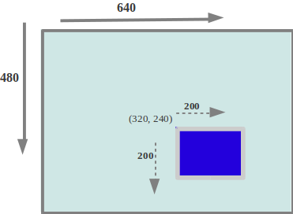
Začátek souřadné soustavy je v bodě (0, 0), který je umístěn v levém horním rohu okna. První souřadnice (x) určuje
sloupec, a roste zleva doprava. Druhá souřadnice (y) určuje řádek, a roste shora dolů. Takže např. v okně s šířkou 800
a výškou 600 pixelů jsou souřadnice rohů následující:
- Levý horní roh:
(0, 0) - Pravý horní roh:
(799, 0) - Levý dolní roh:
(0, 599) - Pravý dolní roh:
(799, 599)
Pokud je pro vás neintuitivní, že souřadnice y roste shora dolů (a ne zdola nahoru), můžete si ve vaší hře tuto souřadnici
virtuálně upravit a změnit si tak souřadný systém. V paměťové reprezentaci vaší hry můžete klidně používat souřadný systém,
kde y roste nahoru, a při vykreslování pomocí funkcí SDL pak akorát souřadnici y přepočítáte, aby odpovídala souřadnému
systému SDL. Tento přepočet lze provést jednoduše, stačí odečíst souřadnici y od výšky okna.
Nastavení barvy štětce
Pokud chceme v SDL něco vykreslit, tak musíme nejprve nastavit barvu, kterou se má kreslit. To můžeme udělat zavoláním
funkce SDL_SetRenderDrawColor, která bere (kromě kreslítka)
čtyři parametry (r, g, b, a). Parametry r, g a b odpovídají červené, zelené a modré komponentě barvy, kterou
chceme nastavit pro kreslení. Hodnoty těchto komponent lze nastavovat v rozsahu 0 až 255. Hodnota a odpovídá tzv.
alfa kanálu, který určuje průhlednost zvolené barvy. Obvykle průhlednost nemusíte řešit, a stačí tento parametr nastavit
na hodnotu 255.
Nastavená barva zůstane aktivní, dokud ji nezměníme. Pokud tedy chceme vykreslit např. pět různých věcí stejnou barvou, stačí barvu nastavit jednou, a poté vykreslit všechny požadované objekty.
Čáry
Čáru můžete nakreslit pomocí funkce SDL_RenderDrawLine. Ta bere
(kromě kreslítka) čtyři parametry (x1, y1, x2 a y2), které reprezentují souřadnice začátku a konce čáry.
SDL_RenderDrawLine(renderer, 100, 100, 200, 200);
Obdélníky
Nevyplněný obdélník můžete vykreslit pomocí funkce SDL_RenderDrawRect,
vyplněný obdélník poté pomocí funkce SDL_RenderFillRect. Tyto funkce
vyžadují předání adresy na hodnotu struktury SDL_Rect, která reprezentuje
obdélník. Pro vykreslení obdélníku tedy nejprve musíme vytvořit proměnnou typu SDL_Rect, nastavit jí pozici a rozměry,
a poté zavolat jednu z těchto dvou funkcí.
SDL_Rect rect = {
.x = 100,
.y = 200,
.w = 500,
.h = 200
};
SDL_RenderFillRect(renderer, &rect);
Datový typ SDL_Rect se hodí nejenom pro vykreslování obdélníků. Můžete jej použít také na reprezentaci pozice a rozměru
různých objektů ve své hře. SDL také nabízí funkce pro kontrolu toho, jestli se dva obdélníky protínají, např. pomocí
funkce SDL_HasIntersection. Díky tomu můžete použít tyto obdélníky
také na detekci kolizí (např. na zjištění, jestli projektil trefil hráče).
Datový typ SDL_Rect ukládá pozici a rozměry obdélníku pomocí datového typu int. Pokud byste potřebovali obdélník,
kde tyto atributy budou reprezentované desetinnými čísly, můžete použít SDL_FRect.
Obrázky
SDL má také samozřejmě podporu nejenom pro kreslení čar či obdélníků, ale také pro kreslení (bitmapových) obrázků
(které můžeme načíst např. ze souborů ve formátu PNG nebo JPEG). Ke kreslení však budeme muset využít dodatečnou knihovnu
zvanou SDL2_image, kterou poté musíme přilinkovat k našemu programu při překladu:
$ gcc main.c -omain -lSDL2 -lSDL2_image
Poté musíme na začátku souboru, kde chceme funkce pro načítání obrázků použít, vložit odpovídající hlavičkový soubor:
#include <SDL2/SDL_image.h>
Jakmile tohle uděláme, tak můžeme použít funkci IMG_LoadTexture,
která bere jako parametr kreslítko, a cestu k souboru na disku, ze kterého se má načíst obrázek, který poté budeme
vykreslovat:
SDL_Texture* image = IMG_LoadTexture(renderer, "image.png");
Z funkce se nám vrátí ukazatel na strukturu SDL_Texture, která reprezentuje
obrázek načtený v paměti grafické kartě, který je připravený k vykreslení.
Při načítání obrázků (stejně jako jakýchkoliv jiných souborů) bychom si měli dát pozor na to, abychom k němu udali správnou cestu. Měli bychom také zkontrolovat, jestli se obrázek správně načetl, tj. jestli funkce nevrátila hodnotu
NULL1. Kontrolu si můžeme usnadnit pomocí makraassert.1Pokud by funkce vrátila
NULL, a my bychom se poté snažili tuto hodnotu vykreslit jako obrázek, tak může dojít k nedefinovanému chování 💣. Proto bychom měli vždy kontrolovat návratovou hodnotu této funkce.
Jakmile máme obrázek správně načtený, tak jej můžeme vykreslit pomocí funkce SDL_RenderCopy.
Této funkci musíme předat kreslítko, obrázek, který chceme vykreslit a dva obdélníky (srcrect a dstrect).
Parametr srcrect určuje výřez z obrázku, který chceme kreslit. Pokud chceme obrázek vykreslit celý, tak pro parametr
srcrect předáme hodnotu NULL. Parametr dstrect určuje, do jakého výřezu (obdélníku v plátnu) se má obrázek vykreslit.
Zde bychom si měli dát pozor, aby cílový obdélník měl stejný poměr stran, jako náš obrázek, jinak po vykreslení může být
obrázek značně zdeformovaný.
SDL_Rect rect = {
.x = 100,
.y = 100,
.w = 400,
.h = 400
};
SDL_RenderCopy(renderer, image, NULL, &rect);
Užitečná je také funkce SDL_RenderCopyEx, která nám umožňuje vykreslit
obrázek, který je zarotovaný, případně zrcadlený podél vertikální či horizontální osy.
Jakmile přestaneme obrázek potřebovat, měli bychom jeho texturu uvolnit pomocí volání funkce SDL_DestroyTexture:
SDL_DestroyTexture(image);
Text
Další užitečnou funkcionalitou, kterou nám SDL nabízí, a která je potřeba pro většinu her či grafických aplikací, je
vykreslování textu. K tomu budeme opět vyžadovat dodatečnou knihovnu, která se jmenuje SDL2_ttf:
$ gcc main.c -omain -lSDL2 -lSDL2_ttf
Pro práci s touto knihovnou budeme opět muset vložit odpovídající hlavičkový soubor:
#include <SDL2/SDL_ttf.h>
a dále také zavolat inicializační funkci TTF_Init, kterou bychom měli
zavolat v programu někdy po zavolání funkce SDL_Init:
SDL_Init(SDL_INIT_VIDEO);
TTF_Init();
Abychom mohli při vykreslování znaků používat průhlednost, a aby byly vykreslované obrázky jednotlivých znaků pěknější,
je vhodné na kreslítku (SDL_Renderer) zapnout takzvaný Alpha blending, a také povolit lineární vzorkování pixelů.
Na začátek programu (těsně po vytvoření kreslítka) si tedy přidejte tyto dva řádky:
SDL_SetRenderDrawBlendMode(renderer, SDL_BLENDMODE_BLEND);
SDL_SetHint(SDL_HINT_RENDER_SCALE_QUALITY, "1");
Na konci programu bychom poté měli prostředky této knihovny opět uvolnit pomocí zavolání funkce TTF_Quit:
TTF_Quit();
Pro vykreslení nějakého textu budeme nejprve potřebovat nějaký (bitmapový) font,
ideálně ve formátu TTF. Můžete použít např. tento font nebo si nějaký font stáhnout z internetu.
Font určuje, jak budou vypadat jednotlivé znaky textu, který se bude vykreslovat na obrazovku. Jakmile máte připravený
soubor s fontem, můžete ho ve svém programu načíst pomocí funkce TTF_OpenFont:
TTF_Font* font = TTF_OpenFont("Arial.ttf", 20);
První parametr udává cestu k souboru s fontem, druhý parametr udává velikost, ve které se má font načíst. Až s fontem přestaneme pracovat (na konci programu), tak bychom jej měli opět uvolnit:
TTF_CloseFont(font);
Jakmile máme načtený font, tak můžeme do kreslítka vykreslit nějaký text. Můžeme k tomu využít následující funkci,
která vyžaduje kreslítko, načtený font, barvu v podobě struktury SDL_Color,
obdélník označující pozici, kam se má text vykreslit, a poté samotný text, který se má vykreslit, ve formě řetězce:
void sdl_draw_text(SDL_Renderer* renderer, TTF_Font* font, SDL_Color color, SDL_Rect location, const char* text)
{
// Vykreslení textu se zadaným fontem a barvou do obrázku (surface)
SDL_Surface* surface = TTF_RenderText_Blended(font, text, color);
// Převod surface na hardwarovou texturu
SDL_Texture* texture = SDL_CreateTextureFromSurface(renderer, surface);
// Vykreslení obrázku
SDL_RenderCopy(renderer, texture, NULL, &location);
// Uvolnění textury a surface
SDL_DestroyTexture(texture);
SDL_FreeSurface(surface);
}
Tato funkce nejprve vytvoří obrázek s vykresleným textem, a poté obrázek vykreslí do kreslítka, stejně jako kdybychom kreslili jakýkoliv jiný obrázek.
Tento kód je relativně neefektivní, neboť při každém vykreslení vytváří dva nové obrázky (surface a texture), a poté je hned uvolňuje. Pro jednoduché hry by to však neměl být výkonnostní problém.
Vstup
Aby naše hry či jiné SDL programy byly interaktivní, tak budeme muset reagovat na vstup od uživatele. Zejména se bude jednat o vstup z klávesnice (zmáčknutí klávesy) či myši (pohyb, zmáčknutí tlačítka, otočení kolečka).
Reakce na události operačního systému
V kapitole o herní smyčce už jsme si ukázali, jak můžeme číst události operačního systému. Jelikož se čtení událostí výrazně dotýká i vstupu od uživatele, tak si jej zde popíšeme více do detailu. Pro připomenutí, takto můžeme vyčíst všechny události, které nastaly od poslední iterace herní smyčky:
SDL_Event event;
while (SDL_PollEvent(&event)) {
// Zde můžeme pracovat s proměnnou `event`
}
Když se podíváte na dokumentaci struktury SDL_Event, tak tam najdete
různé typy událostí, ke kterým může dojít. Abyste zjistili, k jakému typu události došlo, musíte se podívat na
atribut type struktury SDL_Event. Tento atribut může nabývat hodnot, které jsou znázorněny v prvním sloupci
této tabulky. Jedná se například o následující typy událostí:
- Žádost o vypnutí aplikace
SDL_QUIT - Pohnutí myši
SDL_MOUSEMOTION - Zmáčknutí tlačítka myši
SDL_MOUSEBUTTONDOWN - Zmáčknutí tlačítka klávesnice
SDL_KEYDOWN
V programu byste poté měli mít podmínku, kterou zkontrolujete, jestli došlo k události, na kterou chcete zareagovat.
Uvnitř podmínky poté můžete přistupovat k atributu struktury SDL_Event, který odpovídá danému typu události. Název
tohoto atributu se dozvíte ve třetím sloupci zmíněné tabulky, a datový typ tohoto atributu poté najdete ve druhém sloupci.
Pokud by tedy např. došlo k události otočení kolečka myši (SDL_MOUSEWHEEL), tak poté můžete přistoupit k atributu
event.wheel, který bude mít typ SDL_MouseWheelEvent, a z tohoto
atributu si poté můžete vyčíst dodatečné informace o události:
if (event.type == SDL_MOUSEWHEEL) {
SDL_MouseWheelEvent wheel_event = event.wheel;
printf(
"Kolecko mysi se pohnulo o %d vertikalne a %d horizontalne\n",
wheel_event.y,
wheel_event.x
);
}
Kromě čtení událostí pomocí smyčky využívající funkce SDL_PollEvent můžeme také pomocí různých SDL funkcí kdykoliv v
programu získat současný stav myši či klávesnice. Oba dva přístupy nám přijdou vhod. Například, ve hře se můžeme kdykoliv
zeptat, jestli je zrovna zmáčknuté tlačítko myši. Pokud ale budeme chtít zareagovat na pohyb myši, tak spíše budeme chtít
dostat upozornění na to, že došlo k pohybu (pomocí čtení událostí), protože pohyb není vyjádřen současným stavem, ale spíše
změnou stavu (tedy událostí). Při popisu klávesnice i myši níže si tedy vždy ukážeme oba dva způsoby, jak vstup získat,
pomocí událostí i pomocí získání současného stavu.
Myš
U myši nás bude zajímat primárně její pozice, případně stav tlačítek. Můžeme ale také zjistit např. jestli uživatel otočil kolečkem.
Události
Následující události jsou užitečné pro práci s myší:
SDL_MOUSEMOTIONHráč pohnul s myší.- V atributech
event.motion.xaevent.motion.ypoté naleznete současnou pozici myši.
- V atributech
SDL_MOUSEBUTTONDOWN,SDL_MOUSEBUTTONUPHráč stisknul (DOWN) či uvolnil (UP) tlačítko myši.- V atributu
event.button.buttonnaleznete informace o tlačítku, které bylo zmáčknuto či uvolněno (např.SDL_BUTTON_LEFTneboSDL_BUTTON_RIGHT).
- V atributu
SDL_MOUSEWHEELHráč otočil kolečkem myši.- V atributu
event.wheel.ynaleznete hodnotu vertikálního posunu, v atributuevent.wheel.xpoté hodnotu horizontálního posunu.
- V atributu
Můžete si všimnout, že "kliknutí myši" je rozděleno na dvě události - stisknutí a povolení tlačítka. Pokud byste tedy chtěli ve své hře reagovat na opravdové "kliknutí" (třeba na nějaký herní objekt), a ne pouze na stisknutí tlačítka, tak si nejprve musíte zapamatovat, že uživatel tlačítko stisknul, a poté jej upustil (a obojí provedl nad stejným objektem).
Současný stav
Pokud bychom chtěli získat současný stav pozice a tlačítek myši, můžeme využít funkci SDL_GetMouseState.
Ta jako parametry bere ukazatele na čísla (souřadnice x a y), do kterých uloží současnou pozici myši. Souřadnice budou
relativní vzhledem k oknu, nad kterým se zrovna myš nachází, což je obvykle to, co chceme. Návratová hodnota této funkce
poté obsahuje číslo, jehož jednotlivé bity označují, která tlačítka myši jsou zrovna stisknuta. Stav tlačítek poté můžeme
zjistit pomocí makra SDL_BUTTON:
int x = 0;
int y = 0;
Uint32 buttons = SDL_GetMouseState(&x, &y);
int left = (buttons & SDL_BUTTON(SDL_BUTTON_LEFT)) != 0;
int right = (buttons & SDL_BUTTON(SDL_BUTTON_RIGHT)) != 0;
printf("Mouse is at (%d, %d). Left button: %d, right button: %d\n", x, y, left, right);
Klávesnice
U klávesnice nás bude zajímat zejména to, zda došlo ke stisknutí či uvolnění nějaké klávesy.
Události
U klávesnice jsou k dispozici události SDL_KEYDOWN (stisk klávesy)
a SDL_KEYUP (uvolnění klávesy). U obou událostí můžete přistoupit k
atributu event.key.keysym.sym, který obsahuje hodnotu datového typu SDL_Keycode,
která reprezentuje stisknutou klávesu. Seznam možných hodnot kláves, na které můžete reagovat, je k dispozici v třetím
sloupci této tabulky. Např. mezerník je reprezentován hodnotou SDLK_SPACE,
klávesa a hodnotou SDLK_a a šipka doprava hodnotou SDLK_RIGHT.
Zde je ukázka toho, jak můžeme zareagovat na stisk jednotlivých kláves:
if (event.type == SDL_KEYDOWN) {
SDL_Keycode code = event.key.keysym.sym;
if (code == SDLK_SPACE) {
printf("Uzivatel stisknul mezernik\n");
} else if (code == SDLK_RIGHT) {
printf("Uzivatel stisknul sipku doprava\n");
}
}
Reakce na události klávesnice se hodí pro případy, kdy chceme zareagovat na nějakou jednorázovou událost, např. když hráč
stiskne klávesu, která způsobuje vystřelení projektilu. Není však vhodné přímo využívat reakce na
události klávesnice pro zpracování kláves, které hráč bude typicky "držet", např. šipky pro pohyb postavy.
Pokud hráč klávesu bude držet stisknutou, operační systém sice vaší hře bude předávat pravidelně nové události typu
SDL_KEYDOWN, nicméně bude to dělat dost pomalu, v řádu jednotek událostí za vteřinu. To by znamenalo, že pokud byste
ve své hře přímo vyvolávali např. pohyb hráčovy postavy v reakci na událost stisknutí klávesy, tak by se postava pohybovala
trhaně.
if (event.type == SDL_KEYDOWN) {
// Toto je špatné řešení pohybu!
if (event.key.keysym.sym == SDLK_RIGHT) {
hrac.pozice.x += 10 * deltaTime;
}
}
Mnohem lepší řešení je použít následující přístup:
- Mít v paměti uložený současný stav stisknutých kláves. To můžete udělat buď pomocí funkce na
získání stavu klávesnice, nebo si můžete vytvořit proměnné, které si budou pamatovat stav kláves,
které vás zajímají, a poté aktualizovat jejich stav při čtení událostí. Pokud obdržíte událost
SDL_KEYDOWN, tak nastavíte stav klávesy nastisknuto, pokud obdržíte událostSDL_KEYUP, tak nastavíte stav nauvolněno. - V části herní smyčky, kde aktualizujete stav hry, se podíváte, jaký je stav kláves, a podle tohoto stavu uděláte danou akci (např. posunete postavou hráče). Díky tomu se bude pohyb provádět plynule (např. 60 za vteřinu). Zároveň bude také tento pohyb synchronizovaný s pohybem ostatních objektů hry, které nejsou ovládány klávesami.
Pokud použijete tento přístup, tak si musíte dát pozor na to, aby se některé akce neopakovaly vícekrát. Například, pokud budete při zmáčknutí klávesy vyvolávat nějakou jednorázovou akci (např. vystřelení projektilu), tak byste měli přidat do hry kontrolu, jestli od posledního vyvolání této akce uběhl dostatečný čas ("cooldown"). I když totiž uživatel zmáčkne klávesu velmi krátce, tak bude klávesa zmáčknutá pravděpodobně alespoň po dobu několika snímků! Pokud bychom tedy nekontrolovali čas od posledního vyvolání akce, tak by se akce provedla opakovaně, což nemusí být žádoucí. Pro počítání času, který ve hře uběhl, můžete použít delta čas, který si stačí v každé iteraci přičítat do nějaké proměnné, která si bude pamatovat, kolik už uběhlo ve hře času.
Současný stav
Pokud bychom chtěli získat současný stav všech kláves, můžeme využít funkci SDL_GetKeyboardState.
Tato funkce vrátí adresu pole, které můžeme indexovat pomocí hodnot datového typu SDL_Scancode.
Jednotlivé hodnoty můžeme naleznout v druhém sloupci této tabulky. Např.
mezerník je reprezentován hodnotou SDL_SCANCODE_SPACE, klávesa a hodnotou SDL_SCANCODE_A a šipka doprava hodnotou
SDL_SCANCODE_RIGHT. Pokud je hodnota na daném indexu klávesy v poli nenulová, tak to znamená, že je tato klávesa
zrovna stisknutá:
const Uint8* key_state = SDL_GetKeyboardState(NULL);
if (key_state[SDL_SCANCODE_SPACE]) {
printf("Prave ted je stisknut mezernik\n");
}
Chipmunk
Při tvorbě interaktivních grafických aplikací nebo her můžeme chtít simulovat pohyb objektů tak, aby
dodržoval fyzikální zákony (působení gravitace, tření a kolize objektů, pohyb lana atd.). K tomu
můžeme použít nějakou knihovnu na simulaci fyziky. Chipmunk je
knihovna pro simulování jednoduchých fyzikálních procesů ve 2D prostoru.
Zde se můžete podívat, co všechno se s takovou
knihovnou dá udělat.
Možná znáte hry jako Angry Birds nebo Fruit Ninja. Podobné typy her by se bez nějaké knihovny pro simulaci fyziky neobešly.
Instalace
Knihovna Chipmunk nenabízí distribuci již přeložených objektových souborů, musíme tedy její zdrojové soubory přidat k našemu projektu a přeložit je ručně.
Stáhněte si poslední verzi zdrojových kódů knihovny
z webu Chipmunku, rozbalte je a výslednou složku
(např. Chipmunk-X.Y.Z nebo ChipmunkLatest) přejmenujte na Chipmunk.
Dále můžete knihovnu přidat ke svému CMake projektu pomocí následující CMakeLists.txt souboru:
Ukázkový CMakeLists.txt soubor pro Chipmunk
cmake_minimum_required(VERSION 3.4)
project(physics)
# Parametr -pthread je nutný při použití této knihovny
set(CMAKE_C_FLAGS "${CMAKE_C_FLAGS} -pthread")
# Vložení adresáře Chipmunk
add_subdirectory(Chipmunk)
# Vytvoření programu
add_executable(physics main.c)
# Přidání knihovny k našemu programu
target_include_directories(physics PRIVATE Chipmunk/include/chipmunk)
target_link_libraries(physics chipmunk)
Chipmunk hello world
Stejně jako u SDL není v silách tohoto textu poskytnout kompletního průvodce touto
knihovnou. Pro to můžete použít manuál
nebo podrobnou dokumentaci funkcí.
Zde je okomentovaná ukázka "hello-world" příkladu, který simuluje pád sady kostek a vykresluje je pomocí SDL:
Okomentovaný program využívající knihovny Chipmunk a SDL
#include <chipmunk.h>
#include <SDL2/SDL.h>
#include <SDL2/SDL_image.h>
#include <assert.h>
#include <stdbool.h>
const int WIDTH = 800;
const int HEIGHT = 600;
int main() {
// Vytvoření SDL okna a kreslítka
assert(!SDL_Init(SDL_INIT_VIDEO));
SDL_Window* window = SDL_CreateWindow("Physics", 100, 100, WIDTH, HEIGHT, SDL_WINDOW_SHOWN);
SDL_Renderer* renderer = SDL_CreateRenderer(window, -1, SDL_RENDERER_ACCELERATED | SDL_RENDERER_PRESENTVSYNC);
// Načtení obrázku z disku
SDL_Texture* image = IMG_LoadTexture(renderer, "wood.jpg");
assert(image);
SDL_SetRenderDrawColor(renderer, 0, 0, 0, 255);
// Vytvoření prostoru, ve kterém bude probíhat fyzikální simulace
cpSpace* space = cpSpaceNew();
// Nastavení síly gravitace
cpSpaceSetGravity(space, (cpVect) { .x = 0, .y = -100.0f });
// Vytvoření země
cpShape* ground = cpSegmentShapeNew(
cpSpaceGetStaticBody(space),
(cpVect) { .x = 0, .y = 10},
(cpVect) { .x = WIDTH, .y = 10},
0
);
cpShapeSetFriction(ground, 1.0f); // Nastavení tření země
cpSpaceAddShape(space, ground); // Přidání země do světa
const float mass = 10.0f; // Váha kostky
const int dimension = 30; // Rozměr kostky
cpShape* boxes[10]; // Pole kostek
for (int i = 0; i < 10; i++) {
// Vytvoření těla kostky, které se bude hýbat
cpBody* body = cpBodyNew(mass, cpMomentForBox(mass, dimension, dimension));
// Přidání těla do prostoru
cpSpaceAddBody(space, body);
// Nastavení pozice kostky
cpBodySetPosition(body, (cpVect) {
.x = 100 + 5 * i,
.y = 40 + i * (dimension + 10)
});
// Vytvoření tvaru kostky, který bude použito pro detekci kolizí
cpShape* shape = cpBoxShapeNew(body, dimension, dimension, 1);
// Přidání tvaru do prostoru
cpSpaceAddShape(space, shape);
// Nastavení tření kostky
cpShapeSetFriction(shape, 1.0f);
boxes[i] = shape;
}
Uint64 last = SDL_GetPerformanceCounter(); // Počítání času vykreslování
float physics_counter = 0.0f; // Počítání času fyziky
float timestep = 1.0f / 60.0f; // Časový krok, o který se bude fyzika posouvat
bool quit = false;
while (!quit) {
SDL_Event event;
while (SDL_PollEvent(&event)) {
if (event.type == SDL_QUIT) {
quit = true;
}
}
Uint64 now = SDL_GetPerformanceCounter();
// Počet vteřin od poslední iterace herní smyčky
float delta_time_s = ((float)(now - last) / (float)SDL_GetPerformanceFrequency());
last = now;
// Odsimulování času fyziky
physics_counter += delta_time_s;
while (physics_counter >= timestep) {
cpSpaceStep(space, timestep); // Provedení jednoho časového kroku
physics_counter -= timestep;
}
SDL_RenderClear(renderer);
for (int i = 0; i < 10; i++) {
cpShape* shape = boxes[i];
cpBody* body = cpShapeGetBody(shape);
cpVect position = cpBodyGetPosition(body); // Získání pozice kostky
float angle_radians = cpBodyGetAngle(body); // Získání úhlu kostky (v radiánech)
float angle_deg = angle_radians * (180 / M_PI); // Převod na stupně
SDL_Rect rect = {
.x = position.x - dimension / 2,
.y = HEIGHT - (position.y + dimension / 2), // V Chipmunku jde Y nahoru, v SDL dolů, musíme jej vyměnit
.w = dimension,
.h = dimension
};
SDL_RenderCopyEx(renderer, image, NULL, &rect, -angle_deg, NULL, SDL_FLIP_NONE);
}
SDL_RenderPresent(renderer);
}
// Uvolnění prostředků
for (int i = 0; i < 10; i++) {
cpShape* shape = boxes[i];
cpBody* body = cpShapeGetBody(shape);
cpSpaceRemoveShape(space, shape);
cpSpaceRemoveBody(space, body);
cpShapeFree(shape);
cpBodyFree(body);
}
cpSpaceRemoveShape(space, ground);
cpShapeFree(ground);
cpSpaceFree(space);
SDL_DestroyTexture(image);
SDL_DestroyRenderer(renderer);
SDL_DestroyWindow(window);
SDL_Quit();
return 0;
}
Ukázka fungování programu:
Tento program spolu s CMakeLists.txt souborem a knihovnou Chipmunk si můžete stáhnout
zde. Přeložit a spustit ho můžete pomocí následujících příkazů:
$ mkdir build
$ cd build
$ cmake ..
$ make -j
$ cd ..
$ ./build/physics
Co dál?
C je relativně malý jazyk, pokud jste si tedy přečetli předchozí část tohoto textu, tak znáte většinu důležitých konstrukcí, která jsou v C dostupné. Nicméně neukázali jsme si úplně všechny – zde je seznam několika vybraných věcí, které byly buď moc pokročilé pro UPR anebo jsme je jednoduše nepotřebovali použít:
- Variadiacké funkce umožňují přijímat
libovolný počet parametrů (takto funguje například i nám známá funkce
printf). - Enumerace (enumerations) umožňují seskupit pojmenované konstanty.
- Sjednocené struktury (unions) umožňují interpretovat strukturu jako více různých datových typů.
- Bitová pole (bit fields) umožňují rozdělit paměť struktury na úrovni jednotlivých bitů.
- Široké znaky (wide chars) a s nimi související funkce standardní knihovny umožňují používat složitější kódování než ASCII.
- Komplexní čísla (complex numbers) vám umožní pracovat s datovými typy reprezentujícími komplexní čísla.
Pokud si chcete ověřit, jak jste na tom se znalostí jazyka C, projděte si tyto slidy. Pokud budete umět odpovídat jako blonďatý kluk, tak znáte základy jazyka C. Pokud budete umět odpovídat jako dívka s růžovými vlasy, tak už vás v jazyce C téměř nic nepřekvapí.
Co se dále naučit
Se znalostí samotného jazyka C souvisí i spousta dalších konceptů, se kterými se postupně musíte seznámit, pokud chcete opravdu dopodrobna pochopit, co přesně se v počítači děje, když spustíte vámi napsaný program. Poté můžete těchto znalostí využít k tvorbě robustnějších a rychlejších programů. Na následujících odkazech se můžete dozvědět například:
- Jak fungují operační systémy.
- Nebo dokonce jak si nějaký napsat od nuly.
- Jak komunikovat s jinými programy po síti.
- Jak psát programy přímo pomocí instrukcí procesoru
- Jak urychlit provádění programů:
- Pomocí vláken, které umí využít potenciál vícejádrových procesorů.
- Pomocí vektorových instrukcí, které umí pracovat s více než jednou hodnotou najednou.
- Pomocí pochopení architektury procesoru, která silně ovlivňuje výkon programů.
- Jak si napsat vlastní překladač či programovací jazyk.
- Jak si napsat vlastní databázi.
- Jak funguje počítačová grafika.
- Můžete si napsat vlastní 3D herní engine pomocí OpenGL.
- Jak si napsat program pro nějaké vestavěné (embedded) zařízení, například Arduino.
Různé
Tato sekce obsahuje různá témata a návody, které nezapadají do zbytku textu, ale je dobré o nich vědět.
Rozklad problému
Často se setkáte s tím, že dostanete k naprogramování úlohu, se kterou si nevíte rady a netušíte ani jak začít. Například:
Načti obrázek z disku, změň jeho velikost, ulož ho do jiného souboru a vykresli jej na obrazovku.
Tato úloha vypadá velmi jednoduše, když je zadaná větou (v češtině), ale obzvláště pro začínající programátory je obtížné převést takovouto úlohu do programovacího jazyka. Obecným pravidlem k usnadnění řešení složitých úloh je rozdělovat je na menší a jednodušší podúlohy tak dlouho, dokud se nedostaneme k podúloze, kterou již umíme vyřešit. Poté z těchto malých kousků, které máme vyřešené, zpětně poskládáme celý program, který vyřeší původní úlohu.
Například zmíněnou úlohu můžeme rozdělit na následující podúlohy:
- Načti obrázek z disku
- Otevři soubor se vstupním obrázkem
- Načti hlavičku obrázku
- Vytvoř paměť pro pixely obrázku
- Naalokuj dostatek paměti dle hlavičky (šířka x výška)
- Změň velikost obrázku
- Vytvoř obrázek s novým rozměrem
- Překopíruj původní obrázek do nového obrázku
- Projdi všechny pixely nového obrázku
- Projdi každý řádek
- Pro každý řádek projdi každý sloupec
- Pro každý pixel spočítej původní pozici pixelu
- Pro výpočet použij poměr šířky/výšky nového/starého obrázku
- Překopíruj pixel ze starého obrázku do nového
- Projdi všechny pixely nového obrázku
- Vrať nový obrázek
- Zapiš upravený obrázek
- Otevři soubor k zápisu
- Zapiš hlavičku obrázku do souboru
- Zapiš pixely obrázku do souboru
- Vykresli upravený obrázek
- Vytvoř okno pro vykreslení obrázku
- Překopíruj pixely obrázku do otevřeného okna
- Zobraz okno s obrázkem
Pomocí tohoto univerzálního postupu se dříve či později dostanete k (pod)úloze, kterou byste již měli umět vyřešit (např. otevření souboru). Jakmile danou podúlohu vyřešíte, tak budete o krok blíže k řešení původní složité úlohy.
Tímto způsobem můžeme programy rovnou od začátku začít psát. Například při řešení výše zmíněné úlohy můžeme začít nadefinováním hlavní logiky programu pomocí volání funkcí, kde každá funkce bude reprezentovat jednu podúlohu. I když funkce zatím nebudou naprogramované a později se třeba jejich název nebo rozhraní trochu změní, tak nám toto rozdělení může pomoct přemýšlet nad problémem abstraktněji, zorientovat s v něm a také získat naději, že se nám úlohu vůbec podaří vyřešit. Stejný princip opět můžeme použít při implementaci jednotlivých funkcí. Program (či funkci) pak lze přečíst jako větu a je tak jednodušší pochopit, co má vlastně dělat.
int main() {
// Načti obrázek
FILE* vstupni_soubor = otevri_soubor(...);
Img obrazek = nacti_obrazek(vstupni_soubor);
// Uprav jeho velikost
Img upraveny_obrazek = uprav_velikost_obrazku(&obrazek);
// Zapiš obrázek
FILE* vystupni_soubor = otevri_soubor(...);
zapis_obrazek(vystupni_soubor, &upraveny_obrazek);
// Vykresli obrázek
vykresli_obrazek(&upraveny_obrazek);
return 0;
}
Vyhodnocování výrazů
Abyste pochopili, co se děje, když váš program běží, a uměli ho odladit, tak je důležité, abyste si uměli myšlenkově "odsimulovat", co přesně procesor provádí, když vykonává příkazy vašeho programu. Asi nejlepším nástrojem pro tento účel je použití debuggeru, pomocí kterého můžete provádět váš program příkaz po příkazu a sledovat, jak se během toho měni jeho výstup a hodnoty v paměti.
Důležité je zejména vědět, jak fungují příkazy řízení toku a jak funguje vyhodnocování výrazů. Níže naleznete několik příkladů, které slouží k demonstraci toho, jak se postupně vyhodnocují výrazy v jazyce C.1
1Procesor ve skutečnosti s největší pravděpodobností nebude výrazy vyhodnocovat přesně tak, jak je zde ukázáno, ale mnohem efektivněji. Výsledek by však měl být stejný, proto se vyplatí umět vyhodnocovat výrazy "v hlavě", abychom si ověřili, že program dělá to, co očekáváme.
- Aritmetické operace a čtení proměnných
int a = 5; int b = 8; int c = 6; // Níže je rozepsané vyhodnocení výrazu `c = (a + b) * c + 1 - b` c = (a + b) * c + 1 - b; // c = (a + b) * c + 1 - b // c = (5 + b) * c + 1 - b // c = (5 + 8) * c + 1 - b // c = (13) * c + 1 - b // c = 13 * c + 1 - b // c = 13 * 6 + 1 - b // c = 78 + 1 - b // c = 79 - b // c = 79 - 8 // c = 71 // Hodnota proměnné c je nyní 71 - Volání funkcí
int foo(int a, int b) { int c = a + b; return c * 2 + b; } int main() { int x = 8; int y = foo(x, 5 + 2); // y = foo(x, 5 + 2) // y = foo(8, 5 + 2) // y = foo(8, 7) // y = 37 int z = foo(foo(x, x), foo(y, 1) + 8); // z = foo(foo(x, x), foo(y, 1) + 8) // z = foo(foo(8, x), foo(y, 1) + 8) // z = foo(foo(8, 8), foo(y, 1) + 8) // z = foo(40, foo(y, 1) + 8) // z = foo(40, foo(37, 1) + 8) // z = foo(40, 77 + 8) // z = foo(40, 85) // z = foo(40, 85) // z = 335 return 0; }
Generování náhodných čísel
Počítače jsou deterministické stroje, což znamená, že stejný program vždy na stejný vstup vrátí stejný výstup. Často ovšem chceme, aby naše programy obsahovaly prvky "náhody", když chceme například:
- Hodit si kostkou v deskové hře
- Udělit náhodný počet zranění v rozsahu zbraně
- Oživit hráče na náhodné pozici na mapě
Počítače samy o sobě opravdovou náhodu vytvořit nemohou, nicméně můžou ji simulovat pomocí tzv. pseudo-náhodných generátorů čísel (pseudo-random number generation).
Vygenerovat (pseudo-)náhodnou sekvenci čísel pomocí deterministických operací můžeme například následujícím algoritmem:
- Začneme s číslem
S, které se nazývá počáteční náhodná hodnota (random seed). - Aplikujeme nějakou matematickou operaci na
Sa vyjde nám nové čísloN. Npoužijeme jako vygenerované "náhodné číslo".- Nastavíme
S = N. - Opakujeme postup od bodu 2).
Ukázka kódu, který takovýto algoritmus implementuje:
int S = 5;
int vygeneruj_cislo() {
int N = S;
N = (5 * N + 3) % 6323;
N = (4 * N + 2) % 8127;
S = N;
return N;
}
int main() {
int r1 = vygeneruj_cislo(); // 114
int r2 = vygeneruj_cislo(); // 2294
int r3 = vygeneruj_cislo(); // 4348
int r4 = vygeneruj_cislo(); // 2971
int r5 = vygeneruj_cislo(); // 723
return 0;
}
Takovýto algoritmus bude generovat (nekonečnou) sekvenci čísel, která bude lidem připadat "náhodná" (bude těžké uhodnout, jaké číslo algoritmus vrátí příště).
Volba počáteční hodnoty S
Určite jste si všimli, že výše zmíněný algoritmus bude pokaždé generovat stejnou sekvenci čísel pro
stejné počáteční S. To se může hodit, chceme-li například mít možnost zpětně přehrát sekvenci
pseudo-náhodných čísel, například pro odladění chyby v programu. Nicméně pokud by sekvence byla pokaždé
stejná, tak o (pseudo-)náhodě nemůže být řeč.
Proto se obvykle hodnota seedu volí tak, aby při každém spuštění programu byla jiná. Přirozenou
volbou pro počáteční hodnotu S je tak například čas1 při spuštění programu. Lze ale také použít
například pohyby myši nebo stisky kláves, které nedávno na počítači proběhly.
1Ve formě UNIX časového razítka, tedy počtu vteřin uběhlých od 1. 1. 1970.
Pseudo-náhodný generátor ve standardní knihovně C
Při praktickém použití si obvykle nebudete psát generátor pseudo-náhodných sami, ale použijete již
hotové řešení. To nabízí například standardní knihovna C ve formě funkcí srand (nastav hodnotu
seedu) a rand (vygeneruj pseudo-náhodné číslo):
#include <stdlib.h>
#include <time.h>
int main() {
int cas = (int) time(NULL); // získej současný čas
srand(cas); // nastav S na současný čas
int cislo1 = rand(); // pseudo-náhodné číslo z intervalu [0, RAND_MAX]
int cislo2 = rand() % 100; // z intervalu [0, 99]
int cislo3 = rand() % 100 + 5; // z intervalu [5, 104]
float cislo4 = rand() / (float) RAND_MAX; // z intervalu [0.0, 1.0]
return 0;
}
Dynamicky rostoucí pole
V kapitolách o statických a dynamických polích jsme si ukázali, jak můžeme vytvořit paměť pro více proměnných uložených sekvenčně za sebou v paměti. Tato pole však měla vždy jedno omezení, protože jejich velikost se po jejich vytvoření nedala měnit. Jakmile však naše programy začnou být složitější, budeme si určitě chtít pamatovat více hodnot bez toho, abychom museli nutně dopředu vědět, kolik těchto hodnot bude. Například:
- Čteme řádky z textového souboru, a nevíme dopředu, kolik těch řádků bude.
- Chceme projít existující pole a vytáhnout z něj pouze ty prvky, které splňují nějakou vlastnost.
- Uživatel v naší SDL aplikaci kliká na obrazovku a my chceme na každém bodu kliknutí něco vykreslit.
Proto je vhodné naučit se vytvořit pole, které můžeme postupně naplňovat, a jehož velikost se může v čase zvětšovat. Takovému poli budeme říkat dynamicky rostoucí pole (dále pouze rostoucí pole). Tato datová struktura je tak užitečná a často využívaná, že se ve spoustě programovacích jazycích vyskytuje jako vestavěný stavební blok1.
1C++: std::vector, Java: ArrayList, C#: List, JavaScript: Array
Implementace
Rostoucí pole bude muset být naalokované na haldě, protože na zásobníku bychom nebyli schopni jeho velikost měnit, a museli bychom ji znát v době překladu, což by nám nepomohlo. Rostoucí pole bude fungovat zhruba takto:
- Naalokujeme na haldě dynamické pole s nějakou počáteční velikostí.
- Pole bude na začátku "prázdné", tj. nebudou v něm uloženy žádné validní hodnoty, ale bude obsahovat dostatečnou kapacitu na uložení nějakého počtu hodnot.
- Budeme do něj postupně přidávat prvky.
- Jakmile bude pole zcela zaplněné, tak jej zvětšíme, abychom udělali místo pro další prvky.
Zde je ukázka struktury, která bude implementovat rostoucí pole celých čísel (intů):
typedef struct {
int* data;
int pocet;
int kapacita;
} PoleIntu;
Pro implementaci budeme potřebovat minimálně tyto tři údaje:
data- ukazatel na data na haldě, která budou naalokovaná funkcímalloc.pocet- současný počet prvků v poli. Při práci s jakýmkoliv polem potřebujeme vždy vědět, kolik prvků v něm je. Abychom si tuto informaci nemuseli pamatovat někde bokem, dáme ji přímo do struktury rostoucího pole.kapacita- maximální počet prvků, které pole může obsahovat. Tato hodnota odpovídá tomu, pro kolik prvků jsme vyalokovali paměť funkcímalloc.
Nyní si ukážeme jak naimplementovat funkce, které budou s tímto polem pracovat.
Vytvoření pole
Pro vytvoření pole potřebujeme naalokovat paměť na haldě s nějakou úvodní kapacitou, kterou si můžeme
do funkce na vytvoření pole poslat jako argument:
void poleintu_vytvor(PoleIntu* pole, int kapacita) {
// Naalokujeme pamet na halde
pole->data = (int*) malloc(sizeof(int) * kapacita);
// Na zacatku je pole prazdne, takze je pocet prvku 0
pole->pocet = 0;
// Kapacita odpovida tomu, kolik je pole schopne udrzet prvku, nez mu dojde misto
pole->kapacita = kapacita;
}
Přidání prvku do pole
Při přidávání prvku do pole musíme daný prvek zapsat na první "volné" místo v poli. Na jaký index musíme prvek zapsat?
- Když je pole prázdné (
pocet = 0), tak zapíšeme nový prvek na index0:[?, ?, ?, ?] ^ - Když má pole jeden prvek (
pocet = 1), tak zapíšeme nový prvek na index1:[8, ?, ?, ?] ^ - Když má pole dva prvky (
pocet = 2), tak zapíšeme nový prvek na index2:[8, 4, ?, ?] ^
Počet prvků v poli tedy vždy přímo odpovídá indexu, na který bychom měli zapsat příští prvek.
Dejme tomu, že máme pole s kapacitou 4, s dvěma prvky (pocet je 2) a chceme do něj uložit
novou hodnotu 8. Tuto hodnotu musíme zapsat na index 2. A po zápisu prvku musíme také zvýšit
počet prvků v poli, protože jsme do pole vložili nový prvek!
[5, 4, ?, ?]
^
(pocet = 2)
[5, 4, 8, ?]
^
(pocet = 3)
V kódu by to mohlo vypadat takto:
void poleintu_pridej(PoleIntu* pole, int hodnota) {
// Zapiseme novy prvek na index dany soucasnemu poctu prvku
pole->data[pole->pocet] = hodnota;
// Zvysime pocet prvku o jednicku
pole->pocet += 1;
}
Zvětšení velikosti pole
Nicméně to samo o sobě nestačí. Co když je totiž pole už plné? V tom případě nesmíme zapsat hodnotu
do paměti na indexu pocet, protože bychom zapsali data mimo validní paměť a došlo by tak k
paměťové chybě 💣!
Pokud tedy dojde k situaci, že už je naše pole plné, tak jej nejprve musíme zvětšit. To můžeme udělat následujícím postupem:
- Naalokujeme nové, větší pole na haldě.
- Jakou velikost (kapacitu) zvolit pro nové pole? Pokud bychom zvyšovali velikost o
1, tak budeme muset pole zvětšovat při přidání každého prvku, což by bylo velmi neefektivní. Obvykle se kapacita rostoucích polí zdvojnásobí, díky čehož bude velikost růst exponenciálně a my tak nebudeme muset často velikost zvětšovat.
- Jakou velikost (kapacitu) zvolit pro nové pole? Pokud bychom zvyšovali velikost o
- Překopírujeme původní data ze starého pole do nového pole.
- Uvolníme paměť starého pole.
- Nastavíme ukazatel (
data) na nové pole na haldě.
V kódu by to mohlo vypadat např. takto:
// Pokud je pole plne
if (pole->pocet == pole->kapacita) {
// Zdvojnasobime kapacitu
pole->kapacita = pole->kapacita * 2;
// Naalokujeme nove pole s dvojnasobnou kapacitou
int* nove_pole = (int*) malloc(sizeof(int) * pole->kapacita);
// Prekopirujeme hodnoty ze stareho pole do noveho
for (int i = 0; i < pole->pocet; i++) {
nove_pole[i] = pole->data[i];
}
// Uvolnime pamet stareho pole
free(pole->data);
// Nastavime ukazatel na nove pole
pole->data = nove_pole;
}
Jelikož je tato funkcionalita v jazyce C relativně často používaná, standardní knihovna C obsahuje
funkci realloc, která toto zvětšení pole umí udělat za nás.
Kód výše tak lze zjednodušit:
if (pole->pocet == pole->kapacita) {
pole->kapacita = pole->kapacita * 2;
pole->data = (int*) realloc(pole->data, sizeof(int) * pole->kapacita);
}
Kompletní kód funkce na přidání prvku do rostoucího pole naleznete níže.
Smazání pole
Nesmíme samozřejmě zapomenout ani na to po sobě uklidit. Po skončení práce s polem bychom tedy měli jeho paměť smazat:
void poleintu_smaz(PoleIntu* pole) {
free(pole->data);
}
Celý kód dynamicky rostoucího pole intů můžete naleznout zde:
Dynamicky rostoucí pole intů
typedef struct {
// Ukazatel na data na haldě
int* data;
// Soucasny pocet prvku v poli
int pocet;
// Pocet prvku, ktery lze v poli maximalne mit.
// Maximalni hodnota, ktere muze nabyvat `pocet`.
int kapacita;
} PoleIntu;
void poleintu_vytvor(PoleIntu* pole, int kapacita) {
// Naalokujeme pamet na halde
pole->data = (int*) malloc(sizeof(int) * kapacita);
// Na zacatku je pole prazdne, takze je pocet prvku 0
pole->pocet = 0;
// Kapacita odpovida tomu, kolik je pole schopne udrzet prvku, nez mu dojde misto
pole->kapacita = kapacita;
}
void poleintu_pridej(PoleIntu* pole, int hodnota) {
// Pokud je pole plne
if (pole->pocet == pole->kapacita) {
// Zdvojnasobime kapacitu
pole->kapacita = pole->kapacita * 2;
// Naalokujeme nove pole s dvojnasobnou kapacitou a nastavime ukazatel na nove pole
pole->data = (int*) realloc(pole->data, sizeof(int) * pole->kapacita);
}
// Zapiseme novy prvek na index dany soucasnemu poctu prvku
pole->data[pole->pocet] = hodnota;
// Zvysime pocet prvku o jednicku
pole->pocet += 1;
}
void poleintu_smaz(PoleIntu* pole) {
// Smazeme dynamicke pole
free(pole->data);
}
Zobecnění pro více datových typů
Výše popsané pole je velmi užitečné, nicméně můžeme jej použít pouze s jedním datovým typem (int).
V našich programech si určitě budeme chtít ukládat do rostoucího pole více datových typů. Jak toho
můžeme dosáhnout?
Separátní kód pro každý datový typ
Asi nejjednodušší způsob je prostě vzít kód tohoto pole a zkopírovat jej pro každý datový typ, který
budeme chtít do pole ukládat. Takže nám vzniknou struktury PoleIntu, PoleCharu, PoleBoolu atd.
I když je tento způsob relativně jednoduchý na provedení (Ctrl + C, Ctrl + V a přejmenování názvů),
tak asi tušíte, že má řadu nevýhod. V našem programu by vznikla spousta kódu, který by byl silně
zduplikovaný a pokud bychom narazili na nějakou chybu, tak bychom ji museli opravit na více místech.
Tento opakující se kód by také pravděpodobně byl dost nepřehledný.
Můžeme si trochu pomoct využitím maker:
#define VYTVOR_LIST(nazev, typ)\
typedef struct {\
typ* data;\
int pocet;\
int kapacita;\
} nazev;
VYTVOR_LIST(PoleIntu, int)
VYTVOR_LIST(PoleFloatu, float)
Nicméně to má také své nevýhody (upravovat kód makra je relativně namáhavé) a pořád budeme mít separátní datovou strukturu pro každý datový typ.
Pole ukazatelů
Pokud se zamyslíme nad tím, proč nemůžeme použít PoleIntu pro libovolný datový typ, je to způsobeno
tím, že každý prvek v tomto poli má fixní velikost (sizeof(int), tedy pravděpodobně 4 byty). Do
tohoto pole tedy nemůžeme jednoduše ukládat prvky, které mají jinou velikost, což je problém.
Abychom tento problém obešli, můžeme vytvořit pole, jehož prvky budou mít také fixní velikost, ale
zároveň budou schopny poskytovat přístup k libovolné hodnotě libovolného datového typu. Toho můžeme
dosáhnout tak, že do pole nebudeme ukládat přímo hodnoty, které si chceme zapamatovat, ale pouze jejich
adresy. Vytvoříme tedy pole ukazatelů! Jelikož nevíme, s jakým datovým typem bude chtít uživatel toto
pole použít, tak nezvolíme pro typ ukazatele int* nebo např. float*, ale použijeme datový typ
"obecného" ukazatele, který prostě obsahuje adresu, ale neříká, co na dané adrese leží. Tím je typ
void*.
Strukturu pole bychom tedy mohli upravit takto:
typedef struct {
void** data;
int pocet;
int kapacita;
} RostouciPole;
Předtím jsme uchovávali ukazatel, v němž byla adresa, na které ležel datový typ int, proto byl typ
atributu data int*. Nyní uchováváme ukazatel, v němž bude adrese, na které bude ležet datový typ
void*, proto bude typ atributu data void**.
V paměti bude tedy pole vypadat cca takto:
// Predtim
[5, 8, 6, 4]
// Ted
5
^ 6
| ^
[|,|,|,|]
| |
| v
| 4
|
╰-> 8
Každý prvek pole bude mít fixní velikost (sizeof(void*), tedy pravděpodobně 8 bytů), a bude obsahovat
pouze adresu nějakého prvku (libovolného datového typu).
Když si tedy pole pamatuje adresy, odkud je vzít? Pokud bychom do pole dávali adresy např. lokálních proměnných, tak pravděpodobně brzy narazíme na problémy:
RostouciPole pole;
pole_vytvor(&pole, 10);
for (int i = 0; i < 10; i++) {
// Vloz do pole adresu promenne i
pole_pridej(&pole, &i);
}
- Lokální proměnná může zaniknout dříve, než pole. V ten moment bude adresa v poli neplatná a dojde k nedefinovanému chování 💣.
- V případě výše si ukládáme do pole adresu té stejné proměnné, takže všechny prvky v poli budou mít stejnou hodnotu.
- I pokud lokální proměnná bude existovat dostatečně dlouho, a budeme do pole ukládat adresy různých proměnných, tak pořád budeme mít problém v tom, že si budeme muset tuto proměnnou ukládat "někde bokem", protože v poli bude pouze její adresa. Tím nevyřešíme náš původní problém s pole rostoucí velikosti, pouze jej přesuneme jinam.
Z toho důvodu se nám vyplatí ukládat do pole takové adresy, jejichž životnost bude neomezená, a nebudeme se tak muset starat o to, jestli náhodou nejsou dealokovány moc brzy. Jinak řečeno, můžeme do pole ukládat paměť alokovanou na haldě.
Takovéto pole by pak šlo používat např. takto:
RostouciPole pole;
pole_vytvor(&pole, 10);
for (int i = 0; i < 10; i++) {
int* pamet = malloc(sizeof(int));
*pamet = i + 1;
pole_pridej(&pole, pamet);
}
for (int i = 0; i < 10; i++) {
int* pamet = (int*) pole->data[i];
printf("Prvek cislo %d: %d\n", i, *pamet);
}
pole_smaz(pole);
Při mazání pole bychom neměli zapomenout na uvolnění všech adres, které jsou v něm uloženy:
void pole_smaz(RostouciPole* pole) {
for (int i = 0; i < pole->pocet; i++) {
free(pole->data[i]);
}
free(pole->data);
}
V současné podobě lze funkci
pole_vlozšpatně použít. Pokud do ní dáme adresu, která nepochází z funkcemalloc, tak dojde k nedefinovanému chování při mazání pole. Zkuste navrhnout jinou verzi funkcepole_vloz, která nepůjde použít špatně, a která zajistí, že paměť bude vždy vytvořena na haldě. Můžete (musíte!) pro to změnit signaturu funkce.
Typová kontrola
U obecného rostoucího pole je třeba dávat si velký pozor na to, že do něj budeme vkládat a poté z něj
vybírat stejné datové typy! Tím, že používáme typ void*, tak nás překladač nebude upozorňovat na
práci s nekompatibilními datovými typy. Pokud do pole nejprve vložíte adresu intu, a poté se k této
adrese budete chovat, jako by to byla adresa např. floatu (float*), tak se váš program nebude
chovat správně!
Celý kód dynamicky rostoucího pole intů můžete naleznout zde:
Dynamicky rostoucí pole adres
typedef struct {
// Ukazatel na data na haldě
void** data;
// Soucasny pocet prvku v poli
int pocet;
// Pocet prvku, ktery lze v poli maximalne mit.
// Maximalni hodnota, ktere muze nabyvat `pocet`.
int kapacita;
} RostouciPole;
void pole_vytvor(RostouciPole* pole, int kapacita) {
// Naalokujeme pamet na halde
pole->data = (void**) malloc(sizeof(void*) * kapacita);
// Na zacatku je pole prazdne, takze je pocet prvku 0
pole->pocet = 0;
// Kapacita odpovida tomu, kolik je pole schopne udrzet prvku, nez mu dojde misto
pole->kapacita = kapacita;
}
void pole_pridej(RostouciPole* pole, void* adresa) {
// Pokud je pole plne
if (pole->pocet == pole->kapacita) {
// Zdvojnasobime kapacitu
pole->kapacita = pole->kapacita * 2;
// Naalokujeme nove pole s dvojnasobnou kapacitou a nastavime ukazatel na nove pole
pole->data = (void**) realloc(pole->data, sizeof(void*) * pole->kapacita);
}
// Zapiseme novy prvek na index dany soucasnemu poctu prvku
pole->data[pole->pocet] = adresa;
// Zvysime pocet prvku o jednicku
pole->pocet += 1;
}
void pole_smaz(RostouciPole* pole) {
for (int i = 0; i < pole->pocet; i++) {
free(pole->data[i]);
}
free(pole->data);
}
Pole bytů
Pole ukazatelů je relativně jednoduché na použití, ale má také nevýhody, hlavně co se týče plýtvání pamětí, protože musíme všechny hodnoty alokovat na haldě, a také s tím související neefektivitou.
Rostoucí pole můžeme navrhnout ještě jinak, pokud se k němu budeme chovat v podstatě jako k poli bytů, do kterých budeme byte po bytu kopírovat hodnoty, které v něm chceme ukládat. V této variantě bychom si ve struktuře ukládali pole bytů (znaků), a také velikost datového typu, který chceme do pole ukládat.
typedef struct {
// Pole bytů/znaků
char* data;
// Velikost datového typu
int velikost_prvku;
int pocet;
int kapacita;
} RostouciPole;
Při vkládání nového prvku pak stačí jeho byty nakopírovat do našeho pole, a při získávání prvku zase byty zpět vykopírovat na adresu, kterou poskytne uživatel:
void pole_pridej(RostouciPole* pole, void* adresa) {
if (pole->pocet == pole->kapacita) { /* zvetseni pole */ }
// Vypocteme cilovou adresu, která bude na "indexu" `pocet` * `velikost_prvku`
void* cil = pole->data + (pole->pocet * pole->velikost_prvku);
// Zapiseme na danou adresu vsechny byty nasi vkladane hodnoty
memcpy(cil, adresa, pole->velikost_prvku);
}
void pole_vrat(RostouciPole* pole, int index, void* adresa) {
// Vypocteme cilovou adresu, která bude na "indexu" `index` * `velikost_prvku`
void* zdroj = pole->data + (indexu * pole->velikost_prvku);
// Zapiseme na predanou adresu vsechny byty nasi ziskavane hodnoty
memcpy(adresa, zdroj, pole->velikost_prvku);
}
Aby toto řešení bylo plně korektní, museli bychom implementaci ještě rozšířit tak, aby brala v potaz zarovnání daného datového typu, jinak by se mohlo stát, že bude vložená hodnota v poli ležet na nezarovnané adrese.
Funkce main
Funkce main je speciální funkce, která se začne vykonávat při spuštění programu. Může vypadat
například takto:
int main() {
return 0;
}
Proč tato funkce vrací číslo (int) a proč se obvykle z této funkce vrací hodnota 0? Operační
systémy mají zavedenou konvenci, že každý spuštěný program by měl po svém vykonání vrátit číselnou
hodnotu, která systému napoví, jestli program proběhl úspěšně, nebo ne. Díky tomu pak lze relativně
jednoduše detekovat, jestli v programu nastala chyba, a případně na ni nějak zareagovat (z Windows
možná znáte dialog "Program neproběhl správně…").
Číslo, které vrátíte z funkce main, se použije právě jako návratová hodnota programu pro operační
systém. Význam navrácených čísel není nijak standardizován, jediné, co platí obecně, je, že hodnota
0 značí úspěch a jakákoliv jiná hodnota značí neúspěch. Proto tedy za normálních okolností z
mainu vracíme 0, abychom dali systému najevo, že program proběhl úspěšně.
Vstupní parametry funkce main
Funkce main je speciální ve více ohledech. Kromě formy bez parametrů, kterou jste viděli výše,
můžete main použít také takto, s dvěma parametry:
int main(int argc, char** argv) {
return 0;
}
První parametr je typu int a druhý parametr typu ukazatel na
řetězec. Do těchto parametrů se uloží hodnoty zadané při spuštění programu v
terminálu, tzv. argumenty příkazového řádku (command line arguments). Parametr argc
(argument count) bude obsahovat počet předaných argumentů a parametr argv obsahuje ukazatel na
první prvek pole C řetězců, kde každý řetězec bude obsahovat
jeden argument. Prvním argumentem je dle konvence vždy cesta k spustitelnému souboru programu,
který je právě spouštěn, další argumenty se nastaví podle zadaného textu v terminálu (argumenty
jsou oddělené mezerou).
Například, pokud program spustíte takto: ./program hello world, tak parametry funkce main budou
mít následující hodnoty:
argcbude obsahovat celé číslo3argv[0]bude obsahovat řetězec"./program"argv[1]bude obsahovat řetězec"hello"argv[2]bude obsahovat řetězec"world"
Parametry překladače
Překladač GCC obsahuje sadu několika stovek parametrů, pomocí kterých můžeme ovlivnit, jak překlad programu proběhne. Můžeme například určit, pro jaký procesor se mají vygenerovat instrukce, jakou variantu jazyka C má překladač očekávat nebo jestli má náš program zoptimalizovat, aby běžel rychleji.
Kromě GCC existuje řada dalších překladačů C, například Clang. Nejčastější parametry (jako je např.
-o) obvykle fungují ve všech překladačích obdobně, každý překladač ale obsahuje sadu specifických parametrů, které můžete naleznout v jeho dokumentaci.
Seznam všech parametrů můžete naleznout v
dokumentaci gcc, zde je uveden seznam
nejužitečnějších parametrů:
-
Optimalizace: Existuje spousta parametrů, pomocí kterých můžete ovlivnit, jak překladač převede váš zdrojový kód na strojové instrukce a jak je zoptimalizuje. Nejzákladnějším parametrem je
-O:-O0Nebudou použity téměř žádné optimalizace. Toto je implicitní nastavení, pokud ho nezměníte. Program v tomto stavu lze dobře krokovat, ale může být dost pomalý.-O1Aplikuje základní optimalizace.-O2Aplikuje nejužitečnější optimalizace. Pokud chcete získat rozumně rychlý program, doporučujeme použít tento mód. Díky němu může být program třeba až 1000x rychlejší než s-O0.11Anebo nemusí být rychlejší vůbec, záleží na programu.
-O3Aplikuje ještě více optimalizací. Program tak může být ještě rychlejší než s-O2. Obecně při použití optimalizací však platí, že čím vyšší optimalizační stupeň, tím více hrozí, že se váš program přestane chovat správně, pokud program obsahuje jakékoliv nedefinované chování. Je tak třeba dávat pozor na to, aby k tomu nedošlo.
Kromě parametru
-Olze použít spousty dalších parametrů, které ovlivňují například použití vektorových instrukcí. -
Ladění programu: Jak už jste jistě poznali, při použití jazyka C je velmi jednoduché způsobit nějaké nedefinované chování, například nějakou paměťovou chybou. Aby šlo tyto chyby detekovat, obsahují překladače tzv. sanitizery. Při použití sanitizeru se do vašeho programu přidají dodatečné instrukce, které poté při běhu programu kontrolují, jestli nedochází k nějakému problému. Cenou za tuto kontrolu je pomalejší běh programu (cca 2-5x). Sanitizery tak raději používejte pouze při vývoji programu.
Existuje více typů sanitizerů, my si ukážeme dva:
-fsanitize=addressPoužije tzv. Address Sanitizer, který hlídá paměťové chyby, například přístup k nevalidní paměti nebo neuvolnění dynamické paměti. Tento sanitizer je nesmírně užitečný a doporučujeme ho vždy používat při vývoji programů v C.-fsanitize=undefinedPoužije tzv. Undefined behaviour sanitizer, který hlídá dodatečné situace, při kterých může dojít k nedefinovanému chování (kromě paměťových chyb).
Obecně při ladění programu je taky vhodné vždy použít přepínač
-g. Ten způsobí, že překladač přidá do výsledného spustitelného souboru informace o zdrojovém kódu (ty jinak ve spustitelném souboru chybí). Díky tomu budou sanitizery schopny zobrazit konkrétní řádek, na kterém vznikl nějaký problém a také půjde program ladit a krokovat. -
Analýza kódu: Kromě sanitizerů, které kontrolují váš program za běhu, lze také spoustu chyb odhalit již při překladu programu. Bohužel překladač
gccv implicitním módu není moc striktní a některé vyloženě chybné situace vám promine a program přeloží, i když je již dopředu jasné, že při běhu pak dojde např. k pádu programu. Abychom tomu předešli, můžeme zapnout při překladu dodatečná varování (warnings), která nás mohou na potenciálně problematické situace upozornit:-WallZapne sadu několika desítek základních varování.-WextraZapne dodatečnou sadu varování.-WconversionZapne detekci situací, kdy implicitní konverze mezi různými datovými typy může způsobit nežádoucí nebo neočekávané chování. Pokud je chování detekované touto analýzou žádoucí, je třeba provést explicitní přetypování.-pedanticZapne striktní kontrolu toho, že dodržujete předepsaný standard C. V kombinaci s tímto přepínačem byste také měli explicitně říct, který standard chcete použít. V UPR používáme standard C99, který lze zadat pomocí-std=c99.-WerrorZpůsobí, že libovolné varování bude vnímáno jako chyba. Pokud tak v programugccnalezne jakoukoliv situaci, která vytvoří varování, program se nepřeloží.
Pokud chcete mít při překladu co největší zpětnou vazbu od překladače a zajistit co největší "bezpečnost" vašeho programu, doporučujeme používat tuto kombinaci přepínačů:
$ gcc -g -fsanitize=address -Wall -Wextra -Wconversion -pedantic -std=c99
Nedefinované chování
V těchto skriptech často zmiňujeme pojem nedefinované chování 💣 (undefined behaviour neboli UB). Tento mechanismus jazyka C je často těžko uchopitelný, a nemusí být jasné, proč jej vlastně tento jazyk obsahuje, a jak velké nebezpečí pro korektnost programů představuje. Tato kapitola se pokusí situaci trochu více osvětlit.
Příklady v této kapitole předpokládají znalost některých konstrukcí C, které jsou postupně vysvětlovány ve skriptech. Pokud jste se k těmto konstrukcím ještě nedostali a příkladům nerozumíte, tak se k nim vraťte později, až toho budete znát z C více.
Jazy C má svůj standard, což je dokument, který definuje, jaká jsou pravidla programů napsaných v C, a jakým způsobem se musí chovat překladače, aby C programy korektně přeložily. Tento dokument popisuje například jaké velikosti můžou mít datové typy, jak má fungovat volání funkcí atd. Zároveň ale také popisuje řadu situací, které jsou označeny jako nedefinované chování, odkud pochází název UB (undefined behaviour). Tím, že jsou tyto situace označeny jako nedefinované, tak překladače při překladu programu mohou předpokládat, že k nim nikdy nedojde.
Díky tomuto předpokladu jsou překladače schopny lépe optimalizovat C programy, a generovat tak efektivnější strojový kód1. Zároveň to ale znamená, že pokud programátor ve svém C programu takovouto nedefinovanou situaci vytvoří, tak budou porušeny předpoklady překladače, což znamená, že může dojít k tomu, že překladač náš program přeloží špatně. Pokud tedy ve vašem programu je situace způsobující UB, nemá žádný smysl bavit se o tom, co program dělá nebo co by mohl dělat. Program je prostě špatně z pohledu pravidel jazyka C, a překladač z něj může vygenerovat program, který provádí něco naprosto nesmyslného (nebo neprovádí vůbec nic). Problematické chování programů způsobené UB se projeví zejména, pokud překládáte program s optimalizacemi, nicméně to neznamená, že bez optimalizací je UB neškodné!
1Toto je také původní motivací, proč vůbec něco jako UB bylo vytvořeno - aby překladače mohly generovat efektivnější kód, díky tomu, že můžou spoléhat na více předpokladů o našich programech.
Někdy lze nedefinované chování detekovat již pomocí statické analýzy, kterou provádí kompilátor.
Velké množství statické analýzy, kterou kompilátor dokáže provést, ovšem není implicitně zapnuto,
a musíme je vynutit při překladu pomocí parametrů kompilátoru.
Při kompilaci je vhodné využívat alespoň parametry -Wall -Wextra -Wconversion -Wuninitialized.
Ne všechny situace způsobující nedefinované chování je ovšem možné zachytit statickou analýzou. Musíte se tak spolehnout na to, že budete pozorně zkoumat svůj kód, a případně využívat nástrojů, jako je Address sanitizer, Undefined behaviour sanitizer nebo Valgrind, které vám mohou pomoci detekovat následky přítomnosti UB ve vašich programech za běhu programu.
Příklad
Zde si ukážeme příklad UB způsobeného přístupem mimo validní paměť pole. Na tomto příkladu si můžeme ukázat, že přítomnost UB v našem zdrojovém kódu může způsobit kompletní rozklad programu, a že nemá smysl spekulovat nad tím, jak se program obsahující UB bude nebo nebude chovat.
V této funkci dochází k zjišťování, jestli se předaný argument nachází v poli čtyř čísel. V cyklu dochází k UB - naleznete jej?
int je_cislo_v_poli(int v) {
int table[4] = { 5, 13, 8, 12 };
for (int i = 0; i <= 4; i++) {
if (table[i] == v) return 1;
}
return 0;
}
Jedná se o přístup mimo pole, protože podmínka for cyklu je i <= 4, místo i < 4. Pokud uvidíte takovýto kód, může
vás napadnout, že při páté iteraci cyklu dojde k přístupu mimo paměť, možná se vyvolá
segmentation fault, ale pokud je funkce zavolána např. s argumentem
5, tak vlastně funkce proběhne "normálně". Není tomu tak! Tento program obsahuje UB, takže jej překladač může přeložit,
jak se mu zachce.
Například může dojít k tomuto:
- Překladač vidí, že
table[4]je UB, tj. k této situaci nikdy nemůže dojít. - Tím pádem
inikdy nemůže být4. - Pokud
inikdy nemůže být4, tak logicky nikdy nemůže být ani5(protože jinak by předtím muselo býti=4). - Jelikož
inemůže být5, tak smyčka je nekonečná, a jediný způsob, jak se může uvnitř smyčky funkce ukončit, je provedenímreturn 1;. - Tím pádem překladač funkci přeloží takto:
int je_cislo_v_poli(int v) { return 1; }
Zdá se vám to moc divoké? Přesně toto udělá překladač GCC, pokud takovouto funkci přeložíte s optimalizacemi.
Nicméně, neznamená to, že se takto program musí zachovat vždy. Kdybyste použili jiný překladač, jinou verzi stejného překladače, jiné parametry překladu nebo dokonce program prostě spustili vícekrát, pokaždé by se mohlo stát něco jiného. Nemá cenu řešit, jak se zachová program obsahující UB. Místo toho je nutné UB najít a z kódu odstranit :)
Které situace vedou k UB?
Neexistuje jednotný seznam, který by vyjmenovával všechny možné situace vedoucí k UB, nicméně zde je alespoň seznam běžně se vyskytujících problémových situací:
- Dělení nulou
- Čtení neinicializované paměti
U této situace si občas programátoři myslí, že když budou např. číst z neinicializované proměnné, tak program prostě
přečte nějaká "náhodná" data, která se zrovna vyskytují v paměti. To není pravda! Čtení neinicializované paměti je UB,
a tím pádem program může udělat cokoliv. Například:
Pokud tento program přeložíte s optimalizacemi, tak se celá funkce může zredukovat pouze na:int foo(int a) { int b; if (a == 5 || b == 6) { return 1; } return 2; }
Jak je to možné? Čtení neinicializované proměnné je UB, takže překladač klidně může předpokládat, žeint foo(int a) { return 1; }bbude vždy6, a tím pádem bude z funkce vždy vrácena jednička. - Chybějící
returnve funkci, která nevracívoid
Zde je UB, protože#include <stdio.h> int foo() {} int bar() { printf("bar\n"); }foonevrací hodnotu typuint. Když se podíváme, jak překladač může tuto funkci přeložit, tak se např. může stát to, žefoobude na stejné adrese jakobar, takže kdyby někdo zavolal funkcifoo, ve skutečnosti se začne provádět funkcebar! - Přetečení celého čísla se znaménkem
Čísla se znaménkem (např.
int) nesmí "přetéct", tj. dostat se přes svou nejvyšší hodnotu. Tato situace je v jazyce C UB. - Přístup mimo validní paměť Přístup mimo validní paměť (např. mimo rozsah pole) je klasický příklad UB.
- Dereference NULL ukazatele Toto je opět klasický příklad UB.
- Vícenásobné uvolnění dynamické paměti Viz Segmentation fault.
- Přístup k uvolněné dynamické paměti Viz Segmentation fault.
Provedení UB
UB způsobuje problémy "pouze" pokud je kód obsahující UB opravdu proveden za běhu programu. Přesněji řečeno, pokud se program kdykoliv dostane do stavu, že někdy v budoucnu nutně musí dojít k provedení UB (tj. například program je na řádku 5, UB je na řádku 8, ale mezi těmito řádky není žádný skok/podmínka/cyklus/něco, co by mohlo přerušit chod programu), tak v tento moment může UB způsobit problémy.
Například, v tomto konkrétním programu není chyba, protože UB (dělení nulou) na řádku 4 se nikdy neprovede.
int main() {
int a = 5;
if (a > 6) {
a / 0;
}
return 0;
}
Naproti tomu, v následujícím programu může dojít k nesmyslnému chování (nevypíše se nic na výstup, i když funkce dostane
nulu jako argument), i když samotné UB v ten moment vzniká až na řádku 5 / a:
#include <stdio.h>
int foo(int a) {
if (a == 0) {
printf("spatny vstup\n");
}
return 5 / a;
}
Proč? Protože překladač může předpokládat, že k dělení nulou nemůže nikdy dojít (protože dělení nulou je UB). Jelikož
nemůžeme dělit nulou, a ve funkci dochází k dělení a, tak a == 0 musí být nutně false! Tím pádem k výpisu nikdy
nemusí dojít, ani kdyby do funkce byl zaslán argument 0.
Více informací o UB se můžete dozvědět např. zde.
Tahák
Tato stránka obsahuje zkomprimované informace o všech důležitých syntaktických konstrukcích jazyka C, které budeme v UPR používat. Zejména ze začátku může být užitečná pro to, abyste si mohli rychle připomenout, jak v C zapsat nějaký konkrétní příkaz. Podobné taháky můžete naleznout také třeba zde nebo zde.
Základní program (učivo)
#include <stdio.h>
int main() {
// Radkovy komentar
/*
* Blokovy komentar
*/
printf("Hello world\n");
return 0;
}
Překlad a spuštění programu (učivo)
$ gcc main.c -g -fsanitize=address -o main
$ ./main
Základní výpis (učivo)
- Textu
printf("Ahoj UPR\n"); - Číselného výrazu
printf("Cislo: %d\n", <výraz>); printf("Cislo: %d\n", 1 + 2);
Proměnné (učivo)
- Vytvoření:
<datový typ> <název> = <výraz>;int vek = 18; - Užitečné datové typy:
int: celé číslo se znaménkemfloat: desetinné číslochar: znak
- Čtení (získání hodnoty proměnné):
<název proměnné>printf("%d\n", vek); int x = vek + 1; - Zápis (změna hodnoty proměnné):
<název proměnné> = <výraz>;vek = 42;
Výrazy (učivo)
- Sčítání:
a + b - Odčítání:
a - b - Násobení:
a * b - Dělení:
a / b - Zbytek po dělení:
a % b - Rovná se:
a == b - Menší než:
a < b - Menší nebo rovno než:
a <= b - Větší než:
a > b - Větší nebo rovno než:
a >= b - A zároveň:
a && b - Nebo:
a || b
Podmínky (učivo)
Podmínka (příkaz) if:
if (<výraz 1>) {
// Provede se, pokud je <výraz 1> pravdivý
} else if (<výraz 2>) {
// Provede se, pokud <výraz 1> není pravdivý, a <výraz 2> je pravdivý
} else {
// Provede se, pokud <výraz 1> není pravdivý, a <výraz 2> také není pravdivé
}
#include <stdio.h>
int main() {
int a = 10;
if (a > 5) {
printf("a je vetsi nez 5\n");
} else {
printf("a je mensi nebo rovno 5\n");
}
return 0;
}
Cykly (učivo)
-
Cyklus while
// <výraz> -> <tělo> -v // ^ | // ----------------- // Dokud je <výraz> pravdivý while (<vyraz>) { <telo> }#include <stdio.h> int main() { int a = 10; while (a > 0) { printf("a=%d\n", a); a = a - 1; } return 0; } -
Cyklus for
// <příkaz> -> <výraz 1> -> <tělo> -> <výraz 2> -v // ^ | // -------------------------------< // Dokud je <výraz 1> pravdivý for (<prikaz>; <vyraz 1>; <vyraz 2>) { <telo> }#include <stdio.h> int main() { for (int i = 0; i < 10; i++) { printf("i = %d, i * 2 = %d\n", i, i * 2); } return 0; }
Funkce (učivo)
- Deklarace
<datový typ> <název funkce>( <datový typ parametru 1> <název parametru 1>, <datový typ parametru 2> <název parametru 2>, … ) { // tělo } - Funkce, která nic nevrací
void vypis_text() { printf("Ahoj\n"); } - Funkce, která vrací hodnotu
int secti(int a, int b) { return a + b; } - Volání funkce
int main() { int c = secti(1, 2); return 0; }
Ukazatele (učivo)
- Vytvoření ukazatele
int* p = NULL; - Získání adresy proměnné
int a = 5; int* p = &a; - Dereference ukazatele
int a = 5; int* p = &a; printf("%d\n", *p);
Pole (učivo)
- Vytvoření pole na zásobníku
int arr[10] = {}; - Inicializace prvků pole
int arr[5] = {1, 2, 3, 4, 5}; - Čtení z pole
int druhy_prvek = arr[1]; - Zápis do pole
arr[1] = 1;
Dynamická paměť (učivo)
- Alokace proměnné na haldě
int* mem = (int*) malloc(sizeof(int)); - Alokace pole na haldě
int* mem = (int*) malloc(sizeof(int) * 10); - Uvolnění dynamické paměti
free(mem);
Řetězce (učivo)
- Vytvoření řetězce pro čtení (nelze modifikovat)
const char* text = "Hello UPR"; - Vytvoření řetězce na zásobníku (lze modifikovat)
char text[] = "Hello UPR"; - Vypsání řetězce
printf("%s\n", text); - Přístup k znaku řetězce
char c = text[1]; - Zjištění délky řetězce
#include <string.h> … const char* text = "Hello UPR"; int delka = strlen(text); - Porovnání dvou řetězců
#include <string.h> … const char* text1 = "Hello UPR"; const char* text2 = "Hello"; if (strcmp(text1, text2) == 0) { // Řetězce jsou stejné } - Převod textu na číslo
#include <stdlib.h> … const char* text = "123"; int cislo = strtol(text, NULL, 10);
Vstup (učivo)
- Načtení řádku
char buf[80]; fgets(buf, sizeof(buf), stdin); - Načtení formátovaného vstupu
int a; scanf("%d", &a);
Struktury (učivo)
-
Deklarace struktury
struct <název struktury> { <datový typ prvního členu> <název prvního členu>; <datový typ druhého členu> <název druhého členu>; <datový typ třetího členu> <název třetího členu>; … };typedef struct { const char* login; int age; } Student; -
Inicializace proměnné typu struktury
Student s = { .login = "BER0134", age = 29 }; -
Čtení členu
int age = s.age; -
Zápis členu
s.age = s.age + 1; -
Přístup k členu přes ukazatel
Student* p = &s; p->age = p->age + 1;
Soubory (učivo)
- Otevření souboru pro čtení
FILE* file = fopen("file.txt", "r"); // Textový mód FILE* file2 = fopen("file.txt", "rb"); // Binární mód - Otevření souboru pro zápis
FILE* file = fopen("file.txt", "w"); // Textový mód FILE* file2 = fopen("file.txt", "wb"); // Binární mód - Zavření souboru
fclose(file); - Textový zápis do souboru (vyžaduje textový mód)
fprintf(file, "%d", 1); - Textové čtení ze souboru (vyžaduje textový mód)
char row[80]; fgets(row, sizeof(radek), file); - Zjištění, jestli předchozí pokus o čtení vyústil v konec souboru
if (feof(file)) { … } - Binární zápis do souboru (vyžaduje binární mód)
int arr[5] = { 1, 2, 3, 4, 5 }; fwrite(arr, sizeof(int), 5, file); - Binární čtení ze souboru (vyžaduje binární mód)
int arr[5] = { 1, 2, 3, 4, 5 }; fread(arr, sizeof(int), 5, file);
Modularizace (učivo)
- Hlavičkový soubor
functions.h#pragma once int secti(int a, int b); - Zdrojový soubor
functions.c#include "functions.h" int secti(int a, int b) { return a + b; } - Zdrojový soubor
main.c#include <stdio.h> #include "functions.h" int main() { printf("%d\n", secti(1, 2)); return 0; } - Překlad
$ gcc -c functions.c $ gcc -c main.c $ gcc functions.o main.o -o main
Úlohy
V této sekci naleznete různé úlohy, které si můžete zkusit naimplementovat, abyste se zlepšili v programování.
Řešené úlohy
📹 K následujícím úlohám je k dispozici video, ve kterém je ukázané, jak dojít k řešení dané úlohy.
- Prohození dvou čísel [5:45]
- FizzBuzz [14:40]
- Počítání výskytů čísla [13:31]
Další úlohy
Další úlohy můžete najít také například na těchto odkazech:
Proměnné
K vyřešení těchto úloh by vám mělo stačit znát proměnné, datové typy a základní výpis výrazů.
Obvod a obsah obdélníku
Program bude mít jako vstup dvě proměnné (\( a \), \( b \)), které budou udávat velikosti stran obdélníku (hodnoty proměnných si nastavte na začátku programu). Podle známého vzorce (viz níže) poté program vypočítá a vypíše hodnoty obou stran, spolu s obvodem a obsahem obdélníku s danými délkami stran.
Ukázkový výstup
a = 200
b = 100
o = 600
S = 20000
Prohození dvou čísel
📹 K této úloze je k dispozici video [5:45] s popisem řešení.
Program prohodí hodnotu dvou proměnných. Na začátku programu budou dvě celočíselné proměnné (a a b) s libovolně
zvolenými hodnotami. Tyto proměnné budou na začátku programu vypsány na výstup.
Dále program prohodí hodnoty těchto dvou proměnných, tj. např. pokud proměnná a měla hodnotu
5 a proměnná b měla hodnotu 10, tak po prohození by měla proměnná a mít hodnotu 10 a proměnná b hodnotu 5.
Pro prohození použijte třetí proměnnou. Kód pro prohození dvou proměnných napište obecně - měl by fungovat pro libovolné
hodnoty proměnných a a b. Po prohození program opět obě proměnné vypíše.
Ukázkový výstup
a = 10
b = 50
a = 50
b = 10
Podmínky a cykly
K vyřešení těchto úloh by vám mělo stačit znát podmínky a cykly (a samozřejmě veškeré předchozí učivo).
Výpočet daně
Na začátku programu si vytvořte dvě celočíselné proměnné. První proměnná bude částku utracenou za nákup akcií v loňském roce. Druhá proměnná bude obsahovat současnou hodnotu průměrné mzdy v ČR. Poté vypočtěte daň, kterou je potřeba zaplatit za nákup akcií. Daň se vypočítává následovně:
- Pokud byly nakoupeny akcie za méně, než 100 000 Kč, tak se neplatí žádná daň.
- Pokud byly nakoupeny akcie za více, než 48násobek průměrné mzdy, tak se platí daň 23 %.
- Ve zbylých případech se platí daň 15 %.
Daň zaokrouhlete směrem k nule na celé číslo pomocí převodu z desetinné na celočíselnou hodnotu.
Po výpočtu daně vypište utracenou částku, průměrnou mzdu a výslednou hodnotu daně.
Ukázkové výstupy
utraceno = 10021
mzda = 41265
dan = 0
utraceno = 2000000
mzda = 41265
dan = 460000
utraceno = 150000
mzda = 41265
dan = 22500
Maximum ze tří čísel
Na začátku programu vytvořte tři celočíselné proměnné a nastavte do nich nějaké hodnoty. Poté napište kód, který nalezne maximum z těchto tří čísel, a vypíše jej na výstup.
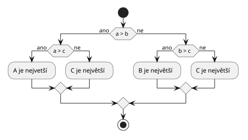
Ukázkový výstup
a = 10
b = 40
c = 20
maximum je 40
Výpis druhých mocnin čísel
Vypište všechna čísla od 0 do 20 (včetně), spolu s jejich druhou mocninou.
Ukázkový výstup
0 na druhou je 0
1 na druhou je 1
2 na druhou je 4
3 na druhou je 9
...
19 na druhou je 361
20 na druohu je 400
Výpis sudých čísel
Vypište všechna sudá čísla od 0 do 100 (včetně). Výsledný program by neměl mít více než ~15 řádků kódu.
Ukázkový výstup
0
2
4
...
98
100
FizzBuzz
📹 K této úloze je k dispozici video [14:40] s popisem řešení.
Naimplementujte program zvaný FizzBuzz1. Vypište čísla 1 až 100 tak, že:
1Tento program často bývá obsahem interview programátorů ve firmách.
- pokud je číslo násobkem 3, tak vypište místo čísla text
Fizz - pokud je číslo násobkem 5, tak vypište místo čísla text
Buzz - pokud je číslo násobkem 3 i násobkem 5, tak vypíše místo čísla text
FizzBuzz
Výstup programu
1
2
Fizz
4
Buzz
Fizz
7
8
Fizz
Buzz
11
Fizz
13
14
Fizz Buzz
16
...
Složitá varianta: Naimplementujte tento program bez použití podmínek. Nesimulujte ani podmínku
žádným cyklem. Použijte jediný cyklus for pro průchod čísly 1 až 100 a uvnitř tohoto cyklu nepoužijte
žádnou podmínku. K vyřešení této varianty budete potřebovat znát koncepty z pozdějších lekcí.
Textové kreslení obrazců
Napište program, který bude umět vykreslovat následující obrazce. Napište kód pro jejich vykreslování tak, aby počet řádků, na který se obrazec vykreslí (případně rozměry obrazce), byl jednoduše konfigurovatelný pomocí změny hodnoty jedné proměnné. Jinak řečeno, například pro změnu počtu řádků/sloupců vykresleného čtverce by mělo stačit změnit hodnotu jedné proměnné, zbytek kódu by měl zůstat stejný.
Vyplněný čtverec
xxxx
xxxx
xxxx
xxxx
Nevyplněný čtverec
xxxx
x x
x x
xxxx
Čtverec vyplněný rostoucími čísly
xxxxx
x012x
x345x
x678x
xxxxx
Diagonála
x
x
x
x
x
Trojúhelník
x
x x
xxxxx
Písmeno T
xxxxxxx
x
x
x
x
x
Písmeno H
x x
x x
x x
xxxxxxx
x x
x x
x x
Písmeno Z
xxxxxx
x
x
x
x
xxxxxx
Odrážející se kulička v terminálu
Vykreslujte do terminálu obdélník spolu s pohybující se kuličkou. Jakmile kulička narazí do stěny čtverce, zvyšte počítadlo nárazů pro danou zeď. Dodržujte princip zákonu odrazu.
Přibližný postup řešení
Kuličku reprezentujte dvěmi proměnými (pozice X a Y). Opakovaně provádějte následující akce:- Posuňte kuličku ve směru jejího pohybu.
- Pokud kulička narazí do stěny, změňte směr jejího pohybu.
- Vyčistěte terminál, aby zmizelo herní pole z minulé iterace. Lze to provést více způsoby:
- Vytiskněte velké množství prázdných řádků.
- Vytiskněte text
"\e[1;1H\e[2J", který terminál bude interpretovat jako vyčistění obrazovky.
- Vykreslete kuličku a obdélník.
- Uspěte na chvíli program, abyste mohli pozorovat změněný stav hry. Můžete použít například funkci
usleep:usleep(100 * 1000).
Výsledek by měl vypadat zhruba takto:
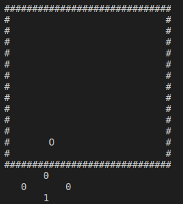
Vykreslování grafu funkce
Napište program, který dokáže vykreslit graf funkce. Graf vykreslujte do terminálu, není třeba
implementovat grafickou aplikaci. Využijte například znak | pro znázornění osy y, znak -
pro znázornění osy x, a + pro znázornění počátku. Pomocí znaku * můžete znázornit funkci
vlastního výběru.
Ukázka
Graf lineární funkce
|
| *
|
| *
|
| *
|
| *
|
| *
|
|*
|
*
|
*|
------------------------------+------------------------------
* |
|
* |
|
* |
|
* |
|
* |
|
* |
|
* |
|
Graf exponenciální funkce
| *
|
|
|
|
|
|
|
| *
|
|
|
| *
|
|*
*
******************************+------------------------------
|
|
|
|
|
|
|
|
|
|
|
|
|
|
Tipy
- Zvolte si fixní šířku a výšku grafu, aby se graf vešel do rozumně velkého okna terminálu (v ukázkách je využita velikost 61x31).
- Funkci vykreslujte jen pro celé hodnoty
x(graf tedy bude nespojitý). - Experimentujte s funkcemi a zkuste vykreslit grafy různých funkcí (např. logaritmus, exponenciální funkce, kvadratická a kubická funkce, ...).
- Pro výpočet funkcí lze využít matematickou knihovnu
math.h, která je součástí standardní knihovny jazyka C. Knihovnu je ovšem potřeba při kompilaci explicitně slinkovat přepínačem-lm, který pouze předáte kompilátoru (gcc main.c -o main -lm). - Nehledejte v úloze zbytečnou komplexitu. Nejjednodušší variantu úlohy (viz ukázka) lze
naprogramovat na 30 řádků za využití dvou cyklů, podmínek a parametrické rovnice přímky
(
y = ax + b).
Složitější varianta
Zkuste graf vykreslovat spojitě. Využít můžete například Bresenhamům algoritmus pro vykreslení přímky.
Nebo zkuste vykreslování grafů implementovat jako interaktivní terminálovou aplikaci. Využít lze například knihovnu ncurses, nebo přímo ANSI escape sekvence. Aplikace může umožnit panning (posouvání doleva, doprava, nahoru a dolů) a zooming (změná škály souřadnicových os).
Interaktivní aplikace by také mohla na okrajích okna znázorňovat, na jaké souřadnice se uživatel
dívá (ať se při procházení grafu neztratí) a aktuální úroveň přiblížení, a implementovat klávesovou
zkratku pro reset náhledu na graf (vycentrování počátku a nastavení zoomu na 1.0).
Pokud si chcete s úlohou opravdu vyhrát, můžete také naprogramovat možnost zadat vlastní funkci za běhu programu. Toho lze dosáhnout jak manuálním parsováním uživatelského vstupu, tak embeddováním nějakého skriptovacího jazyka (např. Lua) do svého programu, a umožněním uživateli naprogramovat si vlastní, libovolně složitou funkci (využívající například podmínky, atp.). Fantazii se meze nekladou.
Složitější varianta není vhodná pro úplné začátečníky.
Funkce
K vyřešení těchto úloh by vám mělo stačit znát funkce (a samozřejmě veškeré předchozí učivo).
Maximum
Napište funkci max, která přijme dva celočíselné argumenty a vrátí větší z nich.
Ukázka použití funkce
printf("%d", max(0, 0)); // Vypíše 0
printf("%d", max(1, 5)); // Vypíše 5
printf("%d", max(2, -3)); // Vypíše 2
Výpočet daně (funkce)
Naimplementujte úlohu Výpočet daně pomocí funkce vypocti_dan. Funkce dostane
částku utracenou za nákupy akcií a průměrnou mzdu, a vrátí vypočtenou daň ve formě celého čísla.
Ukázka použití funkce
printf("Dan=%d", vypocti_dan(10021, 41265)); // Vypíše Dan=0
printf("%d", vypocti_dan(10412, 41265)); // Vypíše 1561
printf("%d", vypocti_dan(2000000, 41265)); // Vypíše 460000
int dan = vypocti_dan(100000, 40000) + vypocti_dan(200000, 38000);
// dan bude 45000
Textové kreslení obrazců (funkce)
Naimplementujte úlohu Textové kreslení obrazců pomocí funkcí. Pro
každý typ obrazce udělejte separátní funkci, která obdrží parametry nutné pro vykreslení daného obrazce, a vykreslí jej
na výstup pomocí znaku x.
Parametry můžou být např:
- délka strany pro funkci
ctverec - délka dvou stran (šířka × výška) pro funkci
obdelnik - délka a směr diagonály pro funkci
diagonala
Ukázka použití funkce
ctverec(4); // Vykreslí:
// xxxx
// xxxx
// xxxx
// xxxx
obdelnik(2, 3); // Vykreslí:
// xx
// xx
// xx
obdelnik(3, 1); // Vykreslí:
// xxx
Fibonacciho číslo
Napište funkci fibonacci, která vypočte n-té Fibonacciho číslo
(n bude parametrem funkce).
Ukázka použití funkce
printf("%d", fibonacci(0)); // Vypíše 0
printf("%d", fibonacci(1)); // Vypíše 1
printf("%d", fibonacci(2)); // Vypíše 1
printf("%d", fibonacci(3)); // Vypíše 2
printf("%d", fibonacci(4)); // Vypíše 3
printf("%d", fibonacci(5)); // Vypíše 5
printf("%d", fibonacci(6)); // Vypíše 8
Faktoriál
Napište funkci factorial, která vypočte faktoriál předaného
parametru.
Ukázka použití funkce
printf("%d", factorial(0)); // Vypíše 1
printf("%d", factorial(1)); // Vypíše 1
printf("%d", factorial(4)); // Vypíše 24
printf("%d", factorial(5)); // Vypíše 120
Ukazatele
K vyřešení těchto úloh by vám mělo stačit znát ukazatele (a samozřejmě veškeré předchozí učivo).
Nastavení maxima
Vytvořte funkci set_max, která přijme adresu celého čísla (int) pomocí ukazatele a dvě další
čísla a nastaví paměť na dané adrese na větší ze dvou zadaných čísel.
int res;
set_max(&res, 5, 6);
// res == 6
Prohození hodnoty
Vytvořte funkci swap, která přijme dva ukazatele a prohodí hodnoty proměnných, na které ukazují.
int a = 5, b = 6;
swap(&a, &b);
// a == 6, b == 5
Výpočet kořenů kvadratické rovnice
Vytvořte funkci quadratic_roots, která vrátí počet kořenů kvadratické rovnice \( ax^2 + bx + c = 0 \) pomocí return a vypočítané kořeny vrátí pomocí předaných ukazatelů v argumentech funkce.
int quadratic_roots(float a, float b, float c, float *x1, float *x2);
Počet kořenů lze zjistit vypočítáním diskriminantu \( D = b^2 - 4ac \).
Pokud vyjde diskriminant záporný, tak funkce vrátí nulu, protože žádné řešení v \( \mathbb{R} \) neexistuje.
Pro nulový diskriminant funkce vrátí 1 a uloží dvojnásobný kořen na adresu ukazatelů x1, x2.
Pro kladný diskriminant funkce vrátí 2 a vypočítá kořeny pomocí:
$$ x_{1, 2} = \frac{-b \pm \sqrt{D}}{2a} $$
Pole
K vyřešení těchto úloh by vám mělo stačit znát pole (a samozřejmě veškeré předchozí učivo).
Naplnění pole
Vytvořte funkci fill_array, která naplní pole array čísly zvětšujícími se po přírůstku increment a
začínajícími od hodnoty start.
void fill_array(int* array, int len, int start, int increment);
Níže je interaktivní diagram znázorňující, jak má vypadat pole po provedení funkce. Jednotlivé argumenty volané funkce můžete v diagramu měnit.
Počítání výskytů čísla
📹 K této úloze je k dispozici video [13:31] s popisem řešení.
Vytvořte funkci num_count, která spočítá a vrátí počet výskytů čísla num v poli array.
int num_count(int* array, int len, int num);
Níže je interaktivní animace, která zobrazuje průběh programu.
Počítání čísel v intervalu
Vytvořte funkci in_interval, která spočítá počet čísel z uzavřeného intervalu [from, to] v poli
array.
int in_interval(int* array, int len, int from, int to);
Níže je interaktivní animace, která zobrazuje průběh programu.
Průměrná hodnota
Vytvořte funkci average, která spočítá průměr čísel v poli array.
double average(int* array, int len);
Při dělení nezapomeňte přetypovat alespoň jeden operand na typ double, aby nedošlo k
celočíselnému dělení. Pokud bude pole prázdné, vraťte hodnotu 0.0.
Minimální hodnota v poli
Vytvořte funkci, která v poli array nalezne minimální hodnotu.
int array_min(int *array, int len);
Níže je interaktivní animace, která zobrazuje průběh programu.
Následně funkci upravte, aby funkce vrátila pomocí ukazatele poslední index v poli, na kterém je minimální hodnota daného pole.
int array_min(int *array, int len, int *min_index);
Minimální a maximální hodnota
Předchozí funkci upravte, aby hledala minimum a maximum zároveň.
Nalezené extrémy vraťte pomocí ukazatelů min a max.
void min_max(int* array, int len, int *min, int *max);
Ve funkci si nejprve nastavte index minimální a maximální hodnoty na nultý prvek.
Parametr min je ukazatel, a je tedy nutné přistupovat k jeho hodnotě pomoci dereference - *min,
protože výraz min obsahuje pouze adresu, kde je minimální index uložen. Následně projděte
pole a pokud bude hodnota aktuálního prvku menší než hodnota prvku na dosud nalezeném indexu,
nastavte hodnotu minimálního indexu na aktuální index. Stejný postup aplikujte i pro nalezení
maximálního prvku (stačí udělat jeden průchod polem).
Obrácení pole
Vytvořte funkci array_reverse, která obrátí prvky v poli.
void array_reverse(int* array, int len);
Pole projděte pomoci cyklu do jeho půlky a vždy prohazujte prvky z obou konců.
Níže je interaktivní animace, která zobrazuje průběh programu.
Přehození dvou prvků nemůžete udělat najednou. Uložte si například prvek z levého konce do proměnné
a následně do tohoto prvku zapište hodnotu z pravého konce. Poté hodnotu z proměnné uložte do pravého
konce. Alternativně také můžete využít dříve naimplementovanou funkci
void swap(int* a, int* b).
Skalární součin
Vytvořte funkci dot, která spočítá
skalární součin dvou vektorů.
int dot(int* a, int* b, int len);
Načtení dynamického počtu hodnot
Načtěte od uživatele číslo n. Poté naalokujte paměť o velikosti n intů a
načtěte ze vstupu n čísel, které postupně uložte do vytvořeného pole. Vypište součet načteného
pole.
Třízení
Naimplementujte funkci, která setřídí pole. Můžete použít například algoritmus bubble sort.
Counting sort
Vygenerujte pole 10 000 000 náhodných čísel z intervalu \( \langle 1000, 2000 \rangle \). Pomocí algoritmu counting sort seřaďte čísla v poli od nejmenšího po největší.
- vytvořte pole počítadel pro všechny možné hodnoty v poli
- vynulujte počitadla na 0
- sekvenčně projděte pole čísel a inkrementujte odpovídající počítadlo
- projděte pole počítadel a tiskněte hodnotu tolikrát, kolik je hodnota počítadla
PvP bitevní hra
Vytvořte simulaci PvP bitevní hry dle vašich představ. Hra bude simulována dle náhody v herních kolech dle následující kostry programu:
while(nepratele_nebo_hrac_nazivu()) {
// zvolim si nepritele
// zautocim na nej a sebere mu zivoty
// nepritel zautoci na me a sebere mi zivoty
// smazani terminalu
printf("\e[1;1H\e[2J");
// nove vykresleni
// uspani na 500 ms
usleep(500 * 1000);
}
Životy nepřátel reprezentujme pomocí pole čísel a na začátku hry jim náhodně přiřaďme čísla z intervalu např. 150 - 400. Hrdinovi životy vygenerujme obdobně - využijte tedy funkci pro vygenerovaní životů, ať zbytečně nekopírujeme kód. Obdobně můžeme také vytvořit pole štítů a zbraní. Konkrétního nepřítele můžeme vybrat pomocí několika strategií - každá může být naimplementovaná ve funkci přijímající pole životů/štítů/zbraní a počet nepřátel. Funkce pak může vracet index vybraného hrdiny na kterého zaútočíme.
- vybrat nepřítele náhodně
- vybrat nepřítele s nejmenším počtem životů
- vybrat nepřítele s nejmenším počtem životů a štítu
- vybrat nepřítele s nejslabší zbraní
Po zaútočení ubereme nepříteli životy a zajistíme, aby nemohly být záporné - například pomocí ternárního výrazu. Pokud má však štít, tak musíme mu nejprve ubrat životy ze štítu a poté z životů.
Zraněný nepřítel poté zaútočí na nás a odebere nám štít či životy - použijme funkci ať nekopírujeme kód.
Poté naimplementujeme funkci v podmínce cyklu - funkce bude vracet TRUE, pokud je hrdina naživu a zároveň je naživu alespoň jeden nepřítel.
Hru můžeme dále vylepšit o:
- critical damage 4%
- pokud vygenerujeme číslo z rozsahu 0-99 a hodnota bude menší než např. 4, tak zaútočíme s dvojnásobným poškozením
- degradace zbraní
- po každém útoku se poškozeni zbraně zmenší o 5%
- inventář zbraně hrdiny
- hrdina bude mít několik zbraní
- po každém útoku si hrdina vymění zbraň za následující v inventáři
- realizujte to posunováním zbraní v inventáři
- zazálohujeme si nultý prvek v poli do proměnné
- první prvek nakopírujeme do nultého prvku
- druhý prvek nakopírujeme do prvního prvku atd
- následně na poslední index uložíme hodnotu zazálohovanou v proměnné
- alternativně si pamatujte index aktuální zbraně a ten inkrementujeme
- pokud bude index vetší nebo roven počtu prvků, tak jej vrátíme opět na začátek
- můžeme elegantně také využít operátor zbytku po dělení - tím nám odpadne podmínka či ternární výraz
- realizujte to posunováním zbraní v inventáři
- prohazování zbraní dvou nepřátel po každém útoku
- náhodné uzdravování a postupná regenerace štítu
Rámečky můžeme kreslit pomocí Unicode znaků - stačí je jenom zkopírovat a vložit do printf.
Barvy v terminálu můžeme měnit pomocí escape sekvencí:
#define RESET "\x1B[0m"
#define RED "\x1B[31m"
#define GREEN "\x1B[32m"
#define YELLOW "\x1B[33m"
#define BLUE "\x1B[34m"
#define MAGENTA "\x1B[35m"
#define CYAN "\x1B[36m"
#define WHITE "\x1B[37m"
...
printf(RED "%d" RESET, hp_left);
Návrh hry také můžete později vylepšit pomocí struktury Player, která by obsahovala životy, štít a zbraně jednoho hráče po kupě.
Dvourozměrné pole
Vytisknutí matice
Vytvořte funkci print_matrix, která vypíše obrázek reprezentovaný
dvourozměrným (2D) polem.
void print_matrix(int* matrix, int rows, int cols);
Projděte matici po řádcích a sloupcích a vypište jednotlivé prvky.
Vykreslení hvězdice
Vytvořte funkci draw_star, která do 2D matice vykreslí hvězdici.
void draw_star(int* matrix, int rows, int cols);
X X X
X X X
X X X
X X X
XXX
XXXXXXXXXXX
XXX
X X X
X X X
X X X
X X X
Hvězdici můžete vykreslit do pole pomocí jediného cyklu. Zkuste vytvořit funkce na vykreslení dalších tvarů (čára, čtverec, kružnice, trojúhelník, …).
Násobení matice skalárem
Vytvořte funkci matrix_mul_scalar, která vynásobí každý prvek matice číslem k.
void matrix_mul_scalar(int* matrix, int rows, int cols, int k);
Násobení matice vektorem
Vytvořte funkci matrix_mul_vector, která vynásobí matici vektorem.
int* matrix_mul_vec(int* matrix, int rows, int cols, int *vec, int len);
Násobení matice maticí
Vytvořte funkci pro násobení matice \( A \) o rozměrech \( rows_1 \times cols_1 \) s druhou matici \( B \) o rozměrech \( rows_2 \times cols_2 \).
Funkce vrátí NULL v případě, že matice nepůjdou vynásobit např. v případě, že počet řádků první matice není shodný s počtem sloupců druhé matice.
Výslednou matici o rozměrech \( rows_1 \times cols_1 \) alokujte dynamicky.
Digitální hodiny
Vytvořme real-time digitální hodiny ukazující aktuální čas ve stylu 7-segmentových displejů.
Cifry hodin budeme vykreslovat do 2D matice realizované pomocí jednodimenzionálního pole. Jeden segmentový displej bude mít délku či výšku například 3 znaky. Mezi každou cifrou bude jeden znak volný. Na základě těchto parametrů vypočítáme potřebnou velikost 2D matice a následně alokujeme potřebnou paměť.
Pro čitelnější kód bude vhodné vytvořit následující funkci:
void screen_draw_pixel(char* screen, int width, int height, int x, int y, char c)
Tato funkce vykreslí znak c (mřížku nebo mezeru) na souřadnici [x, y].
Uvnitř funkce by také měla byt kontrola, zda se souřadnice nevyskytuje mimo vykreslovanou plochu pro rychlejší detekci případných chyb.
Segmenty jsou reprezentované vodorovnou či svislou čarou. Vytvoříme si funkci pro kreslení vodorovné čáry:
void screen_draw_hline(char* screen, int width, int height, int x, int y, int len)
V cyklu délky len budeme následně vykreslovat pixely pomocí dříve vytvořené funkce screen_draw_pixel.
Obdobně vytvoříme i funkci screen_draw_vline pro vykreslení vertikální čáry.
Následně si vytvoříme funkci, která nám vykreslí pro n-tou cifru segment s pomocí dříve vytvořených funkcí kreslení čár:
void screen_draw_segment(char* screen, int width, int height, int n, int s);
A poté si uděláme funkci pro vykreslení číslice num:
void screen_draw_num(char* screen, int width, int height, int n, int num);
Alternativně také můžeme obě funkce spojit do jedné a informaci o zobrazovaných segmentech zakódovat do bitů, kde na nejnižším bitu je jednička, pokud má svítit segment G. Díky této úpravě se nám kod zjednoduší.
// ABCDEFG
// 0 - 1111110
// 1 - 0110000
Po úspěšném otestování všech cifer si můžeme vytvořit nekonečnou smyčku a zobrazovat aktuální čas:
#include <time.h>
int main() {
char *display = ...;
for(;;) {
// vymazani terminalu
printf("\e[1;1H\e[2J");
// TODO: vykresleni aktualniho casu
time_t t = time(NULL);
struct tm *tm = localtime(&t);
printf("%d:%d:%d\n", tm->tm_hour, tm->tm_min, tm->tm_sec);
usleep(1000 * 1000);
}
}
Text
K vyřešení těchto úloh by vám mělo stačit znát řetězce a vstupně/výstupní operace (a samozřejmě veškeré předchozí učivo).
Převod na velké znaky
Vytvořte funkci, která převede textový řetězec na velké znaky.
char str[] = { "hello" };
uppercase(str);
// str by se zde měl rovnat "HELLO"
Nahrazení znaku
Vytvořte funkci, která v řetězci nahradí všechny výskyty daného znaku za znak 'X'.
char str[] = { "hello" };
replace(str, 'l');
// str by se zde měl rovnat "heXXo"
Šifrování řetězce
Vytvořte funkci, která "zašifruje" řetězec tím, že ke každému znaku přičte číslo (klíč). K ní vytvořte funkci, která řetězec opět odšifruje (odečtením klíče).
char str[] = { "abc" };
encrypt(str, 1);
// str by se zde měl rovnat "bcd"
decrypt(str, 1);
// str by se zde měl opět rovnat "abc"
Délka řetězce
Vytvořte funkci my_strlen, která vypočte délku řetězce (obdoba funkce
strlen ze standardní knihovny C).
my_strlen(""); // 0
my_strlen("abc"); // 3
my_strlen("abc 0 asd"); // 9
Porovnávání řetězců
Vytvořte funkci, která vrátí true, pokud jsou dva předané řetězce stejné.
Vytvořte i variantu funkce, která porovnává řetězce bez ohledu na velikosti znaků.
strequal("ahoj", "ahoj"); // 1
strequal("ahoj", "aho"); // 0
strequal_ignorecase("ahoj", "AhOj"); // 1
Palindrom
Vytvořte funkci, která vrátí true, pokud je předaný řetězec
palindrom (slovo, které se čte stejně zepředu i pozpátku).
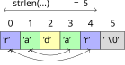
Histogram
Vytvořte funkci, která vypočte histogram znaků v řetězci.
Histogram je pole, ve kterém prvek na pozici x udává, kolikrát se znak x vyskytoval v daném řetězci.
int histogram[255] = {};
calc_histogram("aabacc", histogram);
// histogram['a'] == 3
// histogram['b'] == 1
// histogram['c'] == 2
// histogram['d'] == 0
Převod textu na číslo
Vytvořte funkci, která převede řetězec na číslo v desítkové soustavě. Pokud číslo nelze převést,
vraťte hodnotu 0.
convert("5"); // vrátí int s hodnotou 5
convert("123"); // vrátí int s hodnotou 123
Zkuste přidat i podporu pro záporná čísla.
Načítání PINu
Načtěte od uživatele PIN (4 číslice). Poté opakovaně vyzývejte uživatele k zadání PINu. Pokud
uživatel zadá 3x nesprávný PIN, vypište chybovou hlášku a ukončete program. Pokud uživatel zadá PIN správně,
tak vypište "Uspesne zadani PINu" a ukončete program.
Hádací hra (guessing game)
Vygenerujte náhodné číslo. Poté nechte uživatele hádat, jaké číslo program vygeneroval. Po každém tipu uživateli dejte vědět, jestli uhádl správně nebo jestli jeho tip byl vyšší či nižší než číslo, které hádá.
Kalkulačka
Načtěte ze vstupu programu nebo z parametrů příkazového řádku matematický
výraz, který bude obsahovat celá čísla a operátory +, -, /, * a vypište výsledek tohoto
výrazu.
- Varianta 1: Použijte klasický zápis v infixové notaci. Nemusíte řešit prioritu operátorů.
- Varianta 2: Přidejte podporu pro prioritu operátorů a závorky
(,). Použijte algoritmus Shunting yard. - Varianta 3: Použijte postfixovou notaci. Zde bude fungovat priorita operátorů a "závorkování" bez nutnosti složitého načítání vstupu z varianty 2.
Střelba na terč
Vytvořte program, který načte souřadnice terčů a střel, a vykreslí je do obrázku ve formátu vektorové grafiky SVG. Pokud si vygenerovaný SVG obrázek otevřete v internetovém prohlížeči, tak by se po najetí myši na terč mělo ukázat skóre vybraného terče.
Ze vstupu přečtěte počet terčů a následně si dynamicky alokujte 3 pole typu float pro x souřadnice terčů, y souřadnice terčů a poloměry terčů.
Poté pro každý terč přečtěte jeho x souřadnici, y souřadnici, poloměr a uložte je do
odpovídajících polí.
Například následující vstup nám popisuje 2 terče.
První terč má střed na souřadnici \( [50, 70 ] \) a poloměr \( 40 \) a druhý terč leží na středu \( [160, 90 ] \) s poloměrem \( 60 \).
2
50 70 40
160 90 60
Tento vstup nezadávejte pořad dokola z klávesnice, ale přesměrujte si jej do programu ze souboru:
$ ./main < terce.txt
Terče si pomocí printf vykreslete do vektorového obrázku ve formátu svg, ve kterém lze pomocí tagů definovat útvary.
Útvary v obrázku obalte tagem svg:
<svg xmlns='http://www.w3.org/2000/svg'>
<!-- kresleni kruhu -->
</svg>
Terč se středem \( [50, 70] \) a poloměrem \( 40 \) lze vykreslit pomocí:
<circle cx='50' cy='70' r='40' stroke='black' fill='red' />
Vytvořený SVG obrázek si ze standardního výstupu přesměrujte do souboru a otevřete si jej například v prohlížeči firefox.
$ ./main < terce.txt > obrazek.svg
$ firefox obrazek.svg
Následně si ze vstupu přečtěte počet střel a alokujte pro ně dvě pole - jedno bude reprezentovat x souřadnice a druhé y souřadnice jednotlivých střel.
Souřadnice si následně přečtěte do těchto polí.
Pole si projděte a vykreslete do obrázku jako kruhy např. s poloměrem \( 4 \).
Střela zasáhla terč, pokud leží na kruhu.
Jinými slovy - střela zasáhla terč, pokud je vzdálenost od středu terče menší než poloměr terče.
Vzdálenost vypočítáme jednoduše pomocí Pythagorovy věty, kde x odvěsna je rozdíl mezi x souřadnici středu terče a x souřadnici střely. Odvěsna y lze vypočítat obdobně a poté můžeme vypočítat přeponu, která reprezentuje vzdálenost střely od středu terče.
Protože máme více terčů a více střel, tak musíme aplikovat výpočet vzdálenosti mezi každou střelou
a každým terčem pomocí dvou vnořených for cyklů.
Vnější cyklus bude procházet střely a vnitřní cyklus bude procházet terče.
Ve vnitřním cyklu vypočítáme vzdálenost mezi střelou a terčem a pokud je menší než poloměr,
tak tento konkrétní terč byl zasažen střelou z vnějšího cyklu.
V případě, že se více kruhů překrývá, tak střela zasáhla terč s menším poloměrem.
Budeme tedy hledat zasáhnutý terč s nejmenším poloměrem.
Skóre při zasažení středu s poloměrem 20 je 10 bodů a body postupně klesají. Zdrojový kód SVG ukázek si můžete zobrazit.
Dva terče
2
50 70 40
160 90 60
4
25 70
80 90
150 100
55 140
Překrývající se terče
2
160 90 60
90 70 40
4
125 70
80 90
150 100
55 140
Překrývající se terče se stejným středem
3
50 70 40
160 90 60
160 90 40
7
25 70
80 90
55 140
125 60
140 130
150 100
215 100
Čištění chatu
Napište program, který transformuje cO0l zPráVy
 z chatu do čitelné podoby.
Zprávy jsou do našeho programu přesměrovány na standardní vstup - úkolem bude číst zprávy nebo části zprav po řádcích a provádět následující úpravy:
z chatu do čitelné podoby.
Zprávy jsou do našeho programu přesměrovány na standardní vstup - úkolem bude číst zprávy nebo části zprav po řádcích a provádět následující úpravy:
-
Odstranit bílé znaky (whitespace - mezera, tabulátor, ...) ze začátku a konce každého řádku
možné řešení:
- najít pozici prvního non-whitespace znaku
- překopírovat všechny znaky od této pozice na začátek pomocí vlastního cyklu nebo
strcpy,memcpyčimemmove - cyklem jít od konce řetězce a najít první non-whitespace znak
- uložit za něj nový konec
\0
-
Transformovat cO0L tExT do čitelné podoby
Každá věta začne velkým písmem a všechna ostatní písmena ve větě budou převedena na malá písmena. Věta je ukončena znakem
.,!nebo?.Např. si před cyklem vytvořit proměnnou indikující start nové věty. Cyklem projít všechny znaky a první písmeno věty zvětšit a zbytek zmenšovat. Tečka, otazník či vykřičník poté nastaví nastaví proměnnou indikující novou větu.
-
Nahradit opakující se znaků jedním výskytem
Např. si pamatovat proměnnou s předchozím znakem nebo porovnávat přímo předchozí znak - pozor abychom nepřistoupili před/za pole. Na velikosti písmen nebude záležet -
xXxxXxse také nahradí jednímx. Můžeme si udržovat dva indexy - jeden ve vstupním stringu a druhý ve výstupním stringu. Pokud se znak opakuje, tak jej nepřidáváme do výstupního stringu. -
Smazat smajlíky zapsané pomocí
:nazev:Procházíme znak po znaku a pamatujeme si, jestli jsme narazili na
:. Pokud ano, tak nepřidáváme znaky do výstupního stringu. Pokud nenarazíme na ukončovací:, tak text musíme do stringu přidat - viz ukázka v testu. -
Cenzurovat zakázaná slova pomocí hvězdiček
Každé slovo z pole blocklistu o velikosti
sizeof(blocklist) / sizeof(blocklist[0])zkusíme najít v řetězci. Pokud najdeme, tak celé slovo vyhvězdičkujeme a zkusíme hledat další výskyt od konce tohoto výskytu. Při hledání nebude záležet na velikosti písmen.const char *blocklist[] = { "windows", "mac", "c#", "fortnite", "php", "javascript", ".net", }; // blocklist[0] je "windows"
Překladač jazyka Brainfuck
Jazyk Brainfuck je velmi jednoduchý esoterický programovací jazyk obsahující pouze osm instrukcí, lineární paměť a adresu aktuální paměťové buňky. Jedna buňka odpovídá jednomu bytu.
- Instrukce
+inkrementuje hodnotu aktuální buňky. - Instrukce
-dekrementuje hodnotu aktuální buňky. - Instrukce
>inkrementuje adresu buňky (po inkrementaci ukazujeme na následující buňku). - Instrukce
<dekrementuje adresu buňky (po dekrementaci ukazujeme na předcházející buňku). - Instrukce
[uvozuje začátek cyklu. Cyklus probíhá, dokud hodnota buňky adresované v době vyhodnocování podmínky není nulová (adresovanou buňku můžeme měnit uvnitř cyklu). - Instrukce
]představuje konec těla cyklu. Jakmile program narazí na instrukce], zkontroluje hodnotu v aktuálně adresované paměťové buňce, a buď se vrátí zpět na odpovídající[, nebo je cyklus ukončen a vykonávání programu pokračuje prováděním instrukcí bezprostředně za cyklem. - Instrukce
,přečte jeden byte ze vstupu a uloží hodnotu do aktuálně adresované buňky. - Instrukce
.vypíše hodnotu aktuálně adresované buňky jako ASCII znak na standardní výstup.
Všechny ostatní znaky jsou ignorovány.
Program Hello, World! v jazyce Brainfuck může vypadat například následovně:
++++++++
[
>++++++++<-
]
>++++++++.>++++++++
[
>++++++++++++<-
]
>+++++.+++++++..+++.>++++++++
[
>+++++<-
]
>++++.------------.<<<<+++++++++++++++.>>.+++.------.--------.>>+.
Naprogramujte interpret jazyka Brainfuck. Interpret (angl. interpreter), je překladač, který zdrojový kód vykonává při každém spuštění cílového programu. Program se tedy nikdy nekompiluje do spustitelného binárního souboru.
Implementace
- Program procházejte znak po znaku a jednotlivé instrukce interpretujte.
- Pokud narazíte na konec cyklu (
]), stačí se vrátit v textu zpět na odpovídající[. - Nezapomeňte, že cykly můžou být i vnořené.
- Paměť lze reprezentovat polem bytů fixní velikosti.
- Adresu lze reprezentovat indexem nebo ukazatelem.
- Vstup můžeme číst například pomocí
getc(stdout). - Výstup můžeme realizovat pomocí funkce
putchar. - Při vstupu a výstupu paměť interpretujte jako ASCII znaky. V opačných případech ji lze interpretovat jako obyčejné číslo.
- Při přístupu mimo alokovanou paměť interpret vypíše chybu a překlad programu skončí.
Ukázkové programy
Pro otestování svého překladače můžete využít například následující programy. Další programy napsané v jazyce Brainfuck naleznete na internetu, případně si můžete zkusit napsat program vlastní.
Hello, World:
++++++++[>++++++++<-]>++++++++.>++++++++[>++++++++++++<-]>+++++.+++++++..+++.>++++++++[>+++++<-]>++++.------------.<<<<+++++++++++++++.>>.+++.------.--------.>>+.
Echo (program opakující svůj vstup):
+[>,.<]
Složitější varianta
Namísto pásky pevně dané velikosti naprogramujte paměť, která se bude zleva i zprava zvětšovat, pokud se program pokusí přistoupit za hranice pásky.
Zkuste místo přímé interpretace vstupního řetězce nejprve sestavit abstraktní syntaktický strom (AST) reprezentující daný program. Tvorba AST bude vyžadovat znalosti z pozdějších lekcí. Interpretujte poté AST, ne přímo vstupní řetězec.
Při tvorbě AST proveďte základní optimalizace - například sérii inkrementací převeďte na jedno přičtení většího čísla (tedy např. sérii osmi inkrementací převedeme na přičtení čísla osm).
Nakonec můžete zkusit namísto interpretace program zkompilovat. Kompilovat můžete například do Assembly, nebo do LLVM IR kódu. Výstup vašeho překladače nakonec necháte přeložit assemblerem nebo LLVM.
Struktury
Vytvořte strukturu Student, která bude obsahovat atributy pro jeho věk, jméno, počet bodů a
nejlepšího přítele (to bude také student). Dále naimplementujte tyto funkce:
/**
* Nainicializujte studenta se zadaným věkem a jménem.
* Počet bodů i nejlepší přítel by měli být nastaveni na nulu.
*/
void student_init(Student* student, int age, const char* name) {}
/**
* Spočítejte, kolik studentů v předaném poli má maximálně zadaný věk.
* Příklad:
* Student students[3];
* students[0].age = 18;
* students[1].age = 19;
* students[2].age = 16;
*
* count_young_students(students, 3, 18); // 2
*/
int count_young_students(Student* students, int count, int maximum_age) {}
/**
* Přiřaďte studentům body na základě výsledků testů.
* V poli `points` jsou body pro jednotlivé studenty v poli `students`.
* Parameter `count` obsahuje počet studentů a testů.
*/
void assign_points(Student* students, const int* points, int count) {}
/**
* Vraťe v parametru `good_students` pole studentů, kteří mají alespoň 51 bodů a v
* parametru `good_student_count` jejich počet.
* Budete muset dynamicky naalokovat nové pole s odpovídající velikostí.
*/
void filter_good_students(
const Student* students,
int count,
Student** good_students,
int* good_student_count
);
/**
* Otestujte, jestli je student šťastný.
* Student je šťastný, pokud:
* 1) Má alespoň 51 bodů, a zároveň
* 2) Jeho nejlepší přítel je šťastný
*
* Pokud student nemá nejlepšího přítele, pokládejte podmínku 2) za splněnou.
*/
int student_is_happy(Student* student) {}
K otestování vaší implementace můžete použít následující testovací program1:
1Implementace svých funkcí v tomto programu umístěte nad main a program spusťte s
Address sanitizerem. Pokud program nic nevypíše, máte
implementaci pravděpodobně správně.
Testovací program
#include <assert.h>
#include <stdio.h>
#include <string.h>
#include <stdlib.h>
// Zde vložte implementace funkcí
int main()
{
Student jirka;
student_init(&jirka, 18, "Jiri Novak");
assert(jirka.age == 18);
assert(!strcmp(jirka.name, "Jiri Novak"));
assert(jirka.points == 0);
assert(jirka.best_friend == NULL);
Student students[3];
for (int i = 0; i < 3; i++)
{
student_init(students + i, 17 + i, "");
}
assert(count_young_students(students, 3, 18) == 2);
int points[] = { 10, 15, 3 };
assign_points(students, points, 3);
assign_points(students, points, 1);
assert(students[0].points == 20);
assert(students[1].points == 15);
assert(students[2].points == 3);
Student a = {}, b = {}, c = {};
a.points = 51;
b.points = 50;
c.points = 50;
assert(student_is_happy(&a));
a.best_friend = &b;
assert(!student_is_happy(&a));
b.points = 51;
assert(student_is_happy(&a));
b.best_friend = &c;
assert(!student_is_happy(&a));
c.points = 100;
assert(student_is_happy(&a));
Student students2[3] = {};
students2[0].age = 15;
students2[2].age = 18;
int points2[] = { 51, 20, 60 };
assign_points(students2, points2, 3);
Student* good_students;
int good_students_count;
filter_good_students(students2, 3, &good_students, &good_students_count);
assert(good_students_count == 2);
assert(good_students[0].age == 15);
assert(good_students[1].age == 18);
free(good_students);
return 0;
}
Kreslení obrazovky Apple Watch
Pro tuto úlohu využijte stuktury a funkce pro zápis obrázku formátu TGA do souboru.
Vše má svůj příběh a tak tedy započněme naši cestu např. ve firmě Apple…
Představte si, že jste vývojářem/kou ve firmě Apple a Steve Jobs Vás pověří programátorským úkolem.
Firma aktuálně pracuje na super tajném projektu nových smart hodinek, které chce uvést na trh. Vašim úkolem je pod přímým vedením Steva Jobse (původního zakladatele firmy) naprogramovat digitální ciferník nových hodinek.
Technické specifikace displeje
Displej hodinek má rozlišení 368x448 px (pixelů).
Schéma pro zobrazení znaků
Na obrázku níže je rozklesleno, jak by se měl zobrazovat čas na hodinkách.
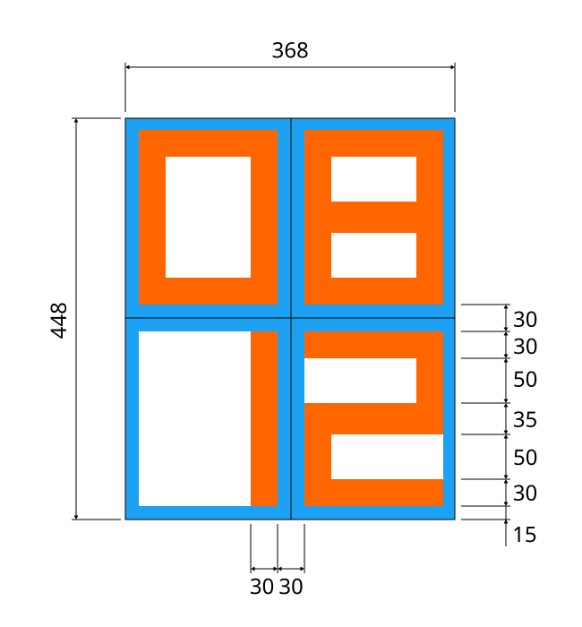
První řádek slouží pro zobrazeni hodin, druhý řádek pro zobrazení minut. Tloušťky jednotlivých segmentů a rozestupy jsou také zakresleny. Modře je znázorněna oblast, kde se nevykreslují číslice, ale je možno kreslit pozadí ciferníku. Jsou znázorněna jen čtyři čísla, zbytek si již odvodíte sami.
Funkce a struktury na implementaci
Postupně naimplementujte následující funkce a struktury.
Funkce pro vykreslení času
void watch_draw_time(TGAImage* self, const int hours, const int minutes);
Funkce nakreslí do obrázku self čas zadaný pomocí času v hodinách (hours) a minutách (minutes).
Barvu čísel si zvolte libovolně, stejně jako barvu pozadí.
Struktura pro reprezentaci barvy pixelu (RGBA)
Barva se do každého pixelu zapisuje jako čtveřice bajtů BGRA (B - Blue, G - Green, R - Red,
A - Alpha). Nadefinujte si strukturu RGBA, která bude tyto bajty reprezentovat pomocí čtyř
proměnných: r, g, b, a patřičného datového typu.
Funkce pro vykreslení času s určením barev
void watch_draw_time_color(
TGAImage* self,
const int hours,
const int minutes,
const RGBA* fg_color,
const RGBA* bg_color
);
Funkce nakreslí do obrázku self čas zadaný pomocí času v hodinách (hours) a minutách (minutes).
Barva čísel je předána parametrem fg_color, barva pozadí pak parametrem bg_color.
Létající písmenka
Využijte znalosti dvourozměrných polí, řetězců a argumentů programu pro vytvoření následující animace:
-
Vytvoříme si strukturu reprezentující vykreslovací plochu
typedef struct { char *content; // rows x cols "pixelu" int rows; int cols; } Board; -
Naimplementujeme si funkci pro vytvoření nové vykreslovací plochy o předaných rozměrech
Board* board_new(int rows, int cols) { // dynamická alokace paměti pro strukturu složenou z pointeru na obsah a dvou proměnných udávající rozměry // dynamická alokace paměti pro rows*cols pixelů typu char a uložení do pointeru content // uložení rows a cols do struktury a vrácení }Nesmíme také zapomenout ošetřovat různé chybové stavy - alokace paměti nemusí být vždy úspěšná a musíme provést kontrolu, zda navrácená paměť není
NULL. K této funkci je také vhodné doimplementovat funkci pro uvolnění pixelů a poté samostatné struktury:void board_delete(Board* b); -
Funkce pro vykreslení pixelu / znaku
Pro jednoduší a čitelnější kód si naimplementujeme funkci, která nám vykreslí znak
cna řádekrowa sloupeccol. Funkce by také měla zkontrolovat, zda souřadnice není před nultým či posledním řádkem a sloupcem, aby nedocházelo k pádu programu nebo k vykreslování jinam.void board_draw_pixel(Board *b, int row, int col, char c);Přepočet 2D souřadnice
[row, col]na 1D index můžeme podle následujícího obrázku:
-
Vykreslení rámečku
Kolem okrajů vykreslíme rámeček pomocí funkce
board_draw_pixel. Pro vykreslování rámečku NENÍ potřeba procházet vnitřek - stačí dvě smyčky za sebou. První smyčka bude procházet všechny řádky a kreslit na nultý a poslední sloupec. Obdobně druhá smyčka bude procházet sloupce a kreslit na nultý a poslední řádek. Procházením vnitřku plochy se může znatelně zpomalit např. při rozlišení 8k.################# # # # # # # # # # # # # ################# -
Reprezentace písmenka a jeho vykreslování
Písmenko budeme reprezentovat pomocí struktury složené ze znaku, pozice a rychlost pohybu:
typedef struct { int row; int col; } Coord; typedef struct { char c; Coord position; Coord speed; } Letter;Rychlost pohybu
speedbude nabývat hodnot-1pro směr vlevo v případě sloupcové souřadnice nebo směr nahoru v případě řádkové souřadnice. Hodnota1pak bude znamenat směr doprava respektive dolů.Následně si vytvoříme funkci pro jeho vykreslení do plochy:
void letter_render(Letter *letter, Board *board); -
Pohyb písmenka s odrážením od stěn
Vytvoříme si funkci simulující jeden pohyb písmenka:
void letter_step(Letter *letter, Board *board);K aktuální pozici písmenka v řádku a sloupci přičteme rychlost
speedz odpovídající souřadnice. Poté zkontrolujeme, zda je nová pozice na prvním řádku/sloupci či předposledním řádku/sloupci. Pokud ano, tak změníme směr písmenka a tím dojde v příštím kroku k odrazu. -
Hlavní smyčka
Pro otestování odrazu je opět vhodné si udělat hlavní vykreslovací smyčku:
Board *b = board_new(20, 50); Letter l; l.c = 'O'; l.position.row = b->rows / 2; l.position.col = b->cols / 2; l.speed.row = 1; l.speed.col = -1; for(;;) { // smazani terminalu printf("\e[1;1H\e[2J"); // vykresleni ramecku board_draw_border(b); // jeden krok pismenka letter_step(&l, b); // vykresleni pismenka letter_render(&l, b); // uspani na 500 ms usleep(500 * 1000); } -
Více písmenek
Textový řetězec si převedeme na pole létajících písmenek pomocí funkce:
typedef struct { Letter *letters; int count; } Sentence; Sentence* sentence_new(const char* sentence) { // dynamická alokace struktury sentence // dynamická alokace pole pro písmenka letters // v cyklu projdeme řetězec sentence a nastavíme písmenka v letters, tak aby následovala za sebou a měla náhodnou rychlost // vrátíme ukazatel na strukturu }Vykreslovací smyčku poté upravíme, aby uměla pracovat s celou větou a ne jenom s jediným písmenkem - prakticky půjde pouze o doplnění cyklu přes všechna písmenka.
Soubory
K vyřešení těchto úloh by vám mělo stačit znát soubory a TGA (a samozřejmě veškeré předchozí učivo).
Spočítání řádků
Naimplementujte funkci, která načte soubor na zadané cestě a vrátí počet řádků, které se v něm vyskytují.
int count_lines(const char* path);
Kopírování souboru
Naimplementujte funkci, která přijme cestu ke vstupnímu a výstupnímu souboru a zkopíruje obsah vstupního souboru do výstupního souboru.
void copy_file(const char* src, const char* destination);
Šifrování souboru
Naimplementujte funkci, která přičte číslo key ke všem znakům v souboru na zadané cestě.
void encrypt_file(const char* path, int key);
Dále udělejte druhou funkci, která od znaků v souboru na zadané cestě naopak číslo key odečte.
Otestujte, že soubor po zašifrování a odšifrování obsahuje stejný obsah. Pro testování používejte
soubory s ASCII textem.
void decrypt_file(const char* path, int key);
Meme generátor
Vytvořte generátor meme obrázků dle instrukcí na standardním vstupu:
blank.tga
meme.tga
2 2
I dont always do
memes
but when i do
i do them in C
Možné kroky pro vytvoření generátoru:
- Načtěte TGA obrázek pozadí (např. tento), jehož cesta bude zadána na prvním řádku na vstupu programu. Dále načtěte ze vstupu cestu k výstupnímu TGA obrázku, a počet řádků v horní a spodní části obrázku, do kterých budete vypisovat text.
- Načtěte obrázek pro každé písmeno anglické abecedy (obrázky jsou k dispozici zde), a uložte si tato písmena do pole.
- Načtěte ze vstupu daný počet řádků textu a každý řádek vykrselete do načteného obrázku s pozadím. Pro vykreslení řádku v cyklu projděte všechny znaky řádku, pro každý znak nalezněte TGA obrázek odpovídající danému znaku, a překopírujte jej na odpovídající místo v obrázku s pozadím. Po vykreslení každého znaku se posuňte na vykreslované pozici doprava o šířku vykresleného písmene, po vykreslení řádku se posuňte o výšku řádku níže.
- Zapište výsledný meme obrázek na cestu zadanou na druhém řádku vstupu programu.
Pokud chcete přidat do výsledku průhlednost, můžete pro vykreslování můžete využít tzv. alfa blending. Při zápisu písmenka do pozadí můžete výslednou barvu pixelu pro každou barevnou složku vypočítat následovně: $$ \text{RES} = \frac{\text{LETTER} \cdot \text{LETTER.ALFA} + \text{BG} \cdot (255 - \text{LETTER.ALFA})}{255} $$
SDL
Zkuste vytvořit nějakou animaci nebo jednoduchou hru pomocí knihovny SDL.
Tvorba animace
Pomocí knihovny pro práci s GIF animacemi nebo pomocí SDL vytvořte nějakou zajímavou animaci. Například se zkuste přiblížit této animaci z Matrixu:

nebo můžete zkusit vytvořit animaci ohně z počítačové hry Doom:
Had
Zkuste vytvořit jednoduchý klon hry Snake pomocí SDL.
-
Vykreslete mřížku s políčky o rozměrech 32x32
- Nekreslete první dvě a poslední dvě políčka
- Do struktury
Gamepřidejte rozměry vnitřní mřížky - Presuňte vykreslování do vlastní funkce
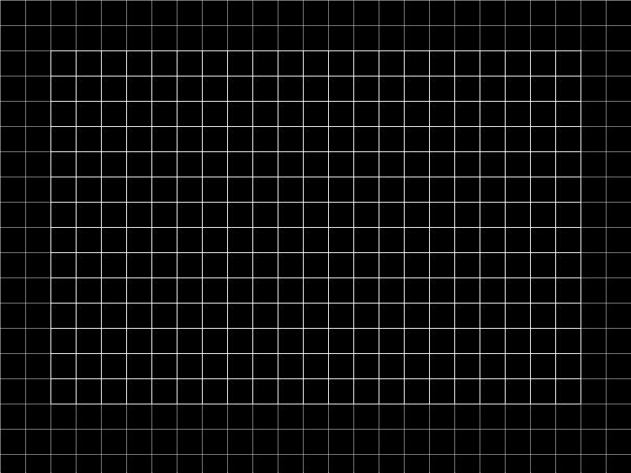
-
Reprezentace a inicializace hada pomocí struktury
Snaketypedef struct { SDL_Point *parts; // pole souradnic clanku hada int tail; // index souradnice ocasu v poli parts int head; // index souradnice hlavy v poli parts } Snake;-
pamatujeme si souřadnice (
SDL_Point) všech aktivních článků hada v mřížce- had může maximálně zabírat celou mřížku - alokace pole o velikosti ROWS x COLS
- pamatujeme si index ocasu a index hlavy, které pak budeme posunovat pro pohyb
-
vytvoříme hada o dvou článcích uprostřed mřížky
- uložíme souřadnici článku a inkrementujeme indexy hlavy
- a ještě jednou pro ten druhý článek
-
-
Vykreslení hada
- projdeme všechny články od ocasu k hlavě a vykreslíme jako čtverce v mřížce
- nastavíme si
i = tail - cyklus dokud
inení index hlavy- vykreslíme čtverec se souřadnici
iv mřížce - posuneme se na další článek
- pokud jsme na konci pole, tak pokračujeme od začátku pole
parts(modulo...)
- pokud jsme na konci pole, tak pokračujeme od začátku pole
- vykreslíme čtverec se souřadnici
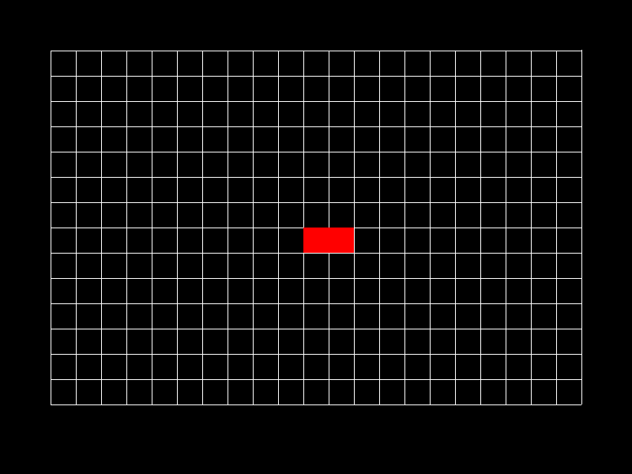
-
Pohyb hada
- pokud uběhlo 200 ms, tak pohnout hada o políčko
- inkrementace indexu ocasu (opět s modulem)
- výpočet nové hlavy jako
old_head + direction - uložení nové hlavy do pole parts na index hlavy
- inkrementace indexu hlavy (opět s modulem)
-
Pohyb pomocí šípek
-
Generování jablek
- vygenerovat náhodnou souřadnici jablka a vykreslovat jako čtverec
- pokud se hlava dostane na pozici jablka, tak neposunovat index ocasu (dojde k zvětšeni hada)
-
Při nárazu do stěny či do sebe vypsat konec hry se skórem
-
Vykreslení hada pomoci textur včetně záhybů
Textura obsahuje v mřížce políčka o velikosti 64x64. Jednotlivá políčka lze vybrat pomocí třetího parametru
srcrectvSDL_RenderCopy. Záhyb lze vybrat podle pozice předchozího a následujícího článku.
Časté chyby
V této sekci naleznete často se vyskytující chyby, na které můžete narazit, spolu s návodem, jak je vyřešit.
Záměna = a ==
- Operátor
=přiřazuje hodnotu do svého levého operandu a vyhodnotí se s hodnotou pravého operandu. - Operátor
==porovnává dvě hodnoty a vyhodnotí se jako pravdivostní hodnotabool.
Je důležité tyto operátory nezaměňovat! Oba dva operátory jsou výrazy, takže se v něco vyhodnotí a i když je použijete špatně, tak často nedostanete chybovou hlášku, což jejich záměnu dělá ještě nebezpečnější.
int a = 0;
a = 5; // nastaví hodnotu `5` do proměnné `a`
a == 5; // porovná `a` s hodnotou `5`, vrátí hodnotu `true`, ale nic se neprovede
// podmínka se provede, pokud se `a` rovná `5`
if (a == 5) {}
// podmínka se provede vždy, výraz `a = 5` se vyhodnotí na `5` (`true`)
// zároveň při provedení podmínky se přepíše hodnota proměnné `a` na `5`
if (a = 5) {}
Záměna & s && nebo | s ||
- Operátor
&provádí bitový součin, očekává jako operandy celá čísla (např.int) a vrací celé číslo. - Operátor
&&provádí logický součin, očekává jako operandy pravdivostní hodnoty (bool) a vrací pravdivostní hodnotu.
Je důležité tyto operátory nezaměňovat. Jelikož bool lze implicitně převést na celé číslo a naopak,
záměna těchto operátorů opět typicky nepovede k chybě při překladu, nicméně program nejspíše při
jejich záměně nebude fungovat tak, jak má. Operátor & má zároveň větší
přednost než &&, takže se výraz
s tímto operátorem může vyhodnotit jinak, než očekáváte. Obdobná situace platí i u dvojice
operátorů | (bitový součet) a || (logický součet).
int a = 3;
a & 4; // `0`
a && 4; // `true`
// stejné jako a > (5 & a) < 6
if (a > 5 & a < 6) {}
Použití operátoru ^ pro umocnění
Operátor ^ provádí v C bitovou operaci XOR,
nesnažte se jej tedy použít k výpočtu mocnin! Pro výpočet mocniny použijte funkci pow
(power je anglické označení pro mocninu).
#include <stdio.h>
#include <math.h>
int main() {
int a = 5 ^ 2;
printf("%d\n", a);
int b = pow(5, 2);
printf("%d\n", b);
return 0;
}
Použití neexistujících negací operátorů porovnávání
Jediné existující operátory porovnávání v C jsou <, <=, >, >=, == a !=.
Operátory jako !<, !>, =< ani => v C neexistují! Negací operátoru < je operátor >= a negací operátoru
> je operátor <=.
Porovnávání výrazu s více hodnotami najednou
Pokud budete chtít zjistit, jestli např. nějaká proměnná je menší než jedna hodnota a zároveň větší
než jiná hodnota, musíte tyto dvě kontroly provést separátně a poté jejich výsledek spojit logickým
operátorem &&. Pokud použijete výraz jako např. 2 < a < 8, tak se 2 < a vyhodnotí jako hodnota
typu bool, a poté se provede porovnání true < 8, popřípadě false < 8, což nejspíše není to, co
zamýšlíte.
#include <stdio.h>
int main() {
int a = 100;
// špatně
if (2 < a < 8) {
printf("A: a patri do intervalu (2, 8)\n");
}
// správně
if (2 < a && a < 8) {
printf("B: a patri do intervalu (2, 8)\n");
}
return 0;
}
Středník za for, while nebo if
Příkazy for, while nebo if za svou uzavírací závorkou ) očekávají jeden příkaz:
if (a > b) printf("%d", a);
nebo blok s příkazy:
if (a > b) {
printf("%d", a);
...
}
Pokud však za závorku dáte rovnou středník (;), tak to překladač pochopí jako prázdný příkaz, který
nic nedělá.
V následující ukázce se provede 10× prázdné tělo cyklu for a následně se jednou vypíše řetězec "Hello\n".
#include <stdio.h>
int main() {
for(int i = 0; i < 10; i++); {
printf("Hello\n");
}
return 0;
}
Zde opět středník za if reprezentuje prázdný příkaz, takže blok kódu s příkazem printf se provede
vždy, i když je tato podmínka nesplnitelná.
#include <stdio.h>
int main() {
if(0); {
printf("Hello\n");
}
return 0;
}
Je to ekvivalentní, jako byste napsali
#include <stdio.h>
int main() {
if (0) { /* zde není co provést */ }
// tento blok se provede vždy
{
printf("Hello\n");
}
return 0;
}
Špatné volání funkce
Abychom zavolali funkci (tj. řekli počítači, aby začal vykonávat kód, který v ní je), napíšeme název funkce, závorky a do nich případně seznam argumentů. Při volání funkce už nezadáváme její návratový typ, ten se udává pouze u definice funkce.
int secti(int a, int b) {
return a + b;
}
int main() {
secti(1, 2); // správně
int secti(1, 2); // špatně
return 0;
}
Záměna ' s "
- Apostrof (
') slouží k zapsání (jednoho) znaku. Neukládejte do něj více znaků či celý text. - Uvozovky (
") slouží k zapsání řetězce, tj. pole znaků ukončeného hodnotou0.
char a = 'asd'; // špatně, více znaků v ''
char a = "asd"; // špatně, ukládáme řetězec do typu `char` (mělo by být `const char*`)
char a = 'x'; // správně
const char* str = "hello"; // správně
Porovnávání řetězců pomocí ==
Řetězce jsou v jazyce C reprezentovány jako pole znaků. Když pracujete s řetězcem, tak máte obvykle k dispozici ukazatel na jeho první znak.
Pokud k porovnání dvou řetězců použijete operátor ==, tak vlastně porovnáte akorát hodnotu dvou
ukazatelů. Pokud budou tyto ukazatele obsahovat stejnou adresu v paměti, tak bude výsledek pravdivý.
Ale dva řetězce se můžou rovnat i v případě, že leží na různých místech v paměti! Pro porovnání
dvou řetězců tak použijte funkci strcmp.
#include <string.h>
void funkce(const char* a, const char* b) {
if (a == b) { ... } // špatně
if (strcmp(a, b) == 0) { ... } // správně
}
Může vám přijít zvláštní, že pokud porovnáváte dva řetězcové literály, tak porovnání dvou stejných řetězců pomocí
==bude fungovat (vrátí pravdivou hodnotu). To je ale dáno pouze tím, že překladač stejné řetězcové literály ukládá na stejné místo v paměti, takže mají stejnou adresu a==zde bude fungovat. Pro porovnávání řetězců, které ale načtete např. z terminálu nebo ze souboru, to však fungovat nebude, proto==nikdy pro porovnávání řetězců nepoužívejte.
Porovnávání řetězce načteného funkcí fgets
Funkce fgets umí načíst řádek ze vstupního souboru či ze
standardního vstupu. Pokud s takto načteným řádkem chcete dále pracovat, dejte si pozor na to, že
na konci tohoto řetězce může být znak odřádkování ('\n')! Pokud tomu tak bude, tak nebude např.
fungovat přímé porovnání řádku s nějakým řetězcovým literálem:
#include <stdio.h>
#include <string.h>
int main() {
char buffer[80];
fgets(buffer, sizeof(buffer), stdin);
// Pokud uživatel zadá v terminálu ahoj, tak v proměnné `buffer` bude
// řetězec "ahoj\n", takže toto porovnání nebude fungovat.
if (strcmp(buffer, "ahoj") == 0) {
printf("Ahoj!\n");
}
return 0;
}
Pokud tedy chcete takto pracovat s načteným řádkem, nejprve byste se měli podívat, jestli nekončí znakem odřádkování, a pokud ano, tak tento znak odstranit.
Znak odřádkování na konci řetězce být nemusí například pokud načtete poslední řádek ze souboru, který není ukončen znakem odřádkování. Před změnou řetězce s načteným řádkem byste tak vždy měli nejprve zkontrolovat, že se na jeho konci znak odřádkování opravdu nachází.
Špatná práce s ukazatelem
Ukazatele jsou čísla, která interpretujeme jako adresy v paměti. Můžete s nimi sice provádět některé aritmetické operace (například sčítání či odčítání), nicméně v takovém případě provádíte výpočet s adresou, ne s hodnotou, která je na dané adrese uložena.
Například v této funkci, která by měla přičíst hodnotu x k paměti na adrese ptr, musíte
nejprve přistoupit k hodnotě na dané adrese (*ptr), a až k této hodnotě pak přičíst x:
void pricti_hodnotu(int* ptr, int x) {
ptr += x; // špatně, přičteme `x` k adrese `ptr`
*ptr += x; // správně, přičteme `x` k hodnotě na adrese `ptr`
}
Vytváření spousty proměnných místo použití pole
Pokud potřebujete jednotně pracovat s větším počtem hodnot v paměti, použijte pole. Signálem, že jste měli použít pole, může být to, že máte ve funkci spoustu proměnných a pro rozlišení každé proměnné musíte přidat nový řádek kódu:
for (a0 = 0, a1 = 0, a2 = 0, a3 = 0, a4 = 0, a5 = 0; i < pocet; i++)
{
if (hodnota == 1)
{
a0++;
}
else if (hodnota == 2)
{
a1++;
}
else if (hodnota == 3)
{
a2++;
}
...
}
Použití operátoru sizeof na ukazatel
Operátor sizeof se často hodí ke zjištění velikosti pole. Pokud jej ovšem použijete na ukazatel
(i kdyby v daném ukazateli byla adresa pole!), tak vám vrátí pouze velikost ukazatele, tedy
pravděpodobně hodnotu 8 na 64-bitovém systému.
char pole[3];
char* ptr = pole;
sizeof(pole); // 3
sizeof(ptr); // 8
Pozor na to, že pokud použijete datový typ pole pro parametr funkce, tak pro překladač se takový parametr chová jako ukazatel! Pole se do funkcí vždy předávají jako adresa prvního prvku pole.
void print_size(char pole[3]) {
sizeof(pole); // 8
}
Podobný problém může vzniknout i třeba při alokaci paměti. Například zde:
typedef struct {
int vek;
const char* jmeno;
} Osoba;
int main() {
Osoba* osoby = (Osoba*) malloc(sizeof(Osoba*) * 5);
return 0;
}
Dochází k alokaci paměti pro 5 ukazatelů na datový typ Osoba, místo alokace paměti pro pět hodnot typu Osoba!
Správné použití by bylo malloc(sizeof(Osoba) * 5);
undefined reference to 'NAZEV'
Snažíte se zavolat funkci NAZEV, která nebyla nalezena v žádném
objektovém souboru, který jste předali pro překlad. Ověřte si, že
máte název volané funkce správně.
Paměťové chyby
V C lze s pamětí programu pracovat manuálně, což velmi často vede k různým paměťovým chybám, které můžou způsobit špatné chování či pád programu. Jsou také nejčastějším zdrojem různých zranitelností, které umožňují útočníkům převzít kontrolu nad programem nebo celým počítačem.
Pro částečnou prevenci paměťových chyb silně doporučujeme při vývoji C programů používat nástroj Address sanitizer.
Stack overflow
Pokud bychom vytvořili v zásobníkovém rámci moc proměnných, proměnné, které jsou moc velké, anebo bychom měli v jednu chvíli aktivních moc zásobníkových rámců (například při moc hluboké rekurzi), tak může dojít paměť určená pro zásobník. Tato situce se nazývá přetečení zásobníku (stack overflow):
int funkce(int x) {
return funkce(x + 1);
}
int main() {
funkce(0);
return 0;
}
Segmentation fault
Tato chyba je způsobena pokusem o zapsání nebo čtení neplatné adresy v paměti. K této chybě často dochází zejména při těchto situacích:
-
Zapísujeme nebo čteme z paměti pole mimo jeho rozsah (tj. "před" nebo "za" pamětí pole). Tato situace se nazývá buffer overflow. Tato chyba už způsobila nespočet bezpečnostních chyb v různých softwarech.
#include <stdlib.h> int main() { int* p = (int*) malloc(sizeof(int)); p[1] = 5; return 0; } -
Pokoušíme se přečíst hodnotu na adrese 0 (
NULL), která je používána pro inicializaci ukazatelů. Tato situace se nazývá null pointer dereference.int main() { int* p = (void*) 0; int a = *p; return 0; } -
Snažíme se přistoupit k paměti, která již byla uvolněna. Tato situace se nazývá use-after-free.
#include <stdlib.h> int main() { int* p = (int*) malloc(sizeof(int)); free(p); *p = 1; return 0; }Přístup k již uvolněné paměti může nastat i bez použití dynamické paměti. Například tento kód není správně:
#include <stdlib.h> int* vrat_ukazatel(int x) { int y = x + 1; return &y; } int main() { int* p = vrat_ukazatel(1); *p = 1; return 0; }Jakmile totiž vykonávání funkce
vrat_ukazatelskončí, tak se uvolní paměť jejich lokálních proměnných. Adresa uložená vptak obsahuje nevalidní paměť a je chybou k ní přistupovat (ať už číst, tak zapisovat). -
Snažíme se uvolnit pamět, která již byla uvolněna. Tato situace se nazývá double free.
#include <stdlib.h> int main() { int* p = (int*) malloc(sizeof(int)); free(p); free(p); return 0; }
Zkuste si programy výše spustit nejprve bez Address sanitizeru a poté s ním. Dokázal sanitizer detekovat některé z popsaných paměťových chyb?
Memory leak
Pokud (opakovaně) alokujeme dynamickou paměť a neuvolňujeme ji, tak dochází k tzv. memory leaku (úniku paměti). Pokud paměť programu stále roste a není nijak uvolňována, tak postupem času počítači nutně dojde paměť a program tak bude násilně ukončen.
void leak() {
// adresa alokované paměti je zahozena, nelze ji tedy uvolnit
malloc(sizeof(int));
}
Tato chyba je celkem zákeřná, protože pokud paměť roste pomalu, tak může trvat dost dlouho, než paměť programu dojde a vy se tak dozvíte o problému. K nalezení chyby doporučujeme opět použít Address sanitizer, který na konci programu zkontroluje, jestli všechny dynamicky naalokované bloky byly korektně uvolněny.
Nemusíte se však bát, že by neuvolněná paměť ve vašem programu nějak narušovala chod operačního systému. I když paměť manuálně neuvolníte, tak moderní operační systémy veškerou paměť vašeho spuštěného programu uvolní, jakmile program skončí. Dokud však program běží, tak bude neuvolněná paměť zabírat místo, což může způsobovat problémy.
Galerie projektů
Zde naleznete vybrané projekty od studentů minulých ročníků UPR:
Galerie projektů 2020/2021
Galerie vybraných projektů od studentů z ročníku 2020/2021.
Fruit Ninja
Angry Birds
PacMan
Space Invaders
Tetris
Galerie projektů 2023/2024
Galerie vybraných projektů od studentů z ročníku 2023/2024.